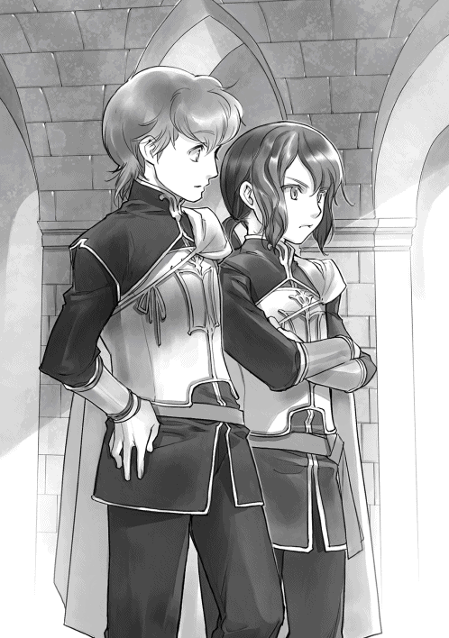
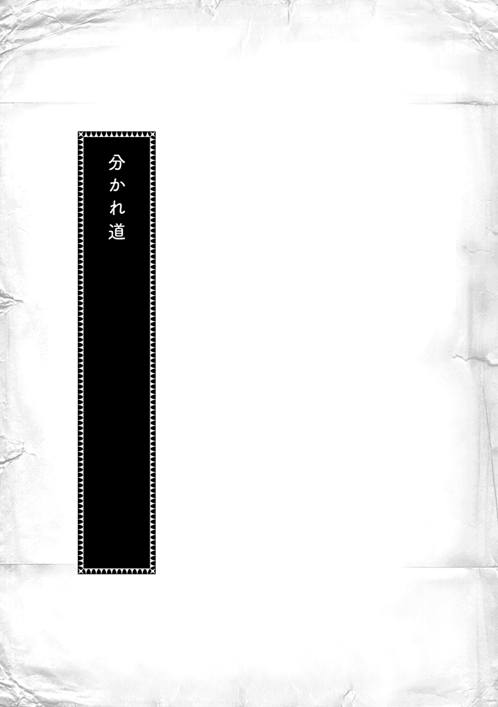

| 本好きの下剋上～司書になるためには手段を選んでいられません～第四部「貴族院の自称図書委員V」 | |
| 香月美夜 | |
| TOブックス (2018) | |
エーレンフェストの下町を美しい街へと生まれ変わらせたローゼマインは、他領への影響力を強めるため、さらなる発展を目指す。そのためには、民の協力が欠かせない。貴族との壁を壊すため、彼女は自ら活発に動き回る。直轄地の印刷工房の視察や、染め物コンペの開催による職人の発掘、図書館建設計画の妄想（？）などなど。複雑な領地問題が絡む兄の結婚式では、不穏な旧ヴェローニカ派への警戒も必要に。領地内の派閥争いは激しさを増していく。季節が冬の到来を告げる頃、貴族院では二年生が始まるのだった。ついに５周年！ 騒動続きで忙しすぎるビブリア・ファンタジー最新刊！
イラスト：椎名 優 You Shiina
デザイン：ヴェイア Veia
プロローグ
領主会議が終わると、会議の結果が領地の上層部に伝えられ、城で働く貴族達やギーベに連絡される。アーレンスバッハから二人の花嫁がやってくることは、最も重要な決定の一つだった。
「おぉ、フロイデンの結婚に許可が出たのか......」
ヴィルトル子爵 であるシドニウスの口から上擦 った声が漏 れた。領主から届いた知らせには、一度は却下された彼の長男フロイデンの結婚許可と、星結びの儀式に関する詳細が記されている。歓喜に震える手で知らせを握る彼は、この許可が誰のおかげで下りたものなのか、よく知っていた。
「これはぜひグラオザム様にも知らせねば」
重要な知らせを抱えた白い鳥が、ヴィルトルからゲルラッハへ向かって飛び立つ。エーレンフェストの南に位置するヴィルトルとゲルラッハは、旧ヴェローニカ派の中心ともいえるギーベが治めている土地である。
ゲルラッハにあるギーベの夏の館へオルドナンツが飛んできたのは、ちょうどギーベの家族が夕食を摂 っている時間だった。食堂に現れた白い鳥に一家の目が集中する。
「何が起こったのだ？」
濃い紫の髪を揺らして最初に反応したのは、ゲルラッハ子爵の末息子マティアスだ。次の冬には四年生になる中級騎士見習いである。彼は訓練によって身に付いた習慣で、肉を突き刺したフォークから手を離した。すぐにでもシュタープを出せるように身構えながら、青い目でじっとオルドナンツの行方を追う。
よほど急ぎの用件でなければ、六の鐘が鳴った後にオルドナンツを飛ばすことはない。悠然 と食堂内を飛んだ白い鳥は、一家の長 であるゲルラッハ子爵グラオザムの腕に降り立ち、嘴 を開いた。
「グラオザム様、シドニウスです。アウブ・エーレンフェストより連絡がございました。領主会議においてアーレンスバッハと協議した結果、我が息子フロイデンとベティーナ様の結婚が決まったそうです。詳細は直接お目に掛かった時に......」
シドニウスとはギーベ・ヴィルトルの名前だ。マティアスは同じ言葉を三回繰り返すオルドナンツをじっと見つめる。警戒 すべき対象ではないとわかったけれど、三度聞いても内容が信じられない。
「フロイデン様とベティーナ様のご結婚は、数年前に申請が却下されていたはずです。アウブが一度下した決断を簡単に翻 せば、領地内は混乱するというのに、今になって認められるなど......本当でしょうか？」
しかも、今はユルゲンシュミット全体が魔力不足だ。特にアーレンスバッハの魔力不足は酷 いと貴族院で情報を集めた時にマティアスは知った。よほど領地の援助に結びつくような領主一族や上級貴族ならばまだしも、領地関係に影響が少ない中級貴族を他領へ出したいとはアウブ・アーレンスバッハが考えないだろう。そんなマティアスの疑問を父親のグラオザムが鼻で笑った。
「其方 も聞いただろう？ 領主会議で決められた、と」
「アーレンスバッハが何を考えて中級貴族の結婚に口添えをしたのか考えているのです。何の含みもなく、中級貴族の婚姻 を後押しはしないと思うので......」
「若い二人のために手を尽くしてくださったのだろう。領主の独断による婚約の解消は、不幸しか生まぬ。あの方はそれをよくご存じなのだ」
マティアスはアーレンスバッハの利について尋ねたのだが、グラオザムは質問の意図とは少し違う答えを返してきた。灰色の目が息子の様子を探るようにじっと見てくる。突っ込んで尋ねても、自分の望む返答はなさそうだ。マティアスは瞬時にそう判断した。
「さすが大領地の判断ですね」
マティアスが引くと、グラオザムは満足そうに頷 き、母親は「本当に」と嬉 しそうに微笑 んだ。
「アーレンスバッハのお口添えがなければ叶 わなかった結婚ですもの。喜ばしいこと」
「父上、近い内にヴィルトルへお祝いに行きませんか？ できれば詳細を伺 いたいです」
「ふむ。ヤンリックの婚姻にもお力添えをお願いできれば良いが......」
「家族皆で出かけましょう。フロイデン様へのお祝いの品は何が良いかしら？」
両親だけではなく、マティアスの兄であるヤンリックも加わってヴィルトルへ赴 く計画を立て始めた。一度は却下された結婚に許可が下りたのだ。喜ばしいことだし、ヴィルトルとゲルラッハはギーベ同士の仲が良いので、その言動には何の不思議もない。
だが、マティアスは「アーレンスバッハのおかげ」と家族が喜んでいる様子に違和感 を覚えた。貴族院の様子とあまりにも違う。エーレンフェストから他領へ流行を広げ、領地の順位を上げていこうと寮内で団結していた空気が大人達には感じられない。領主一族を襲撃 した貴族の背後にはアーレンスバッハがいるという認識が、自分の家族にはないように思えて仕方がない。未 だに大領地だから素晴らしいと、何も考えずに賞賛しているように見える。
......ゲルラッハはアーレンスバッハに接しているし、今まではその方が上手くいっていたが、この先もこのままで良いのか？
春を寿 ぐ宴 でヴィルフリートとローゼマインの婚約が発表された。これから先はあの二人を中心にエーレンフェストが動いていくことになるだろう。ローゼマインが作り出した流行を他領に広げ、発展していくはずだ。マティアスはそう感じた。それなのに、何故 これから先も領主一族が警戒するアーレンスバッハと積極的に交流を持とうとするのだろうか。
......アーレンスバッハは落ち目ではないか。
貴族院で集めた情報がマティアスの頭を巡る。境界を接するアーレンスバッハのビンデバルトを見れば、魔力不足の深刻さは明らかだ。それに、次期領主を領主の末娘のディートリンデと、領主と養子縁組した孫娘で争っているらしい。年の分ディートリンデが優勢であるとか、彼女の母親であるゲオルギーネの出身地であるエーレンフェストの順位が上がるとそれだけ彼女が有利になると聞いた。本当かどうかはわからない。
......父上はディートリンデ様を次期領主に、と考えているのだろうか。
エーレンフェストの順位上昇と同時に、アーレンスバッハと利を分け合う方法がそれくらいしか思い浮かばず、マティアスは腕を組み、濃い紫の髪を軽く振って更に考え込む。
......エーレンフェストとアーレンスバッハの橋渡し......？ だが、父上がそのようなことを行うとはどうにも考えにくいな。
マティアスがいくら考えたところで何も答えが出ないまま、ヴィルトルへお祝いの品を持っていく日になった。ヴィルトルとゲルラッハでは、時折、共同で騎士の訓練も行っている。今回はせっかくなので合同訓練も行うということになり、騎士見習いのマティアスは強制参加となった。
「マティアス、久し振りだな」
ギーベ・ヴィルトルの夏の館でマティアスに一番に声をかけてきたのは、ギーベの二番目の息子であるラウレンツだ。彼も騎士見習いなので、他の貴族の子供より交流がある。
「ラウレンツ。フロイデン様の婚姻、おめでとう」
「あぁ、家中が浮かれているよ」
ギーベ同士が挨拶を交わしている間、二人は再会を喜び合う。貴族院と違い、領地で過ごす間は、なかなか気の合う友人と会える機会が少ないので純粋に嬉しいものだ。
「其方等は浮かれておらず、早速騎士達の訓練に参加してきてはどうだ？ コルネリウス様やアンゲリカ様にずいぶんと離されていたではないか。情けないことだ」
マティアスの兄であるヤンリックが最終学年だったため、両親は領地対抗戦を見に来ていた。その際のディッターで、コルネリウス達とマティアスの間に明確な差ができていることが父親のグラオザムには気に入らないらしい。
......今までゲルラッハのギーベ一族は、中級貴族でありながら上級貴族に相応 しい魔力量があることを自慢していたからな。
昔、アーレンスバッハの姫が輿入 れした時に同行した側近の一人と、当時のギーベ・ゲルラッハが結婚した。そのため、マティアスの家系は中級貴族といっても上級貴族に匹敵 するくらいの魔力がある。長兄の子が上級貴族並みの魔力を示せば、三代続けて上級貴族並みの魔力を持つということで上級貴族に昇格できる。そのため、グラオザムは魔力量や上級貴族との差に敏感だ。
「ローゼマイン様から授けられた魔力圧縮の方法が素晴らしいのでしょう。コルネリウス様達だけではなく、他の領主候補生の護衛騎士達もぐんぐんと魔力を伸ばしています」
「元平民の青色巫女 見習いが考えた程度の魔力圧縮の方法くらい、其方等も考えれば良いではないか」
考えてすぐに思い浮かぶような魔力圧縮の方法ならば、領主が主導して人選し、お金を取ってまで広げるわけがない。派閥が違うせいで、マティアスにはローゼマイン式魔力圧縮方法を知る術 がないのだ。自分と同じように嘆いている子供が貴族院にどれだけいると思っているのか。旧ヴェローニカ派の学生達の声がマティアスの耳の奥に蘇る。
......「元平民」と嘲 るくせに、父上は彼女以上に効果のある魔力圧縮の方法を知っているのか？ どれだけ努力しても、魔力量に大きな差ができれば勝敗など一瞬でひっくり返されるのだぞ。
貴族院で我慢して溜 め込んでいた悔しさを刺激されて、父親に対する反抗心がマティアスの中で芽生える。
「では、元平民の魔力圧縮方法より効果的な方法を父上がご存じならば教えてください」
グラオザムはしばし沈黙し、考え込んだ。
「......そうだな。私自身が考案したものではないので許可を得る必要はあるが、息子に教えても良いか、あの方に尋ねてみよう」
それはあまりにも予想外の言葉だった。「あの方」とは誰なのか。不思議がるマティアスの前でヴィルトル子爵も「それは良いですな」と迎合している。
「グラオザム様も最近はずいぶんと努力していらっしゃるのでは？ 体つきが変わってきたではありませんか」
「あの方の要望に即座に応じるためには体を軽くしておく必要がありますから」
......確かに、一度決めたことに対する父上の努力はすごいな。
以前に比べるとずいぶんと締まってきた父親のお腹 を見て、マティアスは頷く。
「とりあえず、騎士見習いのマティアスは騎士達の訓練に参加してきなさい。魔力圧縮の方法を知っても、努力できなければ意味がないからな」
「ラウレンツ、其方も行って訓練してきなさい。領地対抗戦で無様な姿を見せることがないように、な」
騎士見習いであるマティアスとラウレンツは、応接室から体 よく追い払われた。
ギーベの騎士団が訓練している場所へ移動しながら、マティアスはラウレンツを見た。マティアスより一つ年下なのにラウレンツの方が少し背は高いし、体格が良くて騎士らしい。グッと拳 を握って腕に力を入れてみたが、二の腕の逞 しさも完全に負けている。鍛えているつもりでもなかなか体格が変わらず、どちらかというと細身で文官のような見た目のマティアスは、それが少し悔しい。
こっそり比べて落ち込んでいると、ラウレンツが不意に「なぁ」と声をかけてきた。少し顔を上げれば、ラウレンツのオレンジの目が期待に輝いている。
「グラオザム様の魔力圧縮方法、本当に教えてもらえると思うか？」
魔力圧縮によって魔力量に差ができて悔しい思いをしているのはマティアスだけではない。ラウレンツも、他の旧ヴェローニカ派の学生達も同じだ。
「父上に期待したくなる気持ちはわかる。だが、ラウレンツ、あの方とは誰だ？」
「......多分、ゲオルギーネ様だろうと思うが......。確信はないな」
マティアスも同じで、確信することはできない。なぜならば、父親達は常に「あの方」と言うだけで名前を挙げないからだ。手紙などの送り先も旧ベルケシュトックのアーレンスバッハ領にいる貴族で、その先が本当にゲオルギーネに繋 がっているのかどうかわからない。「あの方がいらっしゃる」と家族が大喜びしていた三年前にやって来たのがゲオルギーネなので、見当を付けただけだ。先程の会話の「あの方」がゲオルギーネを指すのかどうかはわからない。
......本当にゲオルギーネ様で間違いないのか？
マティアスは何年か前に見た姿を思い出そうとした。けれど、よく思い出せない。今より幼かった彼は、お茶会のために家を訪れたゲオルギーネに挨拶をしただけで、父親から同席の許可をもらえなかったからだ。薄いヴェールに隔 たれた赤い唇と、挨拶を受けている時の女王然とした振る舞い、それから、彼女に傅 き、殊更 丁寧に接していた両親の姿が印象的だった。ゲオルギーネがアーレンスバッハへ嫁ぐ前は、彼女に仕えていたと聞き、両親の態度に納得したものだ。
ゲオルギーネは大領地に第三夫人として嫁いだにもかかわらず、第一夫人になれる方なので優秀なのだろうと思う。ローゼマインが自分の側近達へ教えたように、輿入れ前のゲオルギーネが当時の両親に魔力圧縮の方法を教えた可能性はある。
......だが、アーレンスバッハの第一夫人となった今、エーレンフェストの貴族に自分の魔力圧縮の方法を教えるだろうか？
アーレンスバッハの魔力不足は深刻らしい。それならば、エーレンフェスト貴族のマティアス達ではなく、自領の貴族達に魔力圧縮の方法を伝えるはずだ。マティアス達に魔力圧縮の方法を教える利点がない。だからこそ、マティアスには「あの方」がゲオルギーネであると確信できないでいる。
「いくら考えてもわからないな。だが、あの方の正体より気になるのは、急な星結びの決定で忙しい時に騎士達の訓練が増えることだ」
「そういえば、ゲルラッハとの合同訓練を増やすと父上が言っていたな」
ラウレンツが思い出したように手を打った。何故今の段階でギーベ騎士団の合同訓練を増やす必要があるのか。マティアスは何とも言えない不安な気分になる。
......まるで領主一族襲撃事件で父上が呼び出しを受けた時のようだ。
グラオザムが大広間にいたという証言があるし、父親が領主一族を襲うようなことはしないと信じているけれど、事件に何らかの関わりがあるのではないかという疑いは消えない。あの時のようなモヤモヤとした嫌な気分が広がっていく。
「ラウレンツ、其方は星結びの儀式の詳細を知っているか？」
「いや、詳細は知らないな。フロイデン兄上の結婚は城ではなく、境界門で行われるらしい。両方の領主一族が参列する大がかりなものになるそうだ」
「......アーレンスバッハから領主一族が？」
「ランプレヒト様とアウブ・アーレンスバッハの姪 の結婚も同時に行われるからな」
その情報をマティアスは初めて聞いた。何故大領地が中級貴族の結婚に口を出してくるのかと不思議に思っていたが、騎士団長を父に持ち、領主一族の護衛騎士を務めるランプレヒトにも同時にアーレンスバッハから嫁を取らせるとなれば、話は別だ。アーレンスバッハはできるだけエーレンフェストの中核に食い込もうとしている。
「......どうにも不安だな。アウブに警戒を呼びかけるか？」
「別に構わないが、アウブはとても我々のような子供の意見など聞いてくれないだろう。それに、そんなことをすれば自分もどうなるか。父上達は......許さないはずだ」
ラウレンツが消極的な言葉を口にした。だが、マティアスはその保身に動いたつもりの言動が、本当に保身に繋がるかどうかわからないと思っている。
「その気持ちはわかる。だが、親の思惑がわからないまま、ただ動かされていると、我々もローデリヒと同じ道をたどることになるぞ」
父親の言うままに動き、責任を負わされて苦しんでいたローデリヒの姿が思い浮かぶ。自分の意思で派閥を移ることができなくても、自分がどのように動きたいと思っているのか。誰を主 として仰 ぎたいと考えているのか。行動で表明することはできるはずだ。
「どれだけ優秀でもローゼマイン様は次期領主にはなれないだろう、とヤンリック兄上が言っていた通り、婚約によって将来の第一夫人と決定してしまった。だが、私はこれから先のエーレンフェストはローゼマイン様を中心に動くと思っている。だから、父上達が領主一族の不利に働くことは看過 できない。......ローゼマイン様ならば、我々の話を聴いてくれるのではないだろうか」
「面会予約が取れれば、の話だな。ライゼガング系の貴族でも難しいらしいぞ」
ラウレンツがローゼマインとの接触が難しい様子を話してくれる。まさか同派閥の貴族でも面会できないほど警戒が厳しいなんてマティアスは考えていなかった。
「貴族院では側近を伝って情報を流すだけならば我々にも容易だったのだが......」
騎士見習いの練習で護衛騎士達と話をする機会が、決して多くはないがあった。領地に戻ると、彼等と話をすることさえ儘 ならない。
「何かが起こると決まったわけでもないのに心配性だな、マティアス。両方のアウブが集まるような場で何か起こすとは考えにくい。悩んだところで仕方がないぞ」
楽観的に構えているラウレンツを睨 んで、マティアスは腕を組んだ。

「父上達が仮に何か計画しているならば、それが動き出してから考えるのでは遅すぎる」
白の塔の一件に父親が関わっていたことは間違いないとマティアスは思っている。あの時期は頻繁 にアーレンスバッハと手紙のやりとりをしていたし、冬の社交界が始まるより先に城の狩猟 大会での一件を知っていた。だからこそ、ローゼマインが二年間眠ることになった襲撃事件にも関与している可能性を捨てきれないのだ。
「最悪の事態を想定し、回避策や身の振り方を予 め考えておくべきだ。違うか？」
「マティアス、其方......そうして先回りして色々と計画を練るところ、本当にグラオザム様の息子だな。よく似ている」
父親に似ていると言われても、今日のマティアスは全く嬉しくなかった。
見習い達と神殿
......あぁ、やっと終わった。養父様 、文句が多すぎ！
保護者達による愚痴 混じりの私的な領主会議の報告と、星結びの儀式の予定についての話し合いがようやく終わった。わたしは自室に戻ると、早速ハンネローレからもらった手紙を読み始める。
手紙にはエーレンフェストの本は薄くて持ちやすくて、最近の言葉で書かれているため、非常に読みやすかったと書かれていた。騎士の恋物語を読んで挿絵 を見て、非常にときめいたようだ。他にも何か恋物語があれば貸してくださいませ、と結ばれている。
......任せて！ お母様に頼んで恋愛小説を増やしてもらうから！
わたしの恋愛小説はフェルディナンドによって却下されてしまったので、恋愛小説に関しては、エルヴィーラと同派閥の執筆好きな貴婦人方に頑張ってもらいたい。
......次は貴族院の恋物語を貸してあげようっと。うふふん。
手紙を読み終わった後、わたしはハンネローレが貸してくれた本を見た。とても分厚くて装飾がごてごてしていて大きい。最初の表紙を捲 るのが、わたし一人では困難なくらいの重さがある。神殿の図書室にある天板が斜めになった閲覧机が真剣に欲しい。
中身はダンケルフェルガーに伝わる古いお話で、古くて難解な言葉で書かれている。最初の方は聖典に通じるような話もあって物語風に書かれているけれど、歴史書の一面も持っているようだ。これが本当に歴史書の一部だとしたら、ダンケルフェルガーはほとんど建国の頃から存在することになる。
......都合良く書き足されたことかもしれないから、真実を知るためにも色々な領地の本を読んでみたいな。
やはりダンケルフェルガーは武を尊 ぶ気質の土地柄のようで、どんなに負けても、戦って、戦って、戦って......勝利するまで戦い続けるような騎士の話が多い。土地柄がよく出ている他領の本は面白い。知らないことが盛りだくさんだ。これまで知らなかったお話ならば写本しておいた方が良いだろう。
「これからの季節は神殿と城の移動で忙しくなるのですけれど、フィリーネやハルトムートも写本を手伝ってくださいね」
「見習いも神殿へ同行する許可がアウブから出たのですか？」
ハルトムートの嬉しそうな声に、わたしは頷いた。
「養父様との話し合いの結果、神殿までは貴族街と同等という扱いに決まりました。ただし、神殿には貴族の側近が使える部屋が、護衛騎士の二人分しかありません。成人した護衛騎士以外は泊まれません。通いでお願いしますね」
橙 色の目を輝かせ、「かしこまりました」とすぐさま了承するハルトムートから、神殿と聞いて不安そうにしている女性の側近達へわたしは視線を移す。
「許可が出たことと、実際に神殿へ出入りするかどうかは別です。神殿の出入りにご家族が反対したり不快に感じたりするならば、今まで通り同行しなくても構いません」
「いいえ。わたくし、アンゲリカが言っていた神殿のご飯を食べてみたいです」
貴族社会では良く思われていない神殿だが、ユーディットはブリギッテと同じように貴族街育ちではないせいだろうか。ご飯を目当てに出入りするのを楽しみにしているらしい。フィリーネは弟のコンラートに会うことができるか尋ねてきた。前もってヴィルマに連絡しておいた方が良いけれど、孤児院に案内しても特に問題はないと思う。上級貴族のレオノーレは悩んでいたが、コルネリウスの「一度は自分の目で神殿を見てから、決めれば良いのでは？」という助言に従うことにしたらしい。確かに、何も見ずに神殿を判断されるよりは、一度自分の目で見てから判断してほしいと思う。
「文官見習いと護衛騎士見習いは全員が一度は足を運ぶことになりましたが、側仕 え見習いの皆はどうしますか？」
ブリュンヒルデとリーゼレータが顔を見合わせた。
「わたくし、今は刺繍 を優先したいと思っています。衣装作りが終わったら、一度ローゼマイン様がお育ちになった環境を拝見 したいとは思っておりますけれど......」
「大丈夫です、リーゼレータ。神殿はなくなりませんから、今はシュバルツ達の衣装を最優先にしてくださいませ」
フェルディナンドが衣装の出来に拘 るようなので、手先が器用なお嬢さん方には、わたしの分もぜひ頑張ってもらいたい。わたしが刺繍を勧めると、リーゼレータはクスクスと笑いながら裁縫箱へ手を伸ばした。
「では、わたくしも城でリーゼレータと共に刺繍をしますね。神殿には神殿の側仕えがいるのですから、わたくしが同行しても彼等が困るのではございませんか？」
貴族の側仕えが神殿で仕事をしようとすると、神殿の側仕えの仕事を取り上げることになる、とブリュンヒルデが指摘する。そんなことまで考えなかったが、確かにその通りだ。
「わたくしは城でのお仕事に専念いたしますけれど、染め物の打ち合わせなどには呼んでくださいませ。......それから、先日、お父様から連絡がございました。グレッシェルで印刷業の準備が整ったそうです。エルヴィーラ様に連絡を入れると申しておりました」
グレッシェル伯爵令嬢のブリュンヒルデがくれた情報に、わたしは軽く息を呑 んだ。
「平民とのやりとりが必須になるので、印刷業の準備はもっと時間がかかると思っていました。わたくしの予想よりずいぶんと早いです」
予想外だ。この分では他の土地でもあっという間に準備が整うかもしれない。わたしが印刷業の計画の見直しを考え始めたところで、ブリュンヒルデが小さく笑った。
「我が家はエルヴィーラ様と親戚ですし、ギーベ・ハルデンツェルからも色々と助言をいただいて、先に準備を進めていたようですから......」
「そうですか。では、ヴィルフリート兄様の最終確認が終わったら、グーテンベルクと共にグレッシェルに向かうことになるのですね。どのようなところか楽しみです」
「グレッシェルへ向かう時はわたくしも同行させてくださいませ」
ブリュンヒルデの言葉に、わたしは「えぇ、案内をお願いしますね」と答えた。
城での采配 を終えたフェルディナンドから「明日の朝食後に神殿へ戻る」というオルドナンツが飛んできた。わたしが指定された時間に側近達をぞろぞろと連れて行くと、「ずいぶんと人数が多いが、これほど必要か？」とフェルディナンドは眉 をひそめる。
「今日は見習い達の神殿見学会だと思ってくださいませ。仕事内容の説明と神殿内を案内する予定です。会合がない時は、文官は交代でも良いですし、護衛騎士も二人いれば十分です。でも、お手伝いが増えるのですからフェルディナンド様も嬉しいでしょう？」
三の鐘が鳴った後のお手伝いには、当然全員を連れて行くつもりである。フェルディナンドは「ふむ」と遠足気分の護衛騎士見習い達を見下ろし、楽しげに唇の端を上げた。
わたしは自分の騎獣にフーゴとロジーナを乗せて神殿へ戻った。周囲に側近達の騎獣がたくさんいるのが不思議な気分だ。大人数で神殿に着くと、フランとモニカが驚いたように目を見張っていた。同時に、灰色神官と灰色巫女の側仕えが並んで出迎える様子に、側近の内の何人かが顔を強張 らせる。
「フラン、モニカ、これから神殿に出入りすることになるわたくしの側近です。皆、こちらはフラン。神殿におけるわたくしの筆頭側仕えです。こちらがモニカ。場所は違えど、わたくしに仕えてくれている者という意味では同じだと考えてくださいませ」
「フランのおかげで、わたくしは神殿で護衛任務に専念できるのです。フェルディナンド様に鍛えられた灰色神官は優秀ですよ」
フランの采配で小難しい仕事から逃れているアンゲリカが得意そうに胸を張ってフランを褒 めた。どこからともなくクスと小さな笑いが漏れ、その場の緊張感が緩んでいく。
「では、わたくしは自室で着替えますので、その間にダームエルとアンゲリカは護衛騎士が使用している部屋を案内してあげてくださいませ」
「はっ！」
二人に側近達の案内を任せると、わたしはモニカとフランを連れて神殿長室に入り、部屋で待ってくれていたザームにも事情を話した。
「これからは貴族が出入りして緊張の日々が続くでしょうけれど......」
「ローゼマイン様が領主の養女である以上、覚悟はしておりました。大丈夫です」
「この後、一度休息をしたら三の鐘からは神官長のお手伝いに参ります。もちろん側近達にも神殿での生活を経験してもらう予定です。ダームエルやエックハルト兄様にもできるのですから、皆にもできますよね？」
わたしがフフッと笑うと、神殿に着いた早々働かされる側近達を思ってフランが苦笑した。
「アンゲリカ様はいつも通り扉の警備でよろしいですか？」
「いつも通りの神殿の様子を見せるのが大事ですもの」
ザームとフランがお茶の準備のために厨房 へ向かうと、わたしはモニカに着替えをさせてもらう。
「モニカ、神殿に出入りする貴族に何か嫌なことを言われたり、何となく危険を感じたりした場合は、ほんの些細 なことでも、気のせいでも良いので教えてくださいね。わたくしの知らない場所で、神殿の皆が傷つくのは嫌なのです」
「かしこまりました。どんな些細なことでも報告いたします」
やはり見知らぬ貴族が何人も出入りすることには緊張していたのだろう。わたしの言葉にモニカが少し安心したように笑った。
着替え終わると、わたしは皆を呼んでもらってニコラのお菓子とフランのお茶を勧める。
「神殿のお菓子は久し振りです。これは我が家でも食べた事がありません」
コルネリウスが嬉しそうに手を伸ばして食べる。側近の中で一番位の高いコルネリウスが手に取ったことで、他の皆も手を伸ばし始めた。
「わぁ、とてもおいしいです。アンゲリカとダームエルは今までこれほどおいしいものを食べていたのですね？ ローゼマイン様、わたくしもできるかぎり神殿で護衛いたします」
「騎士見習いの特訓がない日ならば、ユーディットも神殿で護衛をしてもよろしくてよ」
神殿の護衛はダームエルとアンゲリカで事足りるので、見習い達はボニファティウスの特訓を優先してほしい。ユーディットが涙目になっているが、訓練は大事だ。
お茶の後は、ダームエルが神殿での護衛任務について説明を始めた。その間、文官見習いの二人には、モニカに頼んで執務机周辺の文房具の配置などを教えてもらうことにした。わたしはフランと一緒に、不在の間に溜まっていた手紙や木札に目を通していく。
「すぐに返事が必要なのは、ギルベルタ商会やプランタン商会、ギルド長からの手紙ですね」
ギルベルタ商会からは注文していた夏用の髪飾りとエラのための髪飾りができていることが書かれている。ギルド長からはヴァッシェンと染色コンペに関する質問が来ていた。プランタン商会からはヨハンに注文していた安全ピンができたこと、グーテンベルクが次に向かう場所が決定したら早めに教えてほしいことが書かれている。
「フラン、三日後にギルド長とプランタン商会とギルベルタ商会の代表者と会うことにします。招待状を出しておいてちょうだい」
「かしこまりました」
三の鐘が鳴ると、わたしは神殿の側仕えと貴族の側近達を連れて、神官長室へ移動した。神官長室に入った途端 、アンゲリカは「誰にも渡さない」というような素早い動きで扉の前を陣取る。部屋の様子を見た護衛騎士見習い達が息を呑んで目を見開き、事務仕事をしているエックハルトと慣れた様子で仕事を始めるダームエルをポカンとした表情で見た。
「神殿では毎日こうしてお手伝いをするので、皆もよろしくお願いしますね」
「これだけ雑用係が増えるのならば、ローゼマインには新しい仕事を教えるか」
フェルディナンドの言葉で、わたしは言われるままに計算だけをする係から、神殿の予算を預かる係に転身した。大きな前進である。
「......ローゼマイン様はいつもこのような生活をしているのですか？」
「そうですよ。ユーディット、手が止まっています」
「神殿の護衛も簡単ではないのですね」
しょんぼりしたユーディットの呟 きは、四の鐘に掻 き消された。
昼食は交代で摂るのだが、神殿のご飯のおいしさにフィリーネとユーディットが感動していた。コルネリウスは家でもおいしいご飯を食べているが、食べたことのないメニューに喜んでいる。そんな中、レオノーレが浮かない顔をしているのが目に付いた。
「レオノーレはずいぶんと難しい顔をしていますけれど、お口に合いませんでした？」
「いいえ、とてもおいしかったです。このようなお料理を日常的に召し上がっているローゼマイン様やエルヴィーラ様を我が家で歓待するのは難しいのではないかと考えてしまっただけです」
昼食後は神殿長室に残るザームにいくつかの仕事を命じ、わたしは側近達を連れて孤児院へ行くことにした。フィリーネがひどく緊張した顔で歩いている。
「コンラートは元気だ。心配ない」
常にわたしに付いて孤児院へ向かうダームエルの言葉に、フィリーネが少しだけ笑顔を見せた。早くコンラートに会わせてあげたい気分になる。先導するフランとモニカが大きく開いた扉の向こうには、灰色巫女と洗礼前の子供達が跪 いて待っていた。
「皆、自分の仕事に戻っていただいてもよろしくてよ。コンラートはこちらにいらっしゃい」
わたしが声をかけると、灰色巫女達は貴族の側近達を気にしながら立ち上がって、動き始める。ディルクに背中を押されたコンラートがフィリーネに向かって「姉上」と一度駆け出したけれど、周囲の視線に気付いたのか、一度足を止め、歩いてこちらにやってきた。
「コンラート、元気そうで安心しました。神殿の生活はどうですか？」
フィリーネが嬉しそうに笑って灰色の服を着たコンラートを抱きしめる。コンラートもホッとしたような笑みを見せて、フィリーネに孤児院での生活を語り始めた。
「皆、優しいですし、ご飯もおいしいし、ディルクもいるので私は大丈夫です。姉上はお城で暮らしているとローゼマイン様から伺いました。寂しくないですか？」
「わたくしもこのように一緒に働く仲間がいるので大丈夫です。コンラートに会えないことを寂しく感じますけれど......」
フィリーネとコンラートが仲良く話をしていることに少し安堵 の息を吐き、二人だけで話せるように、わたしは他の皆に食堂の片隅にある遊び用のコーナーを見せることにした。これまでプランタン商会が作った本が数冊ずつ並び、カルタやトランプはもちろん、乳児用の玩具 がいくつかあるのを見て、コルネリウスが目を見張る。
「孤児院にこれだけの本と玩具があるのですか!? 」
「そうです。アウブ・エーレンフェストも視察された時に唖然 としていらっしゃいました。このように孤児院で使って、子供達が喜んだ物を商品として城で売っているのです」
青色神官に扮 していたが、ジルヴェスターが視察したという事実に変わりはない。
「ここの孤児院では乳児以外は全員字が読めて、計算もできるのが、わたくしの自慢です。今は十歳までに側仕えとしての基本的な仕事を身に付けさせています」
「話には聞いていましたが、こうして実際に見ると衝撃を受けますね」
コルネリウスと一緒に玩具を見ていたハルトムートが唸 るようにしてそう言うと、レオノーレも孤児院の食堂を見回して「噂 に聞いて想像していたよりもずいぶんと綺麗 な場所です」と頷いた。
「皆が丁寧に清めていますから、神殿内はどこも綺麗ですよ。教育が行きわたっているので、子供達はお行儀も良いのです」
わたしがうふふん、と笑いながら孤児達を自慢していると、孤児院の統括をしているヴィルマが聖女の微笑でニコリと笑った。
「今の生活はローゼマイン様がわたくし達に与えてくださったものです。わたくし達は皆、ローゼマイン様にとても感謝しているのですよ」
ヴィルマがそう言った途端、ハルトムートが少し興奮気味に身を乗り出した。
「其方、神殿でローゼマイン様が行ったことについて詳しく聞きたいのだが......」
ハルトムートの勢いに怯 えたようにヴィルマが一歩退 いた。それを見て、わたしはすかさず男性が苦手なヴィルマを庇 ってハルトムートに対峙 する。
「ハルトムート、わたくしの孤児院でヴィルマに無体な真似 は許しませんよ」
両手を広げてわたしがヴィルマを背に庇うと、「無体ですか......」とハルトムートが気を削 がれたような顔をした。わたし達のやりとりを見ていたヴィルマがクスクスと笑う。
「ハルトムート様、ローゼマイン様の素晴らしさについてお話しすると、とても長くなるのです。今日はお時間がないようですから、今度まとめておきますね」
「あぁ、神殿と孤児に対するローゼマイン様の聖女伝説を楽しみにしている」
「ヴィルマ、何を言い出すのです!? 」
何故ヴィルマがまるでハルトムートと意気投合したように、聖女伝説の話を始めるのだろうか。ハルトムートが孤児院で生き生きとし始める予定はなかったはずだ。
......わたし、ヴィルマを庇ったはずなのに。解 せぬ。
不安要素はあるけれど、側近達は神殿に概 ね良い印象を抱いたらしい。それには安心した。
下町との話し合い
わたしの側近達が神殿に出入りするようになって三日後の午後は、ギルベルタ商会とプランタン商会とギルド長との約束がある。わたしは下町との話し合いに文官が同席することに緊張しているが、ハルトムートは孤児院長室へと向かう間も楽しそうに見える。
「ローゼマイン様、下町の商人とはどのようなお話をするのですか？」
「エントヴィッケルンの行われた後の下町の様子を聞くのが一番の目的です。それ以外に、ギルベルタ商会から注文品の受け取りをし、プランタン商会とグーテンベルクが次に向かう場所に関する話を、ギルド長とは他領の商人の受け入れについて話をする予定です」
ハルトムートがメモをし、その動作をフィリーネが真似ているのを見ながら、わたしはモニカとニコラが整えてくれていた孤児院長室へ入る。扉口にアンゲリカが立ち、中の護衛はダームエルとコルネリウスだ。レオノーレとユーディットは特訓日のため、不在である。
二階へ上がったフィリーネとコルネリウスとハルトムートが興味深そうに中を見回した。
「家具の格がローゼマイン様に合っていないと思うのですが......」
何となく不快そうなハルトムートに、わたしは普通の顔で頷いた。それはそうだろう。前孤児院長は中級貴族の出身だったらしい。つまり、ここの家具は中級貴族の格にあった物だ。平民時代のわたしには格が高すぎて、今の領主の養女という立場を考慮すると低すぎる。
「わたくしがお父様の地位を知らない頃に使っていたお部屋と家具ですから、領主の養女となった今では相応しい家具ではありません。けれど、今は下町の者達と話をするためにしか使っていないので、わざわざ入れ替える必要もないでしょう」
「下町の者達に格の違いを知らしめるためには、家具の入れ替えが有効だと思います」
領主の養女として相応しい物を、と言われても、そのお金は一体どこから出るのか。毎日使う物でもないのに勿体 ない。わたしは買い替えなんてする気にはなれない。
「ハルトムート、ここで会う下町の者はわたくしの地位を知っています。それに、貴族が下町の富豪も貧民も、直轄地 の農民も職人もまとめて平民と見るように、平民には貴族という括 りしかありません。家具を替えたところで特に意味がないのです。あまり使わない家具を買い替えるお金があるならば、わたくしはもっと大事な、別のことに使います」
「もっと大事な......別のことですか？」
格の見合った部屋を作ることにハルトムートは執着しているようで、「別のこと」が思い浮かばないらしい。
「本を買うとか、印刷機を増やすとか、図書館を作るための費用にするとか、新しい本棚の開発費にするとか、有効なお金の使い道はたくさんあるでしょう？ 新しい流行を作ろうと思えば、研究費にも人材を育てるにもお金がかかります。家具より大事ではないですか」
「ローゼマイン様、貴族にとって自分に相応しい環境を整えるということは、とても大事なことなのです」
コルネリウスが苦笑しながらハルトムートの援護をする。
「自分に相応しい環境を作れ、ということですね。わかりました。領主の養女に相応しい図書館を作れるように、精一杯節約をして、次々と本を購入できるように努力いたします」
「違います。図書館の話はしていません」
「あら、わたくしは有効なお金の使い道について話をしていたのですよ」
いくらコルネリウスが必死に説明してくれたところで、他に大事なお金の使い道は思い浮かばないし、家具を買い替える気はない。けれど、家具の一つで文句を言う貴族の側近達を見ていると、今日の下町との話し合いが上手く進むのか、とても不安になってきた。
孤児院長室の家具を買い替えるという話を煙 に巻いたところで、フランがお茶の支度 を調えて二階へ上がってきた。
「ローゼマイン様、そろそろ皆様がお着きになります」
フランの声に応えるように扉の前にいるアンゲリカから到着の声がかかり、扉が開けられる。正面玄関まで迎えに行っていたギルが皆を連れて二階へ上がってきた。グスタフとフリーダとその側仕え、ベンノとマルクとルッツ、オットーとトゥーリとテオが見える。
「水の女神フリュートレーネの清らかな流れのお導きによる出会いに、祝福を賜 らんことを」
初対面の貴族が増えているのを見て、先頭のグスタフが殊更丁寧に挨拶をした。側近達がそれに答えた後、わたしは席を勧める。座るのはそれぞれの店の代表であるグスタフとベンノとオットーの三人だけだ。
「領主会議の話し合いで、予定通りに中央とクラッセンブルクと取り引きが始まることになりました。他領の商人を見分けるための勘合紙 を商業ギルドにお渡ししておきますね」
わたしはハルトムートに声をかけて、中央とクラッセンブルクに与えた勘合紙の半分を出してもらう。中央は黒、クラッセンブルクは赤で、どちらもそれぞれの領地の色になっている。色インクを作ってくれたハイディのおかげで、とても見分けやすくできた。
わたしは勘合紙の端を小さく切って使い方を教える。
「このように小さい紙片が大きい紙片に集まる性質があります。商人が持ち込んだ紙片が本当に近付くか調べてください。それぞれの商人に与える紙片はこの板より大きくするように、と指定しているので、元の紙を八片以上には分けられません。自 ずと商人の数も制限されます。小さすぎる紙片だった場合は、違反なので取り引きしなくて構いません。何かあればこちらで対処いたします」
「平民にも使える魔術具ですか。これは助かります」
グスタフが丁寧に勘合紙を手に取って側仕えに渡す。彼が丁重に片付けるのを視界の端に映しながら、わたしは下町の様子を聞いた。
「下町の様子はいかがでしょう？ 他領の商人が立ち入っても恥ずかしくない見栄 えを維持できていますか？」
エントヴィッケルンと広域ヴァッシェンで街の美化はできたけれど、普段生活する平民達が気を付けなければ、あっという間に元の木阿弥 だ。グスタフが笑顔で頷いた。
「通達のあった日、私は商業ギルドに籠 もって窓から街を見下ろしていたのですが、本当に声を失う衝撃でした。突然空に妙な光が浮かび上がったかと思うと、次の瞬間には窓や扉がミシミシと言うほどの水が降ってきたのですから。窓から離れなければ、と私が動き始めた時にはもう水は跡形もなく消え、下町の道や建物が貴族街のような白一色になっていました。いやはや、事前に伺いましたが、領主様のお力は素晴らしいものです」
......ん？ それって養父様が頑張ったエントヴィッケルンじゃなくて、神官長がやった広域ヴァッシェンじゃない？
ほとんど目に付かない地下を動かしたエントヴィッケルンより、街を一気に綺麗にしたヴァッシェンの方が下町の者達にとって印象は強かったようだ。
......まぁ、いいか。領主一族が頑張って下町を綺麗にしたことに変わりはないし......。
「商業ギルドからの通達と兵士からの通達が同時に広がり、街の中には人がいない状態でした。魔術によって何か事故があったという話は聞いておりません」
......よかった。エントヴィッケルンに巻き込まれて消えたり、ヴァッシェンで溺 れたり、心臓が止まったりした人はいなかったみたい。
「下町の南では、窓や扉を閉めていても隙間から水が家の中に入り込んできて、部屋の中まで綺麗になったところもあったようです」
ベンノがルッツへ意味ありげな視線を向けながら言った。わたしが「何があったのですか？」と興味津々 になって問いかけると、ルッツが困ったように少し視線を逸 らす。
「家の中で、水の飛び込んできたところだけが綺麗になっていたそうです。私の母はその部分を見て、最初から窓を開けておけば家中が綺麗になったのに、と悔しがっておりました」
大きく窓を開けてヴァッシェンを待ち構えているカルラの図が頭に浮かんで、わたしは笑いそうになった。あの安定感があれば、ヴァッシェンの勢いにも流されないと思う。
「残念ですが、あの魔術は大掛かりな物ですから、いつでもできるようなものではないとお母様に伝えてくださいませ。......それはそうと、綺麗な状態を維持できていますか？」
わたしが尋ねると、オットーの後ろに立つトゥーリが誇らしそうに微笑んだ。
「それは、もう......。わたくしの父を含む兵士達が、街中を細かく注意して回っておりますから、今は北から南まで美しい街並みが見られます」
どうやらハッセで父さんや兵士達と直接お話ができたことは無駄ではなかったようだ。父さん達の頑張る姿が容易に思い浮かんで、わたしはふふっと笑う。
「それは安心いたしました。もう一つの懸念 事項ですが、余所 からエーレンフェストにやってくる商人が一度に増えることになりますけれど、宿や食事処 は足りますか？」
「特に格の高い宿がこれまで必要なかったため足りていませんが、いきなり増やせるものでもありません。今年は大店 で歓待するということで、大店の主達に商人を泊めるための準備をするように、とお触れを出しております。領主様が商人をある程度制限してくださったおかげで、宿屋と商人達が協力すれば何とかなりそうです」
グスタフによると、他領からの商人を歓待する食事処としてイタリアンレストランを利用するそうだ。領主会議で他領にも新しい料理を広げたことだし、ちょうど良いとわたしが考えていると、イタリアンレストランの経営に携 わっているフリーダが挙手した。
「ローゼマイン様、お時間が許せばイタリアンレストランへ足をお運びくださいませ。他領の商人達を迎え入れて問題がないか、共同出資者であるローゼマイン様に一度ご確認いただけると、わたくし達も安心できます」
フリーダはハキハキとした口調で、新しいメニューの確認をして、大店の主に一言お願いしたいと言った。それだけでずいぶんと協力姿勢に違いが出るらしい。
「其方、領主の養女であるローゼマイン様に対して直接的な要望が過ぎるのでは？」
そのような要望は貴族でもしないと、ハルトムートが厳しい声を出した。その途端、貴族の怒りを買ったのではないか、と会合の空気が凍り付く。わたしは背後のハルトムートを見上げて睨んだ。これからは印刷業の会合も貴族が出入りするようになる。このような貴族の鼻は最初にへし折っておかなければ会合の意味がなくなるし、下町の皆を守りにくくなる。
「わたくしは下町の者から直接的な要望を聞くために会合を開いているのです。会合の趣旨 を理解せずに邪魔をする文官は、側近の上級貴族であろうと今後同席を認めません」
「ローゼマイン様のお心を汲 み取れず、申し訳ございませんでした」
ハルトムートが即座に謝罪したので、それ以上は何も言わず、わたしはフリーダに向き直った。
「今年の夏は他領の商人達のもてなしだけではなく、他領からの輿入れや染め物の催しでも大店の主達に協力していただくことが多いですもの。声をかけるくらいは構いません。早めに時間を見つけて神官長の許可を取り、イタリアンレストランに伺いましょう」
「恐れ入ります。新しいメニューをぜひお楽しみくださいませ」
フリーダが嬉しそうに笑った。
「フラン、日程に余裕があるのはいつかわかるかしら？」
「これから春の成人式が行われるまでか、夏の洗礼式から星結びの儀式までのどちらかです。商人達が来る前がご希望でしたら、すぐにでも神官長に面会依頼を出しましょう」
イタリアンレストランで大店の主達に協力を依頼すると同時に、下町の様子を視察することになったと言えば、面白がってジルヴェスターが来るかもしれない。そう思ったところで、わたしはハッとした。
「フリーダ、料理人の育成もお願いして良いかしら？ 次の冬までに宮廷料理人を増やしたいと養父様がお考えなのです。わたくしのレシピを作れる者でなければ戦力にならないため、何人か引き抜かれる恐れがあります。今のうちに後継や希望者を育ててください」
領主会議で料理人が足りないとジルヴェスターは言っていた。わたしのレシピを作れる料理人の引き抜きとなれば、イタリアンレストランが一番に目を付けられる。
「わかりました。すぐに対処いたします」
表情を引き締めたフリーダが、書字板を開いてすぐに予定を書き込んだ。
イタリアンレストランの話を終えると、わたしはフリーダからプランタン商会の面々へ視線を向けた。おそらくわたしの左背後に立っているハルトムートとフィリーネも視線を向けたのだろう、ベンノとルッツとマルクが背筋を正す。
「プランタン商会には印刷業のお話です。グレッシェルで準備が整っているようです」
「グレッシェルで印刷ですか？ 製紙工房より印刷業の準備が早いとは思いませんでした」
ベンノが軽く目を見張った。けれど、わたしが「グレッシェルはハルデンツェルと仲が良いようで、協力していただいたそうです」と言うと、納得したように何度か頷く。
「グレッシェルではハルデンツェルと違って、製紙工房も予定されております。印刷協会だけではなく、植物紙協会の設立準備も必要ですね」
わたしが告げると、マルクとルッツが書字板に書き込み始めた。書き込みの時間を作るため、わたしは自分の右隣に立っているギルを見上げる。
「ギルもローゼマイン工房から出す人員を決めて、準備しておいてくださいね」
「ローゼマイン様の指示通りに班分けをしたので、いつ招集がかかっても大丈夫です」
「あら、さすがわたくしの側仕え、頼もしいこと」
フフッと笑って褒めると、ギルが少しだけ得意そうに唇の端を上げる。いつもはもう少し喜びの感情を出すけれど、貴族が増えたこの場ではそれも難しいようだ。
「この後、領主一族と文官による最終確認を行い、合格したらグーテンベルクを移動させることになります。招集をかけたら動けるように、声をかけて準備しておいてくださいませ。今年の移動も収穫祭までの予定です」
「かしこまりました。今回の移動方法はどのような予定になっていますか？」
ベンノがちらりと赤褐色 の目でわたしを見てきた。馬車の旅は大変だったと散々愚痴を聞かされたのだから、「できるだけ騎獣を出してくれ」と言っているに違いない。移動に日数がかかると、食費や宿泊費などの費用は何倍にもなる。グレッシェルへはブリュンヒルデも同行するので、わたしも向かうことは決定だ。グーテンベルクを騎獣で連れていくことに何の問題もない。印刷業を広げたいのはわたしなので、精一杯協力はするつもりだ。
「移動はわたくしの騎獣で行います。そのつもりで準備してください」
「恐れ入ります。それは非常に助かります」
ホッとしたようにベンノが謝辞を述べた。それから後ろを振り返り、「......ルッツ、ピンの試作品を」と指示を出す。ルッツが手にしていた箱から布に包まれた安全ピンを取り出し、恭 しい態度でそれをわたしに向かって差し出してくる。
「ローゼマイン様、こちらがアンゼンピンの試作品です。ヨハンの弟子、ダニロが作りました。試作品にご満足いただければ、ご注文くださった本数を揃 えると申しておりました」
わたしは、ルッツが出してくれた安全ピンを手に取ってあちらこちらを見回し、ピンを付けたり外したりして動きを確認する。安全ピンは注文した通り、きちんと細かいところまでできている。ヨハンの弟子という肩書きは伊達 ではないようだ。
「よくできています。ダニロに本数を揃えるようにお願いしてください」
わたしが「ダニロにもグーテンベルクの称号を与えようかしら？」と呟くと、ルッツがゆっくりと首を横に振った。
「金属活字くらいは作れなければ話にならない、とヨハンが申しておりました」
「さすが元祖グーテンベルク。お仕事には厳しいですね。ダニロが早くヨハンの合格を勝ち取るのを心待ちにしています、と伝えてくださいませ」
わたしが笑ってそう言うと、ルッツも翡翠 のような目を細めて頷いた。
「かしこまりました。必ず伝えます。それから、現在ローゼマイン工房で作製されている書式の定まった用紙ですが、これは下町で先に使い始めても問題ございませんか？」
他領の商人が来た時に混乱しないように、書式を揃えるための書類だ。最初に使い勝手をプランタン商会で試すとギルから報告を受けていた。なるべく早く商業ギルドにも取り入れてもらい、他領の商人がやってくる前に、職員達がその形式に慣れなければならない。
「問題ないでしょう。わたくしも見本を買い上げて、城でも使ってもらえないかどうか養父様に交渉します。マルク、プランタン商会で試しに使ってみた感触はいかがですか？ 少しはお仕事が楽になりまして？」
「はい。書類の様式が整うだけで、ずいぶんと仕事が楽になりました」
マルクが笑みを深めると、その隣でルッツも何度か頷いた。プランタン商会で楽になったのならば、商業ギルドでも容易に取り入れることができるだろう。
「今回は他領の商人に向けた書式を作製しましたけれど、楽になるのならば、他の書式を作ることも考えても良いでしょうね」
「書式を揃えるのであれば、大店以外の商人達が使いやすいように値段を下げる必要があります。製紙工房をもっと増やしても良いかと思われます」
木札を使っている商人の方が多いくらいだ。自分達が便利に使うためには値段をできるだけ下げた方が良い、とベンノが目を光らせる。わたしのことを「性急だ」と言うけれど、ベンノも自分の利益を得る時はかなり性急だと思う。
「印刷業を広げるために製紙工房が増えることは決まっていますけれど、どの程度増やせるかは、派遣できる職人の数にもよります。すぐに増やすのは難しいでしょう」
「ローゼマイン様のおっしゃる通り、紙の作り方を覚えるには時間がかかります、旦那様」
イルクナーとハルデンツェルへ行って現地の人達に教えてきたルッツの言葉に、ベンノが「そうだったな」と小さく呟いて息を吐いた。
クス、と笑った後、わたしはプランタン商会からギルベルタ商会の面々へ視線を向ける。オットーとトゥーリとテオだ。トゥーリが嬉しそうな笑みを浮かべ、手にしている箱をほんの少しだけ上げた。「髪飾りが入っているよ」という無言の訴えに、わたしは軽く頷く。
「夏の髪飾りができたと連絡を受けました。トゥーリ、見せてくださる？」
「こちらでございます。どうぞご覧くださいませ」
トゥーリがそっと箱を取り出して、丁寧に蓋を開ける。わたしの背後に控えているフィリーネが興味深そうに少しだけ身を乗り出したのがわかった。
箱の中には、夏の貴色 である青を中心に使い、花弁の先に向かって段々白へと変化していくグラデーションが美しい大きめの花が二つ、目に入った。花の周囲は数種類の葉に取り囲まれていて、飾ったら垂れて揺れる黄緑に近い葉も見える。わたしの髪が青系なので、青を基調とする花を作るのは大変らしい。トゥーリが色々と考えて工夫したのがわかる。
「いかがでしょう、ローゼマイン様？」
ニコリと微笑むトゥーリが「頑張ったでしょう？」と言っているように見える。わたしは少しだけ体をずらして、頭を向けた。
「トゥーリ、付けてみてくださる？」
「かしこまりました」
ハルトムートとフィリーネが数歩下がって場所を空ける。そこへトゥーリが緊張した面持ちで髪飾りを持ってやってきた。今付けている髪飾りを外して、新しい髪飾りを挿 してくれる。垂れた葉っぱの部分が耳元でかすかに揺れるのがわかった。
「フィリーネ、どうかしら？」
この場にいる女性の側近はフィリーネだけだ。わたしが声をかけると同時に、トゥーリがぎゅっと手を胸の前で組み合わせた。いつもはわたしだけで決めて購入するので、フィリーネの反応を待つトゥーリがひどく緊張しているのがわかる。
フィリーネは髪飾りを覗 き込んで、上からも横からも見た後、柔らかに笑う。
「とても綺麗です、ローゼマイン様」
トゥーリもホッとしたようだ。肩の力を抜いて嬉しそうな笑顔になった。わたしは髪飾りを元に戻してもらい、トゥーリとオットーを交互に見ながら新しい髪飾りにそっと触れる。
「では、夏の髪飾りはこちらを購入しましょう」
「恐れ入ります。それから、こちらの髪飾りに合わせた衣装の提案がございます。髪飾りを作るトゥーリが原案を考え、コリンナが少し手直しした物です。いかがでしょう？」
オットーが見せてくれたのは、初めてトゥーリがデザインした衣装の案だった。わたしの下町の洗礼式で着ていた晴れ着の豪華バージョンと言えば、わかりやすいだろうか。
冬にお直しを兼ねて作った、裾 を摘 まむバルーン型のスカートが評判良かったので、それが取り入れられたオフショルダーの衣装である。胸元のタックはレースを使用することになっているようで、髪飾りとお揃いの、しかし、少し小さい花を胸元にあしらうデザインだ。懐 かしい面影があるデザインをわたしは一目で気に入った。
「近いうちにギルベルタ商会を城へ招くので、こちらのデザインに合わせた布の候補を持って来てください。わたくしは一目で気に入りましたが、正式に注文するためには養母様 やお母様、側仕え達の意見も聞かなければなりませんから」
わたしの衣装は流行を左右する可能性が高いので、フロレンツィアやエルヴィーラに見せる必要がある。また、衣装選びに力を込めているリヒャルダやブリュンヒルデがどのように思うのかも大事なのだ。「トゥーリのデザインだったら買うよ」と即決したいけれど、できないところが少しだけ不自由である。
「恐れ入ります。では、連絡をお待ちしております」
オットーが微笑み、トゥーリが得意そうに笑う。髪飾りだけではなく、衣装にも手を伸ばそうとトゥーリが必死に勉強していることがわかって、わたしもとても嬉しくなった。
......頑張れ、トゥーリ。
「それから、こちらはエラのための髪飾りです。どちらでも似合うと思うのですけれど、わたくしはエラの晴れ着を見たことがございません。ローゼマイン様はご存じですか？」
トゥーリが出してくれたのは、白と黄色の色違いの髪飾りだった。小さなたくさんの花と、色の違う緑の葉がたくさん揺れている。正直なところ、エラの晴れ着は、わたしも見たことがない。春生まれなので、貴色の緑を基調とすることだけはわかっているけれど。
トゥーリがどんな色合いの緑の衣装でも合うように、緑に多様性がある髪飾りを選んでいることがわかったので、わたしはエラの髪に似合う黄色の花を選んだ。
「こちらに致します」
わたしは自分のギルドカードをオットーのカードと合わせて、エラの髪飾りの精算を終える。自分の髪飾りと衣装は、フェルディナンドにお金をもらって払わなければならないので、後で支払うことになる。
「染色の方はいかがでしょう？ 職人達は頑張ってくれていますか？」
「それはもう......。どの工房でも普段の仕事をなるべく早く終えて、少しでも研究の時間を作りたいと考えているようです。非常に盛り上がっております」
工房を見て回ったオットーの報告にトゥーリも何度か頷いた。染色関係の者達は活気付き、特に若い世代が新しい技術として習得しようと必死になっているらしい。
「ローゼマイン様、少しお伺いしたいことがございますが、よろしいでしょうか？」
グスタフがオットーへ一度視線を向けた後、口を開いた。
「ギルベルタ商会から染織 協会への申し出がございました。ローゼマイン様からの提案で、大規模な染め物の催しを開催するそうですが......」
「えぇ、そうです。グスタフも言っていたではありませんか。専属を増やした方が良い、と。誰を専属にするのか決めるために、それぞれに染められた布を見たいのです」
わたしは専属が少ないので、グーテンベルク以外の専属を決めろとも言われていた。だから、これで職人がやる気を出すならば、まぁ、いいかと思っている。何となく成り行きで決まってしまった染め物コンペだが、エルヴィーラやフロレンツィア、ブリュンヒルデがやる気になっている以上、止まるはずがない。
以前の自分の発言を出されたグスタフが、ほんのわずかに目を細めた。
「ローゼマイン様が古い技術の復活を願っていると伺いましたが、それについては？」
「もちろん廃 れてしまった技術の復活もできれば良いと思っています。一色だけの布ではなく、様々に染める方法がある方が良いですもの。わたくしは多様性が欲しいのです」
顎 を撫 でながら「多様性」と呟くギルド長の後ろに立っているフリーダは、面白がるような、困った子を見るような顔でわたしを見た。
「ローゼマイン様のおっしゃることはわかりますけれど、昔の技術の復活は簡単なものではございません。夏の終わりではとても時間が足りないのです」
「さすがに半年もかけずに、昔の職人技が完全に再現できるとは、わたくしも考えていませんし、復活させろと言っているわけでもありません。蝋纈染 めを使った布でこの冬の衣装を作りたいだけなのです。ギルベルタ商会から染織協会へ知らされた技術をどのように使うのかは、染色工房や職人が決めることだと思っています」
ヒントを与えているのだから、自分達が新しい技術を作り出すのでも良いのだ。
「エーレンフェストにもせっかく色々な技術があったのですから見直し、今度は染め方を書き留めて、技術を保存するということを染織協会が考えてくれると嬉しいですね」
「技術の保存ですか？ また興味深いことをおっしゃいますね」
フリーダが目を瞬 き、グスタフがゆっくりと息を吐く。
「では、どうあっても今年の夏の終わりに開催する、と？」
他領の商人が来て、これまでにない混乱状態になるかもしれないという時に面倒な催しをしてくれるな、と言われているのはわかるけれど、こればかりはどうしようもない。
「当初は個人的な催しのつもりだったのですけれど、保護者達へ報告した結果、養母様を始め、上級貴族が何人も興味を持ちました。もうわたくしの意思では止められないのです」
皆が目の玉が飛び出しそうなほど大きく目を見開いて、一斉にわたしを見た。ベンノの顔には「聞いてないぞ」と書いてある気がする。
「......領主夫人を始め、上級貴族が数人ですか？ 想定外の規模になりそうですな」
「予想より事が大きくなっていることはわかっています。けれど、元々冬の衣装を仕立てるために考えたことなので、来年への延期はできません。衣装を仕立てる期間が必要ですもの。どれだけ延期できても秋の初めです。それ以上延期すると、今度は針子に負担が掛かります」
グスタフは「頭が痛い」と言いたげな顔でゆっくりと息を吐き、エルヴィーラに印刷で無茶振りをされたベンノは少しばかり遠い目になった。
「けれど、見方を変えれば、わたくしだけではなく、他の貴族にも実力を示す良い機会になります。わたくしが一人で拝見するよりは、染色職人達もやる気が出るのではないかしら？ 十人いれば十通りの好みがあるのですから」
カトルカールの試食会のように、それぞれに気に入った物に投票するような形をとれば、脚光を浴び、専属を勝ち取れる職人は多くなると思う。
「様々な協会の動向を把握 しておかなければならない商業ギルドの長は大変でしょうけれど、催しは染織協会に任せて、グスタフは他領の商人の対応に全力を尽くしてくださいませ。夏の終わりではなく、秋の初めに行うという方向で養母様達と話し合い、催しの開催場所や日程などの詳細が決まれば、ギルベルタ商会を通じて商業ギルドと染織協会に連絡を入れるようにしますから」
なるべく仕事は抱え込まずに押し付けちゃえ、とグスタフにもけしかけて、今回の話し合いは終わった。
皆を見送り、わたしは神殿長室へと戻る。まだ夕食の六の鐘までは時間があるので、ハンネローレに借りた本の写本をしたい。フランに頼んで紙とインクの準備をしてもらっていると、ハルトムートがわたしを見ながら呟いた。
「会合の参加者全員が書字板を所持しておりましたが、あれはローゼマイン様が？」
「紙が高価で気安く使えない平民にとって、消すことができる書字板はとても便利なのですよ。わたくしの側仕えやグーテンベルクから下町に広がっているのだと思います。......文字を書ける者が少ないので、広がる範囲は限られるでしょうけれど」
「ローゼマイン様が下賜 された物ではないのですか？」
「神殿やグーテンベルクの一部の者だけです。いつの間にか広がっていました」
そう言うと、ハルトムートがひどく羨 ましそうな顔になった。
「ハルトムートも書字板が欲しいのならば、プランタン商会を紹介しましょうか？」
「いいえ、私はローゼマイン様から下賜されたいのです。神殿の側仕えやグーテンベルクに与えられる物ならば、ローゼマイン様の信頼の証 ではありませんか」
そう言われて、わたしは貴族側の側近達には特に下賜した物がないことを思い出した。
「......書字板をもらって喜ぶ貴族の側近がどれだけいるのかわかりませんし、下賜するならば別の物が良いかもしれません。神官長にも意見を伺って、何か考えてみましょう」
嬉しそうにハルトムートが目を細めた。聖女伝説で妙な方向に暴走しているけれど、ハルトムートが優秀で、助かっていることは事実だ。仕事をしてくれたらギルを褒めていたように、貴族の側近達もちゃんと褒めてあげなければならないだろう。正直なところ、下町や神殿の側仕えには必要な物を贈ったり、それこそ、言葉で褒めたりすれば通じるのだけれど、貴族はよくわからないのだ。わたしは部屋の中にいる自分の側近達を見回した。
「どのようにすれば、貴族は褒められていると感じるのですか？」
「わたくし、ローゼマイン様の魔力が欲しいです！」
アンゲリカが一番に答えたけれど、シュティンルークが生まれた瞬間を知っているダームエルとコルネリウスが「フェルディナンド様に禁止されているではないか！」とすぐさま却下した。そう、望まれた物でも不用意に与えてはならないのだ。そこが難しいのだ。
「どの程度の功績で何を与えるのが正しいのか、神官長に尋ねてから決めます。勝手に決めたら、また叱 られそうですもの」
わたしの言葉にコルネリウスが「大事なことですね。フェルディナンド様のお説教は長いですから」と笑った。
「わたくしはローゼマイン様にいただける物でしたら、何でも嬉しいです」
そんな可愛 いことを言うフィリーネには何でもあげたくなる。
......うん、きちんと神官長に尋ねてからじゃなきゃダメだね。わたしの気分に任せて何でもあげてたら、絶対に怒られるよ。
そんな話をしているうちに写本の準備は整ったようだ。わたしとフィリーネはハンネローレに借りた本をせっせと写していく。フィリーネは原本のまま、わたしは現在の言葉に直しながらだ。
「......この本は言い回しが古くて難しいですね。ローゼマイン様は何故それほどスラスラと読めるのですか？」
「わたくしは最初に読んだ本が聖典でしたし、神殿にある本の半分は古い言い回しでしたから、馴染 みがあるのです。この写本はフィリーネにとって良いお勉強になりますよ」
「頑張ります」
わたしとフィリーネが写本をする横で、一人で何やら書き物をしているハルトムートが目に入った。
「ハルトムートは何をしているのですか？」
「自分の研究を進めております。新しい事実が色々と判明いたしましたから」
......それって、もしかして、わたしの研究？ 止 めて！
わたしが止めようとすると、それを察したのかハルトムートがペンを置いてわたしを見た。それが予想外に真面目 な顔だったせいで、わたしは思わず伸ばしかけた手を止める。
「それにしても、ローゼマイン様が平民とあのような話し合いをしているとは思わなかったので面食らいました」
平民との話し合いは基本的に貴族側が命じて終わるものだ。文官見習いとして城で他の文官達と仕事をしていたハルトムートにとって、平民は謁見 室に来るもので、黙って命令を聞く存在であったらしい。
「城では下級貴族相手にもあのように意見を聞いたり報告をしたりいたしません」
「わたくしはそれに困っているのです。貴族は下の者にもう少し気を遣ってほしいです」
下級貴族のフィリーネは嬉しそうにわたしを見たけれど、上級貴族で、基本的に気を遣われる存在であるハルトムートはピンとこない顔をしている。貴族でもこれだけ反応が違うのだ。何と言えば伝わるだろうか。わたしは思案した。
「流行を作り出すのは貴族でも、その商品を作り出すのは平民です。せっかく作った流行を他領に広げていきたいと思うのならば、平民との連携は必要不可欠です。その部分をおざなりにするから、エーレンフェストはいつまで経 っても下位領地なのですよ、きっと」
「そうでしょうか？」
「貴族が流行を考えて平民が作るのだとすれば、貴族は考える頭で、平民は実行する手足のようなものでしょう？ 命令ばかりして無理な使い方で平民を潰 してしまえば、今度は自分が動けなくなるではありませんか」
わたしの言葉にハルトムートが静かに考え込む。
「グーテンベルクを始めとして、本日の会合で会った者達は、わたくしの手足のようなものです。彼等がいなければ、植物紙はできなかったし、カトルカールもカルタもトランプも生まれませんでした。料理やお菓子を作るのも平民なのですよ。わたくしは考えただけで、何に関しても実際に行ったのは彼等なのです。ですから、他の貴族達にグーテンベルクが潰されるのは、わたくしにとって自分の手足を潰されるに等しいのです」
......だから、何があっても余計な手出しは許しませんからね。
わたしがそういう意味を込めてニコリと笑うと、ハルトムートはしっかりと意味を読み取ってくれたらしい。「かしこまりました。ローゼマイン様の手足を他の文官達が潰さないように、よく見張っておくことに致します」と笑みを返してくれた。
「文官達も、平民と足並みを揃えていかなければ、大きな発展は見込めないとわかってくれれば良いのですけれど、染みついた考え方を変えるのは難しいですよね」
わたしがそっと溜息 を吐くと、ハルトムートが渋い顔で同意した。
イタリアンレストランへ行こう
次の日、わたしはフェルディナンドへの会合の報告をフランに任せ、神殿で過ごしていた。
朝食後にエラを呼び出してもらい、「結婚祝いです」と髪飾りをあげたら、感激のあまり泣かれたり、ロジーナとフェシュピールの練習をしていたら、神殿へやってきたフィリーネに感心されたり、奉納舞 のお稽古 をしていたらハルトムートに「奉納舞で祝福は出ないのですか？」と尋ねられたり、いつも通りなのにいつもと少し違う時間になった。
三の鐘が鳴ったら、文官見習いと護衛騎士を連れて神官長室へお手伝いに行く。フェルディナンドが扉の前を死守するアンゲリカ以外の側近達に仕事を割り振った後、わたしを呼んだ。
「ローゼマイン、フランからの報告を受けた。衣装を仕立てるために一度城へ戻るのか？」
「夏の衣装ですから、急がないとできあがる時には夏が終わってしまいますもの。それに、お母様達と染め物の催しに関する話もしなければならないのです」
「ふむ。まぁ、良い。それから、下町の商人達に声をかけるため、イタリアンレストランへ向かうということだが......君を野放しにするのは危険であること、また、エントヴィッケルン後の下町の様子が気になるため、こちらには私も同行する」
「神官長が新しいメニューを食べたいだけではございません？」
トッドを通じて買い上げたレシピ以外は教えていないのだ。イタリアンレストランのメニューが気になっているに違いない。フェルディナンドは軽く片方の眉を上げただけで何も答えなかったが、否定しなかったことでその答えがわかる。
「私が行くことは決定事項だが、ジルヴェスターには黙っておけ。少しでも漏らしたら間違いなくやってくるぞ。大騒動だ」
「領主自ら声をかけてくれれば、商人達のやる気はグンと上がると思うのですけれど......」
「春の成人式までに行くのであろう？ 今は珍しく積み上げられた仕事をこなしているのだから、邪魔はしない方が良い」
フェルディナンドは何が何でもジルヴェスターの来訪を阻止 したいようだ。ジルヴェスターが来たら事が大きくなるので、黙っていることには基本的に賛成である。
「それから、孤児院長室の家具を入れ替えるか否 か、という話だが......」
フランはしっかりハルトムート達の言葉も報告していたらしい。お金の無駄遣いは嫌だなと思っていると、フェルディナンドが「孤児院長室はあのままでよかろう」と言った。
「城の文官を呼んで会議を行う時は、正面玄関から程近い貴族区域の部屋を使うことになる。貴族を孤児院へ呼びつける気はない。それに、貴族と青色神官がどのような接触をするのかわからぬ。私の目の届く範囲にしか文官の立ち入りを許さないつもりだ」
「家具を買い替える必要がないのならば、わたくしはそれで良いのです」
「あぁ、会議用の部屋も前神殿長が使っていた家具を利用するつもりだ」
勿体ない精神は大事ですよね、とわたしが頷いていると、フェルディナンドが呆 れ顔になった。
「ただし、孤児院長室は特別に置いておくだけだ。君は領主の養女として、自分の格に相応しい家具を準備しなければならないことは覚えておきなさい」
わかりました、と答えたわたしに、フェルディナンドは「次に準備するのは、結婚の時であろう」と言った。まだまだ先の話である。
「神官長、追加で質問なのですけれど、側近へのご褒美 には何をあげればよいのでしょう？ わたくし、神殿の側仕えやグーテンベルクには書字板や服を与えていますし、孤児院の者が頑張った時には食事にデザートを付けたり、一品加えてみたりしているのですけれど、貴族の側近に与える物が思い浮かばないのです」
女性ならば色違いの髪飾りや新作リンシャンでも良いだろうし、これから作られる新しい染めの布でも良いかもしれない。けれど、男性に下賜する物が全く思い浮かばない。
「報酬分を働いているのだから、よほどの功を立てない限りは褒美など必要なかろう」
領主一族の側近という名誉を得ているので、わたしが主に相応しく行動することが一番大事なのだそうだ。
「......神殿の側仕え達とすごく差ができると思うのですが......。よほどの功を立てた場合は、どのような褒美を与えるのですか？」
「紋章入りの物だ。......気軽に渡すような物ではないので、与えたいと思う時は必ず周囲に相談するように」
四の鐘までお手伝いをして、昼食を終えた後、わたしはオトマール商会のフリーダに向けて手紙を書いた。イタリアンレストランに行く許可は下りたけれど、フェルディナンドという保護者が同行すること、それぞれが護衛騎士を二人と側仕えを一人、連れて行くこと、同席する他の客に関する情報が欲しいことを記す。城から神殿へ戻って、体調を崩しても大丈夫なように、五日後から春の成人式三日前までの期間で、フリーダ達に都合の良い日を指定してもらうことにした。
「ギル、これをオトマール商会へ届けてちょうだい」
手紙をギルにお願いすると、わたしは側近達を連れて城へ戻る。
ギルベルタ商会に新しい衣装を誂 えてもらうつもりであることをリヒャルダに伝えたら、ものすごく喜ばれた。
「まぁまぁ！ 姫様がご自分から衣装を誂えようとするのは初めてではございませんか？」
衣装に関しては側仕えに任せっぱなしで、基本的に「何でもいいよ」という状態なので、わたしが衣装に関心を示したことがリヒャルダにとっては嬉しいらしい。
「フロレンツィア様やエルヴィーラ様にもお声をかけて衣装を誂えましょう」
二年間眠っているうちに、十歳になってスカート丈が変わってしまったわたしは、体が成長していなくても服がないのだ。一気に夏物の仕立てを頼むために、ギルベルタ商会に加えて、フロレンツィアやエルヴィーラの専属針子達も呼ぶことになった。
二日後には針子達が呼ばれ、衣装の注文が始まる。フロレンツィアとエルヴィーラとシャルロッテが一緒に衣装を選んでくれるらしい。気が付いたら、染め物に手を出していたわたしが、また突然妙な流行を作り出さないか、よくよく監視しておかなければならないそうだ。事後報告では足りないらしい。
......ごめんね。ちょっと思いついただけで、別に悪気があったわけじゃないんだよ。
当日はコリンナを始め、ギルベルタ商会の針子が数人やってきたけれど、そこにトゥーリの姿はない。行儀作法を習って頑張っているけれど、まだ城に上がれるようにはなっていないようだ。それを残念に思いながら、わたしはコリンナが広げてくれたトゥーリのデザインを指して「わたくし、夏にはこの衣装が欲しいのです」とフロレンツィア達に訴えた。
冬に使ったスカートのバルーンが可愛かったから、と理由を述べると、フロレンツィアとエルヴィーラとシャルロッテがデザインを覗き込み、次々と修正案を出し始める。
「この辺りの飾りがもう少し欲しいですね。何だか寂しいですもの。それに、胸元の花飾りはこれで構いませんが、スカートの花飾りを少し大きくした方が良いのではないかしら？」
「色は何色が良いかしら？ 夏ですし、やはり、青でしょうね」
「お姉様の髪の色が映えるように、薄い青が良いと思います。それに白のレースを多用いたしましょう。涼しげに見えるでしょう」
貴族らしく布やレースをもっとたっぷりと使うことになったけれど、基本的なデザインは通してもらえたことにホッと安堵の息を吐く。却下されなくて良かった。
トゥーリがデザインしてくれた、涼しげな水色の衣装の注文が終わると、他にも側仕え達がデザインを選び始めた。ここではブリュンヒルデがとても張り切っていて、リヒャルダと二人で、ああでもない、こうでもないと真剣にデザインを選んでいる。お茶を配って回るリーゼレータが全く衣装の方へ近付かないのを見て、わたしは首を傾 げた。
「リーゼレータは意見を言わないのですね。衣装にはあまり興味がないのかしら？」
「わたくしは冬の衣装の誂えを待っております。ローゼマイン様の衣装とシュバルツ達の衣装に少し繋がりを見せるのです」
冬は譲りません、とリーゼレータが楽しそうに笑った。シュバルツ達とお揃いにはできなくても、雰囲気を似せた衣装を一着は作るのだ、と静かに野望を燃やしている。
......楽しそうだから、まぁ、いいか。
「そういえば、染色の催しを秋の初めに行う予定にしたのですけれど、どこで開催しましょう？」
わたしはリーゼレータが淹 れてくれたお茶を飲みながら、フロレンツィアとエルヴィーラへ視線を向けた。染められた布をわたしだけが見るのならば、神殿に職人を呼ぶのが手っ取り早かったのだが、フロレンツィアやエルヴィーラが参加する時点で、神殿での開催は消えた。城で行うのが無難だが、職人を城に入れるのは難しい。
「たくさんの貴族を招くのですから、城でしょうね」
「職人を城に入れるのですか？」
フロレンツィアの意見にわたしが目を瞬くと、エルヴィーラが思ってもみなかった言葉を聞いたように目を見張った。
「職人を城に入れるわけがないでしょう？ 何を言い出すのです？ 新しい流行となる染めの布を品評しながらお茶会を開催するのですから、下町の職人が出入りしたら見苦しいではありませんか」
......確かに、トゥーリでさえ城に上げてもらえないんだもん。行儀作法の教育を全く受けてない職人じゃ無理だよね。
染色工房の職人が来るのならば、母さんに会えるかと思ったけれど、現実はそう甘くない。
色々と話し合った結果、染色工房からギルベルタ商会に布を預かってきてもらう。そして、壁際 にそれぞれの工房名と染められた布を飾ってもらい、わたし達はお茶会を楽しみながら好みの布に投票したり、気に入った工房や職人を専属に指名したりすると決まった。
城でやることを終えたら神殿に戻る。今日は見習い達の訓練があるので、同行する護衛騎士はダームエルとアンゲリカだけだ。領主一族の文官は三日後に騎士団での訓練があると今からフィリーネが青い顔をしている。ボニファティウスの怒号だけで、頭が真っ白になって竦みあがって動けなくなるらしい。
「実際に襲撃を受けたら怒号だけではなく、敵からの攻撃も飛んできます。竦みあがっていたら危険ですよ。フィリーネが危険から逃れるためにしっかり訓練してきてくださいね」
そんな話をしながら、わたしは染色コンペについて決まったことを手紙に書いていく。ギルド長とギルベルタ商会と染織協会に知らせておかなければならない。
ハルトムートが手紙を見て、不思議そうな顔になった。
「ローゼマイン様は平民相手にずいぶんと細かく連絡するのですね」
「えぇ。貴族側が望んでいることをわかりやすく説明することで、両者の行き違いをなるべく減らすのです。細かい情報を与えておくと、平民達は上手く立ち回ってくれますよ」
わたしはハルトムートに書き上げた手紙を渡して、同じ文面で二つ手紙を書いてもらう。一つはギルド長、一つはギルベルタ商会、一つは染織協会に宛てなければならない。
ハルトムートが手紙を写し、フィリーネはダンケルフェルガーの本の写本をする間、わたしはフリーダから届いていた返事に目を通す。貴族に対して書くことに慣れた文面に、練習を重ねたことがわかる綺麗な文字が綴 られている。
ずいぶんと分厚い手紙で、同席することになる客の名前と所属する店の名前、どのような物を扱っている店なのか、も合わせて書かれている。最も紹介客の多い者や頻繁に利用している者や最近の収益についても細かな情報があった。それに、わたし達がイタリアンレストランを訪れる日付が決められている。五日後だ。同時に、フェルディナンドやわたしが食べられない物、苦手な物がないか、質問が並んでいた。好みがわかれば尚 嬉しいそうだ。
「フラン、ザーム。神官長が食べられない苦手な物をご存じですか？ あと、好んで食べる物があれば、教えてくださいませ」
「召し上がることができないくらい苦手な物は特にないと存じます。出された物は何でも口にしておられますから」
「イタリアンレストランで召し上がったスープを最も好んでいるようです。神官長の望むフーゴの味が、神官長の専属料理人にはなかなか出せないと伺ったことがございます」
側仕えネットワークで入手されている情報を二人が教えてくれた。わたしはそれをメモしながら、うーんと考える。せっかくなので一つレシピも書いておこう。わたしはフリーダに苦手な物や好みを書き、パンナコッタのレシピと、膠 を作る時に精製したゼラチンを少し紙に包んで同封してあげる。
......新しいレシピに食いついてきたらゼラチンの製法を売って、今度からオトマール商会に作ってもらってもいいかもね。
「ザーム、これをオトマール商会に届けるようにギルに頼んでちょうだい。それから、神官長に日時をお知らせしておいてください」
「かしこまりました」
わたしはザームに頼むと、フランとイタリアンレストランへ向かう準備について話す。
「護衛騎士は神殿から出て下町に入るからダームエルとアンゲリカで決定でしょう？ 側仕えはどうしましょう？ 下町に向かうので城の側仕えは呼びにくいですよね」
「私を始め、神殿の側仕えが同行いたします。一度足を運んだことがございますし、準備する物も心得ておりますから」
フランに任せておけば心配ないようだ。わたしはコクリと頷いて了承した。
そして、当日。四の鐘が鳴る頃には店に到着できるように、と時間を見計らった馬車がフリーダから寄越 された。少し古い型の馬車が一台と、最新の新しい馬車が一台である。
食器を持ち、給仕のために色々と準備することになる灰色神官の側仕えと楽器を演奏するロジーナが古い型の馬車に乗り込んで、先にイタリアンレストランへ向かった。
それを見送った後、わたしとアンゲリカ、フェルディナンドとユストクスがピカピカの新しい馬車に同乗する。馬車の周囲はダームエルとエックハルトが護衛することになった。
「どうしてユストクスがいるのです？ 給仕には神殿の側仕えを使うと言いましたよね？」
「今回は護衛代わりです、ローゼマイン姫様」
ユストクスによると、フェルディナンドは還俗 してからも城以外ではあまり周囲に人を置いていないそうだ。下町に向かいたがる護衛騎士がいなかったため、今回はユストクスが頭数を合わせるために同行することになったらしい。
「ユストクス、自分が行きたいから騎士達に連絡をしなかったのと、下町に行きたがる騎士が少ないのは別だ」
「普段から神殿や下町に行きたがる騎士が少ないので気を利かせたのです。下町の富豪向けで、紹介がなければ入れない店に行ける貴重な機会は大事にしなければなりません」
一見さんお断りで、下町にある高級食事処というのは、ユストクスでも簡単には入れないらしい。上級貴族のユストクスとしては下町に向かえないし、下町にいる者として違和感なく変装してしまうと、今度は大店の商人から紹介してもらえるだけの権力がなくなってしまうそうだ。
......ユストクスをシャットアウトできるなんて、一見さんお断りって、なかなかすごいシステムかもしれない。
わたしが感心していると、馬車が動き始める。フェルディナンドが少しだけ眉根を寄せながら馬車の中を見回した。
「以前の馬車に比べてずいぶんと揺れが少なくなっていないか？」
「これは、わたくしが提案して、グーテンベルクのザックが新しく設計した馬車なのです。早速ギルド長が取り入れたようですね。わたくしのザックはすごいのですよ」
わたしが自慢していると、フェルディナンドがものすごく難しい顔になった。
「グーテンベルクは印刷業に関わる者と考えていたのだが、馬車の設計もするのか？」
「鍛冶 工房の職人ですもの。仕事は印刷業だけではございません。ポンプを作ったのもザックですよ。神殿の井戸に取り付ける時、神官長も会ったでしょう？」
「......あぁ、あの職人か。グーテンベルクは印刷業を広げるのに忙しいと思っていたが、このような設計ができるということは、ずいぶんと余裕があるのではないか？」
フェルディナンドの言葉に「余裕はないです」とわたしは反論する。
「けれど、街と関わる仕事もしなければ、他のパトロンとの繋がりが切れてしまいますからね」
「下町の職人も色々と面倒なのだな。......む？」
今までは門を出ると、道が汚れていてひどい悪臭がしていたのだが、エントヴィッケルンとヴァッシェンのおかげで下町は生まれ変わっていた。貴族街と同じように白い道と、二階までは白い建物が続いている。上には木造の建物があるのだが、ヴァッシェンで綺麗になったようで街全体が生まれ変わったように見えた。
「すごいですね」
「......これならば、他領の商人が見ても見苦しくなかろう」
フェルディナンドも満足したように下町を見回している。下町の住人の行動によっては、すぐに汚れるのではないかと心配していたけれど、どうやら美しく維持できているようだ。
......きっと父さん達が頑張ってくれているからだね。
けれど、綺麗になった街並みは、わたしが知っている下町とは全く違う場所に見えて、少しだけ落ち着かない。周囲を見回しているうちに、イタリアンレストランの前に到着した。
店の従業員によって扉が開かれると、玄関ホールに二十名強の大店のオーナーが揃って跪いているのが見えた。貴族に向ける長々しい挨拶をグスタフが述べ、わたし達は食堂へ案内される。四角のテーブルがずらりと並べられていて、大勢で食事をするための場が整えられていた。
わたしとフェルディナンドは一番奥に席が準備されているようで、先に到着していたフラン達が奥で待っているのが見える。ロジーナはすでに奥でフェシュピールを奏 でていた。
「ローゼマイン様はこちらですわ」
柔らかな演奏の中、フリーダの案内を受けて席へ向かう。ダームエルが扉を守り、アンゲリカがわたしの側に立つことになった。フェルディナンドのところは、ユストクスが扉の前に立ち、エックハルトがフェルディナンドの後ろに立つようだ。
わたしの席には、神殿で愛用しているクッションが椅子の上に置かれているので一目でわかった。高さが調節されているのを見ながら、わたしはフランに座らせてもらう。テーブルの上には食器が準備されていた。
わたしとフェルディナンドが長い長方形の短辺に隣り合い、付近にはグスタフやベンノ、オットーなどの顔馴染みが並んでいる。イタリアンレストランで売り上げに貢献 してくれている店主やベンノ達と協力体制にある店主が並び、席が遠くなるほど、わたしにはあまり馴染みがない店主になるという席順だ。
......知らない人に囲まれるよりは、知っている顔が近くにある方が安心できるから、ちょっとホッとしたよ。
わたしはベンノやオットーに視線を向けて、少し笑って見せた。
「本日は集まってくださってありがとう存じます。皆様がこの店をご愛用してくださっていることは、経営を担っているフリーダから伺っております」
わたしがイタリアンレストランにも力を入れていることをアピールするために、特に頻繁に利用してくれている者や紹介客が多い者の名を挙げて感謝の言葉を述べる。まさか名指しで感謝されると思っていなかったらしい店主達が意表をつかれたように目を見張り、誇らしげに笑った。領主の養女に名を憶 えられているということは、これから先のお気に入りに一歩近付いていることを他者に示すことだからだ。
「わざわざ集まっていただいたのは、エーレンフェストを代表する大店の皆様にお願いすることがあるからです」
わたしはそう言いながら皆を見回す。端と端で一番遠くの店主は顔も見にくいけれど、こちらに注目していることはわかった。
「エーレンフェストは大きな転換の時を迎えています」
わたしは、貴族院を通じてエーレンフェストの流行が他領に広がったこと、一応制限はかけてあるけれど、他領からの商人が多く訪れることを告げる。
「アウブ・エーレンフェストはこれを機に他領への影響力を強めたいとお考えです。そのためには、皆様の協力が必要なのです」
他領の商人を迎え入れるために大掛かりな魔術が行われたことを述べ、その街並みを保つことは下町の平民達にかかっていることを説明した。ちらりとフェルディナンドに視線を向けると、「そのまま続けなさい」と軽く頷いてくれる。
「けれど、街並みを美しく保つだけではダメなのです。これまで、それだけ多くの商人を迎え入れたことがないエーレンフェストの街は、大勢の商人の来訪に混乱に陥るでしょう。すでに高級な宿の不足がグスタフより指摘されております」
わたしの言葉に皆が頷いた。「来年には一つ二つの宿が増やせるかもしれませんが、今年は間に合いません」という店主の声も届く。
「そのため、商人の歓待は皆様にお願いすることになります。他領の街について色々と話を聞いてください。その情報によって商人達の受け入れも変化させていくことができます。貴族の協力が必要となる事態があれば、わたくしができるだけの協力をいたしましょう。商業ギルドへ情報を集めてくれれば、こちらでも考えます」
貴族側からの協力姿勢を見せることがないせいで目を白黒させている店主達が多いけれど、ここでやる気を出してくれなければ、他領との取り引きが上手くいかない。取り引きに失敗すれば、エーレンフェストの皆が困る。領主も貴族も平民も皆だ。
「それから、夏の終わりにアーレンスバッハから二人の花嫁がやってくることが決定しました。おそらく彼女達を迎え入れるために急ぎの仕事が増えることになるでしょう」
新しい家具の誂え、祝宴 のために食材が多く必要になり、衣装を仕立てる者や装飾品を求める者も増える。貴族の結婚には経済効果があるけれど、今年の夏は忙しい中に仕事が増えることになるのだから大変だ。
「秋の初めには新しい催しも企画されています。こちらは染織協会とギルベルタ商会が中心になって行うことですけれど、領主夫人を始め、上級貴族が何人も関わる催しになります。わたくしの専属を決め、グーテンベルクのように服飾に関する称号を与える予定ですから、服飾関係の店の者にはできるだけ協力をしていただきたいと思っています」
ざわりと店内の雰囲気が変わる。「新しい称号だと？」と声が上がる中、オットーはすまし顔で座っている。
話の切れ目を察したフリーダが近付いてきて、「食事を運びましょうか？」と声をかけてくれた。フェルディナンドが頷くと、食事を運ぶ従業員が出入りし始め、飲み物が注がれていく。フランが注いでくれたのは、少し甘い匂いがするジュースだ。
その後、フランがお皿に盛り付けてくれた前菜は、ポメとチーズとハーブのカプレーゼもどきと、ブロッコリーやカリフラワーのような花野菜の焼き物である。フリーダの説明によると、花野菜は一度コンソメでじっくりと煮込まれたあと、じゅわっと焼き上げてあるらしい。食べたらスープの濃厚 な味わいが楽しめるそうだ。
皆に飲み物と食事が行き渡るのを待って、フェルディナンドが立ち上がる。
「幾千幾万の命を我々の糧 としてお恵み下さる高く亭亭 たる大空を司 る最高神、広く浩浩 たる大地を司る五柱 の大神、神々の御心 に感謝と祈りを捧 げ、この食事を頂きます」
進化した料理
わたしはポメとチーズとハーブのカプレーゼもどきから食べることにした。フーゴには、ポメもチーズもスライスにして挟むように、と教えたはずだが、ここでは半分に切られた小さ目のポメの中身がくり抜かれていて、柔らかいクリーム状になったチーズに刻まれたハーブが混ぜられ、ポメに盛られている。
......これ、結構食べにくいかも。ナイフを入れたらポメが崩れそうになるんだけど。
ぐちゃっとならないように気を付けてナイフを入れ、わたしはぱくりとポメとチーズを口に入れた。少し甘みのあるポメの味を、少し塩気のあるチーズが引き立て、ハーブの香りが口の中でふわりと香る。
......あ、おいしい。
わたしは軽く目を見張る。食べた時の食感が、スライスして挟んでいるカプレーゼよりも良い。少しでもおいしい物を作ろうと奮闘 する料理人の探究心が目に見えるようだ。
フェルディナンドも同じ物を食べて、不思議そうに少し目を細めている。
「神殿で出される物よりもおいしいように思うが......」
「料理に対する探究心の違いでしょうね。使っている材料は同じなのに、口当たりや食感が少し変わるだけで、ずいぶんと違う味わいになっていると思います。わたくしが眠っていた二年間で料理が進歩しているようです。これならば他領の商人が来ても心強いですね」
わたしは次に花野菜の焼き物を口に入れた。焦げ目が付いてカリッとした表面とは違い、中は火が通っていて柔らかい。噛 むと、コンソメスープが口に広がってくる。スープのブロッコリーを食べているような感じなのに、焼き物という不思議な感じがたまらない。
......コンソメ好きな神官長は気に入ったかな？
ちらりと隣の反応を窺 うと、ほとんど無表情ながら、わずかに目が伏せられていて唇の端が上がっているのが見えた。しみじみと味わっているのがわかる。どうやらフェルディナンドはかなりお気に召したようだ。
「この焼き物は花野菜だけではなく、他の野菜にも応用できそうですね。まるで野菜の形のスープを食べているようです」
「これは我が家の料理人が考案したメニューなのです」
グスタフがそう言った。料理研究に熱心で、フーゴと料理対決をしたらしいイルゼの存在を思い出し、わたしはグスタフを見た。
「イタリアンレストランで出す料理の研究はイルゼがしているのですか？ 二年前よりおいしくなっていて驚きました」
「一度ローゼマイン様の専属料理人に敗北して、奮起しておりました。今日は特別に厨房へ入っています。どうしてもローゼマイン様に食べていただきたかったようです」
グスタフが厨房のある方へ視線を向けた。イルゼがわたしのために奮闘してくれているらしい。わたしがせっせとレシピを渡さなくても、フーゴやエラ、ニコラ、イルゼの試行錯誤 により、新しいメニューが次々と生まれている。おいしい物を広げていきたいと思っていたわたしには、それがとても嬉しい。
「イルゼは新しいレシピもすぐに自分の物にしてしまいますからね。あの研究熱心な態度にはとても好感が持てます」
「ローゼマイン様から数日前に新しい食材とレシピをいただいたと報告を受けました。本日のデザートには残念ながら間に合わなかったようです。我々には珍しい食感で、味も良いと思ったのですが、料理人には許容できなかったようです」
グスタフによると、パンナコッタの試作品はできたけれど、イルゼにとって今日の会食に出せる程のクオリティにはならなかったそうだ。
「ローゼマイン様、あの新しい食材は何でしょう？ もっと手に入れてほしい、とイルゼに言われているのですが、一体どのような物か見当が付きません」
膠を作る時に最も透明度が高い部分だけを切り出し、それをコンソメと同じように煮込んでクズや灰汁 を取り、濾 して作るゼラチンである。膠を作る時に、作ろうと思えば少しできる。これがあれば料理やお菓子に幅が出るのだ。
「それについては、今度フリーダに製法を売るつもりです」
周囲の店主達が一斉に顔を上げた。グスタフが目を丸くしている向かい側で、ベンノがやや剣呑 な表情になって「フリーダに製法を売るのですか？」と赤褐色の目を細めた。
「フリーダはわたくしが眠っている二年間、このイタリアンレストランをしっかりと守ってくれて、こうして料理を更に洗練させてくれました。そのご褒美として製法を売るのです。......無料で教えるわけではございませんよ」
......だって、料理関係の権利はベンノさんに売っても仕方がないでしょ？
プランタン商会の仕事で手一杯になっているので、印刷業と製紙業を広げるために毎年出張しなければならないくらいに多忙なのだ。イタリアンレストランもほとんど手を付ける余裕がなくて、フリーダに任せてあったと聞いている。
わたしも共同出資者で、名前だけで客がやって来るということで、イタリアンレストランの利益の一部をもらっている。けれど、最初にお金を出してレシピを教えた後は何もしていない。レシピに関してはフリーダに譲った方が有効利用してもらえるはずだ。
......それに、オトマール商会には領地対抗戦のためにカトルカールをたくさん準備してもらったし、ギルド長にも結構色々な無茶振りをしているもん。いいよね？
「低価格で製法を渡すことが良くないことはわかっています。プランタン商会がそれほど心配しなくても、きちんと適正価格をつけますよ」
わたしが胸を張ると、ベンノは少しだけ面白くなさそうに唇の端を下げた。心配ではなく、何かが気に入らないようだ。よくわからなくてわたしが首を傾げていると、「ローゼマイン」とフェルディナンドが静かにわたしを呼んだ。
「イタリアンレストランを守り、更なる研鑽 を積んできた者に褒美を与えるのは、まぁ、よかろう。王族の髪飾りを作り上げたギルベルタ商会に褒美を与えるのも良い。だが、印刷業を広げるために全力を尽くしたプランタン商会には褒美を与えたのか？」
「......あ」
わたしが急いで広げたかっただけだけれど、褒美という体裁でギルベルタ商会には新しい染色の技術を教えた。染織協会に低価格で教えたのでギルベルタ商会にお金として入る利益は少ないけれど、染め物コンペの主催をすることで貴族に名を売り、影響力を広げることができる。けれど、プランタン商会を始め、グーテンベルクの努力を労 ったけれど、特別に褒美を与えてはない。
......フリーダにゼラチンの製法を教えられるように、新しい商品のアイデアがないわけじゃないんだけどね。
わたしはベンノと給仕をするマルクを見ながら、頬 に手を当てて首を傾げた。
「わたくし、紙製品で作ってほしい文具は色々ございますし、プランタン商会が望むならば、権利や製法を売るのは別に良いのです。ただ、わたくしが新しい権利や商品を提案することになれば、プランタン商会やグーテンベルクは手を伸ばす範囲が広がって、更に忙しくなるのですけれど、本当に欲しいですか？」
一瞬、ベンノがぐっと言葉に詰まり、マルクが視線を逸らした。けれど、ベンノはすぐに商人らしい笑みを浮かべて頷く。
「ローゼマイン様にいただける製法や権利ならば、何でもいただきます」
どんなに忙しくても、印刷業や紙に関する権利は全て手に入れたいようだ。「他に渡せるわけがないだろう、この阿呆 」と赤褐色の目が言っている。更に仕事を抱え込みたいのならば、別に構わないけれど、まずはグレッシェルへの出張が先だ。
「では、後日、またお話をいたしましょう。......お仕事が少し落ち着いてから」
「お心遣い、ありがたく存じます」
決着がついたところで、フェルディナンドが意味ありげにわたしを見下ろして、ニッと唇の端を吊 り上げる。
「ふむ、これでプランタン商会、ギルベルタ商会、オトマール商会、と君が眠っていた二年間に尽くした者には相応の褒美が与えられることになったようだな」
......自分にも寄越せってことですね。わかります。
フェルディナンドはわたしが眠っていた間だけではなく、今現在も色々な面でお世話になっている。こんな回りくどい言い方をしなくても「欲しい」と言えばあげるのに、普段は全く興味がなさそうな顔をしているのでわからないのだ。
「フェルディナンド様には多大なお世話をかけておりますから、何か欲しい物があれば差し上げますけれど、わたくしに差し上げられる物がございますか？」
「君の料理人が作るレシピだ。色々と増えているのであろう？」
回復薬の素材やシュバルツ達の衣装への協力などを数え上げると、レシピくらいではとても釣り合いが取れるとは思えないのだけれど、フェルディナンドが要求するならば全く問題ない。
「わかりました。フーゴが知っているレシピを差し上げます。ただ、レシピ集にして売る予定ですから、他の人には内緒ですよ」
「わかっている」
欲しい物を手に入れて上機嫌になったフェルディナンドの前にスープが運ばれてきた。フリーダがわたしとフェルディナンドに説明するために、すぐ近くへとやってくる。
......フリーダも大きくなったなぁ。
テーブルを隔てた会合だったり、一緒に歩いていたのが発育の良いトゥーリだったりしたので、よく認識していなかったけれど、こうして自分の側に立ったフリーダを見ると、ずいぶんと成長しているのがわかった。フリーダと初めて会った頃は身食 いで成長できなかったので、平均よりも小さ目だったが、もう年相応に見えるようになっている。
......わたしも早く成長しないかな。
テーブルの上に出している自分の手と、説明のための紙を持っているフリーダの手を見比べて、わたしは軽く溜息を吐いた。
「本日のスープはダブルコンソメでございます」
神殿の料理人ではフーゴに比べると少し腕が劣 るようで、おいしいけれどフェルディナンドはやや不満足らしい。ザームやフランから教えてもらったそんな情報を横流ししたことで、スープはフェルディナンドお気に入りのダブルコンソメにしてくれたらしい。
「フェルディナンド様はフーゴのコンソメをお気に召していらしたと伺っております。フーゴに負けない味を作ると闘志を燃やし、料理人が慎重 に慎重を重ねて作ったコンソメです。どうぞご賞味くださいませ」
イルゼの渾身 のダブルコンソメだそうだ。フーゴには負けまいと、丁寧に、丁寧に作られた琥珀 色のスープが皿に注がれていく。流し込まれていくスープから喉 が鳴るような匂いが辺りに広がり、その匂いだけでもうおいしさが口の中に広がってくるようだ。底が見える程に澄んでいて濁 りはなく、色が濃くて本当に丁寧に作られていることが一目でわかった。
スプーンを入れて一口飲めば、様々な野菜や肉の旨味 が凝縮 されて閉じ込められたスープが口の中に流れる。
「......フェルディナンド様、このコンソメは美しいですか？」
わたしが尋ねると、フェルディナンドは珍しく作り物ではない柔らかな笑みを口元に浮かべた。
「あぁ、実に美しい。私の記憶にある味よりも更に複雑だが、まとまりのある味わいになっている。......回復薬を作る時に素材の品質を変えるだけではなく工程を見直したようなものだ。入れる材料だけではなく、根本的なところで何かが変わっていると言えよう」
......そんなこと言われても全然わかりません。
過程の見直しの大変さと、上手くいって成功した時の美しさに関しても、普段より饒舌 になっていたが、わたしには全く理解できない。
......まぁ、おいしかったみたいだからいいや。
フェルディナンドが美しいと満足したならばそれで良い。そう思っていると、フリーダが思いがけない言葉を聞いたような表情でフェルディナンドを見つめていた。
「驚きました。フェルディナンド様のおっしゃる通りです。卵白を使うと少し味が落ちるので、使わずに灰汁を取って濾す方法を料理人が必死に考えていました。わたくしには差がないように感じられましたけれど、わかる方にはわかるのですね。料理人も喜ぶでしょう」
......わずかな違いを察知する神官長もすごいけど、作ったイルゼさんがすごすぎる。
ハァとわたしは感嘆の溜息を吐いた。それにしても、フェルディナンドはよくそれだけ敏感な舌を持っていながら、あんなに味を度外視した薬が作れるものだ。ビックリする。
「こちらはカルボナーラでございます」
スープの次に出てきたのはカルボナーラだった。濃厚な生クリームに卵黄が入ったことで、少し黄色がかっているクリームソースの中に、カリカリに焼かれたベーコンが彩りを添えている。
フォークにくるりと巻き付けていけば、余分なソースが垂れてくる。チーズの粘りと香りを感じながら、ソースが落ちないように気を付けて、わたしは熱々のカルボナーラを食べた。
......これもフーゴのよりおいしい。
多分コンソメも使われていると思う。厳密にはすでにカルボナーラではない料理になっているけれど、わたしが伝えたレシピよりも格段に旨味が増していた。
「ローゼマイン、君が私の料理人に教えたレシピとずいぶん違うのではないか？」
カルボナーラを食べたフェルディナンドがじろりとわたしを睨んだ。そんなふうに睨まれても、わたしもこんな味は食べていないのだ。
「わたくしが眠っていた二年間に、料理人が努力した成果です。最初に教えたレシピからずいぶんと研究を重ねたのでしょうね。わたくしにとっても予想外です」
「......ほぅ、この料理人が欲しいな」
小さな呟きだが、薄い金色の目が本気になっている。わたしはもちろん、フリーダとグスタフがその発言にびくっとした。イルゼを取られるのではないか、という不安に満ちた目でわたしを見ている。「何とか止めてくれ」という無言の訴えが伝わってきた。
......わかった。何とか神官長を止めてみせるよ。
わたしは二人に向かってコクリと頷く。ベンノとオットーが面白い見世物を楽しむようにわたし達を見ているのがわかった。助け舟を出してくれるつもりはないようだ。
「フェルディナンド様、権力とお金で取り上げるようなことをしてはダメですよ。イルゼにはこのイタリアンレストランを盛り立てていってもらわなくてはならないのですから」
「わかってはいるが、この味を楽しむのが平民かと思うと、少し思うところがあっても不思議ではあるまい」
イルゼの研究成果だけれど、確かに貴族よりもイタリアンレストランに足を運ぶ富豪の平民の方がおいしい物を食べていると思うと複雑な気分になるのだろう。
「オーソ・ブッコでございます。子牛の骨付きのすね肉をダンケルフェルガー産のヴィゼとポメソースでじっくりと煮込んだ料理です」
茶色で艶 のあるお肉に、ポメのソースがたらりと回しかけられる。肉汁が染み出ているのだろう、ソースの表面が艶を帯びて光っていた。このオーソ・ブッコはエーレンフェストまでなかなか届かないダンケルフェルガーのお酒をたっぷりと使った料理だそうだ。わたしはエーレンフェストのお酒を使うレシピをフーゴに教えていたけれど、イルゼはグスタフの伝手 で、更に料理に合うお酒を探し出してきたらしい。
......イルゼさんの料理研究に惜しみなくお金をかけるオトマール商会もすごいんだよね。
後で利益になるとわかっているからだろうけれど、それでも、研究費は馬鹿 にならないはずだ。イルゼはこのままグスタフのところで好きに料理をしている方が良いと思う。
......というか、ギルド長達がイルゼさんを解雇するなら、神官長じゃなくて、わたしがもらうから。
そんなことを考えながら、わたしはオーソ・ブッコを切り分けようとカトラリーを当てた。すると、ほとんど力を入れることなく、するりと肉が骨から外れていく。これほど柔らかくなるまで煮込まれているお肉は、ここでは珍しい。
「わぁ」
期待に胸を膨 らませ、わたしは柔らかな肉を一口で食べられる大きさに切って、とろりとするまで煮詰められたポメソースによく絡めて、口へ運ぶ。ポメソースには何種類もの野菜が小さく刻まれて入っているようで、普通のポメソースよりずっと甘くて複雑な味がした。
ほろほろと口の中で溶けていくような柔らかな肉に、「ん～」と悶 えていると、おいしい料理を味わうというよりも、検分するような目になっているフェルディナンドが見えた。どうやらかなり真剣にイルゼの引き抜きを考えているようだ。
「フェルディナンド様、わたくしの料理人はこのように味を深めることには熱心ではございませんが、二年の間に彼等だけで考えて作った新しいメニューがいくつもできていました。フェルディナンド様の料理人は二年間で新しいレシピを出さなかったのでしょう？」
「......そういえば、これと言って新しい料理が出てきたことはないな」
フェルディナンドは「それがどうした？」と軽く片方の眉を上げた。わたしは少し肩を竦めて、更に一口オーソ・ブッコを食べる。
「それ、フェルディナンド様のせいですよ」
「どういう意味だ？」
「少しの味の違いがあった時に、こちらの方がおいしいとか、この味でこの素材を使ってほしいとか、ちょっとした感想を述べたり課題を出したりすることで、料理人もやる気を出すのです。同じ味を要求するだけで育てて来なかったフェルディナンド様の怠慢 です」
フェルディナンドが気に入ったコンソメばかりをヘビーローテーションで注文したり、日々の味の違いを細かくチェックしたりするから、フェルディナンドの料理人はおいしくすることには力を割 かず、完璧にレシピ通りの物を作ることに腐心 しているのだ。
「......なるほど。青色神官だけではなく、料理人も育てなければならないのか」
「自分好みの味を作ってもらうための専属ですからね。フェルディナンド様のところへイルゼが行っても、今ほど熱心に味の研究をするかどうかはわかりませんよ」
わたしはそう言ってオーソ・ブッコを食べながら、心の中でフェルディナンドの専属料理人にめちゃくちゃ謝った。
......ごめんね。ホントにごめんね。これから大変な要求をされるようになるかも！
他人がお金や時間をかけて育ててきた料理人を引き抜くのではなく、自分の料理人を育てましょう、とイルゼの引き抜きを止めた頃にはデザートの時間となっていた。
今日のデザートはブラーレのショートケーキだった。昔と違って、スポンジが焦 げて失敗することはほとんどなくなってきているらしい。きめが細かくて柔らかなスポンジに、真っ白の生クリームが塗られていて、薄く切られてお酒に少し漬 けられたブラーレが多弁の花のように飾られている。
......うーん、絞り出し用の口金に色々な種類が欲しいかも。
果物で華やかに飾られているけれど、麗乃 時代の記憶があるわたしには少しばかり簡素に見えた。もっと生クリームで華やかにできるはずだ。そういえば、何かに物を詰めるための丸い口金は見たことがあるけれど、装飾用の口金があるかどうかわからない。
「フーゴに尋ねてみて、なかったら、ヨハンにお願いしようかしら？」
クリームたっぷりのケーキをはむっと食べつつ、わたしの口から思考が漏れる。その呟きを耳聡 く拾ったベンノが警戒したような目をわたしに向けた。
「ローゼマイン様、今度は何を作らせるのですか？ 今は他領の商人がやってくるまでに、少しでも多くの井戸にポンプを付けなければならないとヨハンは必死なのですが......」
ベンノがこれ以上の仕事は勘弁 してやれ、と言わんばかりにわたしの発言を咎 めた。確かに絞り出しの口金よりはポンプの方が大事だ。
「別にヨハンでなくても、ザックでもダニロでも作ってくれれば良いのです。また設計図を渡します。それにしても、金属関係は全く手が足りませんね。鍛冶職人のグーテンベルクはもう少し増やした方が良いかもしれません」
店主達がバッと顔を上げて注目してくるのがわかった。それを見ながらベンノがゆっくりと首を横に振る。
「染織協会の催しが終わってからにした方が良いと思われます。ローゼマイン様もお忙しいではございませんか」
暴走するな、止まれ！ と目だけで怒られている。ベンノに指摘され、わたしは自分の予定を思い返して頷いた。これ以上余計なことをする時間はない。
「確かにゆっくり鍛冶職人を選定している時間はなさそうです。グーテンベルク達がどんどんと弟子を育ててくれることに期待いたしましょう」
こうして、イタリアンレストランでの会食は終わった。
「本日の料理を作った料理人ですわ」
帰り際、玄関ホールには料理人達も勢揃いして並んでいた。その中にやりきった笑顔のイルゼの姿がある。イルゼと目が合って、わたしはニコリと笑った。
「ご馳走 様でした。わたくしもフェルディナンド様もとても満足いたしました。これからこの街に来る商人達への接待も安心して任せられます。わたくしはこの二年間の貴女 の探究心と努力を称賛いたします」
イルゼがぎゅっと一度きつく目を閉じた。震える拳を握って、ゆっくりと息を吐いた後、誇らしげな笑みを見せる。
「ありがとうございました。またのご来店をお待ちしております」
グレッシェルへの来訪と星結びの儀式
イタリアンレストランでの会食が無事に終わり、フリーダとプランタン商会には二年間頑張ったご褒美ということで、それぞれにゼラチンの製法と文房具のアイデアを譲った。
「大量の紙を片付けるための文具ですか。それは素晴らしい」
すでに植物紙を仕事で使っているベンノは、収納グッズのアイデアに喜んでくれて、なるべく早い内に作らせると言っていた。まず、自分が欲しいらしい。
「オトマール商会ではゼラチンを作る工房を準備しなければなりませんわね」
「臭いがきついので街中ではなく、豚が多い農村の近くに工房を作ると良いですよ」
「ありがとう存じます。考慮 いたしますわ」
ゼラチンができるようになれば、料理の幅もぐっと広がるはずだ。わたしもイルゼが改良したレシピを買って、お金の行き来はほとんどないままに終わった。
「最終確認が終わったぞ、ローゼマイン！ グレッシェルへ出発だ！」
オルドナンツがヴィルフリートの誇らしそうな声を届けてくれたのは、春の成人式を終えてすぐのことだった。一仕事終えた興奮がそのまま飛んできたオルドナンツの後、印刷業の責任者であるエルヴィーラからもオルドナンツが届いた。最終確認が終わったので、夏の洗礼式を終えたらグレッシェルへ向かうというものだった。
わたしはすぐにプランタン商会にその予定を伝えて、グーテンベルク達に連絡してもらえるようにお願いする。同時に、出張する灰色神官達の服をギルベルタ商会に準備してもらう。ギルを通して工房にも連絡を入れ、フェルディナンドにも予定を伝えた。
オルドナンツで城の側仕え達とも打ち合わせをして、今回は実家に帰るブリュンヒルデを連れて行くことを正式に決めた。あとは文官見習いの二人と護衛騎士の二人だ。
夏の洗礼式を終えた二日後、グレッシェルに向けて出発の日。ハルデンツェルへ向かった時と同じように、グーテンベルクとは神殿の正面玄関前で待ち合わせである。グーテンベルクが勢揃いで荷物も多いので、今回のレッサーバスは大型バス仕様だ。
「わぁ、何これ!? すごい！」
目を輝かせたハイディが荷物の積み込みを夫のヨゼフに任せると、レッサーバスへ駆け出して一番に乗り込んだ。「手伝え、バカ！」と怒鳴るヨゼフの声が響いても、ハイディは聞いていないようで内部を触りまくって興奮気味の声を上げている。
「柔らかい！ 触り心地も良いし、ふわんふわんしてる！ これって一体何の素材でできているんだろうね？」
インゴは不気味な物を見る目でレッサーバスと、はしゃぐハイディを見ていた。けれど、ベンノ、ダミアン、ルッツだけではなく、ザックとヨハンが淡々と確認しながら荷物を積み込んでいく様子を見ると、一度グッと拳を握って気合いを入れた後、積み込みを始める。
「ローゼマイン様」
ギルに続いて、工房の荷物を持った灰色神官達も正面玄関へやってきた。神殿の外で作業をするし、プランタン商会と共に文官の前に出ることもあるので、プランタン商会の見習いが着る程度の質の中古服を与えてある。ハッセの小神殿から戻ってきた灰色神官達は、時折首元を気にしたり、袖を引っ張ったりしているのが目に付いた。
「作業着と灰色神官の服以外を着ることがないので、綺麗な服に戸惑っているのです」
すぐに慣れます、とギルが苦笑した。何度も出張していて、プランタン商会へ頻繁に出入りしているギルは、他の灰色神官達と違って完全に外の服に慣れている。
「ローゼマイン様と遠出するのは久し振りで、何だか懐かしい感じがします」
「ギルとはイルクナー以来ですものね」
ギルはハルデンツェルの祈念式に行かなかったので、一緒に遠出するのは久し振りだ。ちょっとだけ遠足気分で楽しくなってきた。
荷物の積み込みを終えると、アンゲリカが助手席に、グーテンベルク達が後部座席に乗る。強張った顔で緊張しきっているのが初めて騎獣に乗る者で、シートベルトをさっさと締めて寛 いでいるのが慣れている者だ。好奇心が強く、一番はしゃいでいるハイディは、騎獣初心者でも別枠だ。
「では、少しの会話の中でも、できるだけヴィルフリートを立てることを忘れず、暴走しないように気を付けなさい」
「わかりました。わたくしが不在の間、神官長の厨房にフーゴを遣わせることになっていますから、しばらくは新しい料理が楽しめると思いますよ」
フェルディナンドやフラン達に見送られ、わたしはレッサーバスを出発させた。城に寄ってエルヴィーラ達と合流し、騎士団に守られながらグレッシェルへ向かう。今回はヴィルフリートやシャルロッテはお留守番で、下級文官達が同行することになっている。騎獣で駆ける文官の中にはダームエルの兄、ヘンリックの姿もあった。
グレッシェルはエーレンフェストの西の川を越えて、しばらく騎獣で駆けたところにある。元々は直轄地だったが、アーレンスバッハの姫君が嫁いできたことで、次期領主から外れることになった領主候補生が土地を与えられてギーベとなったことから始まった。
アーレンスバッハの姫君が嫁いでくることがなく、そちらの領主候補生が順当に領主となっていれば、ブリュンヒルデが領主候補生だったかもしれない。つまり、グレッシェルはヴェローニカや前神殿長の実家でもある。ギーベ・グレッシェルはライゼガング系の妻の系譜で、前神殿長の遺品の引き取りを拒否した伯爵なのである。
「ようこそおいでくださいました、ローゼマイン様。元気そうで何よりだ、ブリュンヒルデ」
ギーベ・グレッシェルが出迎えてくれた。長い貴族の挨拶を終え、エルヴィーラがギーベと話をしている間に、ブリュンヒルデはわたしの部屋を準備するために一行から抜けていった。側仕えとして申し分なく働いている姿を見せて、家族を安心させたいらしい。
ブリュンヒルデを見送ったわたしは、グレッシェルの印刷担当文官にグーテンベルク達を紹介する。イルクナーやハルデンツェルの長期滞在でそうだったように、グーテンベルク達は、祈念式や収穫祭の時に神官が使う離れで寝泊まりすることになっていた。
一通りの紹介が終わると、ベンノとダミアン以外は離れに生活に必要な荷物を運んで、部屋を整え始める。
「工房の荷物はどうしますか？ 一旦降ろした方が良いですか？」
「できれば、今日の内に荷物を工房に運んでしまいたいですね。騎獣から降ろして、明日、また積み込むのは手間ですもの。どなたかに工房までの案内を頼みましょう」
「え？ ローゼマイン様が下町へいらっしゃるのですか？」
ベンノとダミアン、そして、わたしを含めた文官達は、この後の予定について話し合いを始めたのだが、下級文官がぎょっとして聞き返すばかりで全く話が進まない。
「当然ではありませんか。印刷工房がどのようなところか、ハルデンツェルでもイルクナーでも確認に参りましたし、グレッシェルではヴィルフリート兄様が先に確認に向かったはずですから、それほど不思議なことではございませんよね？」
「それは、そうですが......下級貴族である我々は、下町との連絡を引き受けることが多いのですが、上級貴族や領主候補生が平民と話をするとは思いませんでした」
「現場を確認しておくことは大切ですもの。当然、貴方 達も行くのですよ」
文官達にも同行するように命じる。側近のフィリーネとハルトムートがすぐに従ったので、下級文官達も従ってくれることになった。
「明日からグーテンベルク達は早速お仕事でしょう？ プランタン商会との契約にはどのくらいかかりそうですか？」
「......ローゼマイン様がお気になさるようなことではないと存じますが」
「プランタン商会の契約が終わらなければ、エーレンフェストに戻れません。何の保障もないところに、わたくしの大事なグーテンベルクを置いていくわけには参りませんもの」
元々直轄地だったところに領主候補生や他領の姫が来たのだ。平民と共に生きるイルクナーやハルデンツェルとは雰囲気が違い、グレッシェルの城は第二の貴族街のような印象を受けた。城の内部と外の下町で隔絶 されている感じだ。ここはイルクナーやハルデンツェルと同じようには行かないかもしれない。そう感じたわたしは、グーテンベルク達は領主の養女であるわたしの私物のような扱いでよろしくね、と笑顔で圧力をかけていく。
「ローゼマイン様が出席される必要はないと思うのですけれど......」
ブリュンヒルデはわたしが平民も同席する場に向かうことに難色を示した。けれど、印刷業を始めるグレッシェルの貴族が関心を持たないのは困る。
「文官も初めての方が多くて慣れていませんから、上に立つ者としてきちんと見ておかなければならないのです。ブリュンヒルデはグレッシェルで始まる新しい事業を自分の目で確認するために同行したのですよね？」
「......ご一緒させていただきますわ」
ギーベ・グレッシェルやブリュンヒルデだけではなく、貴族街育ちの下級文官にも驚かれながら、わたしはグーテンベルク達と共に平民の居住区に作られた印刷工房まで荷物を載せたレッサーバスで移動する。レッサーバスはグレッシェルの民の度肝 を抜いたようで、工房長となるおじさんが口をパクパクさせて出迎えてくれた。
「これから、貴方達を指導するグーテンベルクです。グーテンベルクをグレッシェルに貸し出せる期間は収穫祭までになります。その間にしっかりと技術を身に付け、印刷工房を運営していってくださいませ」
グーテンベルクや職人達の紹介が終わると、印刷機の部品がグーテンベルクとグレッシェルの職人によって運びこまれていく。印刷工房への荷卸 しが終わったら、次は製紙工房だ。小さな川のすぐ近くに作られていた製紙工房にもいくつかの道具を降ろし、ギルを始めとした灰色神官達を紹介した。
次の日からは、わたしが監視する中で、プランタン商会の契約を進めていく。条件の摺 り合わせが終わるまでの数日間、わたしは時間を見つけては自分の側近とヘンリックを始めとした下級文官達を工房へ連れ回し、平民との接し方を見せた。
最初は下町に入ることをブリュンヒルデが嫌がっていたが、「この印刷業が次の流行となるのですよ」と言ったら、唇を噛みしめるような顔で付いてくる。
「......ブリュンヒルデの流行にかける熱意は本物ですね。感心いたしました」
「ローゼマイン様はわたくしを試したのですか？」
むっと細められた飴 色の瞳をわたしは真っ直 ぐに見ながら大きく頷いた。
「えぇ。ブリュンヒルデにどの程度まで任せられるか、確認したかったのです。流行に関してはどれだけ任せても大丈夫そうですね。安心いたしました」
ブリュンヒルデは認められたことが嬉しいような、意地になって工房へ行ったのに褒められて困るような、複雑な笑みを見せる。
その向こうではダームエルが今までの上級貴族のやり方とは全く違うわたしのやり方に目を白黒させているヘンリック達に同情めいた笑みを見せていた。
「ローゼマイン様は革新的で、慣れたつもりでも振り回されると言ったでしょう、兄上」
「よくわかった。......これは、意識の切り替えがなかなか大変だ」
ヘンリックは苦笑混じりにそんなことを言っていたけれど、平民と接することに比較的慣れているという点を考慮して選ばれた若い文官である。何度か工房へと足を運び、グレッシェルの職人とグーテンベルクの間を取り持つわたしや、フィリーネが職人に質問をしたり、ハルトムートがグーテンベルクの話を聞いたりするのを見るうちに、ヘンリックも同じように会話ができるようになってきた。
......ヘンリックはダームエルと一緒で、柔軟性があるみたい。さすが兄弟。
「わたくし、平民達の意見を聞くことができそうだという点を考慮して、印刷業に関わる文官を選んでいただいたのです。ヘンリックは平民相手にも居丈高 にならずに会話ができるので、印刷業や製紙業では重宝しそうで嬉しいです」
わたしがそう褒めれば他の文官達もすぐにそれに倣 い始めた。この調子で育てていけば、ある程度平民の意見を聞ける文官の育成は何とかなりそうだ。
食事時しか接点がなかったギーベ・グレッシェルには、最後の日に「なるほど。考え方の基本が違うというブリュンヒルデやエルヴィーラの言葉が理解できました」と言われた。貴族らしくないという言葉だろうけれど、わたしとしては満足の行く結果なので問題ない。
グーテンベルク達を残し、ベンノだけを連れてエーレンフェストへ戻った。
領地内のあちらこちらから製紙工房ができたという連絡が入るようになり、イルクナーともオルドナンツで連絡を取って、領地の各地へプランタン商会の者や灰色神官達を送っているうちに、どんどん日が過ぎていく。
「明日はいよいよフーゴとエラの星結びの儀式ですね」
「貴族街でも儀式があるのですから、打ち合わせは入念にしておかなければなりません」
フランは軽く息を吐いた。専属料理人である二人が結婚するので、明日の調理はニコラ一人で行うことになる。モニカも助手として厨房へ行くけれど、わたしの世話をする女性の側仕えも必要だと思案しているのである。
「大丈夫です。ニコラ一人でもできるように、明日の分の下拵 えは終えました」
フランに呼ばれていたフーゴは嬉しくて仕方がないような笑みを浮かべて口を開いた。下準備は手伝ってもらえたようだが、ニコラが大変であることに変わりはないだろう。儀式の終わりを見計らって、わたしの昼食を準備しなければならないのだから。
「ニコラは大変でしょうが、二人を祝福して嬉しそうに笑っていました。明日は二人のために頑張るそうです。フーゴ、明日はタウの実からエラをしっかり守ってくださいね」
下町の星祭りでは神殿で儀式を終えた後、新郎新婦にタウの実をぶつける習慣がある。花婿 は花嫁をタウの実から守って、新居へ駆け込まなくてはならないのだ。今までのフーゴと同じように、独身者が妬 みを込めて力一杯投げつけてくるので逃げるのは簡単ではない。
「任せてください。結婚できない男の僻 みは笑い飛ばしてみせます」
やっと俺が主役だ、とフーゴがニッと笑っている。張り切っているようなので何よりだ。結婚に向けて準備が多いエラは、今日はお休みにしているが、明日は神殿で花嫁姿を見せてくれるだろう。
結婚できない男であるダームエルが恨 めしそうな目でフーゴを見ているのがわかったけれど、わたしは敢 えて無視した。エルヴィーラにはお願いしてあるので、ダームエルのためにわたしができることはもうない。
星結びの儀式当日。わたしは朝早くから支度をする。
「ローゼマイン様、孤児院に行ってきます」
「フリッツ、子供達をよろしくお願いしますね」
ギルがグレッシェルへ出張中なので、孤児院の子供達を連れて森へタウの実を拾いに行く役目は、フリッツが請け負ってくれている。イルクナーやハルデンツェルへと出張していた時も同じように森へ連れて行ってくれているので、フリッツも慣れたものだ。
「では、ローゼマイン様。礼拝室へ向かいましょう」
フランに声をかけられ、ずるずるとした裾を踏まないように気を付けて、わたしは礼拝室へと向かう。途中でダームエルがぼそりと呟いた。
「ローゼマイン様、今夜はエルヴィーラ様がどなたかご紹介してくださるのでしょうか？」
「それはお母様に聞いてみなければわかりません」
「......先に伺っておいてくださいよ」
エルヴィーラも屋敷の切り盛り、派閥の拡張、印刷業に加えて、ランプレヒトの花嫁を迎えるために忙しく準備している。ダームエルのことが忘れられていないように祈るだけだ。
「神殿長、入室」
フェルディナンドの声と共に、灰色神官達によって扉が開かれていく。ダームエルとの話は終わりだ。わたしはフランから持たされた聖典を抱えて礼拝室へ入る。
軽やかな鈴の音が鳴り響く中、わたしは真っ直ぐに歩き、新郎新婦と青色神官の前を歩いて壇上へ上がった。フェルディナンドの朗々 とした声で神話が読み上げられる。最高神である闇の神と光の女神が婚姻する話で、婚姻の後も様々な問題が起こるが、二人が力を合わせて乗り越えていく辺りが、星結びの儀式のお話になる。
フェルディナンドの声を聞きながら、わたしは壇の上から礼拝室に並ぶ新郎新婦を見下ろした。それぞれの生まれた季節の貴色をまとうため、星結びの儀式が一番色とりどりで、見ていて楽しい。
一番前にエラとフーゴが見えた。
エラは春の貴色であるエメラルドグリーンの晴れ着を着て、壇上を見ている。エラの赤毛に近い茶色の髪に、トゥーリとわたしが選んだ髪飾りが揺れている。周囲の花嫁と見比べて浮くほど豪華ではないけれど、華やかで目を引く絶妙な感じに仕上がっていた。普段は仕事着しか見ないけれど、こうして衣装を整えるとエラはとても可愛く見えた。神殿に出入りし、ニコラの立ち居振る舞いに日常的に接しているせいだろう、周囲の花嫁よりも姿勢が良くて楚々 とした雰囲気に見える。
......エラは大丈夫そうだけど、フーゴは大丈夫かな？
わたしと目が合って嬉しそうに微笑むエラと違って、深緑の晴れ着を着ているフーゴは、緊張しきっているようにかちんこちんの表情をしていた。昨日の嬉しそうな、得意そうな表情とは全く違う。心配しながらフーゴの様子を窺っていると、フーゴを時折見上げて、エラがからかうように小さく笑っているのが見えた。それがとても微笑ましい光景だったので、フーゴの心配をするのはすぐさま止めた。
......心配してくれる可愛いお嫁さんがいるのに、わたしが心配する必要ないよね。末永くいちゃいちゃしているといいよ！
わたしはそう思いながら祝福を与えるために祈りの言葉を紡ぐ。
「高く亭亭たる大空を司る 最高神は闇と光の夫婦神よ 我の祈りを聞き届け 新しき夫婦の誕生に 御身 が祝福を与え給 え 御身に捧ぐは彼等の想 い 祈りと感謝を捧げて 聖なる御加護 を賜らん」
最高神の夫婦神の祝福を祈ると、指輪から金の光と黒の光が飛び散って、新郎新婦に降り注ぐ。初めてわたしの祝福を見たフーゴとエラが大きく目を見開いているのがわかった。
「最高神の祝福を得た其方等の門出は明るいものとなろう」
フェルディナンドの声と共に、神殿の扉が灰色神官によってギギッと開かれていく。夏の眩 しい日差しが一気に入ってきて白い壁に反射し、礼拝室が一気に明るくなった。それと同時に、静寂 の魔術具は効力を失い、新郎新婦の口からは興奮したような声が上がり始める。
「よっしゃ、本物の祝福だ！」
「神殿長の祝福がもらえたんだ。後はタウの実から逃げるだけだな」
「絶対に勝てる気がする」
これから始まる祭りを前に、花婿達が気合いを入れながら神殿から出て行く。フーゴも奮起したように顔を上げ、一度振り返ってわたしを見た。フーゴの様子を窺いながら隣にいたエラも同じようにわたしを振り返る。
「神殿長、素晴らしい祝福をありがとうございました！」
フーゴの大きな声が礼拝室に響いた。それにつられたように、礼拝室から出て行こうとしていた他の新郎新婦が足を止めた。祝福に関する感謝の声が次々と上がり始める。何度かここで祝福を与えて、「すごい」と驚嘆 する声は上がっていたけれど、こうして面と向かって感謝されたのは初めてだ。思わず頬が緩んでいく。
「皆に幸せが訪れますように」
フーゴ達を始めとした新郎新婦に返事すると、わぁっ！ と歓声が上がり、その場が盛り上がった。
「行くぞ、エラ。今日は絶対に守るからな」
「今日だけじゃなくて、いつも守ってくれるんでしょ？」
フーゴが「あぁ、そうだ」と言いながら、エラを抱えて神殿から駆け出していった。この調子で新居まで駆け込んでほしいものである。
ランプレヒト兄様の結婚
貴族街での星結びの儀式は、特筆すべきことはなく終わった。
強いて言うならば、エックハルトはアンゲリカという婚約者ができたので未婚の男女が集う場に行かなくても良くなり、アンゲリカと二人揃ってご機嫌に護衛の役目を果たしていたとか、今年もダームエルには可愛い恋人が見つからなかったとか、その程度である。
貴族街の星結びの儀式の翌日、ランプレヒトから面会依頼が届いた。「花嫁についての話がしたい」というものだ。依頼の手紙を預かってきたリヒャルダが軽く溜息を吐いた。
「姫様もお忙しいですけれど、話し合える機会があるならば、お話ししておいた方がよろしいですよ。......今はアーレンスバッハの姫君というだけで、周囲の皆様が気を尖 らせておりますから。ガブリエーレ様の二の舞を演じることのないように願っております」
昔に嫁いできて、エーレンフェストを色々と振り回したお姫様は、ガブリエーレというらしい。親戚の上級貴族の側仕え見習いとして指導を受けていたリヒャルダは、当時の領主夫人にガブリエーレ付きの側仕えになってほしい、と頼まれたそうだ。
「ガブリエーレ様はお可哀想 な方でした。大領地の姫君ということで、第一夫人として尊重はされましたが、ご夫君は第二夫人となってしまった奥様を愛しておられましたから、とても義務的な関係だったのです」
大領地の領主候補生だから大事にされるはずだ、と自分の父親を説得して、強引にエーレンフェストへ嫁いできたものの、肝心の夫は歓迎してくれなかった。
それまでのエーレンフェストにはなかった流行を発し、注目を集めながら、ガブリエーレはアーレンスバッハから連れてきた自分の側近をエーレンフェストの貴族と婚姻させることで、自分の派閥を作ろうとした。だが、その婚姻相手も容易には見つからない。エーレンフェストの上級貴族はどこかで血が繋がっている。言い換えれば、誰も彼もライゼガングと関係があるのだ。リヒャルダも繋がりは薄いが、例外ではない。
魔力が高めでライゼガングに反発心を抱く中級貴族を積極的に取り込み、ガブリエーレは勢力を築いていった。娘のヴェローニカは母親の作り上げた派閥をそのまま取り込んで、領主夫人となったため、旧ヴェローニカ派には中級貴族が多いのだそうだ。
「一度はライゼガングを始めとする上級貴族を抑える程の権勢を誇ったのです。再び権勢を取り戻そうとする旧ヴェローニカ派は、ランプレヒト様の花嫁に近付くでしょう。花嫁も自分を取り巻こうとする勢力がアーレンスバッハの血を引く者だと知れば、親しみを感じるかもしれません」
「遠く離れた故郷を懐かしく思うことは止められませんものね」
エーレンフェスト内でもそれぞれの土地によって特色や気候に違いがあるのだ。他領から嫁いで来れば、ちょっとした習慣や食事にも違いを感じ、望郷の念を抱くだろう。
「ですから、姫様はランプレヒト様やご家族とよく話し合ってくださいませ。上手くフロレンツィア派に取り込めるかどうかがエーレンフェストにとってとても大事なのです」
わたしの婚約者がヴィルフリートで、その側近であるランプレヒトがわたしの兄であるため、花嫁の動向は大きくわたしに関わってくる。
「ひとまず、ランプレヒト兄様に花嫁様がどのような方か伺ってみます。お母様にも色々とお考えがあるでしょうし......」
ランプレヒトに「お母様のお考えも知りたいです」と返事を出したところ、花嫁に関する話は家族会議として行われることになった。カルステッドの家に集合するように言われたため、養女になってから初めての里帰りである。
今回は家族会議を目的とした里帰りのため、側仕えも文官も同行しない。エックハルトとランプレヒトが一緒に帰宅してくれるので、護衛騎士はコルネリウスだけで良いと考えていたら、アンゲリカが何故か同行の準備をしていた。
「わたくし、エックハルト様の婚約者ですから、家族会議に参加しても問題ないそうです。ローゼマイン様の護衛をするように、エックハルト様から仰 せつかりました」
「できれば、ローゼマインは女性の騎士を同行した方が良いからな。アンゲリカは適任だ」
エックハルトの言葉に、アンゲリカはそっと頬に手を当てて楚々とした控えめな笑みを浮かべる。
「わたくしはご家族の話し合いに差し出口をきくようなことはいたしません。どのようにすれば良いのか、命じてくだされば従いますから」
「......アンゲリカはおじい様の弟子とは思えぬな。そのようなおとなしい性質でよくあの厳しい訓練をこなしているものだ」
最もアンゲリカと接する時間が短いランプレヒトはすっかり騙 されているようだが、アンゲリカは派閥やら何やらを考えたくないだけで、「結果だけ教えてください」と言っているのが正しい。アンゲリカの実態を知っているエックハルトとコルネリウスが顔を見合わせて、肩を竦めた。
「では、行こうか」
わたしは騎獣に乗りこんで先導するランプレヒトの騎獣を追いかける。神殿へ戻るのは慣れているけれど、養女として城に上がってから一度も里帰りをしたことがないので、実は、実家の場所がわからないのだ。
......馬車でしか移動しなかったし、上空から見ても似たような白い建物が並んでるだけだから、判別なんてできないんだもん。
カルステッドの館に到着しても、洗礼式までの短い期間しかいなかったので、それほど懐かしいという感じはしなかった。けれど、出迎えに来てくれたエルヴィーラを始め、当時世話をしてくれていた側仕え達が笑顔で帰宅を喜んでくれるのを見ると、不思議と懐かしい気分が広がっていく。
「おかえりなさいませ、ローゼマイン様」
「ただいま戻りました」
食後に人払いをして、家族会議を行うことになっているので、わたしは予めお風呂も済ませた。これで眠くなるまで、話し合いに参加しても大丈夫だ。部屋に戻れば、すぐに寝られる。食堂に到着すると、「料理長が張り切っておりました」とお風呂の時に側仕え達から聞いて楽しみにしていた夕食が始まった。
イルゼだけではなく、ここの料理長もフーゴが教えたレシピを元に、色々と創意工夫を重ねているようだ。素材の珍しい組み合わせや、わたしが食べたことがない味のドレッシングなどが出てくる。
「とてもおいしいです。努力の跡が随所 に見られますね」
「料理長に伝えましょう。何とか新しいメニューを作れないか、頭を悩ませていましたから」
「ローゼマイン、新しいレシピはないのか？」
カルステッドに期待の目で見られたけれど、「次に出すレシピ集を参考にしてくださいませ」と笑顔で答えた。ニコラが頑張ってまとめているのだ。ぜひとも売り上げに貢献してほしい。わたしがそう言うと、クックッと肩を揺らして笑いながら、カルステッドは新しいレシピ集の購入を約束してくれた。
「ローゼマインは相変わらず商売上手だ」
和 やかな雰囲気のおいしい食事を終えると、人払いをして、家族会議である。そういえば、食事の席にも、家族会議の席にも、カルステッドの第二夫人と異母弟のニコラウスが見当たらない。いくら普段は離れで生活しているとはいっても、今日のお話は大事なことだ。わたしはくるりと皆を見回し、首を傾げた。
「トルデリーデやニコラウスは同席しないのですか？」
「彼女は旧ヴェローニカ派ですから、今日のお話には入れません」
トルデリーデはヴェローニカによって、半ば押し付けられた第二夫人だったらしい。道理で領主の養女になってからも交流がなく、ニコラウスの洗礼式の後、付き合い方に気を付けるように、とコルネリウスから注意されるわけだ。
......家庭内でも派閥が関係しているのか。面倒くさいね、貴族って。
「では、ランプレヒト、貴方の話を聞かせていただきましょうか。我が家にいらっしゃる花嫁は一体どのような方なのかしら？ もちろん、ある程度の情報はつかんでいますよ。けれど、わたくしは貴方の口から聞きたいのです」
エルヴィーラが悠然とした態度で微笑むと、ランプレヒトは一度姿勢を正し、口を開いた。
花嫁はアウレーリアという名前で、アウブ・アーレンスバッハの弟の娘だそうだ。第三夫人の娘なので、姪といってもアウブと直接の面識は少なく、父親を同じとする子供達の中では扱いが良くなかった。まだ妹の方が末っ子で愛想が良く、機転が利き、可愛がられているらしい。アウレーリアの母親である第三夫人がフレーベルタークの出身の上級貴族で、政変後は更に肩身が狭くなったそうだ。
「一体どのように知り合い、どのようなことで意気投合したのです？」
エルヴィーラはペンを持ち、何枚も重ねられた植物紙を前に真面目な顔で質問している。わたしの目の錯覚 だろうか。次の恋愛小説のネタに食らいついているようにしか見えない。
馴 れ初 めから情勢の変化で別れざるを得なくなった時の心境まで根掘り葉掘り聞きだしたエルヴィーラは満足そうに頷いた。
「やはり細かいことは当人でなければわかりませんね。わたくしの集めた情報と一部食い違うこともございました」
「母上がどのような情報を得ていたのか存じませんが、アウレーリアは目が吊り気味で、一見きつい顔立ちをしているので、誤解されがちなのです。決して悪い娘ではありません」
外見で気性をよく誤解されているようで、ランプレヒトはアウレーリアについて慌 てたように説明を加え、「何とかアウレーリアをフロレンツィア派に入れてほしい」とエルヴィーラにフォローをお願いする。
「我が家にいらっしゃる花嫁ですもの。どんな事情があろうとも、わたくしは歓迎いたしますし、お茶会にもお招きいたします。けれど、その後、どのようになるのかはアウレーリア様次第でしょうね」
旧ヴェローニカ派は間違いなくアウレーリアに近付く。それをどのように捌 くのか、エーレンフェスト内での立ち位置をどのように決めるのか。ランプレヒトがアウレーリアに伝えても良い情報と、伝えてはならない情報を選別しながらフロレンツィア派に入るように導かなくてはならない。
「アウレーリア様が心地良く過ごせるように周囲を整えることは、わたくしではなく、夫となるランプレヒトの役目でしてよ」
「母上!? 」
「情勢が変わったとはいえ、貴方が選び、婚姻を望んだ娘でしょう？ どのような状況でも妻を守るという気概くらい貴方が見せられなくてどうします？ 自分の妻さえ守れなくて、騎士が務まりますか？」
グッと息を呑むランプレヒトを見ていると、視界の端で、第二夫人や第三夫人の争いでエルヴィーラに相当な負担をかけていたことを、わたしが娘となってから知ったらしいカルステッドが最後の言葉にそっと視線を逸らしたのがわかった。
「アウレーリア様には早急にエーレンフェスト内の情勢を教える必要があります。ガブリエーレ様やヴェローニカ様が行ったこと、ライゼガングとの確執、やっとまとまりつつあった派閥がこの結婚によって、また割れつつあること、ローゼマインに起こったこと、どれもアウレーリア様にはどうしようもない過去の出来事ですけれど、それが未来を決める情報なのです」
アウレーリア個人が悪くなくても、アーレンスバッハに対する感情が複雑すぎる。
「どの事情を伝え、どの事情は伏せるのか。誰を近付け、誰を近付けないようにするのか。他領から嫁いでくる妻をどのように守るのか。わたくしは貴方の采配も見せていただきますよ、ランプレヒト」
じっとランプレヒトを見据えていたエルヴィーラの漆黒 の目がキラリと光る。自分が言われているわけでもないのに、コルネリウスとアンゲリカが息を呑んだのがわかった。
「旧ヴェローニカ派をまとめあげ、こちらの派閥に入れるくらいの手腕をアウレーリア様が見せてくだされば、わたくしは諸手 を挙げて歓迎いたします」
......とんでもない課題を出されてるよ、アウレーリア様！
アウレーリアもこんな姑 がいるとは予想外だろう。ランプレヒトとエルヴィーラでは似ても似つかない。
「それから、貴方の新居は離れを準備しています。他の貴族の出入りを知るためには、敷地内にいてもらった方が良いですからね。窮屈 でしょうけれど、我慢してちょうだい」
「母上、家具はどうなりましたか？」
「今は使っていない分を運ばせています。アウレーリア様のお好みもあるでしょうから、後から自分達で整えた方が良いでしょう」
家族ばかりだからだろうか、やや投げやりな態度に見える。いつもきっちりとしたエルヴィーラには珍しい。
......疲れているのかな？
「ランプレヒト兄様も婚姻の準備はしているのですか？ お母様に全てをお任せするのではなく、ご自分の目で色々な物を選び、準備された方が良いですよ」
「それはそうだが、女性同士の方がよくわかるであろう？」
「まさか。アウレーリア様の好みに関して一番ご存じなのは、ランプレヒト兄様だと思います。お顔も知らないのに、お好きな色をお母様はご存じないでしょう。......まさか、ランプレヒト兄様もご存じないとはおっしゃいませんよね？」
持ち物から推測されるアウレーリアの好みを知ろうとわたしがいくつか質問すると、ランプレヒトからはほとんどの質問に対してきちんと答えが返ってきた。それだけ彼女をよく見ていたということだ。状況が状況だが、好きな相手と結婚できるのだから、ちゃんと幸せになってほしいと思う。
「ランプレヒト、アウレーリア様はどのような宝飾品を好みますの？ 貴方はどのような魔石を準備したのかしら？ 好みのモチーフがあれば家具を選ぶにも活 かせるでしょう？」
エルヴィーラもメモを取りながら色々と質問を重ねる。若干楽しそうに見えるのは取材気分だからだろうか。どんなに疲れていても趣味を楽しむ心を忘れないエルヴィーラに正直なところ驚嘆する。
ふぅ、と満ち足りた笑みと共に、エルヴィーラは「ランプレヒトの言う通りの方がいらっしゃれば嬉しいのですけれど」と言ってペンを置いた。そして、視線をわたしに向けてくる。
「ローゼマインはアウレーリア様の立ち位置がハッキリするまで、決して接触してはなりませんよ。エーレンフェストにおいては、貴女が一番秘すべきことの多い存在だというのに、不用意な言動が多いのですから」
ぐうの音も出ない言葉に、わたしは殊勝 な態度で頷き、保護者達の許可が出るまで接触しないことを約束する。
「コルネリウス、アンゲリカ。二人ともローゼマインの護衛騎士として、よく見張っておくようになさい」
「お任せくださいませ、エルヴィーラ様。許可が出るまで、わたくしが接触させません」
自分にできる仕事が回ってきたアンゲリカがキリッとした顔で請け負った。「くれぐれもお願いしますよ」と頷くエルヴィーラが、静かに座っていたエックハルトとアンゲリカを見比べるように視線を動かし、首を傾げる。
「そういえば、エックハルトとアンゲリカの結婚はいつにするのです？ ランプレヒトと違って急ぎではないので来年でも良いのですけれど、新居の準備は早めに進めた方が良いですよ。アンゲリカも長々と婚約期間が続くと不安に思うでしょう？」
エックハルトは亡くなった第一夫人と共に住んでいた自宅が別にあるらしい。そこにアンゲリカを住まわせるにしても、片付け、新しい生活用品を入れなければならない。エルヴィーラの言葉にエックハルトがわずかに顔をしかめ、アンゲリカは笑顔で首を横に振った。
「......わたくし、婚姻する時期はエックハルト様にお任せしておりますし、まだまだ未熟でお師匠様から強くなったことを認めていただくことを優先したいですから、本当に急いでおりません。ローゼマイン様が成人してからでも良いくらいです」
アンゲリカが胸を張ってそう言うと、エックハルトは「いくら何でも遅すぎるだろう」と苦笑し、エルヴィーラは頭を抱えた。
「ローゼマインの成人まで待たせては、貴女の両親に面目が立ちません。エックハルトよりも結婚に乗り気でない女性がいるなんて信じられませんわ」
......お母様、アンゲリカに恋愛を期待してもダメですよ。
アンゲリカが行き遅れと後ろ指を指されないように、二十歳になるまでには結婚するということで話は落ち着き、本日の家族会議は終了となった。
「さぁ、ローゼマインはもう休みなさい」
お話は終わりにしましょう、と言ったエルヴィーラの横顔がとても疲れているように見えた。
「......あの、お母様は印刷業の文官業務に加えて、派閥をまとめあげ、花嫁を迎える準備をするのでは、とてもお忙しいでしょう？ あまり役に立たないかもしれませんけれど、少しだけ癒 しを捧げたいのです。よろしいでしょうか？」
「わたくしは怪我 も何もしておりませんよ」
「気持ちだけです。お母様に癒しの女神ルングシュメールの祝福がありますように」
指輪に祈りを込めれば、ふわりと緑の光が飛んでいく。せめて、少しだけでも癒されれば良い、と思う。その思いは通じたのか、エルヴィーラはフッと優しい笑みを浮かべた。
「ありがとう存じます、ローゼマイン。疲れが取れた気がします。明日は久し振りに我が家でお茶会をいたしましょう。料理長も色々なお菓子を作るようになったのですよ」
「えぇ、楽しみにしております」
自室へ戻る道すがら、コルネリウスが「疲れたな」と大きく肩を回した。
「他領との婚姻には面倒が多いと聞いていたが、これほどとは思わなかった」
「そうですね。貴族同士の結婚は気持ちだけではどうしようもないと知っていましたけれど、わたくしも驚きました。そのように面倒がるということは、コルネリウス兄様の意中の方は他領の方なのですか？」
「いや、違うが......」
会話の流れで当たり前のように否定したコルネリウスが、バッと口元を押さえてわたしを見下ろした。しまったと書いてある表情を瞬時に取り繕 ったが、一瞬の動揺で丸わかりだ。
んふふっと笑って、わたしはコルネリウスを見上げる。
「では、コルネリウス兄様がエスコートを申し込もうとしている意中の方は、エーレンフェストの方ですのね？ もう申し込みはされましたの？ 早く申し込まなければ、素敵な方は他の殿方からも申し込まれて手遅れになってしまいますよ？」
「......あぁ、まるで母上が二人いるみたいだ。ほら、部屋に着いたよ。ローゼマインはもう寝る時間だ。疲れただろう？ 疲れたはずだ。シュラートラウムの祝福と共に良き眠りが訪れるように早くお休み」
質問には何一つ答えることなく、コルネリウスは手早くわたしを部屋に押し込んだ。
次の日のお茶会も、話題はランプレヒトの結婚についてである。式が領地の境界で行われるので、ライゼガング伯爵の夏の館で昼食を摂ってから境界の門へ向かうらしい。
「その夜の宿泊もライゼガング伯爵の館ですか？」
「えぇ、おそらく。まだ完全に決定はしておりませんけれど、あの辺りは旧ヴェローニカ派が多いですからね。ヴェローニカ様を処罰した今の領主一族を迎え入れることができる場所は少ないのです」
ライゼガング伯爵のところは、昔の祈念式でも襲われた記憶がある。あの時は神官が過ごすための離れだったし、わたしは寝ていたので詳細を知らないのだけれど、今回も同じことが起こらなければ良い。
「襲撃の心配などしなくても、騎士団を連れて行きますから大丈夫ですよ」
クスクスと笑うエルヴィーラと一緒に、式当日の夕食の宴やアウレーリアを歓迎するために行うお披露目 の式などについて話し合う。結婚の話で、わたしはふと思い出した。
「そういえば、ダームエルのお相手はお母様でも見つからなかったのですね」
「......今は特に時期が悪いので、少し情勢が落ち着くくらいまでは難しいでしょう」
困ったように溜息を吐いたエルヴィーラが言うには、ダームエルの嫁というのはとても難しいそうだ。まず、魔力が釣り合わないので、同じ階級である下級貴族からは探せない。次に、ブリギッテも難色を示したように、跡継ぎでもなく家もない下級騎士のところへ身分を落としてまで嫁ぐのは、よほどの覚悟が必要になる。
また、領主の養女の側近を婿に迎え入れると、その家は完全に派閥が固定される。旗色の良い方へ動きたい中級貴族は困るのだ。今は特にアーレンスバッハから花嫁が来ることが発表されたので、中級、下級貴族は息をひそめて派閥の動向を窺っている状態らしい。
おまけに、ダームエルはわたしの側近とはいえ、元々が罰で神殿へ行くことになった下級騎士だ。いつ護衛騎士の立場を切られるかわからない。わたしは必要だと思っているが、傍 から見れば絶対の保証はない。ボニファティウスが言っていたように、そのうち入れ替えられるだろうと大半が見ているので、それもまた大きな不安材料になるそうだ。
わたしは神殿へ戻ると、ダームエルにエルヴィーラの言葉を伝えた。
「......そういうわけで、ダームエルの結婚はすぐには難しいのですって」
「つまり、私はこのまま結婚できないのですね？」
ガクンと項垂 れるダームエルが可哀想で肯定できず、わたしは少し考える。
「全く可能性がないわけではありません。領内の情勢が落ち着いて、お母様や養母様の派閥が完全にエーレンフェストを掌握 するか、魔力圧縮で魔力が釣り合う下級貴族が育つまで待たなければならないようですけれど」
ダームエルが「不可能と同じです」と項垂れたけれど、こればかりは仕方がない。あまり貴族に伝手がないわたしには、お手伝いをしてあげられる分野ではないのだ。
ダームエルが落ち込んでいるのを横目で見つつ、わたし達は境界門という礼拝室がないところで星結びの儀式を行うための準備を整え、同行する灰色神官達を選出する。同時に、フェルディナンドに魔石から鎧 を作るやり方や、灰色神官の防御の固めかたについて教えてもらいながら日々を過ごした。光の帯でぐるぐる巻きに捕縛 するための呪文や網状にして複数の敵を一度に捕らえる呪文、簡易版の女神の盾を出すための呪文などを教えてもらって不意の襲撃に備える。備えあれば憂 いなしだ。
城と神殿を行き来する貴族の側近達の情報によると、城では騎士団の警護や宿泊先の手配、宴の準備などについて話し合いが行われ、采配が振られているらしい。
他領の商人がやってくるようになったという知らせがギルから手紙で届けられ、孤児院や工房の視察に向かうと、下町の賑 わいが伝わってくるようになった。
これまでとは全く違う活気が下町に溢 れている夏の終わり、わたし達は領地の境界に向かって出発した。
境界線上の結婚式
今日のレッサーバスは大きめだ。神殿長室の側仕えであるフランとモニカとニコラ、神官長室の側仕えが二人、専属料理人のフーゴと城の料理人が四人。それに加えて、星結びの儀式に必要な神具やお供え物、わたしとフェルディナンドの儀式用の衣装、側仕え達の食料や着替えなど、大量の荷物が載せられている。
貴族の側近は、側仕えがオティーリエとブリュンヒルデ、文官がハルトムート、護衛騎士がアンゲリカとレオノーレである。ライゼガングの夏の館に泊まるので、ライゼガング系貴族を優先して同行することになった。今回もアンゲリカはエックハルトの婚約者枠だ。それ以外はお留守番である。
今日のコルネリウスは、わたしの護衛騎士ではなく、新郎の弟だ。同様に、カルステッドも今日は騎士団長ではなく、新郎の父親である。そのため、ジルヴェスターの護衛騎士は副団長を中心に編成されているそうだ。
境界門での儀式に領主一族の参加を、と言われたため、領主夫妻にヴィルフリートとシャルロッテも一緒だ。領主一族ならばボニファティウスも同行するべきだが、対外的にはすでに引退表明をしているので、城の守りのためにお留守番してもらっている。これだけの人数がそれぞれの側近を連れているため、城がかなり手薄になるからだ。
儀式を行う神殿組とその側仕え、領主一族とその側近、護衛のための騎士団、新郎はランプレヒトだけではなく、フロイデンという人もいて、その家族も一緒だ。今回の儀式に参列する者について説明を受けた時、わたしはその規模に息を呑んだ。
「ものすごく多いですね」
「アーレンスバッハがアウブの姪という立場と領地間の緊張を前面に押し出してこなければ、これだけの規模にはならなかったであろう」
フェルディナンドによると、通常の貴族で他領からの輿入れがある場合、それぞれの領主の許可を得た後、親族だけで境界門へ迎えに行き、お互いに挨拶をして花嫁や花婿を連れて帰ってくるそうだ。この時点ではまだ儀式を終えていない婚約者の状態で、正式な婚姻は夏の星結びの儀式を待つことになる。
「通常の貴族ではない場合とはどういう場合ですか？」
「王の許可が必要な場合だ」
領主だけでなく王の許可が必要な王族や領主一族の婚姻は、領主会議の時に中央神殿から神殿長がやってきて行われるそうだ。貴族院の講堂の奥、神の意志を取りに行く時に通った祭壇のある礼拝室で星結びの儀式を行い、その後、領地でお披露目されるらしい。どちらにせよ、今回のように境界門に領主一族が集まって儀式を行うことはないようだ。
「今回の輿入れがこれほど大袈裟 になったのは何故でしょうね？ わたくしはライゼガングの血が濃い家に嫁ぐ姪をアウブ・アーレンスバッハが心配し、ガブリエーレ様の時のように蔑 ろにするなと念を押すために、わざわざ境界線上の門に来る、と考えているのですけれど」
得意満面に披露したわたしの推測を、フェルディナンドは「考えが浅い」と指摘した。
「ランプレヒトの言葉を信用するならば、花嫁はフレーベルターク出身の第三夫人の娘だ。これほど大袈裟にする必要はない。おそらく中央やクラッセンブルクとの取り引きを決め、アーレンスバッハから距離を取ろうとしているエーレンフェストを牽制 するのが一番の目的ではないか？ アーレンスバッハにも焦りがあるに違いない」
フェルディナンドはそう言って溜息を吐いた。
「これまではガブリエーレの娘のヴェローニカ派、言うなれば、アーレンスバッハの影響の強い派閥が数十年もの間、エーレンフェストで最大の力を誇っていた。ヴェローニカの息子ジルヴェスターが領主となったことで盤石 になるはずだった。だが、ジルヴェスターは君を救い、前神殿長と母親のヴェローニカを断罪 することで、自分の地盤だった派閥をごっそりと切り落とした」
フェルディナンドの言葉で、わたしはジルヴェスターの状況をやっと察することができた。貴族の派閥関係が全く理解できていなかった時は「なんで、こんなやりたい放題の罪人がのさばるのを許すのか」と思っていた。けれど、後ろ盾がなくなることの意味を知ると、それはひどく恐ろしいことだった。あの断罪は領主であるために必要な自分の派閥を切り離す行為だ。
わたしの立場に置き換えると、領主夫妻、兄妹 、カルステッドやエルヴィーラ、側近達のほとんどにわたしの手で何らかの処分を与えたり、遠ざけたりすることを意味する。そうなれば、周囲は今まで味方だったけれど懐疑的 な目で見てくる貴族、今までは身近ではなかった貴族、これまでの恨みを抱えた反対派の貴族になる。安心できる味方がほとんどいない状態で生活し、領地をまとめていかなければならなくなるのだ。
「君がそんな顔をする必要はない。ジルヴェスターが必要だと考えて行ったことだ。実際に、エーレンフェストには必要だった。......それに、アーレンスバッハの今回の目的には、貴族院で見ることができなかった君を観察することも含まれると思う」
「何度も言われたから、わかっています。神官長に声をかけられるまで自発的に動かない。祝福は最小限に抑えるのですよね？」
保護者の言う通りに動いているだけですよ、と見せかけるため、わたしは親の後ろを付いて歩く雛鳥 のようにフェルディナンドの後ろに隠れている予定なのだ。
朝早くに出発すると、お昼までにはライゼガングに到着することができた。祈念式であちらこちらの冬の館を巡りながら移動した時に比べると、真っ直ぐに突き進むだけなので、かなり速かった。中級以上の貴族ばかりによる騎獣での移動なので、スピードを上げることができたことも大きいだろう。
「ようこそいらっしゃいました」
ライゼガング伯爵達が出迎えてくれて、領主夫妻やヴィルフリートとシャルロッテ達は屋敷の中に入っていく。彼等の側近や護衛の騎士団もそれに続く。
「料理人はこちらです。本日はよろしくお願いします」
フーゴや城から連れてきた宮廷料理人は、花嫁達を歓迎する今夜の宴のための助っ人だ。宿泊費代わりに、曾祖父 様が買ってくれたレシピ集の正しい作り方を見せるのである。
しかし、わたしとフェルディナンドはすぐには入れない。離れても騎獣の維持ができるようにしたり、フラン達に指示を出したりしなければならないのだ。貴族の側近達を待たせておいて、神殿組に指示を出していく。
「昼食を終えたら、着替えるために離れへ参ります。その準備をしておいてください」
祈念式や収穫祭の時と同様に、神官や巫女は伯爵の館には入れない。そのため、わたしとフェルディナンドも儀式用の服に着替える時は離れに行かなければならない。それが普通だと言われると、収穫祭でわたし達の世話をする灰色神官達の自由な出入りを認めていたイルクナーは、やはりかなり緩かったのだと思う。
「祭壇の準備をするために、我々は先に境界門へ向かう。あまり余裕はないぞ」
「かしこまりました」
フェルディナンドの言葉に灰色神官達が動き出す。離れを掃除して、エラの準備してくれたお弁当を食べ、着替えに必要な荷物を運び込まなくてはならない。結構忙しいだろう。
動き始めた灰色神官達を見た後、わたしとフェルディナンドは自分の側近達と屋敷へ入った。
昼食を終えたら離れで神殿長の儀式服に着替えて、神殿組は先に出発だ。神殿組と言っても、わたしとフェルディナンドの貴族の側近達も含まれる。
境界門で儀式を行うことがないので、当然のことながら祭壇もない。簡易の祭壇を作らなければならないのだ。同時に、不意の襲撃等に備えるために、門の待合室や儀式が行われる部屋にフェルディナンドが色々と細工することになっている。
わたしはモニカとニコラに着替えさせてもらい、レッサーバスへ乗り込んだ。助手席にアンゲリカ、後部座席に灰色神官達が乗り込んだのを確認して出発だ。
ライゼガングから更に南へ向かって空を駆けていく。
「......え？」
青色巫女時代の祈念式の時は、上空から見ると、エーレンフェストもアーレンスバッハも違いはなく、ずっと同じような森が続いていて境界線がどこにあるのかわからなかった。
けれど、今回は境界線が目に見える。本当にきっちりと線を引いたように、豊かな森と低木の草原に分かれているのだ。ここしばらくは直轄地の祈念式や収穫祭ばかりを担当していて、貴族の管轄する南の端まで来ていなかったから、境界線付近の光景が変化していることを知らなかった。
わたしがフェルディナンドへ視線を向けると、フェルディナンドが難しい顔で眼下を見下ろしているのがわかった。やはり、尋常 とは言えない事態のようだ。色々と質問したいけれど、緊急事態でもないのに騎獣越しに声を張り上げると、「領主の養女としていかがなものか」と言われるのが目に見えている。仕方がないので門まで我慢することにした。
領地と領地の境界線を貴族が越えると領主にはわかるそうだ。逆に言うと、貴族の基準に満たない魔力の持ち主では感知できない。この境界を守る結界のおかげで、領主は他領の貴族の侵略をいち早く察知することができるらしい。そして、貴族が侵略等の疑いをかけられないように他領へ出入りするために設けられているのが、境界門である。
「......あれが境界門ですか」
視界いっぱいに森が広がる中に白くて巨大な門だけがドーンとある。輿入れで貴族が利用することを前提に作られているため、街の門よりずっと大きくて広い。ただ、壁がなく、境界門からは目には見えない結界が伸びているだけなので、森の中に突然大きな門があるように見える。馬車が通れる道幅の街道以外は緑だから、上空からでも非常に目立つ。
「間違う心配がないところが素敵ですね」
アンゲリカの言う通りだ。かなり変な感じだが、間違うことはない。
「ローゼマイン様、フェルディナンド様、お待ちしておりました」
境界門に到着すると、門の番をする騎士達が出迎えてくれた。ここにはエーレンフェストの騎士だけではなく、アーレンスバッハの騎士もいる。
「本日は双方の領地から領主一族が集まる大仕事ですから大変でしょうけれど、よろしくお願いいたしますね」
わたしはフェルディナンドの指示通りに両方の代表者に挨拶し、フェルディナンドから預かった革袋をそれぞれの代表に渡した。ジャラリと音がする革袋に入っているのは、後で境界門に詰めている騎士達が祝い酒を飲むためのお金だ。
祝い酒の現物は、何かを混入される危険性があるため、こちらからは準備しない方が無難だということになったのである。現物がないので、任務中にこっそりと飲む者が出ないし、皆の前でお金を渡しているので、代表者がこっそりと着服することもできないだろう。
「恐れ入ります」
大仕事の後の打ち上げ用にお金が渡されたためか、騎士達の顔にほんの少し笑みが浮かぶ。第一印象は大事だ。ひとまず喜んでもらえたようなので、わたしはエーレンフェストの騎士に儀式を行う部屋へ案内してもらう。
「神官達は祭壇の準備を整えよ。ローゼマインは待合室で待機だ」
フェルディナンドの指示に従うフラン達によって、騎獣から全ての荷物が運び出されていく。全部運び出されると、わたしは騎獣を片付けて待合室へ移動した。フラン達が準備している間、わたしの世話をするのはオティーリエとブリュンヒルデだ。二人が動き回り、お茶を淹れてくれた。お茶請けはエラが出発前に準備してくれたクッキーである。
もしゃもしゃ食べていると、ある程度の指示を出し、神具等の設置が終わったのか、フェルディナンドも待合室へやってきた。すぐにユストクスがお茶を淹れ始める。フェルディナンドの側近にはユストクスと他に知らない顔が数人いる。エックハルトの姿がないのは不思議な感じがした。
今日の儀式や役割分担のおさらいをした後、わたしはフェルディナンドに上空から見た景色の話題を振った。
「......それにしても、ずいぶんと景色が変わりましたね。わたくしの記憶と違うのですけれど、あの時に襲撃された場所と同じですよね？」
あの時、できちんと通じたようだ。フェルディナンドは眉を寄せながら、「まぁ、おおよそ同じだ」と頷いた。この目立つ門が視界に入っていなかったので、多少離れてはいるけれど、アーレンスバッハとの境界近くという意味では同じようなものだ。
フェルディナンドは腰のベルトに下げていた革袋の中から、盗聴防止の魔術具を出して、わたしに向かって差し出す。「アーレンスバッハの騎士もいるからな」と諦めたような溜息と共に小声で言われ、わたしは自分がまた失言したことを知った。
「ごめんなさい」
「まぁ、良い。おそらくこの境界付近は、ビンデバルト伯爵の管轄だったのであろう。伯爵が処分を受けた後、派遣された貴族の魔力が足りていないのか、この地への罰として貴族が派遣されていないのか、そもそもアーレンスバッハ全体の魔力が落ちているのか。......いずれにせよ、アーレンスバッハはずいぶんと魔力に困窮しているようだな」
フェルディナンドの言葉に、わたしはむぅっと唇を尖らせる。
「それほど魔力に困窮した中で、二人も花嫁を輿入れさせる目的は何でしょうね？ 領主の姪ということは上級貴族ですし、魔力圧縮前のランプレヒト兄様より魔力があるのでしょう？ 貴重な人材だと思うのですけれど......」
「二人の花嫁以上の対価を要求してくるに決まっている。まだ狙いはわからぬが......」
圧倒的に情報が足りない。そう言いながらフェルディナンドがお茶を飲んだ。
祭壇が整った頃、エーレンフェストの者達が到着し、その後、アーレンスバッハの人達も到着した。長ったらしい挨拶を領主同士が交わしている。それをぼんやりと聞きながら、わたしはアーレンスバッハ側の人達を観察していた。
刺繍されたヴェールを被 っていて、顔立ちが見えない花嫁達は後ろの方にいるため、挨拶をしているアウブ・アーレンスバッハとその一族が一番に視界に入ってきた。
......これがアウブ・アーレンスバッハか。
アウブ・アーレンスバッハはおじいさんと言ってもよいくらいの年の人だ。五十代半ばから後半ではないだろうか。ゲオルギーネが隣に並ぶと親子ほどに年が違う。そこにディートリンデが一緒にいると、完全に三世代に見えた。
アウブ・アーレンスバッハに隠れるように、ディートリンデよりも更に幼い、わたしと同じ年くらいの女の子が一緒にいた。金髪碧眼 の、それは、それは可愛い子だ。
......あの子がもう一人の領主候補生なのかな？
領主候補生ならば領主の子に違いないだろうけれど、ゲオルギーネの子ではないはずだ。ディートリンデが末娘だと聞いたことがある。それに、顔立ちも違うし、立ち位置から考えても親子の距離ではない。
......他にも奥さんがいるのか、それとも、わたしと同じように傍系 からの養女かな？
アーレンスバッハの領主一族を観察しているうちに、領主間の挨拶は終わったようだ。ゲオルギーネは柔和 な微笑みを浮かべて、アウブ・アーレンスバッハから半歩下がったところに控えている。控えめな印象で、エーレンフェストで見た時と何だか違って見えた。
ディートリンデが親しそうに微笑みながら、ヴィルフリートに近付いていく。
「ヴィルフリート、貴方、ローゼマインと婚約したのですって？......二人の関係が変わったようには見えませんけれど」
「ローゼマインとは元々家族ですから、変わりません」
その後、ディートリンデがシャルロッテとも無難に初対面の挨拶を交わすのを視界の端に映しながら、わたしはランプレヒトの花嫁アウレーリアとその家族へ視線を向けた。
アウレーリアはヴェールを被っているので、顔立ちがあまりはっきりとはしない。けれど、領主の姪という立場に相応しい、かなり豪華な衣装をまとっていた。女性にしては背がやや高く、体格の良い騎士であるランプレヒトと並ぶとちょうど良い感じだ。
アウレーリアの父親も、アウブ・アーレンスバッハと同じで結構高齢だ。初孫は成人している世代だろう。アウレーリアの母親である第三夫人は遅くにもらった妻なのだろう。エルヴィーラとあまり変わらないくらいの年に見えた。その母親と一緒に並んでいる少女へ視線を向ける。
......あの子が、愛想が良く、機転が利いて可愛がられているという妹なのかな？ ちょっとトゥーリに似てるかも。
ふわふわとした髪を三つ編みにしている様子と、にこにことしていて活動的で明るい雰囲気が何となくトゥーリと似て見えた。パッと見た年齢もトゥーリと同じくらいだ。トゥーリは周囲に比べて発育が良いので、多分ディートリンデと同じくらいの年頃だと思う。多少学年に違いがあっても貴族院に在学しているのは間違いない。
アウレーリア達の背後で、フロイデンの親族とその花嫁となるアーレンスバッハの中級貴族の親族が挨拶を交わしているのが見えた。
「では、星結びの儀式を始めよう」
フェルディナンドの采配によって、星結びの儀式は始められる。祭壇のある部屋へ親族達が移動し、新郎新婦とわたしの側近とフェルディナンドの側近が待合室に残された。
「あの、貴女がランプレヒト様の妹で、今回の儀式を行う神殿長ですか？ エーレンフェストの聖女と伺っておりますけれど、そのように幼くて大丈夫ですの？」
アウレーリアの声にわたしは思わず振り返った。接触するなと言われているけれど、話しかけられて、無視をするわけにはいかない。わたしが振り返ると同時に、スッと前に出た警戒態勢のアンゲリカや側近達に囲まれた。それに呼応するように、花嫁側にいたアーレンスバッハの騎士達も警戒態勢を取り始める。
「下がりなさい。お慶 びの場で物騒な気配を漂わせるのではありませんよ」
側近達の後ろからそう言った後、わたしはアウレーリアにも声をかける。
「わたくしのような子供に大事な儀式を任せるのは、アーレンスバッハの貴族にとっては不安なことかもしれませんけれど、わたくしは神殿長として何度も儀式を行っています。きちんと祝福を贈りますから、ご安心くださいませ」
「ローゼマイン様、花嫁との個人的な接触は禁じられております」
レオノーレの言葉に、わたしは後で保護者達に叱られるのを覚悟した上で、つーんと顔を逸らしながら胸を張った。
「接触はしておりません。これはわたくしの独り言です」
「まぁ、ずいぶんと大きな独り言ですこと」
オティーリエに何と言われようと独り言だ。わたしが言い張っていると、アーレンスバッハ側からか細い声が響いてきた。幾人もの人達に阻 まれているのでよくわからないけれど、多分、アウレーリアだと思う。
「......わたくしも独り言なのですけれど、祝福、していただけるのですか？」
驚きが含まれた不安そうな声に、わたしは目を瞬いた。エーレンフェストの内部が分裂していることは、旧ヴェローニカ派からアーレンスバッハへ情報が回っているはずだ。こちらにとってはアーレンスバッハ側にごり押しされた花嫁だが、花嫁達にとっても権力によるごり押しの結婚なのかもしれない。もし、そうならば、大変な状況の中へ嫁ぐことを一番不安に思うのは、二人の花嫁達だ。
「これも独り言ですけれど、新しい夫婦を祝福するのは当然ではありませんか。そのためにわたくしはここにいるのです。......領地が複雑な状況ですから、お互いに不安は多いでしょう。けれど、エーレンフェストでの生活は、夫婦二人で話し合い、支え合い、作り上げていくものです。それが幸せに満ちたものになるよう、わたくしは願っております」
大きな独り言の応酬 にお互いの護衛騎士が顔を見合わせ、溜息混じりに下がり始めた。おかげで、待合室の中の雰囲気が和 らいでいく。
「神殿長、ご入場ください」
フランの声が扉の向こうから聞こえてきた。わたしは二人の花嫁に向かってニコリと笑った後、聖典を抱えて開かれた扉へ向かう。アーレンスバッハ側からの強い視線を感じながら、わたしは真っ直ぐに祭壇前にいるフェルディナンドの方へ歩いた。この大事な式で裾を踏んで転ばないように、細心の注意を払って。
聖典を置くための祭壇の後ろ側には、わたし用の踏み台が置かれている。いつも通りフェルディナンドに聖典を渡して祭壇に置いてもらうと、わたしは台に上がった。
わたしの準備ができると、フェルディナンドが声を上げる。
「これより星結びの儀式を始める。新郎新婦はこれへ！」
灰色神官によって開かれた扉から、新郎新婦が入場してきた。お互いの騎士団が緊張感を見せる中の儀式ではあるけれど、親族からは拍手とお祝いの声がかけられるのを、わたしは少しホッとした気分で見下ろす。
フェルディナンドによる聖典のお話があり、その後は、両方の領主が立ち会う中、二組の新郎新婦に結婚の意志を問う。エーレンフェストへ嫁ぐので、婚姻の書類を準備するのはエーレンフェスト側だ。ジルヴェスターが取り出した書類に、魔術具のペンを使って新郎新婦がサインしていく。金色に燃え上がる契約書類が二枚、全て綺麗に消えてしまうと、婚姻は成立である。
「新たなる夫婦の誕生に神殿長からの祝福を」
ここでわたしの出番である。祝福の量を調節するために、予め魔力を込めていた魔石がフェルディナンドからわたしへ渡された。この魔石の魔力だけで祝福を行うのだ。フェルディナンドによる「やりすぎ防止作戦」である。絶対に余計なことはするな、というフェルディナンドの視線に軽く頷き、わたしは一度深呼吸をした後、神に祈りを捧げた。
「高く亭亭たる大空を司る 最高神は闇と光の夫婦神よ 我の祈りを聞き届け 新しき夫婦の誕生に 御身が祝福を与え給え 御身に捧ぐは彼等の想い 祈りと感謝を捧げて 聖なる御加護を賜らん」
最高神の夫婦神の祝福を祈れば、いつも通り指輪から金の光と黒の光が渦巻き、天井付近へと飛んでいく。金と黒が捻 れあい、重なり合い、弾 けた。全てが小さな光の粒となって、飛び散って、新郎新婦に降り注いでいく。
今回は控えろと言われたし、新郎新婦が二組なので、それほど大きな祝福ではない。感情に左右されるというわたしの祝福が、四人に平等に飛んでいったことに安堵の息を吐いていると、アーレンスバッハ側からは「ほぉ......」という感嘆の感情が籠もった吐息が漏れた。
「素晴らしい祝福であった。エーレンフェストの聖女」
「恐れ入ります」
アウブ・アーレンスバッハがフッと笑みを見せる。
だが、その視線はわたしではなく、フェルディナンドへと向けられていた。
染色コンペの打ち合わせ
星結びの儀式は無事に終わり、わたしは予定通りに寝込んだ。起きてからフェルディナンドに聞かされたのは、旧ヴェローニカ派の子供達の奮闘によって、襲撃が未然に防がれたという話だった。
「神殿組が馬車で移動すると襲撃者は考えていたのであろう。街道沿いの森の中に数人の気配があったと騎士団から報告が上がっている」
「街道沿いの森ですか？ 一体何のために？ 道も何もなく、目的地まで一直線に向かえるのが騎獣の良いところです。わざわざ街道沿いの上空を駆けるような面倒な真似はしないのに、襲撃者は何を考えているのでしょうね？」
わけがわからないと呟くと、フェルディナンドがジトリとした目でわたしを睨んだ。
「君が自分の騎獣に灰色神官達全員を乗せて移動するとは考えていなかったに違いない。一部の貴族しか君の騎獣が大きさを自由自在に変えられることを知らないし、普通の貴族ならば、領主の養女が自分の騎獣に灰色神官を乗せるなど考えぬ」
「......つまり、わたくしの柔軟な発想の勝利ですね」
「常識破りと言いなさい」
フェルディナンドによると、貴族としては非常識なわたしの行動によって襲撃者は攻撃対象を見失っていたらしい。森の中でじっと馬車が通るのを待っている襲撃者の姿を思い浮かべると、ちょっと間抜けで面白い。
襲撃者達は騎士団には探しにくいくらいの微弱な魔力の持ち主らしく、騎士団が捜索を始めるとすぐに散り散りになって、ふっと魔力を消したそうだ。微弱な魔力を頼りに捜索していた騎士達は対象を見失い、境界門の警戒を強めたらしい。
「結果としては何事もなく終わった。だが、旧ヴェローニカ派の子供達が計画を知り、事前に連絡を取ろうと奮闘していたのは事実だ。ローデリヒの手紙とその情報提供者達のおかげで森に潜む襲撃者の存在を知ることができた。貴族院で派閥に関係なく協力するように君が心を砕いていたことが芽吹いたのだろう。そう、リヒャルダが言っていた」
自分の周りがギスギスするのは嫌だな、という感情から始めたことだし、派閥関係は親が関わってくる以上、領地に戻ったら協力体制は終わると思っていたので嬉しい誤算だ。成人して自由に派閥を選ぶことができるようになった時には、彼等をこちらへ引き込もうと考えていたけれど、旧ヴェローニカ派の子供達はずいぶんと先進的だ。
「勇気を出して行動することで、ローデリヒ達は領主への忠誠を示してくれたのですね。自分の親と対立することがどれほど大変なことなのか、養父様はご存じでしょうから、上手く子供達を取り込んでくださるように、神官長からもお願いしてください」
貴族社会で成人せずに親から離れようと決意するのは、自分の地盤を切り崩すことだ。次の庇護 者がいなければ、彼等の未来は真っ暗になる。基本的に見習い仕事も親族の元で行うので、あっという間に潰される可能性は高い。
「......彼等は君に知らせようと必死だったそうだ。君が取り込むのではないのか？」
「わたくしの側近に召し上げても良いのですか？ 召し上げたい者はいますが、わたくしが一番に旧ヴェローニカ派を取り込むのはあまり褒められたことではないでしょう？」
未だに地盤が弱いジルヴェスターや次期領主となるヴィルフリートが取り込んでいった方が良いと思う。ライゼガングが背後にいるわたしが取り込んだ方が、旧ヴェローニカ派に対して効果が高いのならば、わたしはどんどんと取り込むつもりでいるけれど。
「待ちなさい。側近に取り立てるだと？ 功を労ったり褒美を与えたりするのではなく？......相変わらず君は性急すぎる。たったこれだけでいきなり側近に取り込むのは危険だ」
「わたくしは貴族院で彼等の働きを見ていましたから、別にいきなりではないのですよ。面識のない者を書類だけで判断し、側近に召し上げたハルトムートやブリュンヒルデの時の方が、よほどいきなりでした」
わたしの側近候補は、事前に保護者達が篩 にかけていたので、保護者達にとってはいきなりではなかったかもしれない。けれど、わたしにとってはほぼ初対面で、人となりも知らずに側近に選んだのだ。それに比べると、旧ヴェローニカ派の子供達は、貴族院で季節一つ分の言動を見ている。
最初は派閥を越えた協力を渋っていたけれど、班分けをして勉強を始めたら、皆が一丸となって勉強を始めたし、資料の提供や教え合いもすぐにできるようになった。情報収集でお金を稼ぐにも、旧ヴェローニカ派でなければ得られないアーレンスバッハの情報を得ようと努力してくれたし、領地対抗戦の準備も自分達なりに考えた適材適所となっていた。一緒に生活していれば、いくら普段は取り繕った貴族でも多少見えてくるものがあるのだ。
......わたしに見る目があるかないかは別として。
「なるほど。そう言われてみれば、君にとってはいきなりのことではないかもしれぬ。だが、周囲には突然すぎる。旧ヴェローニカ派を側近に取り立てるには、もう少し時間と功績が必要だ。ただ、今後のためにも功には報 いた方が良い。君はどうしたい？」
どうしたいと言われても困る。わたしは側近にしたいと一応の希望は述べたはずだ。それ以外に旧ヴェローニカ派の子供達がこちらの派閥に入りやすくなると同時に、少しでも大人の意識を変える一助となるような、役に立つ褒美があるだろうか。
「側近以外......。以前にも提案したと思うのですけれど、契約魔術の内容を少し変更することで、魔力圧縮方法を教えることはできないでしょうか？」
「......君の魔力圧縮方法か」
今はフロレンツィア派と確定している貴族を選抜して教えているが、功績に対する褒美として教えることができれば、こちらの派閥のために働く者が増える可能性は高い。
「旧ヴェローニカ派の子供達は、派閥を何故自分で決められないのか、成人まで待つと成長率に大きな差が出てしまうのではないか......。そう言って、とても焦っていました」
「さもありなん。成長率には大きく関わる。それはランプレヒトやダームエルの世代とアンゲリカやコルネリウスの世代を比べても明らかだからな」
「そもそもエーレンフェストの魔力不足を解消するために、圧縮方法を広げたいと神官長達は考えたのでしょう？ こちらの味方となる契約魔術が結べるのならば、成長期の子供達の魔力をなるべく伸ばしてあげたいです」
フェルディナンドは難しい顔のままでじっと聞いている。すぐに却下されないということは、多少なりとも希望がある。
「魔力圧縮方法を教えるかどうかは、上層部の意見によるので今は何とも回答できぬが、子供達をこちらの派閥に取り込むことは急務だ。子供を取り込んで、親もこちらに引き込むか、将来の貴重な人材を潰される前に子供だけでも確保して、親を切り捨てるか......。すぐに選択を迫られる時が来るだろう」
「そうですね。今のままではアーレンスバッハに寄りたい親と、自分で派閥を選びたい子の対立が激化する可能性が高いので、未成年の子供達の庇護者が必要になると思います」
旧ヴェローニカ派の子供達を庇護することは、子供のわたしにはできない。エーレンフェストをまとめるジルヴェスターの仕事だ。領主として、彼等の功績と決意に報いてほしいと思う。
「君の意見はわかった。伝えておこう」
体調が回復して、日常生活が戻ってくる。フィリーネやハルトムートが神殿に出入りして通常業務を行うようになると、下町からの面会依頼が来るようになった。染色コンペを行うギルベルタ商会が主である。
面会の日時が決まると、わたしはブリュンヒルデにオルドナンツを飛ばした。
「ブリュンヒルデ、ギルベルタ商会と染色のお披露目会に関するお話し合いが神殿であるのですけれど、どうしますか？ グレッシェルの下町よりは入りやすいと思いますよ」
「フィリーネやハルトムートが出入りしているのですもの。そのように心配されなくても、わたくしは参ります」
神殿には問題なく入れるという回答が返ってきた。日常的に他の側近達が出入りしていて話を聞いているので、下町に比べると抵抗感がかなり薄れているらしい。
「ハルトムートは神殿について、どのように伝えたのですか？」
「貴族の代わりに神官がいるだけで、清潔さは城と変わらないこと、それから、平民出身の灰色神官もよく教育されているので、周囲にいても不快感がないことは伝え聞いています」
「わたくしも神殿でどのようなお仕事をしたのか報告しています」
ハルトムートだけではなく、フィリーネもニコリと笑ってそう言った。
「ローゼマイン様、次のギルベルタ商会との会合は、染色のお披露目会に関する打ち合わせになるのですから、ブリュンヒルデだけではなく、エルヴィーラ様にも連絡を入れておいた方が良いですよ」
ハルトムートの指摘により、エルヴィーラにも連絡を入れた結果、ギルベルタ商会との会合は、護衛騎士に文官、それにブリュンヒルデとエルヴィーラが同席することになった。
今日の会合はエルヴィーラやブリュンヒルデが同席するので、いつもの孤児院長室ではなく、神殿の正面玄関に最も近い場所に新しく作られた応接室で行う予定である。
「今から向かいます」
エルヴィーラからオルドナンツが飛んできたので、わたしはニコラにお茶とお菓子の準備を頼んで、フランとモニカとダームエルとアンゲリカを伴って出迎えに正面玄関へ向かう。空をきょろきょろと見回していると、騎獣が城の方から隊列を組んで飛んでくるのが見えた。予想以上に多い。エルヴィーラとブリュンヒルデと共に、文官見習いの二人と護衛騎士見習いの三人もやってきた。
「ここが神殿ですか......」
初めて来たブリュンヒルデは、神殿を検分するようにぐるりと見回していたが、エルヴィーラは神殿長室に来たことがあるので、躊躇 いなく神殿へ入ってくる。ブリュンヒルデはそれを見て、信じられないと言うように飴色の瞳を軽く見張った。
他の側近達も神殿へ入ることに躊躇いはない。スタスタと歩く皆につられるようにして、ブリュンヒルデも神殿へ入ってきた。感情をなるべく表情に出さないようにしているけれど、ほんの少し目が泳いでいるのがわかる。
「こちらが応接室です。貴族の文官達と下町の商人達が会合を行う時に使用します」
応接室の家具は前神殿長が残していた物だ。情勢が変わることを察した青色神官やその実家の意向により、神殿内でもあまり引き取り手がなくて物置に積まれていた。けれど、フェルディナンドの意向で今回有効活用されることになった。前神殿長は実家の格に合わせた家具を使っていたし、椅子の布の張り替えや磨き直しなどをしたので、応接室は上級貴族が使っても全く問題のない部屋になっている。
ブリュンヒルデはくるりと家具を見回し、満足したように一つ頷いたけれど、フィリーネは臆 したように目をきょどきょどとさせた。もしかしたら、下級貴族にとっては豪華すぎて緊張する、使いにくい部屋になったのかもしれない。
「今日のお菓子はコルデのタルトです。新作なのですよ」
わたしがエラとニコラが作った旬 の味覚が詰まったタルトを勧めると、フランがすぐにお茶を淹れてくれる。フランのお茶はブリュンヒルデの口にも合ったようだ。コクリと一口飲んだブリュンヒルデが、軽く目を閉じてゆっくりとその一口を味わう。
「とてもおいしいですわ」
「フランはフェルディナンド様の教育を受けていて、優秀だと評価を受けているのです」
「まぁ......」
わたし達がお茶とお菓子を楽しんでいると、ギルがギルベルタ商会の面々を連れてきた。貴族がずらりと並ぶ応接室に、オットーが一瞬息を呑んだのがわかる。わたしを見て笑みを深めたのは、動揺を隠すためだろう。
......十人も貴族がいれば、そりゃビックリするよね。
長い挨拶を終え、わたしはオットーにも椅子とお茶を勧めた。
「オットー、下町の様子はいかがですか？ 他領の商人がたくさん来ているのでしょう？ 工房や孤児院の見回りに向かうと、例年よりにぎやかな喧騒 が聞こえてきますもの」
フランが淹れてくれたお茶とコルデのタルトを味わいながら、わたしはオットーへ話題を振った。貴族達に下町からの情報が役立つことを見せなければならない。
「盛況です。商業ギルドを始め、大店が対応に追われていて、来年に向けての改善点はいくつかございますが、今のところ順調と言えます」
来年に向けて見直さなければならないことはあるけれど、人の出入りが激しくなるということは、商機が増えるということだ。イタリアンレストランに来ていた大店の主達は、すでに来年に向けて動き出しているらしい。
「ギルベルタ商会でもリンシャンや髪飾りの売れ行きが好調です。イタリアンレストランも紹介制度によって出入りが制限されているため、より高級感や特別感を出すことができています。中央の商人も食事をしては目を丸くしています。まだまだ足りない物が多いエーレンフェストですが、他領に抜きん出たところもいくつかあるので、胸を張って商売ができています」
中央やクラッセンブルクの商人相手にも負けずに商売をしているオットーやベンノの姿が容易に想像できて、わたしはとても楽しくなった。
「大きな問題がないようで何よりです。街も美しく保っていますか？」
「もちろんです。兵士達による見回りは今でも続いていますが、最近は小言が少なくなってきました。新しい生活様式に皆が慣れてきたのでしょう。ぜひ、労ってやってください」
雪深くなる冬にもゴミや汚物を捨てに行けるように、通路やその屋根の建設が行われているらしい。建築系の工房も、材木を扱う商会も大忙しだそうだ。
「では、染色のお披露目会について話をいたしましょう。染色工房の様子はいかがですか？」
「領主一族からの称号が得られ、貴族の専属への道が開けるとあって、非常に盛り上がっています。若い職人はグーテンベルクと同様の称号を得るために野心に燃えた目で新しい染めを生み出そうとし、年季の入った職人は自分が見習いだった頃に親方から聞いた話や技術を思い出せないか、と必死に取り組んでおります」
廃れてしまった染めの技術だったが、ギルベルタ商会に残っていた古い手記や布、染織協会の倉庫にあったいくつかの資料というわずかな情報から、技術の復活も行われているようで、大変な盛り上がりを見せているらしい。
「こちらが参加する染色工房と職人の一覧表でございます」
オットーが差し出してくれた一覧表に目を通すと、エーファという名前があった。工房の名前で母さんであることを確認した途端、一気にテンションが上がってくる。
......うわぁ！ 母さんも参加するんだ！ わたし、絶対に母さんを専属に任命するよ！
冷静に一覧表を見ているような顔をしつつ、内心では、よしっ！ とガッツポーズをしていると、オットーがわたしからエルヴィーラへと視線を移した。
「エルヴィーラ様、お披露目会の予定はいつ頃になりますか？ 職人に正確な期日を通達しなければなりません」
当日の搬入時間やお茶会の開始時間、どれだけの規模の会になるのか、城に入れても良い人数など重要なことが、基本的にオットーとエルヴィーラ、時々ブリュンヒルデの会話で決まっていく。わたしは次々と決まっていく事柄に頷くだけだ。
頷きつつ、わたしは染色や服飾に関する称号を考えていた。オットーから称号を贈ってほしいと言われているが、ぴたりとはまる名前が思い浮かばない。
......グーテンベルクだって、ヨハンの金属活字に感動して、するっと出てきただけだし、わたし、本や印刷はともかく染色は大して興味がなかったんだよね。
図書館関係や印刷関係ならば出てくる名前はたくさんあっても、麗乃時代に母親から誘われた体験くらいしかしていない染色関係は細かく名前なんて覚えていない。いくらたくさんの本を読んだことがあっても覚えていなければ意味がない。付け加えるならば、染めを職人に広げようと思ったのも、ユストクスの情報収集に対応するためだった。染め物コンペも称号も想定外だ。わたしに思い入れがないので、思いつく名前にも碌 な物がない。
......うーん、人名が思いつかないなら、染料の名前とか、最初に思い浮かんだ友禅とかにする？ でも、日本語の単語ってここでは結構発音しにくいんだよね。
おまけに、こちらでは貴族にあやかって付けられる名前は長くなる。短い名前を付けたら、きっと微妙な顔をされてしまう。
......困った。いっそ、技術の復活とか、そういう意味の単語の方がいいかも......。何て言ったっけ？ ほら、もう、色々と忘れてるけど、あったじゃない。そういう時代。区分するには面倒な、文化の復活や再生の......。
「えーと......そう。ルネッサンス！」
スッキリ！ と顔を上げた瞬間、周囲の何とも言えない視線がこちらにむかっている。
「あ、あら、失礼いたしました。その、優秀な者に与える称号を考えていたものですから」
ほほほ、と笑って誤魔化すが、皆の微妙な表情は変わらない。一瞬の沈黙の後、オットーが取り繕うように笑って皆を見回した。
「ほぅ、ルネッサンス。それがローゼマイン様から染色の職人へ与える称号ですか？ 難しい顔をされているので、こちらに何か不備があったかと思いましたが、熟考されていらっしゃったのですね」
......オットーにすっごいフォローされてる。「ポロッと出ちゃったけど、違うんです」なんて言える雰囲気じゃないよ。どうしよう!?
「ローゼマイン様の納得できる称号が決まってよかったですね」
「ルネッサンス......」
わたしが内心で頭を抱えながら、どうやって訂正するか考えているうちに、染色関係の称号はルネッサンスに決まってしまった。ハルトムートやフィリーネがメモを取り、オットーの背後に控えている補佐のテオも書字板に書いている。
......やばっ！ 染色、全然関係なくなった。このままでは母さんがルネッサンスって呼ばれてしまう。いやあああぁぁぁ！
打ち合わせを終え、ギルベルタ商会の面々が退室していく。その後、エルヴィーラは下級文官達に退室するように命じた。
「貴方達はもう下がってよろしくてよ。本日の会合の議事録を作成し、フロレンツィア様とシャルロッテ様に提出してくださいませ。わたくしはローゼマイン様とフェルディナンド様にお話がありますから」
商人との話し合いが終わったら、と約束をしていたらしい。下級文官達が退室すると、モニカにフェルディナンドを呼んできてもらい、フランにはお茶を淹れ替えてもらう。
「何のお話があるのですか？ わたくし、伺っていませんけれど......」
「アウレーリアから聞いたアーレンスバッハの内情です。フェルディナンド様はもしかしたら貴女に聞かせる必要がないとお考えかもしれませんが、わたくしは知っておいた方が良いと思います」
わたしは自分の側近達を見回す。ブリュンヒルデもハルトムートも聞いておいた方が良いと考えているようだ。会合を終えた安堵感が消えた顔付きになっている。
「お母様、ランプレヒト兄様の花嫁、アウレーリア様はどのようなご様子ですか？」
「貴女は基本的に領主の養女として会うことになるのですから、アウレーリアと呼ぶようになさい。......ランプレヒトと話し合って、面会相手を厳選しているようで、今のところアウレーリアが旧ヴェローニカ派と接触した様子はありません」
ランプレヒトとアウレーリアの新居は敷地内の離れなので、貴族が出入りするとわかるのだそうだ。
「もう一人の花嫁、ベティーナは旧ヴェローニカ派と親密にお付き合いしているようですね。こちらは当たり前なのですけれど」
エルヴィーラによると、ベティーナが嫁いだフロイデンは、旧ヴェローニカ派の中級貴族らしい。親戚付き合いをすれば、旧ヴェローニカ派と親交を深めることになるそうだ。これはどうしようもないだろう。
「ただ、アウレーリアはいつもヴェールを被っているので、わたくしは未だに顔を見ていないのです」
「そういえば、誤解されるのを防ぎたいとランプレヒト兄様がおっしゃっていましたね」
「ずっとアーレンスバッハのヴェールを被っている方が誤解されると思いますけれど」
エルヴィーラは溜息を吐いた。しかし、これまでずっと誤解されて生きてきたのならば、アウレーリアが今の緊迫した状態で誤解されるのを避けたいと思うのは自然だろう。
「あの、お母様。アウレーリアを染色のお披露目会にご招待するのですか？ わたくし、接触を禁じられておりますけれど、お招きしないわけにはいきませんよね？」
夫が仕える主の母親フロレンツィアと、姑のエルヴィーラと、義理の妹のわたしが企画した催しにアウレーリアを招かないのは、傍から見れば完全に嫁いびりになる。
「えぇ、お招きしないわけにはいかないでしょう。わたくしがなるべく貴女といるようにしますし、ブリュンヒルデも付けます。発言には気を付けるのですよ」
わたしがいくつか注意を受けているところにフェルディナンドが入ってきた。
「エルヴィーラ、話してくれ」
「ランプレヒトが聞きだした情報ですけれど......」
そう前置きをして、エルヴィーラが教えてくれたのは、アーレンスバッハの領主候補が激減した理由だった。
「アウブ・アーレンスバッハの第一夫人はドレヴァンヒェルの出身で、第二夫人はベルケシュトックの出身、第三夫人がエーレンフェストのゲオルギーネ様だったそうです」
「ベルケシュトック......。そういうことか」
フェルディナンドはそれだけで何かわかったようだが、残念ながら、わたしには全くわからない。とりあえず、ベルケシュトックが政変によって、なくなってしまった大領地ということだけは知っている。
「第一夫人には女の子が三人で男の子はいらっしゃらず、第二夫人には男の子が二人いらっしゃいました」
第一夫人も第二夫人も大領地の出身だったため、第二夫人の息子のどちらかがアーレンスバッハの次期領主となるだろうと言われていたらしい。第一夫人の娘達は領地外へ嫁いだ者もいれば、領地内の上級貴族と結婚した者もいるそうだ。
けれど、政変が起こり、第一夫人と第二夫人の実家で陣営が分かれた。アウブ・アーレンスバッハは第一夫人の実家と陣を同じにした。ドレヴァンヒェルと同じ陣営にいたため、勝ち組に入ることができた。
「ご存じの通り、政変が終わった後には大規模な粛清 が行われました」
即位した王とクラッセンブルクによって、貴族の粛清が行われた。敗北した大領地の貴族が厳しく罰されることになったのだ。
「第二夫人は当時のアウブ・ベルケシュトックの妹だったため、処刑されたそうです。その二人の息子にも累 が及びそうになったのですが、アウブ・アーレンスバッハの助命嘆願により、上級貴族の身分に落とすことで命は助かることになりました」
この時点で、アーレンスバッハは勝ち組になったにもかかわらず、跡継ぎに困るという事態になったらしい。それにもかかわらず、敗北した領地を分譲され、領地は拡大された。
「第二夫人の息子達が領主候補を廃され、上級貴族となった時、すでに第一夫人の娘達は嫁いだ後で、アーレンスバッハの領主一族ではありませんでした。第一夫人は自分の娘の子供、つまり、孫を養女にして、領主候補を増やそうとしたそうです」
けれど、どこの領地も貴族が減っている。引き取れたのは、たった一人だけだった。その子を次期領主として育てながら、上級貴族に降りた領主の血を引く孫を養子にして、領主候補を増やす予定だったそうだ。
ところが、第一夫人は亡くなり、ゲオルギーネが第一夫人となった。
「ゲオルギーネ様の上の娘もまた上級貴族に嫁いでいて、領主候補ではなくなっていました。残っているのはディートリンデ様と、第一夫人の養女となっていたレティーツィア様だけだそうです」
「領主の弟は領主一族であろう？ そちらの子が多いならば領主の地位を早急に譲り、領主一族を増やすことを考えた方が良いのではないか？」
フェルディナンドの言葉に、エルヴィーラはゆっくりと首を横に振った。
「アーレンスバッハでは領主が決まった時に、同じ世代の領主一族を廃する習慣があるそうです。アウレーリアの父親は土地を与えられ、上級貴族になったそうです」
今のアーレンスバッハの状態は八方塞がりであるらしい。
「......わたくしがランプレヒトから聞いたのは、このくらいです」
「色々と疑問点が残っているが、アウレーリアがフレーベルターク出身の第三夫人の娘ならば、あまり詳しい情報は出て来ぬ可能性もあるな」
フェルディナンドは眉間に深い皺 を刻み、ものすごく嫌そうな顔で、思考の海に沈み始めた。
染色コンペ
ランプレヒト達の星結びの儀式は夏の終わりだったため、すぐに夏の成人式と秋の洗礼式の時期となった。儀式を終えると、わたしは染色コンペのために城へ移動する。収穫祭準備までの短い期間を城で過ごすことになったのだ。
「ローゼマイン様、あと少しですよ」
わたしが城に着くと、リーゼレータが嬉しそうに笑いながら、緻密 な魔法陣とそれを隠すための刺繍で色鮮やかになった布を広げて見せてくれた。リーゼレータとシャルロッテ達の頑張りで、シュバルツ達の衣装はほとんど刺繍が終わっている。
「素晴らしいです、リーゼレータ！」
「残りわずかですね。わたくしもやります」
魔法陣を覚えたいアンゲリカがキラリと青い瞳を輝かせて刺繍針を手に取ると、ユーディットがハッとしたように顔を上げて負けじと刺繍糸に手を伸ばした。
......皆、女子力が高いね。
女子力の高い皆様にお任せして、わたしは他のことをしようと思う。
「護衛任務はダームエルとコルネリウスに任せますね。ハルトムートとフィリーネは写本です。こちらもあまり時間がありません。急ぎましょう」
貴族院へ行くまでにダンケルフェルガーの本の写本を終わらせたいので、わたし達は写本に全力投球である。わたしは写本ではなく、現代語訳を作っているわけだが、時間がないことに変わりはない。
ブリュンヒルデとエルヴィーラとフロレンツィアにお茶会の準備は丸投げして、写本に精を出すうちに、すぐに染色コンペの日がやってきた。
お茶会は午後から行われるが、三の鐘にはギルベルタ商会がやってきて布の搬入を始めることになっている。ギルベルタ商会が到着したという知らせが入り、わたしはその様子を見るために会場へ移動した。会場に入ったのはわたしが一番乗りだったけれど、すぐにフロレンツィアとエルヴィーラもやってきた。それを見て、指示を出していたオットーが挨拶にやってくる。貴族の長い挨拶を交わした後、エルヴィーラは部屋の様子をぐるりと見回した。
「オットー、あの木枠は何ですの？」
ギルベルタ商会の店員達が壁際に次々と木枠を設置しているのが見える。その木枠が布をかけるための道具だと、わたしは一目でわかった。けれど、布は商人が広げて見せる物だという感覚があるフロレンツィアやエルヴィーラにはわからないようだ。
オットーが持ち込んでいる木枠は衣紋掛 けの中でも、着物を大きく広げて掛けるために使う衣桁 のような物と言えばわかりやすいだろうか。高さが二メートルくらいで、神社の鳥居のような形をしている。そんな木枠が壁際に並ぶ様子にエルヴィーラが眉根を寄せた。質問されたオットーは少し困ったような笑みを浮かべながら説明を始める。
「新しい染め方のお披露目会とは言ってもお茶会ですから、少し離れた席の方でも全ての布が見られるように、と考えた結果なのです」
貴族が布を選ぶ時は、自分の目の前に並べられ、その中から商人に広げさせたり触ったりしながら好みの布を選ぶ。今回のように貴族がたくさんいて、どの貴族にも全ての布を見てもらいたい時に一人一人にいつもの対応をしようと思えば、人員も布も時間も足りない。とても対応できないことに、オットーは頭を悩ませていたらしい。
「ローゼマイン様の髪飾りを作っている職人が提案してくれたのです。白い壁が続く城ならば、壁際に並べれば染められた布が映えるのではないか、と。大きく広げて飾りにすれば、好みの布を鑑賞しやすいのではないか、と」
ここで揉 めては大変だ。わたしは即座にオットーの援護を始める。
「今回は新しく衣装を誂える場ではなく、新しい染め方の発表と同時に、専属を決める場です。皆様には好みにかかわらず、全ての布を見てもらわなければなりません。ギルベルタ商会だけで出席者全員に対応するのは難しいでしょう。こうして広げておいて、好みの物を先に絞っていただくのが良いと思います」
専属を決めたり布を決めたりする時に対応の順番を間違わなければ問題はない、とわたしが援護すると、エルヴィーラは少し表情を和らげた。
「確かに、全ての布を見て自分の好みを決めるのであれば、テーブル毎 にまとめて見せるとしても、とても時間が足りませんものね」
布が飾られ始めると、真っ白の壁を様々な色彩の赤が彩り始めた。冬の衣装を誂えるための布なので、どれもこれも冬の貴色の赤が基調だ。けれど、一口に赤といってもピンクに近いような赤からオレンジに近いような赤までたくさんあるし、一枚の布の中で色合いが違う物も多い。わたしの発案で作られているせいだろうか、ほとんどが花の柄である。
布が広げられ始めると、ブリュンヒルデからギルベルタ商会へのダメ出しが始まった。
「そちらの方、木枠の間隔をもっと広げてくださいませ。こちらの布の柄が映えません」
「か、かしこまりました」
「この布はこの花がよく見えるように飾るべきです」
「おっしゃる通りでございます」
それぞれの布が映える展示の仕方を細かく指示している。指摘に合わせて細かく位置を調整しなければならないギルベルタ商会の人達は大変そうだが、ブリュンヒルデの見る目はすごい。本当に少し変えるだけで印象が変わる。
「ローゼマイン様......」
翻弄 される店員達から目配せを受けたオットーが、小さな声でわたしに助けを求めた。けれど、わたしは生き生きとしているブリュンヒルデを止めるつもりはない。
「ブリュンヒルデの感覚に任せた方が、お茶会で受け入れられやすいでしょう。ギルベルタ商会はこの機会に上級貴族の感覚をよく学ぶと良いですよ」
その頃には城の側仕え達がお茶会の準備に忙しく動き回る時間となっていた。テーブルが準備され、用意されるお菓子などの報告が入ってフロレンツィアはそちらに対応している。
次々と広げられていく布を見ていたエルヴィーラが、ふと何かに気付いたように顔を上げてオットーを呼んだ。
「飾られている布を見ても、どの職人の布かわかりませんね。札でも付けるのですか？」
エルヴィーラの言葉にオットーは首を横に振った。
「職人に対して公平を期すために、会場に運び込んだ布にはギルベルタ商会だけにわかるように番号を付けています。専属にしようと思えるほど気に入った布があれば、番号を教えてください。その番号の工房と職人の名前をお教えいたします」
「自分の目だけで選ぶということですね。新しい技術ですし、良いのではありませんか」
エルヴィーラは軽く頷いて了承したけれど、わたしは了承したくない。それでは、わたしが母さんを専属に指名できないかもしれない。オットーの「公平を期す」というのが、わたしの家族贔屓 を封じるための言葉だとわかって唇を尖らせる。
......ちょっとくらい贔屓したっていいじゃん！ オットーさんの意地悪！
仕方がないので、自分の目で母さんの作品を探すしかない。
......やるよ！ わたしの家族愛を見せつけるんだ！
昼食を終えると、お茶会の準備の総点検をして五の鐘からお茶会だ。お茶会のお菓子がたくさん食べられるように昼食を控えめにしてリヒャルダに叱られたけれど、最近パイやタルト作りに凝っているエラのお菓子はお腹が膨れる物が多いのだ。少しお腹が空いている状態でなければ、たくさん食べられない。
「ローゼマイン様、改めて紹介させてくださいませ」
昼食のために一度家に帰っていたエルヴィーラが、アーレンスバッハのヴェールを被ったアウレーリアを連れて戻ってきた。エルヴィーラが懸念していたように、びっしりと刺繍がされた厚めの布のヴェールで顔を隠してしまっているアウレーリアは、パッと見た感じ、アーレンスバッハの慣習を重んじて、エーレンフェストを拒 んでいるように見える。
「ローゼマイン様、こちらはランプレヒトの妻、アウレーリアです。一人では入城しにくいでしょうから、時間は早いのですけれど、一緒に連れて参りました。アウレーリア、こちらはローゼマイン様です。わたくしの娘でランプレヒトの妹ですが、領主の養女になりました。貴女の星結びの儀式で神殿長を務めたので、全く知らぬ者ではないでしょう？」
「はい。祝福をいただけて、本当に嬉しゅうございました」
エルヴィーラに紹介されてアウレーリアと挨拶を交わす。けれど、顔を隠すヴェール越しでは本当に相手が見えない。
「アウレーリア、今日は他にも貴族が集まるのですから、ヴェールを脱いだ方が良いのではなくて？」
「ローゼマイン様もそうおっしゃってよ、アウレーリア」
「いいえ、お義母 様。何度おっしゃられても、わたくしは......」
決して脱ぐまいという心を見せるように、ギュッとヴェールをアウレーリアがつかんだ。
エルヴィーラが何度もアウレーリアにヴェールを脱ぐように言ったことがわかるし、顔が見えない相手はどうしても不気味に映るので脱いでほしいと思っていることもわかる。けれど、頑 なにヴェールをつかむ手は小さく震えていて、わたしにはアウレーリアがヴェールを被った状態でも怯えているように見えた。
「アウレーリア、貴女を心配しているのです。頑なにアーレンスバッハのヴェールを被る様子は、エーレンフェストに馴染むつもりがないように見えますから」
「そのようなつもりはないのですけれど......」
それでも、とアウレーリアはヴェールをつかむ手を緩めない。これまでどのような誤解のされ方をしてきたのか知らないけれど、ずいぶんと根深いようだ。
「どうしてもヴェールを外したくないならば、エーレンフェストの布でヴェールを新しく作るのはいかがですか？ そうすれば、アウレーリアが一目でエーレンフェストに馴染んだように見えると思うのですけれど」
わたしの言葉にアウレーリアがピクリと動いたのがわかった。エルヴィーラも少し思案した後で仕方なさそうに「それならば、確かに少しは印象が変わるでしょうね」と言う。
「今日はエーレンフェストの古くて、新しい染めの技術を使った布がずらりと並ぶ日です。わたくしが提案した染め方で職人達が染めてくれた布のお披露目会なのですよ。この中からアウレーリアが気に入った布を選んでヴェールの布を変えるだけで、ずいぶんと印象が変わると思います。いかがでしょう？」
「素敵な提案をありがとう存じます、ローゼマイン様。エーレンフェストの布でヴェールを作りたいと思います」
アウレーリアの声がホッとした安堵の感情を伝えてきた。
その後、やってきたフロレンツィアと一緒に、エルヴィーラは最終確認に忙しく動き回り始める。ブリュンヒルデが布の飾り方に問題はないか厳しい目でチェックする隣で、わたしは母さんの染めた布を探して壁際の布を見ていた。
橙のような赤から紫に近い赤まで様々な色合いの布があり、一つの布の中にも深い赤から薄い赤へと布の色がグラデーションしている物があったり、絞り染めらしく斑 に見えるような色合いの物があったり、等間隔に模様が染められている物もある。
......母さんの布、どれだろう？
色とりどりの布の中に、花の部分だけに明るい色をつけた物、葉の緑を色づけた物などがちらほらと混ざっていた。多色を使っている布はまだそれほど多くないので目を引く。
......あれ？ なんか、懐かれたっぽい？
何故かアウレーリアがのそのそとわたしに付いて来る。フロレンツィアもエルヴィーラも忙しいので、暇なわたしが相手をするべきだろう。
......何か話題。何か......えーと。
「アウレーリアはヴェールを被っていますけれど、前が見えるのですか？」
「......え？」
「わたくし、顔を隠すためのヴェールを以前に使ったことがあるのですけれど、その時は自分の足元しか見えず、対面した相手が全く見えなかったのです」
青色巫女時代の祈念式でヴェールを被った時は、相手からもわたしの顔が見られなかっただろうけれど、わたしも相手の顔が見えなかった。それでは社交ができないと思う。
わたしの疑問に、アウレーリアは申し訳なさそうな声を出した。
「こちらのヴェールには魔法陣が刺繍されているので、その......」
アウレーリアからわたし達は見えているらしい。
「では、ヴェールを被っていても人間違いをすることはないのですね」
「え、えぇ、そうです」
「ずいぶんと複雑な刺繍ですけれど、アウレーリアは刺繍が得意なのですか？」
「人並み程度ですわ」
......つまり、かなり得意ってこと？ だって、リーゼレータが人並みって言ってたし。
「ローゼマイン様は何でもお得意なのでしょう？ ランプレヒト様が自慢の妹だと言っておりました。本当に聖女のように慈悲 深いのだと伺っています」
主であるヴィルフリートを救ってくれなければ、今の自分はなかったのだ、とランプレヒトはアウレーリアに言っていたらしい。
「孤児や違う派閥の者にも慈悲を見せるから、初対面でいきなりわたくしを嫌うようなことはない、と言われていたのですけれど、それをそのまま信じることもできなかったのです。でも、ローゼマイン様は星結びの儀式の時にお言葉をくださったでしょう？ わたくし、本当に嬉しかったのです。今日もヴェールを外すのではなく、新しいヴェールを作るという提案をいただけて、とても嬉しく思っています」
ランプレヒトとはほとんど接点がないので会話が少なくて知らなかったけれど、わたしはずいぶんと感謝されているらしい。アウレーリアがわたしに好意を持って近付いてくるのは、ランプレヒトの言葉が大きな比重を占めているようだ。
わたしもできればランプレヒトを褒めて、株を上げてあげたいと思うのだけれど、都合の良い話題が浮かばない。とりあえず、このまま親睦 を深めることにしようと思う。
「では、自慢の妹であるわたくしがアウレーリアに布を一つ贈りましょう。結婚のお祝いですわ。可愛らしいのと綺麗なの、どちらがお好みですか？」
「わたくしは背が高いですし、可愛らしい布が似合う容姿ではございませんから......」
アウレーリアが首を横に振っているのがわかるけれど、口ぶりから似合わないだけで可愛いものが好きそうだ。
「普段着ている服に合う色かどうかはよく吟味 した方が良いかもしれませんけれど、ヴェールにするならば顔は見えませんし、似合うも似合わないもないですよ」
ピクッとアウレーリアの頭が動く。まるでアウレーリアの心の動きが見えるようで、わたしはちょっと楽しくなってきた。わたしは一緒に付いてきているブリュンヒルデを振り返る。布へのアドバイスは彼女の方が的確だ。
「ブリュンヒルデ、こうしてヴェールに使うならばどのような柄が似合うかしら？」
「こちらの絞り染めと蝋纈染めを組み合わせた布はいかがですか？ 大きく柄を見せるならば、こちらも素敵でしてよ。魔法陣を刺繍するのでしたら、こちらのように裾に模様が入っているけれど、この部分は空いている布が使いやすいかもしれませんね」
アウレーリアが真剣に布を見始めた。顔は見えないけれど、布の前で立ち止まってじっと見る時間が長くなったので、それがわかる。アウレーリアが長く立ち止まっていた布の番号をブリュンヒルデが控えているのを視界の端で見ながら、わたしは母さんの布を探した。
お披露目会が始まる前にアウレーリアと親交を深めていたわたしは、アウレーリアとエルヴィーラに挟まれて座ることになった。できるだけアーレンスバッハについて話題を振って少しでも多くの情報を聞きだすように、という密命を受けたのである。重大任務だ。
......アーレンスバッハについての話題か。
わたしはお茶を飲みながら、アウレーリアに話しかけた。
「あの、アウレーリア。わたくし、アーレンスバッハについて知りたいことがございます。お伺いしてもよろしいですか？」
「え、えぇ。もちろんです。わたくしにわかることであれば......」
警戒するように声が固くなったのがわかったけれど、わたしは重大任務をこなすのだ。
「アーレンスバッハの図書室の蔵書数はどのくらいございますか？」
「......と、図書室の蔵書数ですか？」
アウレーリアの声が高くなって動揺しているのがわかった。エルヴィーラとフロレンツィアが「違う」と言いたそうにそっと目を伏せる。
「えぇ、やはり大領地ですから、城にはたくさんの本があるのでしょう？」
「申し訳ございませんけれど、正確な数は存じません。わたくし、城にはあまり出入りしていなかったのです。けれど、貴族院の図書館の方がよほど多かったですわ」
領主の姪とはいっても、第三夫人の娘で冷遇 されていたと言っていた。それでは城にあまり出入りしていなくても仕方がない。
「では、アウレーリアはお嫁入り道具にアーレンスバッハの本を持っていないでしょうか？ わたくし、お話が大好きなのです。ダンケルフェルガーには強い騎士のお話がたくさんございましたけれど、アーレンスバッハにはどのようなお話がございますか？ 知っているお話があれば教えてくださいませ」
うきうきと答えを待っていると、アウレーリアが少し首を傾げた。
「よく語られる騎士のお話でしたら、海の魔獣を退治するお話が有名ですね」
「あら、そのようなお話がございますの？ 少し聞かせてくださいませ」
エルヴィーラが声をかけると、アウレーリアが「本当にありふれたお話ですけれど」と言いながらコクリと頷いた。
語ってくれたのは、巨大な海の魔物を倒す騎士の話で、エーレンフェストには全くありふれていない珍しいお話だった。わたしの背後でフィリーネが必死でメモを取っている。
アウレーリアの話には魚の名前がたくさん出てくるので、仲良くなったら乾燥させた海藻 や干物くらいならば手に入るようになるかもしれない。嫌でも期待が高まっていく。
......魚！ 魚！ 海産物！ ひゃっほぅ！
わたしの目にはアウレーリアのヴェールの複雑な柄がだんだん魚の大群に見えてきた。
「アーレンスバッハにはエーレンフェストと違って海があると地理で習いました。海にはどのような魚がいるのですか？ おいしいですか？ おいしいですか？」
わたしがギュッと手を組んで期待の眼差 しで見上げると、アウレーリアが怯 んだようにわずかに体を揺らす。
「エーレンフェストのお食事の方がおいしいと思いますよ。故郷の料理ですから、わたくしにとってはアーレンスバッハのお料理もおいしく感じますけれど......」
「エーレンフェストにいらしてしまうと、お魚は食べられませんものね」
嫁入り道具に魚は持って来ていないのか、とわたしがガッカリしていると、アウレーリアも少し肩を落とした。
「時を止める魔術具に入れてアーレンスバッハから持ってきた物があるのですが、食べられないのです」
「何故ですか!? 」
「残念なことに、箱の中にはわたくしが食べたことのある物は一つもなかったのです」
懐かしくなった時に食べられるように、故郷の料理を持ってくるつもりで準備させた箱の中に入っていたのは、料理されていない食材だったらしい。上級貴族のご令嬢は自分で料理などしない。料理は料理人がするものだ。いくら新鮮でも、懐かしくても食べられないそうだ。今のところエーレンフェストの、というか、カルステッド宅の料理がおいしくて珍しいので、魚は魔術具の中に放置状態らしい。
「時を止める魔術具は魔力の消費が激しいですから、どうせ食べられないならば、捨ててしまおうかと思っているのです」
「待ってくださいませ。それを捨てるなんて、とんでもないことです！ 廃棄 するくらいならば、わたくしにくださいませ」
「ローゼマイン様、そのように物をねだるなどはしたないですよ」
エルヴィーラとブリュンヒルデが顔をしかめた。けれど、ここで我慢して、貴重な魚を捨てられてしまったら、わたしは死んでも死にきれないレベルで後悔する。
......魚！ 海水魚！ 食べたい。ものすごく食べたい。塩焼きでいいから食べたい。
「アウレーリア、わたくしの料理人に料理させます。アーレンスバッハと調味料が違うので、全く同じ味にはならないでしょう。けれど、新しい料理を作り出すことはできます」
「......新しい料理、ですか？」
新しい料理と言ったところで、エルヴィーラがピクリと眉を動かした。
「結婚はそれぞれが育ってきた文化を尊重し合わなければ、上手くいきません。どちらかだけが我慢するものではないのです。アウレーリアが故郷を懐かしむことは当たり前です。故郷の味を懐かしく思うこともあるでしょう。けれど、食材しかないならば、エーレンフェストの調味料で味付けをしても良いではありませんか。これもまた領地間の交流ですよ」
別にわたしが結婚したわけでもないし、大層なことを言っている自覚はある。だが、そんなことはどうでもよい。大事なのは、ランプレヒトの結婚によって、わたしが海産物を食べられるか否か、である。
「故郷の食材が自然と流通するようになれば、アウレーリアはより馴染みやすくなるでしょう？ わたくし、アーレンスバッハの食材とエーレンフェストの料理人で新しい料理を作り出したいと思います！ これもまた新しい流行になるかもしれません。アウレーリア、一緒に頑張りましょうね」
「......は、はい」
アウレーリアには絶対に食材を捨てないように、とわたしは気迫で約束させた。
新たな食材を得たわたしだったが、壁際にずらりと並ぶ布の中から、母さんの布を見つけ出すことはできなかった。何とか三つの候補に絞り込んだところで終了だったのだ。わたしの専属のルネッサンスは選べなかった。
最終的に「トゥーリのデザインを活かせる」という条件で、ブリュンヒルデに冬の衣装の生地を選んでもらった。深い赤から温かみのある朱色のような赤に少しずつ色が変わっていくグラデーションに、何度も何度も手間をかけて染めたのだろう、少しずつ濃さの違う花が散らされた布で衣装を作ることになった。
......わたしの家族愛、敗北だったよ。
染色コンペの後と収穫祭
染色コンペの次の日は、採寸と衣装の発注である。今日はオットーではなく、コリンナが針子達を連れて、城へやってきた。染色コンペで選んだ布で冬の衣装を作るためだ。母さんを専属にできなかったのは悲しいけれど、せめて、衣装はトゥーリのデザインで作りたい。
「ローゼマイン様には心からお礼を申し上げます」
コリンナによると、昨日の染色コンペは大成功だったらしい。貴婦人達が自分の専属の商会を通して、工房と職人に注文を出すことにしたことで、ギルベルタ商会の独占を危惧 していた大店を始め、染織協会、染色工房、職人から、高い評価を得ることができたそうだ。
職人達が必死になって染めた布は、上級貴族に受け入れられ、新しい染色をエーレンフェストに根付かせた。フロレンツィアとシャルロッテからそれぞれルネッサンスの称号を得た職人は羨望 の眼差しで見られ、次こそは、と野望を燃やす職人も多いらしい。
「ローゼマイン様がルネッサンスを決めなかったことで、職人達が次の季節に向けて目の色を変えているようです。今回、ローゼマイン様が選ばれた布を参考に、絵の勉強を始めた若い職人もいると聞いています」
これまで染色の職人には斑 なく、美しく単色に染める技術が必要だった。けれど、蝋纈染めで何らかの模様を描こうと思えば、絵心も必要になってくる。
「今回の染めでは自分で絵を描いた職人もいますが、美術系の工房で花の絵を描いてもらって染めた職人もいますし、刺繍等で下絵を描く針子に花や木の実の絵を描いてもらった職人もいます。大きく染め物が変わろうとしています」
職人がこぞって新しい染め物に挑戦しているらしい。それは嬉しいし、良いことだが、と思いながら、わたしは口を開いた。
「服を作る上では単色の布も必要ですから、単色の布がエーレンフェストからなくなることがないように、染織協会に注意してくださいませ」
流行を追いかけて、大事な技術が失われるのは困る。アーレンスバッハの姫が単色染めを流行 らせて、エーレンフェストの染めがなくなってしまったように、単色に染める技術がなくなっては意味がない。
「染織協会にはそのように伝えます」
わたしの言葉に頷きながらも、コリンナの手は忙しそうに動き、どんどんと採寸をしていく。よくよく聞いていると、ちょっとだけ数値が変わっている。なんと、わたし、ちょっと成長しているらしい。
......やった！ 一年でちょっと大きくなってる！
あまり表には出さないように、こっそりと感動に打ち震えていると、今度はブリュンヒルデが選んだ布をわたしに当てながら、コリンナが意味ありげに微笑んだ。
「ローゼマイン様のお目は本当に確かでいらっしゃいますね」
「え？」
「こちらの布はエーファが染めた布なのです。名を伏せて番号だけになっても、探り当てることが可能ですのね。オットーも感嘆していました」
......違う。わたしじゃない。わたしじゃないんだよ。
候補を絞ったのはわたしだが、最終的に選んだのはブリュンヒルデだ。
......ああぁぁぁ！ わたしの家族愛、ブリュンヒルデに完全敗北！
この布が母さんの物だとわかっていたらルネッサンスの称号も与えたけれど、自分で「今回は該当者なし」と決めてしまったので、今更覆 すこともできない。自分の目で選べなかったことにガッカリしたけれど、母さんの布で冬の衣装を作れるのは素直に嬉しい。
「夏の衣装を気に入っているので、冬も同じような雰囲気の衣装を作ってくださる？」
わかっています、と言いたげな微笑みでコリンナが引き受けてくれる。エルヴィーラやフロレンツィアには「バルーン状のスカートを流行として定着させたい」と言ってある。シャルロッテも可愛くて真似したいと言っていたので、しばらくはバルーン状のスカートだ。
「それから、この衣装に合わせた髪飾りを作るように、トゥーリに頼んでくださいませ」
「かしこまりました」
採寸を終え、衣装や髪飾りの注文を終えると、神殿に戻らなければならない。収穫祭が近いのだ。神殿に戻って、フェルディナンドに染色コンペであったことを報告する。アウレーリアと話をしたことも告げて、アーレンスバッハの食材で新しい料理を作りたい、と言うと、首を横に振って却下された。
「作りたいと君が言うのは簡単だが、扱ったことがない食材は料理人が大変だぞ」
フェルディナンドにつらつらと説明されたことをまとめると、わたしの専属料理人には、アーレンスバッハの不思議食材の扱い方がわからないということだった。処理の仕方を知らなければ、料理人が危険な目に遭 うらしい。新食材は、完全に危険物の扱いである。
......そういえば、下町時代も特殊な処理の必要な食材が結構あったよね。
先に潰しておかなければならないニンニクもどきや、踊るから焼いておかなければならない茸 など、知らなければ大変なことになる食材は意外と多い。
「以前は、時折、南の方の貴族達からアーレンスバッハの食材が城に献上されていたので、旧ヴェローニカ派の貴族達のお抱え料理人や城の宮廷料理人は、調理方法を知っているかもしれない。だが、今はまだ持ち込んだ食材をすんなりと使えるほど、アウレーリアを信用することはできぬ」
フェルディナンドがアウレーリアを信用できないせいで、このままでは魚がお預けになってしまう。わたしは慌ててフェルディナンドに説明した。
「アウレーリアは悪い方ではないです。ヴェールを手放すのも怖いくらい怯えていて......」
「馬鹿者。だから、君は視野が狭いと言われるのだ。アウレーリア本人だけではなく、その周囲を含めて考えなさい」
フェルディナンドの完全なるお預け宣言にわたしは泣きたくなった。
......目と鼻の先まで魚が来ているのに、ここでお預けなんてひどすぎる！
「神官長。アウレーリアがエーレンフェストに馴染めるようにするためにも、新しい流行を準備するためにもアーレンスバッハの食材の研究が必要なのです。それは、もう、切実に......わたくし、お魚が......お魚が食べたいのです。塩焼きで良いのです。複雑な味付けはゆっくり研究しても構いません。とりあえず、塩焼きが食べたいです」
塩焼きの上から、季節的にそろそろ終わりになる柑橘 系のツィトリンをギュッと絞るだけで良いから魚が食べたい。必死に訴えると、フェルディナンドがこめかみを押さえた。
「アウレーリアがエーレンフェストに馴染めるように、新しい流行を準備するため、と最初だけは言葉を飾ってはいるものの、結局、自分の食欲を満たすためではないか。......ハァ。君は本当に変わらぬな。私の教育は全く意味がないように思えるのだが」
「神官長の教育のおかげで変わっていますよ。教育がなかったら、その日のうちにアウレーリアの家にフーゴやエラと一緒にお邪魔して、とっくに魚を食べているはずですから」
きちんとお伺いを立てているのだ。周囲の人達の評価は低いようだが、かなり成長したと思う。わたしが自分の中の成長した点を伝えて胸を張ると、「私が求める成長はその程度ではない」とフェルディナンドに叱られた。
......まぁ、そうですよね。
「ジルヴェスターを通して城の料理人に特殊な調理方法があるかどうか尋ねておくので、君はしばらく神殿にいなさい。監視下に置いておかねば勝手にふらふらと外出しそうだ。神殿と城との往復の途中で寄り道をしたり、食欲旺盛 な者を唆 して抜け出したり......」
フェルディナンドがわたしのやりそうな行動を指折り数え始めた。最近は貴族の側近達が一緒なので、神殿と城の往復はフェルディナンドがいなくても許可が出るようになってきた。その途中でお魚を食べに行けないか考えていたけれど、バレていたようだ。
......まずい。筒抜けだよ。神官長は読心術の心得があるかもね？
気まずくなって、わたしがちろりと見上げると、フェルディナンドが嫌そうに顔をしかめた。
「脱走癖のある困った上司がこれまでにやってきたことを述べただけだが、君にも思い当たるところがあるようだな」
......養父様めっ！
「それに、君の考えていることは顔に出ている。神殿にいるからと油断しすぎではないか？」
「うぐぅ......」
指摘通り、神殿では肩の力が抜けるというか、気が緩むのは事実だ。わたしが頬を押さえて貴族らしい表情を作ろうとしていると、フェルディナンドは呆れたように息を吐いた。
「君は自分に都合が良いように忘れているようだが、アウレーリアとは接触禁止だ。エルヴィーラが監視につくことで染色コンペでは接触を持つことが許可されたが、あれは例外だとわかっているであろう？」
お茶会で結構仲良く話をしたのですっかり忘れていたが、わたしは接触するな、と言われていた。でも、それほど危険な人物ではなさそうだし、わたしはどうしても魚が食べたい。
......監視がいなければ接触できない。なら、監視する保護者がいればいいんでしょ？
わたしは軽く自分の頬を叩 いて背筋を伸ばし、貴族らしい微笑を浮かべた。
「この地に生きる生命が、命の神エーヴィリーベの激しい感情に覆い隠されてしまう厳しい冬の訪れを前に、料理の神クウェカルーラへの捧げ物を準備したく存じます。アーレンスバッハとエーレンフェストの交わりで、クウェカルーラにご満足いただける供物 を準備いたしましょう。せっかくですから、フェルディナンド様もご一緒いたしませんか？」
「アウレーリアがアーレンスバッハの料理をエーレンフェストで広げようとしているなどと噂が立てば、旧ヴェローニカ派が勢いよくアウレーリアに飛びついてくる。君はこれ以上エルヴィーラに余計な手間をかけさせないように」
わたしはできるだけ貴族らしくお誘いしてみたけれど、じろりと睨まれた挙げ句、あっさりと却下されてしまった。周囲の動きを探り終わるまで、お魚はお預けらしい。
......わたしのお魚が遠のいていく。お魚が、お魚がああぁぁぁ。
それからも何とかフェルディナンドを説得できないか、挑戦しては敗北の繰り返しで数日が過ぎていく。そこへエルヴィーラからロウィンワルトに製紙工房ができたという連絡が入った。ヴィルフリートの最終確認も済んだらしい。
製紙工房では一番基本となる紙の作り方を教えるだけなので、一月 もあれば十分だ。収穫祭までに戻って来られる。わたしはレッサーバスにローゼマイン工房の灰色神官を四人と、植物紙協会を作らなければならないプランタン商会からの人員を乗せて現地に連れて行った。製紙工房へ派遣される教師役は、イルクナーでの滞在経験がある灰色神官と、ハッセの町で他の平民達と交流経験のある灰色神官で構成されている。プランタン商会のダプラもいるので、それほど心配ないだろう。とりあえず、「灰色神官達を粗雑に扱わないように」「わたくしの私物と思って扱うように」と何度も念を押してきた。
製紙工房への派遣以外にも、この冬にハッセと入れ替える神官を選出したり、冬支度の手配をしたり、印刷の状態を見たりと忙しくしているうちに収穫祭の季節がやってくる。
収穫祭もヴィルフリートやシャルロッテが手伝ってくれるので、わたしが回る範囲はかなり狭い。フェルディナンドが春の祈念式で回ったところにそのまま向かえば良いと言ったことで、収穫祭で回る範囲は話し合いさえほとんどないまま決定した。
わたしは直轄地の決められた範囲に加えて、グーテンベルクを迎えに行くために、グレッシェルへ向かうことになる。今回の徴税のための文官は、ユストクスではない上級貴族だ。わたしの側近になるまでハルトムートの上司だった人で、関係としては叔父 だそうだ。
「ローゼマイン様は騎獣で回られるのですか？」
青色神官と共に移動する時は馬車だと決まっている。長期間の移動になるし、自分の荷物も必要なため、貴族にとっても馬車は必須だ。文官は神殿の神事で騎獣を使うと思っていなかったらしい。わたしは荷物と側仕え達は馬車で先行させるが、自分達は騎獣で移動する、と説明する。わたしの体調を考えた上での移動方法なので、文官は馬車でも良いと伝えたのだけれど、どうやら文官は騎獣で移動したいらしい。
......まぁ、わかるよ。馬車より速くて楽だもんね。
細々とした打ち合わせをしたら収穫祭に出発だ。収穫祭は神事だし、街の外へ出るので未成年の見習い達は城で留守番になる。同行するのは、アンゲリカとダームエルだけだ。話を聞いたユーディットが「わたくしはまたお留守番ですか」と恨めしそうにダームエルを見た。
「こればかりは私の責任ではないぞ、ユーディット」
困ったように頬を掻くダームエルにアンゲリカも同意する。
「えぇ。ダームエルを羨ましそうに見るより、護衛として行動する時のために強くなる努力をした方が良いです。お師匠様に特訓していただけるようにお願いしましょうか？」
「......命中精度を上げるように言われているので、その練習をします」
ユーディットが納得すると、後は不在の間にやるべきことを割り振っていくだけだ。騎士見習いは、連携を強めるために基本的に特訓の毎日になる。それは、同時に、狩猟大会のための訓練でもある。収穫祭の期間には、城の冬支度のための狩猟大会が行われるのだ。
「狩猟大会では成人騎士達にも負けないくらい、たくさん活躍してくださいね」
「はっ！ 主の期待に応えてみせます」
「文官見習いの二人にはダンケルフェルガーの写本をお願いしますね」
「お任せください」
「側仕え達は刺繍の仕上げをお願いします。収穫祭が終わったらフェルディナンド様に確認していただく予定になっていますから」
「かしこまりました」
収穫祭で不在の間にすることを指示していたわたしは、ブリュンヒルデに視線を止めた。
「ブリュンヒルデ、貴族院の進級式や親睦会で、女の子は全員髪飾りを付けるという案を出していたでしょう？ ギルベルタ商会を呼んで、今年の女子生徒のために髪飾りを見繕ってくださいませ。小銀貨一枚くらいの価格で全員分お願いします」
わたしが指示を出すと、ブリュンヒルデは「小銀貨一枚ですか？」と眉を寄せた。
「それは下級貴族や中級貴族の髪飾りです。ローゼマイン様には相応しくございません」
「わたくしは普段用の髪飾りと二つ挿すつもりです。上級貴族も真似て構いませんよ。全員が髪飾りを付ける上で、購入に苦慮する下級貴族が出ないようにしたいだけですから」
わたしが対策を伝えると、ブリュンヒルデは皆の髪の色に合う髪飾りを選んでみせると張り切り始めた。ホッと胸を撫で下ろす。
......これで収穫祭に向かっている間、城の側近達が暇を持て余すことはないよね？
それぞれに合わせた仕事を見繕うのも意外と大変なのだ。
収穫祭の間、レッサーバスで移動するのはフランとアンゲリカだけだ。モニカ、フーゴ、エラ、ロジーナは馬車になる。ハッセの小神殿へ向かう彼等や灰色神官達を乗せた馬車の護衛は、いつも通り兵士達で、先頭には父さんがいる。わたしは護衛に来てくれている兵士達を見回した。
「わたくし、イタリアンレストランへ出かけた時に下町の美しさが保たれていることを目にしました。その時の食事会で商業ギルドの大店の者から兵士の皆様が奔走 してくれたという報告を受けました。本当にありがとう存じます。領主様も大変お喜びです。今夜の小神殿の夕食時には、ぜひ皆様からのお話も聞かせてくださいませ」
「かしこまりました。今夜の食事を楽しみにしています」
父さんが右の拳で左胸を二回叩くと、兵士達が誇らしそうに笑いながらそれに続く。わたしも真似て左胸を二回叩いて馬車を送り出した。
午後に騎獣で出発したわたしがハッセに到着すると、すぐに収穫祭である。今年も豊作だったようで、農村の皆が大喜びで歓迎してくれた。わたしが洗礼式、成人式、星結びの儀式をこなしている間に、徴税官は町長のリヒトと税のことや死亡者の処理について話し合う。
儀式が終わればボルフェ大会になる。今年も熱い。ガンガンと蹴られるボルフェは可哀想だけれど、わたし以外の誰もそれを気にしている様子はない。
そんなハッセでの収穫祭も、子供のわたしは途中退場だ。徴税官をハッセの冬の館に置いたまま、わたしは小神殿へ移動した。
「ローゼマイン様！」
お酒は飲めないものの、すでに宴会となっている小神殿では、灰色神官達からはもちろん、兵士達からも熱烈な歓迎を受けた。わたしは儀式服から普段着に着替えて、宴会場となっている食堂へ向かう。
「小神殿の畑も豊作でした。やはりローゼマイン様の魔力が満ちているからでしょうか」
トールが嬉しそうに、今日のために収穫した野菜を見せてくれた。わたしが平民時代に見ていた野菜よりも立派でおいしそうだ。リックもトールと一緒に笑いながら、食堂の一角に置かれた木箱を指差した。
「ローゼマイン様のために、よくできた野菜は神殿へ送る荷物として準備します。葉物は傷みやすいのでオイル漬けや塩で揉まれて漬物として壺 に入っていますが、根菜類は明日の朝早くに収穫する予定です。ぜひ神殿の孤児院にも分けてあげてください」
農作業を始めたせいか、エーレンフェストの孤児院から到着したばかりの灰色神官達よりも、小神殿の灰色神官達の方が日焼けして健康的に見える。
「元々ハッセで育ったトール達と違って、農作業などしたことがなかった灰色神官達は、慣れない作業にとても大変だったでしょう？」
「ですが、おいしい野菜ができました。毎日の食事に自分で作った野菜が並ぶ様子を見ると、ただ与えられるのを待ってひもじい思いをしていた頃より、ずっと幸せを感じます」
かつてのエーレンフェストの孤児院は、青色神官が減ったことで神の恵みが減り、皆が常にお腹を空 かせている状態だった。自分達で食べる物を作れば良い。そんな簡単なこともあの頃はできなかった、と灰色神官が小さく笑う。できることが増えたことを喜ぶ姿に、わたしまで嬉しくなってきた。
灰色神官達を労うと、わたしは兵士達のところへと移動する。せっかく下町の人達と話ができる貴重な機会だ。わたしはエントヴィッケルンのために街中を走り回っていた兵士達の奮闘を聞いた後、他領の商人達が出入りしたことでの変化について尋ねた。
「商業ギルドのギルド長やプランタン商会から話は聞いていますが、違う視点のお話も伺いたいのです。治安が悪化したり、商人以外が不利益を被 ったりするようなことはありませんでしたか？ 兵士の皆様の目にはどのように映ったのでしょう？」
商人視点では他領からの商人が増え、てんてこ舞いだったが、利益はグンと上がったそうだ。改善点は山ほどあるけれど、綺麗になった下町やイタリアンレストランへの招待で、良い手ごたえを感じたと聞いている。わたしが話を振ると、我先に、と兵士達が感じたことを教えてくれた。
「人が増えて大量の物が売れるので、物価が上がりました。その分、仕事も増えて給料も少し上がりましたが、給料が上がるまではちょっと生活がきつかったです」
「夏だったので、森へ行って採集すれば飢 えることはありませんでしたが、これから毎年となると大変かもしれません」
「飲み屋や食事処がいつもいっぱいという印象でした。あんなに多くの人間が街の中にいるのを見たのは初めてでビックリしました」
次々と兵士達の口から言葉が出てくる。フランが書字板に必死で書き留めているのが目に入った。わたしも自分の書字板を取り出して意見を書き込んでいく。
商人だけではなく、その従者も含めると、かなりの人数が街に入ってきていたらしい。南の方は職人通りなので、どのように商品を作っているのか、探ろうとしてきた商人もいたようだ。けれど、見慣れない商人は警戒されて、ほとんど工房に入れてもらえなかったそうだ。
「職人達は胡散臭 いと言っていました。それに、次々と仕事が入ってきて誰も彼も忙しい状態だったので、話を聞きたがる余所者はとても邪魔だったようです」
「旅人が多く通る、東門から西門の大通り周辺は常に混雑して、これまでにない活気がありました。でも、食事処や飲み屋では兵士が呼ばれる諍 いも多くて、東門の兵士は大変でした」
それでも、総評としては概ね順調だったようだ。商人達の報告と大きく違うことがなくて、わたしは胸を撫で下ろした。
「兵士の皆様が巡回して指導してくださったおかげで下町が清潔に美しく保たれ、皆が新しい生活習慣に馴染むことができました。他領の商人が多く訪れたにもかかわらず、小さな諍いで済んだことも皆様の功績でしょう。ありがとう存じます。そして、これからもよろしくお願いいたします」
「ローゼマイン様の助言がなければ、ここまで徹底して見回りや周知活動を行いませんでした。結果的に下町が潰されていた可能性は高かったと考えています。街を守るのは兵士の役目。これからも何かございましたら、すぐに連絡をください」
左胸を二回叩く父さんにわたしも同じ動作を返す。
......よかった。わたし、ちゃんと下町の皆を守れたみたい。
収穫祭とグレッシェル
心配していた下町の状況も特に問題なかったようで安堵の息を吐く。ただ、話を聞いた限りでは、今年の商人の受け入れだけで限界状態のようだ。来年、取り引き先を増やすのは難しいと思う。来年増える商人の分まで、高級な宿とその従業員がたった一年で準備できるはずがない。
......リンシャンや髪飾りは作り方を売ることも視野に入れた方が良いかも。
次の朝、灰色神官達は本当に朝早くから動き出し、畑で野菜を収穫して荷物に詰めてくれた。その間にわたしは朝食だ。
今日の献立 は小神殿の畑で収穫したばかりの新鮮野菜のスープとサラダ、そして、エーレンフェストから運んできたベーコンが早速切られて焼かれている。昨日からフーゴが仕込んでくれていたパンには、黒すぐりに似ているヴィオレーベという木の実と蜂蜜 で作ったジャムをたっぷり付けて食べる。このジャムは、ハッセの巫女達がわたしのために森で摘んで煮詰めて、今日のために準備してくれたものである。ちょっと酸っぱいヴィオレーベが蜂蜜のくどい甘さを消していて、とてもおいしい。
「今朝のスープもジャムもおいしかったです。皆が育てた野菜のおかげですね」
「この小神殿の周囲はローゼマイン様の魔力が満ちて、森の恵みが豊かですから」
トールが言うには、細い川を隔てたハッセよりも小神殿の周囲の土地の方が肥えているそうだ。来年もおいしい野菜ができるように、礼拝室の魔石にはたっぷりと魔力を注いでおく。
朝食を終えると、エーレンフェストに戻る馬車の見送りだ。孤児院へ向かう馬車の中には、入れ替えの灰色神官達、トール達が収穫してくれた野菜、ハッセで作られた印刷物、小神殿の決算関係の書類などが詰まっている。
父さん達兵士には恒例 の出張費を渡して、神殿までの護衛をお願いする。
「冬は雪が深く、ゴミ捨てが大変になるでしょう。だからこそ、春になった時に下町が大変なことになっているという状況にならないように気を付けてくださいませ」
「はい。雪が積もっても捨てられるように、今、屋根が作られています。後は皆の協力だけです。なるべく見回ります。我々、兵士はずっと仕事ですから」
雪の中、仕事に出ていた父さんを思い出し、わたしは軽く頷く。下町のことは父さん達に任せておけば心配ない。兵士の敬礼を受け、それを返せば、馬車はゴトゴトと動き始めた。
小さくなっていく馬車を見送った後は、わたしも出発だ。ハッセの冬の館へ行って、徴税官の仕事を確認しなければならない。出発の準備を整えるモニカやロジーナ、朝食の後片付けを灰色神官や灰色巫女達に任せ、お昼のお弁当をフランに渡しているフーゴとエラを視界に捉 えながら、わたしはノーラと話をする。
「ノーラ、こちらの冬支度はもう大丈夫なのですね？」
「はい、ハッセの住人と協力して冬支度が行えるようになりました。いつまでもプランタン商会に面倒を見てもらうわけにはいかないですから」
これまでのプランタン商会の仲介があってのことだが、小神殿からお金や人手を出すことで、ハッセの町と小神殿は上手く協力体制が築けているらしい。後でリヒトにもお礼を言って、これからの協力も頼んでおこう。
「ローゼマイン様、準備が整いました」
「では、ノーラ。後のことは頼みます。小神殿が少しずつ変化しているので、エーレンフェストの孤児院から来た神官は戸惑うでしょう。どのように生活していくのか、教えてあげてください。同時に、神殿の生活から逸脱 しすぎていないか、自分達の生活を改めて見直すように。変わりすぎると、エーレンフェストの孤児院へ行くことになった時に大変ですよ」
「はい、わかりました」
モニカ達の馬車に並走するように、わたしもフランとアンゲリカを乗せたレッサーバスでハッセの冬の館へ向かう。モニカ達は冬の館で徴税官の側仕え達と合流して、今日の宿に移動だ。わたしはハッセで徴税官の仕事を確認してから騎獣で移動する予定である。
「モニカ、後で会いましょう」
「はい、ローゼマイン様」
モニカ達を見送ると、わたしはリヒトの案内で広場へ回った。収穫物を城へ転移させる徴税官の仕事を見つめる。昨日、儀式を行った舞台の上に魔法陣の付いている布が大きく広げられている。その上に次々と徴税した物が置かれていった。徴税官が転移陣に触れると、魔法陣が光って大量の物が一瞬の内に消える。大量の荷物の一部は、わたしの分だ。
「リヒト、小神殿の冬支度をハッセの住人も手伝ってくださっているのですってね？ 灰色神官達は神殿育ちで世事に疎 いですから、生活の術を教えてくださるのは助かります」
「我々もお金をもらったり、小神殿付近で採集させてもらったりしていますから」
お互い様です、とリヒトが微笑んだ。わたしの魔力が満ちた小神殿の周囲の森は、実りが豊富で、その豊富な実りを求めて動物もやってくる。狩りにも適しているらしい。
「ハッセはこれからも小神殿と良好な関係を築いていきたいと思っています」
「えぇ、よろしくお願いいたします」
リヒトと笑みを交わした時には徴税官が仕事を終えていた。
「ローゼマイン様、次の町へ向かいましょう」
騎獣で空を駆けて次の冬の館へ移動する。儀式をこなし、次の朝に徴税を終えるとまた移動する。道中の徴税官との話題は、基本的に今年の収穫とハルトムートについてである。ハルトムートは非常に冷めた子供だったのに、今はエーレンフェストの聖女に傾倒していて、その変化が微笑ましくもあり、不安でもあると言っていた。
......うん、わたしも時々不安になるよ。優秀だからこそ怖いというか、ね。わたしの研究をライフワークにするなんて言い出すし......。
徴税官の言葉を要約すると、「主の言うことは聞くので、しっかり手綱 を握っておいてください」だった。そういえば、オティーリエにも同じようなことを言われた記憶がある。
「ハルトムートは優秀ですから、側近として側に置いておけば、使い勝手は良いと思います」
「適応能力も高いし、柔軟性もありますね。神殿の業務にもすぐに馴染みましたから」
神殿で仕事をしているハルトムートの話をすると、徴税官は軽く目を見張った。
「頑固で他人の言葉ではなかなか自分の考えを変えようとしないハルトムートが、ローゼマイン様にはそのように見えるのですか。それは、おそらく柔軟に対応してでも、ローゼマイン様にお仕えしたいと考え、実行しているからです」
一瞬だけ頭に思い浮かんだ「狂信者」という言葉は、何となく不穏なので、丸めてポイしておく。わたしが考えているよりもずっとハルトムートは忠臣だったようだ。
......何かご褒美を上げた方が良いかも。
フラン達の書字板を羨ましがっていたし、自分の側近達にもお揃いの何かがあっても良いかもしれない。わたしはそんなことを考えながら、途中で一度体調を崩して寝込みつつ、直轄地の収穫祭を終えた。神殿へ戻ったところで、もう一度寝込んだ。
収穫祭の途中で寝込んだので、わたしが一番戻ってくるのは遅かったようだ。ヴィルフリートやシャルロッテは収穫祭を終え、狩猟大会にもぎりぎり間に合ったらしい。
「神官長。わたくし、次はグレッシェルへ向かいますね」
「先にエルヴィーラへ連絡を入れなさい。収穫祭だけではなく、グーテンベルクの回収を始め、印刷業の成果の確認などの仕事もあるであろう？」
フェルディナンドに指摘されて、わたしはポンと手を打った。神殿から神殿長として出るので、儀式の延長で離れに泊まり、グーテンベルクだけを回収してくるつもりだった。だが、グレッシェルへ行けば、ギーベと対面することになるかもしれない。ブリュンヒルデの父親は生粋 の貴族なので、誰かがいないと話題にも対応にも困る。間に入ってくれるエルヴィーラやブリュンヒルデの存在は必須だ。
「ローゼマインです。直轄地の収穫祭が終わったのでグレッシェルへ行こうと思います」
エルヴィーラにオルドナンツで連絡を取ると、すぐに返事が届いた。諸々の準備を整えて文官も連れて行くので、三日後に出発ということだ。
日付が決まったので、ブリュンヒルデにもグレッシェルへ行くことと、同行するかどうかを問う。ブリュンヒルデは未成年者だが、グレッシェルは実家なので問題ない。
「神官長、今回は収穫祭も行うので神殿長として向かうのに、ハルトムート達文官見習いを同行しても良いのでしょうか？ 前回は印刷業の関係で同行させたのですけれど」
神事に城の側近は必要ない。けれど、貴族として、領主一族として行動するならば、側近が必要になる。例外的な立場というのは、実に面倒だ。
「一応連れて行きなさい。直轄地ならばともかく、グレッシェルではどちらの立場が必要とされるかわからぬからな」
フェルディナンドの言葉に従い、どちらの従者も連れて行くことになった。フランとモニカ、そして、専属料理人としてフーゴ。貴族の館で滞在するならば料理人がいるけれど、神殿長として離れで泊まるならば料理人が必要になる。
約束通り、三日後にわたしは神殿長としての儀式の準備を整え、グレッシェルへ向かった。グレッシェルは第二のエーレンフェストだ。アーレンスバッハの姫君に配慮して、直轄地の中でも人口が多くて街道沿いの土地が与えられた。また、彼女の望む通りに街を作ったため、貴族達が過ごす小さな貴族街と平民達が過ごす下町がくっきりと分かれている。直轄地と違って冬の館は見当たらず、イルクナーと違って領主の館の近くに儀式を行うために平民達が集まっているわけでもない。上空からパッと見てもどこで儀式を行うのかわからなかった。
......青色巫女見習い時代の祈念式にも訪れたけど、小聖杯を渡しただけだったし......。
しかも、その役目はフェルディナンドが離れからギーベの館に挨拶に向かって、手早く終わらせてしまったので、わたしはほとんど関知していない。
「徴税官はどこで儀式を行うのかご存じですか？」
「いえ、徴税はギーベの館で行いますから、儀式に関しては存じません」
ギーベの土地では、神官によって登録されたメダルを受け取り、徴税はすでにギーベが行っているため、決められた分の収穫物を移動させるだけらしい。徴税官はギーベの館から出ることなく、仕事が終わるそうだ。仕方がないので、到着してから尋ねることにする。
「ギーベ・グレッシェル、儀式を行う場所はどちらでしょう？ わたくしを案内してくださいませ。わたくし、収穫祭でこの地を訪れるのは初めてなのです」
挨拶を終えたわたしは、早速収穫祭を行う場所を尋ねた。ところが、グレッシェル伯爵も知らなかったらしい。片手で顎を撫でながら不思議そうに首を傾げ、もう片手を軽く振って、側仕えを呼ぶと何事か囁 いた。その後、慌てたように「ご、ご案内いたします」と下級文官らしき人がやってくる。
「神殿長であるわたくしは儀式へ向かいますが、エルヴィーラ達、他の方々は印刷についての話をお願いしますね。護衛騎士以外側近達も儀式には関係ないので館に入ってくださいませ」
印刷業関係の文官達は頷いて館へ入っていくけれど、ハルトムートだけは橙色の目を輝かせて「儀式に同行させてください」と言い張った。
「神殿の礼拝堂は入室禁止なので、ローゼマイン様の祝福をこの目で見られる機会は多くございません。ですが、グレッシェルには神殿がないから入室禁止もないでしょう？」
あまりにも熱弁を振るわれて、断り文句を探すのが面倒になったわたしは、フランやアンゲリカと共にハルトムートも連れて行くことになった。貴族には忌避 される下町へ向かうのだが、本人が楽しそうなので構わないだろう。
「料理人のフーゴには料理をしてもらわなければなりません」
わたしは下級貴族にそう言って、離れへ移動する。グーテンベルクの皆がそこで生活しているはずだったが、中は空っぽで誰もいない。長期間、使用されていないことがわかる離れの様子に、一瞬で血の気が引いていく。わたしは同行している下級文官をキッと睨んだ。
「わたくしのグーテンベルクはどこですか？」
「し、下町で生活しています。離れから工房は遠いので居を移したいと彼等が......」
しどろもどろの答えだったが、毎日の移動が大変なので工房の近くに住み処 が欲しいと言われたそうだ。
「決して危害を加えたり、強制的に移動させたりしたわけではございません」
「わかりました。では、儀式の場所へ案内してくださいませ。フーゴは料理を、モニカはここで泊まれるように準備してちょうだい」
グーテンベルクが下町で過ごしていても、神官であるフランとモニカはこの離れで泊まらなければならない。掃除や料理をする時間は必要だ。
わたしはフラン、アンゲリカ、ハルトムートを乗せたレッサーバスで案内役の騎獣を追いかけて広場へ移動する。殿 を守るのはダームエルに任せた。エーレンフェストの下町ならば中央広場に当たる場所が、グレッシェルの儀式を行う場になっているようだ。
「......ずいぶんと人が少ないのですね」
洗礼式、成人式、星結びの儀式を希望する人達が集まっている。グレッシェルは余所に比べて人口が多いはずなのに、集まっている人数は少ない。お祝いの当人達と身内だけという感じだ。街全体がお祭りムードになっている余所とは大違いである。ただ、比較的閑散 としているせいか、集まっている面々の中にグーテンベルク一行が交じっているのを簡単に見つけられた。特に何事もなく元気そうな顔を見て、わたしの中の不安が消えていく。
「では、私はこれで失礼いたします」
案内だけを終えると、とても下町などにはいられないというように、下級貴族が戻っていく。汚くて臭い下町にはいたくないのだろう。久し振りの下町の臭いに、わたしも思わず顔を歪 めてしまう。慣れたつもりでも、臭いものは臭い。
「ハルトムートはそちらでアンゲリカと共に立って儀式の邪魔はしないでくださいね」
「フランの手伝いならば構いませんか？」
洗礼式の子供をメダルに登録したり、成人式や星結びの儀式を行う人達の照合をしたり一人で奮闘しているフランを示した。
「いいえ、ハルトムート様にお手伝いいただくわけには......」
「私は文官見習いだ。心配しなくてもメダルの扱いは知っているし、ローゼマイン様の側近として、ヴィルマに教えてもらい、儀式の進行も勉強した」
ハルトムートはそう言うと、フランの隣に立った。全くたどたどしいところもなく、堂々とした態度でメダルの登録を始めたので、わたしはそのまま手伝ってもらうようにフランに目配せする。一人で行うよりよほど早い。フランも観念してハルトムートを受け入れた。
登録や照合がスムーズに流れ始めたので、わたしは子供達に聖典絵本の読み聞かせを始めた。神様のお話を終えると、神に祈りを捧げさせて祝福するのだ。
「風の女神シュツェーリアよ 我の祈りを聞き届け 新しき子供の誕生に 御身が祝福を与え給え 御身に捧ぐは彼等の想い 祈りと感謝を捧げて 聖なる御加護を賜らん」
風の女神シュツェーリアの貴色である黄色の光が指輪から飛び出して、キラキラと舞い落ちる。わたしにとって、そして、エーレンフェストの神殿や直轄地の収穫祭では、見慣れた光景になってきた祝福の光だが、グレッシェルではそうではなかった。
「うわっ!? 何だ、これ!? 」
「すげぇ！ 何か光ってるぞ！」
初めて祝福を見たような子供達の反応に、そういえば、わたしがグレッシェルで祝福を与えるのは初めてだと思い出した。周囲の身内の人達もポカンとした顔になっている。その中でグーテンベルクと一緒に立っていたギルが得意そうに胸を張って大きな声を上げた。
「だから、言っただろう？ オレは嘘 なんか吐いていない。ローゼマイン様は本物の祝福ができる聖女で、オレはローゼマイン様の側仕えなんだ」
下町でしばらく過ごしていたせいか、ギルの言葉遣いが荒くなっている。ずいぶん下町に馴染んでるな、と和んだ気分になったわたしと違い、フランは「あのような言葉遣いで、ローゼマイン様の側仕えを名乗るとは......」と顔をしかめた。
......神殿に戻ったら叱られそうだよ、ギル。
子供達の歓声が響いたのか、ギルの声が聞こえたのか、「なんだ、なんだ」と野次馬が集まり始める。成人の祝福を終え、星結びの儀式の祝福を行う頃にはかなり人が増えていた。
「ずいぶんと聖女伝説が広がりましたね」
ハルトムートが陶酔 したような顔でそう言う。聖女伝説が広がる瞬間に立ち会えたことが、とても嬉しくて楽しいらしい。わたしには理解できない。
「大したことはしていないのですけれどね」
このような儀式の祝福に使う魔力はそれほど多くない。指輪を光らせる貴族達への挨拶と、さほど変わらないものだ。けれど、ハルトムートはゆっくりと首を横に振った。
「祝福を返してくれるわけでもない平民のために、自分の魔力を使って祝福できるところが大したことなのですよ」
わたしは貴族と自分の間にある深くて広い溝 を改めて知った。
収穫祭とは言っても、グレッシェルはエーレンフェストの下町と同じで、農村のように皆で祝う収穫物があるわけでもない。儀式の後はご近所で祝いの宴があるらしく、神事の興奮が収まると、皆が三々五々連れ立って去っていく。少しずつ人が減っていく広場で、わたしはグーテンベルク達を手招きした。ギルが一番に駆け寄ってくる。
「お呼びですか、ローゼマイン様？」
どうやら完全に言葉が崩れているわけでもなさそうだ。言葉遣いの件でギルがフランに叱られそうだったら庇ってあげよう。そんなことを考えてわたしは小さく笑う。
「今夜は離れで泊まるようにしてくださいね。話が聞きたいのです」
「収穫祭でローゼマイン様が来ることを知っていたので移動の準備はできています」
「では、皆を乗せて騎獣で向かいましょう」
わたしは広場でレッサーバスを出して乗り込むと、グーテンベルクが寝泊まりしていた場所を回って全員を回収しようとした。けれど、灰色神官達は乗り込もうとしない。
「身を清めて着替えねば、ローゼマイン様の前に出られる状態ではございません。騎獣に乗せていただくなど、とても......」
灰色神官達がレッサーバスを前に固まってそう言った。下町で過ごしている間は気にならなくなっても、わたしの前では気になって仕方がないようだ。
「......時間がありません。全員まとめて丸洗いしましょう」
「はい？」
荷物だけはレッサーバスに積ませ、グーテンベルクを一カ所に集めた。ルッツもギルもザックもヨハンもヨゼフも、皆が不安そうに、何が起こるのかと周囲を見回している。
「全員、鼻を摘まんで目を閉じてくださいませ」
わたしはそう言いながらシュタープを出して、魔力を込める。
「ローゼマイン様、手加減必須ですよ」
背後から巻き込まれることを覚悟しているように鼻を摘まんだダームエルの注意が飛んできた。ダームエルが即座に鼻を摘まんだ様子を見て、グーテンベルクが鼻を摘まむ。
「ヴァッシェン」
今回は上手く手加減できたようだ。グーテンベルクがすっぽりと入る大きさで水が呼ばれて、数秒で消えていく。突然水に溺れることになったグーテンベルクは鼻を摘まんでいても目や口を開けてしまったようで、数人がゲホゲホと咳 いているが、これで全員綺麗になった。ついでに、ヴァッシェンが当たっていた部分だけ、地面がピカピカになっている。
「はい。これで問題ないでしょう。乗ってくださいませ」
わたしが促 すと、グーテンベルクは狐 につままれたような顔でレッサーバスに乗り込んでいく。「下町が綺麗になったのは、これか」というルッツの呟きが聞こえた。
......大正解だよ、ルッツ。
離れに戻ると、グーテンベルク達は着替えたり、今夜の寝床をどうするのか話し合ったりとバタバタしている。わたしはモニカに儀式用の衣装から貴族の衣装へと着替えさせてもらっていた。グーテンベルクとの話し合いが終わったら、オルドナンツでブリュンヒルデに連絡を取れば良いだろう。
「グレッシェルでの活動はどうでしたか？」
エーレンフェストの下町と変わらないので貴族との接点はほとんどなく、最初にわたしがグレッシェルの職人達に睨みを利かせたことでスムーズに作業は進んだらしい。
「問題らしい問題はありませんでした」
「......灰色神官達がちょっと参っていただけです」
エントヴィッケルンとヴァッシェンで改造される春までは、ずっと汚い下町に住んでいた職人達は特に問題なく過ごせたけれど、綺麗に掃除された神殿で育った灰色神官達には汚くて臭くて、生活に慣れるまでが大変だったようだ。
「以前に派遣されたイルクナーは、人口が少なくて汚物を農地に使っていたため、臭いはそれほど気になりませんでしたが、こちらは......。さすがにもう慣れましたけれど」
少しばかり不満そうに灰色神官達がそう言った。感情をストレートに出さなければ伝わらない下町で揉まれたせいか、彼等の感情や言葉がずいぶんとわかりやすくなっている。
「ハルデンツェルでも無理だったように、グレッシェルの鍛冶職人も金属活字でヨハンの合格をもらえませんでした」
「もうちょっとだから、冬の間、ウチの工房で預かりたいと話をしているのですが、ローゼマイン様からギーベに許可をとっていただけますか？」
鍛冶工房へ出向いていたザックとヨハンの言葉に、わたしは軽く頷く。ハルデンツェルでの教訓を胸に、会話を増やそうとヨハンが頑張ったことと、ザックが上手く間を取り持ったことから、グレッシェルの職人達とは信頼関係が上手く築けたらしい。
「木工工房には印刷機の作り方を教えてきました。鍛冶工房との共同作業になりますが、こちらの方は特に問題がありません」
インゴはそう言った。木の種類、切り出し方、組み立て方などを教えればスムーズにできたらしい。印刷機は二台、新しく作られたそうだ。
「インク工房はどうでしたか？」
「はい！ あのねぇ......」
ハイディが元気よく手を挙げて答えようとした途端、ヨゼフが同席しているハルトムートを見て、急いでハイディの口を塞いだ。
「頼むからハイディは黙っていてくれ。......インク工房では、黒のインクを作るのは問題がなくても、色のインクを作ろうと思うと、材料が周辺で採れない物もありました。グレッシェル周辺のいくつかの素材で試し、色の研究が始まっています」
「ありがとう、ヨゼフ」
黒のインクが問題なくできたので、印刷自体はできたらしい。色インクはグレッシェルの素材で出せるように研究してもらうしかなさそうだ。
「あとは、製紙工房かしら？」
「......製紙業はあまり良くありません」
ルッツが少し肩を落としてそう言った。ギルや灰色神官達も視線を交わし、ゆっくりと溜息を吐いてグレッシェルで作られた紙を取り出した。エーレンフェストで作られている紙に比べると、確かに品質が良くない。一見、藁 半紙 のように見える。
「どうしてですか？」
「......ここは水が汚いのです。綺麗な紙に仕上がりませんでした」
エーレンフェストの場合、街の西を流れる太い川はかなり汚いけれど、森を回って合流する細い支流は綺麗だ。紙はそちらの川から引いた水で作っている。イルクナーは田舎 のおかげだろうか、とても水が綺麗だった。水質など気にする必要がなかった。
「綺麗な水を引き込んでくるか、汚れた水を綺麗にするか......。これは職人にはどうしようもない問題ですね。ギーベ・グレッシェルにお話をしておきましょう」
ざっと一通りの話を終える。ハルトムートとメモの確認をしていると、ルッツとギルが顔を見合わせたのがわかった。その後、一度ニッと笑って二人がこちらへ向いた。
「こちらをローゼマイン様に献上 したく存じます」
「印刷の仕方を教えるために作製したグレッシェルの本です。薄くて内容が少ないですし、貴族向けの売り物にはなりませんが、ローゼマイン様にはお喜びいただけるでしょう」
エーレンフェストから持ち込んだ紙で作っているので、紙の品質は悪くない。いつも見ている本と同じだ。ただ、ずいぶんと薄い。わたしは「売り物にならない」という言葉に首を傾げつつパラリと捲る。その内容を斜め読みして何度も目を瞬かせた。バッと顔を上げて、わたしはルッツとギルへ視線を向ける。二人が得意そうに笑っていた。
「こうして印刷業を広げた先でお話を集めるようにすれば、各地のお話が集まりますよ」
その本に載っているのは、グレッシェルの職人達から二人が聞いた話をまとめた下町に伝わる物語だった。確かに貴族が購買意欲をそそられるような内容ではない。けれど、グリム計画として各地のお話を集めようと思っていたわたしにとっては、とても大事で、嬉しいサプライズプレゼントだ。
「いつの日か、平民でも自由に本が読めるようにするのですよね？」
ルッツがニッと笑う。ハルトムートがいるので、言葉になることはなかったけれど、「欲しかっただろ？」とその顔が言っている。「ほら、喜んでくれた」とギルが胸を張っている。間違いなくわたしを喜ばせてくれる二人に、わたしも自然と笑み崩れていった。
「素晴らしいです、ルッツ、ギル！」
「物語を集めるのに使ったお金は、請求しますよ。......いつかプランタン商会で印刷するので半分だけ」
そう言うルッツに、わたしは大きく頷く。
......いいよ、全額だって払っちゃうよ！ どんと来い！
グレッシェルの貴族と印刷業
その日の夕食はギーベの館で摂ることになった。グレッシェル伯爵はレシピ集を買って料理人に研究させているのか、スープにはきちんと旨味があった。おいしいかどうかと言われると、もちろんフーゴの食事の方が圧倒的においしいけれど。
......わたしも離れで皆と食べたかったな。
わたしが気安くグーテンベルク達と会話することができなくても、ルッツ達が楽しそうに話しているのを聞いているだけで、少しは下町気分と和気藹々 とした雰囲気が楽しめただろう。
こちらでも食事の話題は印刷業のことだけれど、お互いに探り合いをしているような貴族の遠回しな会話は疲れるし、気を遣う。食事くらいはあまり頭を使わずおいしく食べたい。
探り合いのような食事が終わると、今度はグレッシェルの印刷業と製紙業について文官を交えた報告が行われることになった。グレッシェル伯爵に任命された文官による報告を、ギーベを始め、視察に訪れた文官達が食後のお茶を飲みながら聞いている。
「グレッシェルの印刷業は特に問題なく動き始めているようです。試しに、と印刷された本を見ましたが、城で購入された物と特に変わりありませんでした」
「特に問題なく動いているのでしたら、グレッシェルの職人は優秀ですのね」
ハルデンツェルでは鍛冶職人の合格が出なかったことを知っているエルヴィーラは、文官の報告に感心している。けれど、グーテンベルクから聞いた報告とずいぶん違う。
......あれ？ 問題点って、結構あったよね？
わたしが思わず首を傾げると、隣に座っていたハルトムートが自分の手元のメモに視線を落として、軽く息を吐いた。
「グーテンベルクからの報告とずいぶん違うようですが......」
「どういうことだ？」
グレッシェル伯爵の表情が訝 しげなものになり、文官とハルトムートを見比べる。ハルトムートは自分のメモを見ながらグーテンベルクの報告を簡潔に述べた。
「ハルデンツェルと同じく、鍛冶職人は金属活字に合格が出ていません。色インクもこの周辺では同じ素材が簡単には手に入らないようで、こちらの素材で要研究とのことです。それから、グレッシェルの水質が良くないため、紙を作ることはできるけれど、品質が良くないと聞いています」
できていない、という報告を聞かされたグレッシェル伯爵が不快そうに顔をしかめた。
「グレッシェルの平民は無能ということか」
......いやいや、どう考えても適当な報告をした文官の方が無能だよ。
心の中では間髪入れずにツッコミを入れるけれど、領主の養女であるわたしがそれを言ってしまうと、文官の将来がその瞬間に消えてなくなるに違いない。
......さて、何て言って、貴族と平民の間を取り持てばいいかな？
このまま放置しておけば、できないことが全て平民のせいにされるのは確実だ。
「ギーベ・グレッシェル。グレッシェルの平民は別に無能ではございません」
わたしが発言したことで一斉に視線がこちらへ集まった。その視線のほとんどが「平民を庇うのか？」というもので、一部は「余計なことを言うのではありませんよ」とわたしを牽制するものだ。
「見所があっても時間が足りないだけです。冬の間、エーレンフェストへ鍛冶職人を連れて行って教育することはできると、わたくしのグーテンベルクから申し出がございます。滞在費はギーベ・グレッシェルに持っていただきますけれど、時間をかけて教育すれば鍛冶職人の問題はなくなるはずです」
わたしの提案にグレッシェル伯爵が眉間に深い皺を刻んだ。
「これ以上、平民にお金をかけるのですか......」
印刷業の誘致 にかなりのお金がかかっていることは、最初に始めたわたしが一番よく知っている。これ以上お金を払いたくないという気持ちはわからないわけではないけれど、ここで渋ったら今までの投資が無意味なものになる。
「金属活字は消耗 が激しい物です。作れる職人がいなければ、ずっと金属活字を買い続けることになります。長い目で見れば、グレッシェルの職人が作れるようになった方が良いと思いますけれど、それはギーベ・グレッシェルのお考え次第ですね」
別に鍛冶職人を育てなくても金属活字を買い続ければ、印刷機があるので印刷はできる。どちらにお金をかけても良いですよ、と選択肢を示すことで、安易に職人を潰すという選択肢をそっと外してみた。
「ふぅむ......」
「グレッシェルの製紙業に関しては、綺麗な水を工房に引き込んでくるか、汚れた水を綺麗にするか、どちらかが必要になると思います。けれど、これは平民の職人にはどうしようもない問題です。大規模な水の浄化には魔術具の設置が必要になるとフェルディナンド様がおっしゃっていたので貴族の役目だと思います」
考え込むギーベ・グレッシェルにわたしは製紙業の問題点についても、妙な無茶振りをされる前に、決して平民のせいではないのだと吹き込んでいく。
「グレッシェルをどのように導いていくのかは、ギーベ・グレッシェルがお考えになることですから、これ以上の差し出口は控えますね」
わたしは平民を擁護 しつつも、あまり口を出さないように気を付けておく。どんな一言が貴族のプライドを潰すのか、未だにいまいちわからないのだ。
......言えるものなら言いたいけどね。「グレッシェルはギーベである貴方の土地なんだから、館でふんぞり返って、平民に責任を擦 り付けていないで、もっとしっかり見て、きちんと手入れしなよ！」とか「イルクナーやハルデンツェルを見習って、平民とちゃんと向き合ったら？」って。
食事を終えたわたしは自分に与えられた客間に戻る途中で、ハルトムートに今日のグーテンベルクからの報告をまとめておくように頼んでおく。エルヴィーラにグレッシェルの現状を理解してもらって貴族の矜持 を傷つけないように上手く印刷業を進めていってもらわなければならない。やりすぎラインの見極めが得意ではないわたしよりも、貴族に詳しいエルヴィーラに任せた方が良いだろう。
「かしこまりました」
わたしはブリュンヒルデに世話をされながら風呂に入り、寝る準備をする。わたしの髪を乾かし、鏡台の前で丁寧に梳 っていたブリュンヒルデが思い切ったように口を開いた。
「ローゼマイン様は神殿でお育ちですから、わたくし達とは考え方が違います。だからこそ、お伺いしたいのですけれど、ローゼマイン様は何故それほど平民を庇うのでしょう？ 平民であるグーテンベルクからの報告よりも、貴族である文官の報告が重用されるべきではありませんか」
鏡越しに見る飴色の瞳は本当に不思議そうで、自分の発言を正しいものと考えているのがわかり、わたしは驚きを隠せなかった。
夕食時はギーベ・グレッシェルの矜持を潰さないように、わたしなりにオブラートに包んで、言いたいことの半分も言わずに済ませたつもりだ。けれど、彼等にとっては、文官の報告よりもグーテンベルクの報告を優先した時点で不可解だったらしい。
「......わたくしは印刷業を成功させるためにグーテンベルクを派遣したのですから、成功させるためにどうすれば良いのか考えているだけです。グレッシェルの下町で実際に働いたグーテンベルクの報告と、下町に下りることさえできない文官の言葉......。どちらが信用できるのか考えれば、当然ではありませんか」
「グーテンベルクは平民ですよね？」
「えぇ、平民です。けれど、グーテンベルクはイルクナーやハルデンツェルで製紙業や印刷業を広げてきたわたくしの手足です」
......あぁ、ダメだ。わたしの製紙業や印刷業とグレッシェルの土地柄は合わない。
長閑 な田舎で、民との距離が近いイルクナーでは新しい紙が次々と生み出されるくらいの成功を見せ、上級貴族であるギーベ・ハルデンツェルが管理する土地でも上手くいった。だから、わたしは貴族街の貴族達とは噛み合わなくても、ギーベの治める土地ならば、成功するだろうと何となく考えていたが、そうではなかったようだ。
「......ブリュンヒルデの考え方がグレッシェル貴族の平均的な考え方だとすれば、製紙業や印刷業をグレッシェルに取り入れない方が良かったかもしれません。神殿育ちのわたくしの考えは、この地にはそぐわないでしょうから」
製紙業を止め、必要な道具を自分達で作るのではなく、全て買って印刷だけすれば、しばらくは何とかなるだろう。けれど、自分の土地で賄 えるのに比べると、印刷にかかるコストが段違いだ。周囲に印刷業が広がれば、割高になるグレッシェルの印刷物はすぐに衰退 するに違いない。そして、平民が「無能」と罵 られ、最悪の場合、濡 れ衣 を着せられて断罪される。
......平民への被害を軽減させる方向で、何か対策が必要になるかも。
最悪の事態を想定して、わたしが考え込んでいると、ブリュンヒルデがコトリと櫛 を置き、その場に跪いた。
「ローゼマイン様はグレッシェルの印刷業があまり明るい見通しではないとお考えなのですね？ 何故ですか？ イルクナーやハルデンツェルとグレッシェルでは何が違うのですか？ 聞かせてくださいませ」
すんなり答えられるならば、夕食の席でギーベ・グレッシェルに全て言ってしまっただろう。言わずに済ませたのに、ここでぶちまけてしまっては意味がない。
「わたくしの正直な感想をそのまま口にすると、貴族の矜持を傷つける可能性が高いのです。グレッシェルの貴族であるブリュンヒルデは、良い気持ちはしないでしょうから......」
「わたくし、グレッシェルが最初の失敗例になるのは避けたいのです。まだ間に合うならば、教えてくださいませ」
わたしを見上げ、じっと見つめてくる飴色の目は真剣だった。グレッシェルで始めた印刷業を成功させなければ、という焦りが見える。ブリュンヒルデがわたしの側近で、ハルデンツェルとも親戚関係にあるため、グレッシェルは多少情報が多い状態で印刷業を始められた。それにもかかわらず失敗するのもまた、貴族の矜持に関わるのだろう。
......教えてもらわないと、自分のことはわからないからね。
周囲と自分の差は、自分ではわかりにくい。第三者に教えてもらって、やっと見えてくることがある。それを受け入れられるかどうかはともかく、どのように違うのか知らなければ変われない。貴族の常識がわからないわたしが言うのだから、間違いない。
「......グレッシェルの貴族は、他のギーベの土地と比べると、民のことを考えていない気がいたします」
「そのようなことはございません。お父様は......」
「ギーベ・グレッシェルにとって、平民は守るものではないでしょう？ 共に生きていく者ではない。違いますか？」
「平民ですもの。共に生きることはございませんわ」
それを当たり前のことと考えているブリュンヒルデの言葉に、わたしはそっと息を吐く。
「イルクナーでも、ハルデンツェルでも、貴族と平民が共に収穫祭や祈念式を祝っておりました。ギーベにはその土地で生きる平民を守ろうとする土地持ちの貴族の矜持がありました。けれど、グレッシェルにはそれが感じられません。アウブから土地を任され、それを守るギーベではなく、貴族街の貴族にとても近いように感じられます」
「どちらも貴族ですけれど......？」
土地を治めているギーベと貴族街に住んでいる貴族の違いが理解できないようで、困惑したようにブリュンヒルデが呟いた。
「土地持ちの貴族と貴族街の貴族は違う、と聞いています。だからこそ、わたくしは印刷業を担当する文官をその土地の貴族から選出してもらえるようにお願いしたのです。自分達の土地を富ませ、民を導くために担当文官は真剣になる、とお母様に聞いたからです」
平民とのやりとりに慣れていて、自分達の土地を発展させるために力を尽くす。それを期待して、印刷業の担当文官は選ばれているはずだった。
「けれど、グレッシェルの担当は違いました。事業の進行をしっかりと把握しているわけでもなく、下町に下りて状況を確認するわけでもなく、何か不都合があれば平民に責任を押し付けています」
「ですが、平民は......」
「えぇ、貴族がどのように平民を扱おうと文句など出ないでしょう。どれほど無茶な仕事を押し付けようとも、全く罪がなくても罪だと言い切っても、我慢すべきは平民。むしろ、我慢させているという自覚さえありません。それが貴族にとっては当然のことですから」
ブリュンヒルデがコクリと頷いた。平民と貴族の違いをわたしがわかっていて、肯定する言葉を出したことに少し安堵しているようにも見える。その安堵をわたしは一言で打ち砕いた。
「けれど、それでは印刷業や製紙業は成功しません」
ブリュンヒルデが今度こそ理解不能というように、大きく目を見開いた後、何度か目を瞬く。そして、少し青くなった顔で小さく問いかけた。
「......何故ですか？」
「わかりませんか？」
ブリュンヒルデは「わからない」とは言えずに、唇を引き結んだまま、困ったような顔でわたしを見ている。
「紙を作るのも、インクを作るのも、金属活字を作るのも、印刷機を作るのも、印刷をして本を作るのも、できあがった物を売るのも、全て平民だからです。下町の、印刷業の状況を見ようともせず、知ろうともせず、言われた通りに仕事をしてきた平民に責任を負わせて潰しているようでは、印刷業は決して成功しません。ブリュンヒルデは生粋の貴族ですから、平民の気持ちを理解できないのは仕方がありません。けれど、下町に目を向けず、知ろうともしないのでは、上手くいかないと思います」
成功しないという言葉に、ブリュンヒルデがビクッと震えた。失敗を恐れ、恐怖さえ感じている表情には見覚えがある。
......あぁ、そうか。新事業の失敗も貴族の汚点 になるんだ。それも、個人ではなくて、グレッシェル丸ごと。
そう考えると、ブリュンヒルデの焦りがよく理解できた。同時に、イルクナーは起死回生 の手段を探していたとはいえ、成功するかどうかもわからない製紙業によく手を出したものだと思う。
「製紙業や印刷業を成功させるために必要な改善点については、夕食の席でギーベ・グレッシェルにお話しいたしました。わたくしの意見を取り入れるのか、これまでと同じように進めていくのか、選ぶのはギーベ・グレッシェルです」
ブリュンヒルデがきつく拳を握りしめながら、「教えてくださって助かりました。恐れ入ります」と立ち上がる。
わたしを寝台へと向かわせ、眠るための準備をしながらもブリュンヒルデは色々と考えているようだ。飴色の瞳が思考の海に沈んでいるのがわかる。
「ブリュンヒルデには貴族としての矜持があり、グレッシェルの貴族としての誇りに傷が入らないように努力しようとする姿勢が見えます。それはとても好ましいものですが、ブリュンヒルデが守るべきグレッシェルが、貴族だけではなく、グレッシェルに与えられている土地とそこに住まう者全てであることを受け入れてほしいと、わたくしは願っています」
次の日は、徴税官の仕事を見て、特に問題がなければグーテンベルクを連れてエーレンフェストへ戻ることになっている。徴税官の仕事を見張るのは神殿長としての役目なので、今のわたしが連れているのはモニカとフランだ。それから、護衛騎士の二人。グーテンベルク達は荷物をまとめているらしい。
すでにグレッシェルの夏の館へ運び込まれている物資を、徴税官がチェックし、下働きの男達に転移の魔法陣に並べさせていく。次々と転移させられていく物を見ていると、周囲を窺っていたダームエルから声がかかった。
「ローゼマイン様、ギーベ・グレッシェルがいらっしゃいました」
わたしが振り返ると、グレッシェル伯爵とブリュンヒルデが、エルヴィーラやハルトムートと共にこちらへやってくるのが見える。何やら決意したらしい顔付きになっているグレッシェル伯爵がわたしの前に跪いた。
「ローゼマイン様。......グレッシェルの鍛冶職人を鍛えていただきたく存じます」
印刷業を失敗するわけにはいかない、と言ったグレッシェル伯爵の後ろで、ブリュンヒルデとエルヴィーラとハルトムートが少し安堵したように肩の力を抜いた。多分、皆で説得していたのだろう。
グレッシェル伯爵がどのような選択をしたのか、どのように変わっていくつもりなのか、わたしは知らない。けれど、何とか印刷業を成功させようと考えていることはわかる。だったら、印刷業が成功するように、できるだけ協力すれば良い。
「わかりました。必ず金属活字を作れるようにしてグレッシェルにお返しいたします」
わたしはすぐにヨハンへギーベの言葉を伝えるようにフランに頼んだ。グーテンベルクと共にエーレンフェストへ連れて行くならば、準備を急いでもらわなければならない。
わたしは徴税官の仕事を見ながら、グレッシェル伯爵に製紙業と印刷業を成功させるために行った方が良いことを述べていく。
「印刷業を成功させるためには、貴族が立ち入ることに嫌悪感を抱かないように下町を綺麗に整備することから始めると良いかもしれませんね。もし、下町が綺麗になれば、他領の商人が増えている今、街道沿いにあるグレッシェルは交易都市としても発展できそうですもの。どのギーベより土地を栄えさせることができるかもしれません、ギーベ・グレッシェルの手腕が問われると思いますよ」
最後にちょっとしたおまけ情報を付け足せば、思わぬことを言われた、というようにグレッシェル伯爵が目を瞬いた。商人を受け入れられる町が足りないのだ。流行を広げたいブリュンヒルデの実家には、ぜひ頑張って下町を整備してほしいものである。
「では、荷物を積み込んでくださいませ」
昼食を終えたわたしが離れの前にレッサーバスを出せば、グーテンベルク達は慣れた動作でどんどんと荷物を積み込んでいく。
「連れて来ました、ローゼマイン様！」
そんな中、下町の鍛冶工房へと職人を呼びに行っていたヨハンが戻ってきた。背後には二人の鍛冶職人がいる。
「お疲れ様、ヨハン。さぁ、乗ってちょうだい。エーレンフェストに戻りましょう」
二人の若い鍛冶職人が、おっかなびっくりレッサーバスに乗り込むのを、やっとレッサーバスに慣れたヨハンが笑いながら見ている。そんなヨハンをザックが笑う声を背後に聞きながら、わたしはレッサーバスを出発させた。
図書館計画と衣装の完成
神殿に戻ると、すぐにいつもの生活が始まる。音楽や奉納舞の稽古に、フェルディナンドのお手伝い、午後は神殿と孤児院の冬支度に関する指示を出し、プランタン商会やギルベルタ商会と連絡を取り合う。ダンケルフェルガーの写本もまだ全てが終わっていない。
「......ローゼマイン様は城にいるよりも、神殿にいる方がお忙しいですね」
ほとんど毎日のように神殿へやってきて、文官見習いとしてわたしを手伝ってくれているフィリーネがしみじみとした口調で言った。
「印刷業を広げるためですもの。わたくし、本を増やすためならば全力を注ぐつもりです」
フィリーネに答えつつ、わたしはむむっと考え込む。ルッツと二人だけで始めた製紙業は、ローゼマイン工房やハッセの小神殿、ベンノが運営する製紙工房などの量産を経て、領主預かりになり、イルクナーに広がって紙の種類が増えてきた。今はエーレンフェスト全体に広がろうとしている。
同様に、神殿の工房だけで行っていた印刷業も、領主が主体で行うことになった。ハルデンツェルだけではなく、グレッシェルの印刷業が軌道に乗れば、興味を示しているギーベが何人もいるのだから、広がっていくのは時間の問題だろう。本はおそらく加速度的に増えていく。印刷業に関わっているとはいえ、わたし自身にできることは、もうほとんどない。職人に任せ、工房の運営さえ他人に任せる段階に入ってしまった。
「グレッシェルの印刷業が軌道に乗ったら、そろそろ次の段階に移った方が良いかもしれませんね」
ハルトムートがわたしの呟きを拾ったのか、訝しげな表情になった。
「ローゼマイン様、次の段階とは何でしょう？」
聞かれてしまっては仕方がない。ハルトムートはわたしの側近として、印刷業に一生関わっていくことになる。先々の計画について教えてあげても問題ないだろう。
「図書館の建設です」
わたしは胸を張って宣言した。本が増えたら必要な物は一つしかないだろう。しかし、ハルトムートが理解不能というように目を瞬かせてわたしを見た。
「......ローゼマイン様、大変恐れ入りますが、私の中でグレッシェルの印刷業と、図書館の建設が結びつきません」
そんなことを真面目な顔で言われても、何故わからないのか、わからない。
「簡単なことではありませんか、ハルトムート。印刷業が広がると、本が増えるでしょう？ 本が増えると収納する場所がいるでしょう？ ほら、図書館が必要ではないですか」
エーレンフェストの城の図書室はそれほど広くない。数百冊の本ならばともかく、これから先に印刷される本を全て収納できるほどのスペースはない。どう考えても収納する場所に限りがありすぎる。
「わたくし、領主候補生の課程で創造魔術を習ったら、ハッセの小神殿を建てた神官長のように、図書館を建設したいと思っているのです」
創造魔術で作るのは、わたしの、わたしによる、わたしのための図書館だ。考えただけで心が躍る素敵な計画である。こちらには麗乃時代になかった魔術具があるのだから、麗乃時代の図書館より、もっと、もっとすごい図書館が作れるに違いない。せっかくなので、わたしはユルゲンシュミットで一番の図書館を作るつもりだ。
「完璧な図書館を作るために、他領にどのような図書館があるのか研究したいですね」
「......図書館を研究するのですか？ 図書館というのは資料を置くための場所ではございませんか？ 本棚があれば、それで良いのでは？」
フィリーネとハルトムートが顔を見合わせてそう言うのを聞いて、わたしはブンブンと勢い良く頭を横に振って否定する。
「図書館はただ資料を置くだけの場所ではありませんよ！ まず、なるべく多くの資料を収集し、利用しやすいように整理して大事に保存し、利用者への適切な提供等を行わなければならないのですから。他領、特に中央ではどのように図書館が運営されているのかを徹底的に調べあげ、最高の図書館を作り上げるのです。一番蔵書が多い中央の図書館にも負けないローゼマイン図書館をエーレンフェストに作りましょう！」
わたしが熱く野望を語っていると、フィリーネが真面目な顔で頷いた。
「それには、まず、フェルディナンド様の許可が必要になりますね」
......のおおぉぉっ！ 最初の難関を越えられる気がしないっ！
次の瞬間、わたしはとても冷静になれた。フェルディナンドの許可をもぎとるためには、図書館の存在意義や運営方法など、この世界の図書館運営について細かく研究し、理詰めで説得しなくてはならない。
......今は野望をひた隠しにするんだ。後で絶対に勝利をつかみ取るために！
よぉしっ！ とわたしはやる気満々で楽しい図書館計画を練り始めた。
......シュバルツ達みたいな魔術具は絶対に欲しいよね。貸し出しや返却のカウンター業務ができて、無断持ち出しまで把握できるなんて完璧だし、わたしを守ろうとしてくれた時の様子を思い返すと、色々な機能があると思うし、何より可愛い！
フェルディナンドとヒルシュールが研究していたのだ。似たような魔術具がそのうち作れるのではないか。わたしはたくさんの色違いのシュバルツ達がひょこひょこと動きながら作業をする図書館を思い浮かべて、にんまりとする。
......せっかく魔術がある、こんなファンタジーな世界なんだし、図書館自体が不思議な建物でもいいと思うの。こう、蔵書が増える度に階が増えて、大きくなっていく、まさに「成長する有機体」って感じで！ どうよ、これ？
ランガナタンが提唱 したのとは意味が違うけれど、本が増える度に地下に伸びていったり、上に向かって伸びていったりする図書館というのはロマンがあると思う。収納場所にも困らないし、選書しなくても全ての資料が収められて素敵だ。
......それにね、魔術具を使えば、本にも色々な機能が付けられると思うの。例えば、自動で分類番号順に本棚に戻っていくとか、貸出期限を越えたら転移陣が発動して図書館に戻ってくるとか、検索したら該当する資料が光って一目でわかるとか......。ヤバ！ 楽しすぎて止まらないよっ！
あんなことやこんなことができたらいいなとうきうきしながらローゼマイン図書館の計画を練っていたところ、わたしは裏切りを受けた。なんと、フィリーネとハルトムートとフランが、神官長室のお手伝いの時間にわたしの図書館建設計画を暴露 したのである。
「ローゼマイン」
「はひ」
目を三角にしたフェルディナンドに凄 まれ、睨まれながら、わたしは説明を求められた。
「ずいぶんと楽しげに面白い計画を立てているようだが、私は全く報告を受けていないぞ。君は一体何をするつもりだ？」
「そ、それは、その、まだ全く計画できていないですから。わたくしの願望を書き出した上で、あちらこちらの図書館を見学して研究し、ユルゲンシュミットで一番すごい図書館を建てたいな、と思っただけで......。きちんと計画を立てたら、報告するつもりでした」
わたしが一生懸命に弁明する横で、フランが溜息を吐きながら首を横に振った。
「ローゼマイン様、計画を立てる前に神官長への相談が必要なのです」
「何を言うのですか、フラン。神官長を説得するのに、何の準備もなく立ち向かえるわけがないでしょう。まずは研究と立案が大事なのです。相談はその後で......」
「つまり、意図的に報告しなかったということだな？」
フェルディナンドの声の温度が下がった。ひゅおっと冷気が飛んできたような気がして、わたしは慌てて首を横に振る。
「違いますっ！ 成功させるためには事前準備と根回しが必要だと神官長が教えてくださったではありませんか。わたくし、貴族らしく頑張っていただけですよ。だ、だいたい、まだ事前準備も何もできていないのに、何を報告するのですか？」
ここでわたしの夢を潰されては困る。図書館建設のために、わたしは全力で頭を回転させ、何とかフェルディナンドの怒りを解こうと奮闘する。わたしの必死の主張が通じたのか、何を言っても無駄だと諦めたのか、フェルディナンドは机の上を指先でトントンと軽く叩きながら、口を開いた。
「本が関わる時以外にも貴族らしさを発揮してほしいものだが、何をどうしたいのか、簡単に説明しなさい。図書室の充実ならば、事と次第によっては協力することも吝 かではない」
......進んで神官長が協力してくれるなんて！
最大の難関と思われたフェルディナンドが協力者になってくれれば最強である。感動して、わたしは自分が作りたい図書館について語った。図書館の意義や目指すべき図書館、「できたらいいな」を詰め込んだ魔術具について、それはもう、雄弁に語りまくった。
「わたくし、こんな図書館を建てるのです！」
指先でこめかみをトントンしながらわたしの熱意溢れる話を聞いていたフェルディナンドが、深くて長い溜息を吐いた。
「......君は本当に馬鹿だろう。もう少し現実味のある計画を立てなさい」
「あの、神官長。どの辺りに現実味がないのですか？」
創造魔術を使えば一分と経たずに街を作り変えることができるような世界の「現実味」がわたしにはわからない。首を傾げるわたしを見て、フィリーネとハルトムートは鳩 が豆鉄砲を食ったような顔になった。どうやら二人にとっても、現実味のない計画らしい。
......あれ？ なんで？
周囲の反応に戸惑っていると、フェルディナンドはこめかみを押さえながら、「まず、大きさだ」と説明する前から疲れたような声を出した。
「そのような規模の図書館は必要ない」
「え？ 必要ありますよ。これから本は無限に増えるのですから、どんどんと広げていける図書館が良いと思うのです。創造魔術ならば、本当に成長する図書館が作れるでしょう？」
「君は創造魔術を誤解している。図書館を成長させるのではなく、改築するのだから、その度に膨大な魔力が必要になるぞ」
「それは、つまり、魔力だけあれば何とかなるということですよね？」
図書館のためならば、わたしはフェルディナンドの激マズ薬さえ進んで飲む。そのくらいの覚悟はあるのだ。
「魔力だけの問題ではない。改築の度に全ての資料や本棚を建物から一度運び出さなければならない労力と時間についてはどのように考えているのだ？」
下町で行ったエントヴィッケルンは、建物には全く関係しない地下をいじったので、荷物を運び出すことも、上に建てた木造建築部分が壊れることもなかった。けれど、よくよく思い返してみれば、貴族街にネバネバのいるトイレを作った時には家具を庭に全て出したとボニファティウスが言っていたような気がする。
「あぅ......。えーと、こう、後から付け足すことで何とかなりませんか？」
上にカポッと付け足す様子を自分の手で表現したが、フェルディナンドには却下された。どうやら創造魔術を使っても、成長する図書館を作るのは簡単ではないらしい。
「仕方がありませんね。次々と分館を作っていくことで対処しましょう」
......縦に伸ばせないなら、横に伸ばせばいいじゃない。
それならば本を全部出す必要がないし、完璧だ。けれど、再び却下された。
「それだけの規模の図書館には魔力がとんでもなく必要になる。不可能だ」
「大丈夫です。薬をガブガブ飲んだとしても、わたくしはやり遂げますから」
拳を握って主張すると、フェルディナンドは「違う」とわたしを睨んだ。
「君だけが頑張ってもどうしようもないのだ。創造魔術で作られた図書館を維持するためにも魔力が必要になるが、子孫にそれだけの魔力が維持できるかどうかがわからぬ。仮に維持できなかった場合、創造魔術で作られた君の図書館は崩壊するぞ。先程君が主張していた、保存という図書館の重要な役目が果たせなくなる」
......なんですと!?
「創造魔術で作る場合、将来的に維持できるかどうかを計算することが最も大事だ。だからこそ、領主は不用意に街を拡大しない。君が回復薬を飲み続けて限界ギリギリの魔力を使って作り上げ、更に拡大していくような図書館を、誰がどのように維持するのだ？」
「わたくしの子孫ならば、きっと図書館を大事にしてくれます！」
......本好きの子は本好き！ きっとそうなるよ！
図書館を何より大事にするように育てますから！ と主張したところ、フェルディナンドはとても冷ややかな目でわたしを見た。
「......君は自分の祖先が残した物を、本より大事にしたことがあるのか？」
「ないです」
「さもありなん。自分にできないことを他人に期待するのではない」
当たり前と言えば当たり前のことを言われて、しょんぼりと肩を落とす。そんなわたしを見ながらフェルディナンドは更に現実を突きつけてきた。
「君は貴族院の図書館と同じようにシュミル型の司書が欲しいとも言っていたが、あれを動かすのにも大量の魔力が必要なことは知っているだろう？ それだけの貴族を図書館維持に割けるほど、エーレンフェストに魔力の余裕はない。君の計画に現実味がないというのは、そういうことだ」
......むぅ！ 魔力の余裕がないなら、魔力を増やせばいいじゃない。
わたしが魔力圧縮を教えているのは、エーレンフェストの魔力を増やすためだったはずだ。増えた魔力を図書館維持に使えばいい。
「今、一生懸命に増やしているところではありませんか。何のための魔力圧縮ですか？」
「少なくとも全く現実味のない図書館運営のためではないな」
「ひ、ひどいです、神官長」
あまりにもすっぱりと切り捨てられて、わたしがショックを受けているというのに、フェルディナンドは慰 めるどころかどんどんと追い打ちをかけてくる。
「ひどいのは全く現実を見ていない君の計画だ。実現可能な範囲で練り直しなさい」
「あうぅ......」
わたしの夢が詰まったファンタジーな図書館は完全に却下されてしまった。ガッカリである。もう何もやる気になれないくらいにガッカリだ。
......あぁ、図書館。わたしの図書館。
「ローゼマイン、今の図書室でしばらくは事足りるのだから、しょぼくれている場合ではない。君には新しい図書館よりも先に考えなければならないことがあるだろう」
「......そうでした」
フェルディナンドの言葉に、わたしはポンと手を打った。確かに、今はまだ城の図書室で間に合うのだから、先に考えなければならないことはたくさんある。
「図書館を作るためには、城の図書室では間に合わないくらいの本が必要になりますから、本を増やさなければなりませんね。今まで通りに写本で他領の本を増やすことに加えて、作家を増やしたり、校正ができる人を育てたりしなければ。......いえ、貴族だけでは人数的に厳しいですから、やはり平民の識字率を上げるべきでしょうか」
グリム計画と同時進行で神殿学校を始める時期になってきたのか、と考えていると、フェルディナンドがこめかみを押さえて即座にわたしを止めた。
「待ちなさい。私の意図と違うぞ」
「え？」
「碌な計画さえ立っていない図書館のことよりも、先に貴族院のことを考えなさい」
「貴族院ですか？ 貴族院の写本ならば、もう始めていますけれど？」
「違う！ 図書館から離れなさい。冬には二年生だろう？ 準備をするのが先ではないか」
これはまた、わたしの意識には全くなかった言葉が出てきた。貴族院に向かう準備など何かあっただろうか。すぐには思い浮かばない。
「魔術具の衣装作りはどうなっている？ 私はまだ魔法陣の点検をしていない。中央や上位領地の貴族の目に触れるのだ。確認はしっかり行わなければならぬ」
シュバルツ達の衣装の確認、貴族院でわたしが飲む薬の作製、今年流行らせる物についての話し合いなど、貴族院へ行くまでにしておかなければならないことを指折り数え始めた。
......えぇ？ そんなことより図書館の計画を立てたいなぁ。
ハァと溜息を吐いていると、フェルディナンドがぐにっとわたしの頬をつねる。
「ローゼマイン、真面目に聞いているか？」
「わたくしはいつでも真面目ですよ」
......本を読むためには。
お昼ご飯を食べた後、わたしはリーゼレータに向けてオルドナンツを飛ばした。シュバルツ達の衣装の進行について聞くためである。
「リーゼレータ、ローゼマインです。どのくらいで刺繍が完成しますか？ フェルディナンド様が確認をしたいそうです」
「リーゼレータです。刺繍はすでに仕上がっています。これから神殿にお持ちいたしますね。フェルディナンド様に見ていただいて、早く衣装を完成させたいのです」
すぐにリーゼレータから弾んだ声のオルドナンツが戻ってきた。普段の冷静沈着な様子からは、少し信じられないくらいに明るい声だ。わたしが目を丸くしていると、リーゼレータの姉であるアンゲリカが教えてくれた。
「仕事中以外のリーゼレータはいつもこのような感じです。今は仕事というよりも趣味に没頭している気分なのでしょう。ローゼマイン様もいらっしゃいませんから」
「......切り替えがハッキリしているのですね」
「そうです。わたくし達姉妹は周囲の者達によく言われていました。公私の区別がきっちりしているリーゼレータと、興味のあるなしがきっちり分かれているアンゲリカ、と」
......アンゲリカ、キリッとして言ってるけど、それ、褒め言葉じゃないからね。
アンゲリカの言葉にわたしが何と返事をしたものか困っていると、ダームエルが助け舟を出すように普段のリーゼレータについて教えてくれた。
「ローゼマイン様がいらっしゃらない時は、ユーディットやフィリーネと色々話をしていますよ。私など、女心がわかっていない、と詰 られたこともございます」
苦笑気味に「女の子の勢いには勝てないです」と言われても、ダームエルを詰るリーゼレータが全く思い浮かばなくて、わたしはハルトムートやフィリーネにも視線を向けた。
「傍で見ていると、詰るというよりは、からかうという方がしっくりきます。ダームエルは話しやすいですから懐かれているだけです」
ハルトムートも楽しそうに饒舌におしゃべりをするリーゼレータを見たことがあるそうだが、わたしは一度も見たことがない。主従関係なので仕方がないことなのかもしれないけれど、ちょっと寂しい感じだ。
「リーゼレータが持ってくるならば、護衛を付けた方が良いと思うのですけれど、護衛騎士見習いの予定はどうなっていますか？ わたくし、リーゼレータを一人で移動させるのは不安なのです」
「ボニファティウス様による今日の見習い達への訓練は、午前中で終わりのはずです」
フィリーネがすぐに答えを返してくれた。わたしはオルドナンツで「護衛騎士見習いと神殿に来るように」と言付けた。
わたしの言葉に忠実に従ったようで、リーゼレータとブリュンヒルデがコルネリウスとユーディットとレオノーレと共に、刺繍の仕上がった布を丁寧に包んで持って来てくれた。
「こちらがヴァイスのエプロン部分で、こちらがシュバルツのベスト部分です」
リーゼレータは誇らしそうにそう言いながら、神殿長室のテーブルの上に、びっしりと刺繍の入った布を広げていく。複雑な魔法陣に加えて、魔法陣をわかりにくくするためのラインや模様が様々な色の糸で刺繍されている。それが模様にも見えるように、花や蔓 のような植物もある。見ているだけでわたしは頭がくらくらとしてきた。よくこんなに細かい作業を延々と続けられるものだ。感心して見ていると、ブリュンヒルデが小さく笑った。
「一番大事なエプロンとベストの刺繍を終えたので、今は衣装を作っているところです。シュバルツのシャツとズボンができました」
「シュバルツのズボンの裾にも少し刺繍を入れています。ヴァイスのスカートの裾にも同じ意匠の刺繍を入れたくて、今刺しているところです」
オルドナンツで聞いた声と違って、リーゼレータは落ち着いた様子で進捗 状況を教えてくれているけれど、濃い緑の瞳は楽しそうに輝いて見える。
......本当にシュミルが好きで、その衣装作りも楽しいんだろうな。
これだけ細かい刺繍を、好きで丁寧にしてくれるのだ。騎士はリーゼレータを嫁にすればいいと思う。
「では、こちらの刺繍は預かりますね。フェルディナンド様が確認して問題なければ、エプロンとベストを作製していただくことになります」
「かしこまりました」
わたしはフランに刺繍の終わった布が届いたことを報告してもらう。フェルディナンドはよほど刺繍の出来が気になっていたようだ。すぐに工房へ来るように、という返事をもらってフランが戻ってきた。わたしは写本していた手を止めて、刺繍された布の包みをフランに持たせて神官長室へ向かう。
「神官長の工房は他の誰も入れませんよね？」
確かエックハルトも入れなかったはずだ。わたしは付いて来ようとしているけれど、入って来られない側近達を見ながら首を傾げる。
「渡す物もあるし、君の工房では都合が悪い」
フェルディナンドはそう言いながら隠し部屋の扉を開ける。わたしはフランから包みを預かると、フェルディナンドの工房へと入った。相変わらず物がたくさんあって、雑然とした工房である。
「神官長、婚約者がいる女性が側仕えも連れずに、異性と二人きりになるのは外聞 が良くないのではございませんか？」
「それはそうだが、君の消えるインクについての情報が漏れるのは避けたいので、やむを得まい。君がおとなしく刺繍をしていれば、このような状況は必要なかったのだ」
消えるインクの検証をしたいので、側近は邪魔らしい。フェルディナンドは器具が色々と置かれたテーブルの端の方を空けて、包みから取り出した布を広げた。
「ほう、これは見事だな」
刺繍の全体像を見てフェルディナンドがそう呟いた。その後は真剣な目で刺繍されている魔法陣に問題がないのか、指で丁寧になぞっていく。魔法陣の刺繍が途切れていないかどうか、間違いがないかどうかを確認した後は、きちんと起動するかどうか、わたしにも触らせて消えるインクで描いた魔法陣に問題ないか確認した。
魔法陣に関する勉強を少ししたので、わたしも模様のいくつかがわかるようになっている。ここの魔法陣には風に関する魔法陣が多くて、火の魔法陣と複雑に絡んでいる物もある。何となくしかわからないけれど。
「大丈夫そうですか？」
「あぁ。君が触れると淡く光っているが、上から刺繍しているので、それほど目立たない。二重に魔法陣がある状態なので、もしかすると、効果が強力になるかもしれぬが、強力になる分には問題なかろう」
「意外と適当ですね」
ポロッと本音を零 すと、フェルディナンドは軽く眉を上げた。
「検証するには少し危険だからな」
シュバルツ達の衣装に元々組み込まれていた魔法陣には、自動で攻撃を相手に返す物があった。その魔法陣と、改良版の魔法陣はエックハルトが実際に攻撃して検証したらしい。
「軽い攻撃でも間違いなく自分に戻ってくるからな。どのくらい強力になったのか検証するのは、骨が折れる作業だ」
......言葉通り、本当に骨折するレベルってことですね？
「自動で攻撃が確実に返ることだけが検証できていれば良い。図書館の魔術具に攻撃を仕掛けるような愚か者は王族への反逆者と見做 されても不思議ではないので、威力が落ちるのでなければ問題なかろう」
「そうですね。図書館へ攻撃を仕掛けた時点で、死を覚悟しておくべきですもの」
図書館やシュバルツ達に攻撃するような不届き者がどのような目に遭ったところで、わたしは痛くも痒 くもない。
「君は図書館や本が関わると途端に凶悪になるな」
「図書館と本を守るためならば、わたくしは『ブラッディー・カーニバル』の開催さえ辞さない覚悟ですから。でも、凶悪な魔法陣の作製者には言われたくないですけれど」
フェルディナンドは涼しい顔で「私は凶悪と言われることには慣れている」と呟いた。貴族院時代のディッター勝負では「鬼畜 」「凶悪」「魔王」など、様々な呼称があったらしい。
「それから、これを。その凶悪な魔法陣を組み込んだお守りだ」
シュバルツ達の衣装のために魔法陣を研究しまくったフェルディナンドはお守りも色々と改良してくれたらしい。
「ありがとう存じます」
「......せっかくなので、誰か引っかからぬものか」
フェルディナンドの口から怖い希望が漏れた。無表情でボソッと呟かれるからこそ、一層怖い。わたしは思わず、ひぃっ！ と息を呑んだ。
「嫌ですよ。そんな物騒なことを望まないでくださいませ！」
「別に望んでいるわけではない。そうなっても問題ないとは思っているが......」
「いくら他に人がいない工房だからって本音が出すぎです！」
わたしの言葉をフェルディナンドはフンと鼻で笑って流した。改める気はないらしい。
......そりゃね、貴族にとって隠し部屋は本音を出しても良い唯一の場所だけど！ そんな怖い本音、聞きたくないよ！
「ところで、君が刺繍した魔法陣はどれだ？」
「えーと、ポケットの、これです」
こっちがシャルロッテで、これがアンゲリカ、とわたしが指差しながら言っていると、フェルディナンドは眉間に深い皺を刻んだ。
「他には？」
「ありません。一つは刺繍をするように、と言われたので一つは頑張りましたよ。ほとんどわたくしの側仕えがしました。リーゼレータはすごいでしょう」
ふふん、と胸を張ってリーゼレータの頑張りを自慢すると、フェルディナンドにコツンと頭を小突かれた。
「君の側仕えがすごくても、君がすごいわけではない。君にはすでに婚約者がいるのだ。花嫁修業として刺繍は練習しなさい」
「えぇ？ 何となく形にはなっているのですから、もう良いではありませんか。刺繍にかける時間が惜しいです。わたくしの人生において、刺繍より写本の方が大事ですもの。刺繍なんてしても本は増えないではありませんか。もちろん、図書館に敷くカーペットに騒音防止の魔法陣を刺繍しろと言われたならば、全力で取り組むつもりですよ」
「まったく、君は......。いくら他に人がいない工房とはいえ、本音が出すぎだ」
刺繍に合格が出て、わずか三日後。リーゼレータはシュバルツ達の衣装を完璧に仕上げていた。
冬の社交界の始まり（二年生）
シュバルツ達の衣装が完成してから数日後、ギルベルタ商会から手紙が届いた。わたしの冬の髪飾りと腕章を渡すのは、神殿と城のどちらがよいかという内容だ。わたしはヨハンから安全ピンも預かって、まとめて神殿へ持って来てもらえるように頼む。
......久し振りにトゥーリと会える。
わたしがギルベルタ商会との会合が入ったことをフランに告げると、それを聞いていたフィリーネが「......衣装と一緒に城へ運ばせれば良いのではございませんか？」と不思議そうに言った。普通に考えると、それが一番手間は少ないのだが、冬の衣装と共に城へ持って行ってもらうと、トゥーリと会えなくなってしまう。
「わたくしの髪飾り職人はまだ城に上がれないのです。ですから、今まで通りこちらで受け取り、春の髪飾りの注文をするのですよ。自分の髪飾りは自分で注文したいですから」
そう言うと、フィリーネは納得したように頷いてくれた。
実は、神殿にわたしの側近達が出入りするようになったので、今まで以上にトゥーリとわたしの関係を隠す必要が出てきた。フェルディナンドからの要請を受けたギルとヴィルマが、ルッツやトゥーリとわたしの関わりについて、神殿内で共通認識を持つためのお話をせっせと作っては、見習い以上の者達に読ませているらしい。
この間、ヴィルマがハルトムートのためにまとめた聖女伝説の中にもルッツやトゥーリとの関わりについて書かれていた。「ハルトムート様にこちらをお渡しするつもりですが、よろしいでしょうか？」とヴィルマに問われた。「先に把握しておいてくださいね」という言葉が隠れていることに気付き、わたしはよくよく目を通した結果、ちょっとばかり気が遠くなった。
保護者によって決められた側仕えしかいなかったわたしが、自分の側仕えを選ぼうとしたことで、孤児院の存在に気付き、こっそりと視察した。そこで青色神官や巫女が減った孤児院の惨状 に気付き、哀れな孤児達を何とか救おうと奮闘する。自分の御用商人だったギルベルタ商会に命じ、ローゼマイン工房を作ったのである。
ちなみに、工房設立時にギルベルタ商会から派遣されてきたのがルッツとトゥーリで、孤児達を救うために尽力したことにわたしが感謝感激して、ルッツには印刷機の作り方を、トゥーリには髪飾りの編み方を教えたことになったようだ。そして、ギルベルタ商会のベンノは新しい紙を作りだし、本を扱う店を所望 したわたしから新しい名を与えられ、プランタン商会として独立したことになっている。
......完全には間違っていないけどね。なんか微妙な気分になるよね。
ヴィルマの話では、孤児達に食事と仕事を与え、ただ恵みが与えられるのを待つのではなく、生活を自分達で賄えるように指導した功績は素晴らしく、夢の中で神々の言葉を聞き、今までにない不思議な物を作り出していくわたしは、聖女以外の何者でもないらしい。
......主観部分がすごく盛られてるんだよ！
この辺りの表現は事実を歪めている気がするから書き直してほしいと指摘したら、何故か更に盛られて戻ってきた。「事実をありのままに表現した結果」らしい。ヴィルマ曰く、「控えめな表現」の資料を読んでハルトムートは感激していたそうだが、ハルトムートの研究に何が加わったのかは考えたくない。
ギルベルタ商会がトゥーリを同行する時の面会は孤児院長室で行われる。髪飾りを購入するだけなので文官達は別に付いて来なくても良いのだが、ハルトムートはどうしても付いて来たいようだ。神殿には聖女伝説がゴロゴロしているので、とても楽しいらしい。
そういえば、いつの間に面会依頼を出しているのか、時折、午後からハルトムートが神官長室へ行っていることもある。いくつかの話を聞くのと引き換えに大量の仕事を押し付けられているようだが、本人が満足そうなので別に良いだろうと放置している。
「では、トゥーリ。髪飾りを見せていただいてもよろしくて？」
ギルベルタ商会からオットーとテオとトゥーリがやってきた。挨拶を終えると、わたしはトゥーリに髪飾りを見せてもらえるように頼んだ。
「こちらはローゼマイン様がご注文された冬の衣装に合わせて、お作りいたしました」
母さんが染めた布と同じように、花芯 に近い方が深い赤で、先に向かって朱色に近い色へとグラデーションを描く花弁が美しい花で、布に染められている花がそのまま抜き出されたような形だ。冬の衣装に合わせて作ったのが一目でわかる。
......これ、糸を染めたのは母さんだろうから、二人の合作になるんだろうな。
髪飾りを見ているだけで、二人からの愛情を感じて自然と頬が緩んでいく。
「見事です。また腕を上げましたね、トゥーリ」
「恐れ入ります」
トゥーリが嬉しそうに笑った。わたしはいつも通りトゥーリに髪飾りを付け替えてもらい、新しい髪飾りをフィリーネに見せる。
「フィリーネ、どうかしら？」
「とてもよくお似合いです。本当にローゼマイン様のために作られているのがよくわかりますね」
フィリーネが褒めてくれたので、わたしは冬の髪飾りはこれで良しとして、春の髪飾りを注文することにした。
「春は緑が貴色ですから、萌 え出ずる若葉を思わせる髪飾りにしてくださいませ」
「まだ衣装の布は決まっていらっしゃいませんよね？」
「色や細かい図案はトゥーリに任せます。今まで期待を外したことがありませんから」
わたしが「大丈夫だよね？」と思いながら笑うと、トゥーリは笑顔のままで「またプレッシャーをかけるんだから！」と言いたげな視線を向けてくる。それでも、口にしたのは「ローゼマイン様のご期待に添えるよう、誠心誠意努力いたします」という一言だ。
髪飾りのやりとりを終え、トゥーリがオットーへ視線を向けると、次はオットーがやや言いにくそうに口を開いた。
「ローゼマイン様からということで、ローゼマイン様の側仕えより三十以上の髪飾りをご注文いただきましたが、お間違いございませんでしょうか？」
「えぇ。今年は貴族院で女性全員が髪飾りを付けることにしたので、それぞれの髪の色や雰囲気に合わせて注文するように側仕えに頼んだのです。わたくしの注文ですわ」
わたしが収穫祭に向かっている間に、ブリュンヒルデは忘れず注文してくれたようだ。間違いないと言うと、オットーは安心したように肩の力を抜く。
「そうですか。では、冬の衣装と共に城へ届けます。そして、こちらがご注文いただいていた腕章でございます。こちらも間違いございませんでしょうか？」
オットーが「本当にこんな物が欲しいのだろうか」と言いたげな視線で、色違いの腕章を出してくれた。わたしとハンネローレ、そして、シュバルツとヴァイスのための腕章で「図書委員」と漢字で刺繍されている。その横に安全ピンが入った小さな木箱がコトリと置かれた。安全ピンはヨハンの弟子のダニロが作ると聞いていたけれど、ヨハンの確認を経ているので、注文通りの物ができている。
「注文通りです。完璧ですね」
わたしは嬉々 として腕章を腕に巻くと、フィリーネに指示して安全ピンで留めてもらう。自分の左腕に「図書委員」の文字があることが嬉しくなってきた。
......いいね、いいね。図書委員だよ！
鼻歌まじりに腕を曲げたり伸ばしたりしていると、ハルトムートがハッとしたように「ローゼマイン様、落ち着いてください。指輪が......」とわたしの肩を押さえた。ほんのりと指輪が光り、今にも祝福が飛び出そうとしているのに気付いて、わたしは慌てて魔力を抑える。
「ギルベルタ商会、本日の面会は終了だ」
「ハルトムート、大丈夫ですよ」
「いいえ、油断はしない方が良いでしょう」
わたしの魔力が溢れそうになったことでハルトムートが指示を出して、早々に面会は終了となった。トゥーリは心配そうに振り返りながら帰って行く。
フランはモニカに命じて礼拝室へ神具を取りに行かせると、わたしを抱き上げて、急いで神殿長室に戻った。わたしはきちんと抑えられるからまだ大丈夫だけど、と思いつつ、モニカに持って来てもらった神具に魔力を奉納して、軽く息を吐いた。
「それにしても、ハルトムートはよく気付きましたね」
「私はローゼマイン様について、フェルディナンド様やユストクス様から色々と教えていただいていますから。早速役に立ったようで嬉しいです」
......ちょっと待って。何を教わっているって？
「貴族院でローゼマイン様を抑えるためには必要なことですから」
フェルディナンド達にどんなことを教えられたのか、ハルトムートに詳しく聞かされたわたしは、嫌でも自分の行動を省 みる羽目になった。
......なんでそんなに細かく教えるかな？ 神官長とユストクスのバカバカ！
トゥーリから髪飾りと腕章を受け取った後は、神殿や孤児院の冬支度の準備も終わり、奉納式の準備もカンフェルとフリタークに任せておけば大丈夫という状態になっていた。
「奉納式には戻ります。それまでこちらのことは皆に任せますね」
「かしこまりました。お早いお帰りをお待ちしています」
わたしは城で行う冬の洗礼式で使う儀式服や飾りの数々をレッサーバスに載せて城へ向かう。冬の社交界が近い。フラン達とはしばらくのお別れである。次に神殿へ戻ってくるのは奉納式だ。
城に戻った翌日にはギルベルタ商会から冬の衣装や髪飾りも届き、冬の社交界はもちろん、貴族院へ向かう準備もどんどんと整えられていく。そんな中、アウレーリアから魚をどうするのか、という質問があったことをエルヴィーラから聞いた。そういえば、時を止める魔術具は魔力の消費が大きくて、維持するのも大変だと言っていたはずだ。
「フェルディナンド様、このままではわたくしのお魚が捨てられてしまうかもしれません！ 貴重なお魚が！ すぐにお料理ができなくても、せめて、わたくしが預かって管理したいです。よろしいですよね!? 」
魚料理を禁止したフェルディナンドにオルドナンツで泣きついて、自分で魚を管理しようとしたところ、「君が預かるのは駄目だ」という返事がきた。
「アウレーリアと接触したり、こっそりと料理しようと企 んだり、ジルヴェスターを巻き込んだり、厄介事に発展しそうな事態がいくつも考えられる。エルヴィーラと連絡を取り、私が預かるので、君は手出ししないように」
わたしの魚は、厄介事を避けたいフェルディナンドが預かることに決まった。けれど、アウレーリアとフェルディナンドが接触して贈り物をするのはよろしくないらしく、アウレーリアから姑のエルヴィーラにプレゼントし、エルヴィーラが珍しい物としてフェルディナンドにお裾分けしたという体裁をとるそうだ。
貴族のやりとりは面倒だが、これでひとまず魚が捨てられることはないし、フェルディナンドから連絡が来ると知ったエルヴィーラが喜んでいるので、まぁ、いいだろう。魚がフェルディナンドの元にきちんと届いたという報告を受けて、わたしが一安心した頃には貴族街に貴族達が戻り、冬の社交界の時期になっていた。
冬の社交界は洗礼式とお披露目から始まり、新一年生へのブローチとマントの授与式が終わると昼食という流れだ。今年のわたしは神殿長として儀式を行うことになっている。大広間には神官長のフェルディナンドと共に入場するので、貴族達と接触することはない。貴族と話をするようになるのは、午後からだ。
......あそこにいるのはギーベ・イルクナーとブリギッテでしょ。あ、ギーベ・ハルデンツェルとギーベ・グレッシェルがお話ししてる。ギーベ・ライゼガングも見えるから、あそこはライゼガング系の集まりだね。
洗礼式を行うため、壇上から大広間を見回せば、製紙、印刷関係で知っている貴族の顔が増えていることがわかる。
......わたし、一年で結構頑張ったな。
ちなみに、顔を知らなくても一目でわかるのは、上級貴族として手前の方にいるアウレーリアだ。新しく作らせたエーレンフェストの染め物のヴェールを被って、相変わらず顔を隠している。けれど、壇上のフロレンツィアやシャルロッテを始めとしたフロレンツィア派の上級貴族の奥様方と同じような染め物の布を使ったヴェールだし、染め物の衣装を着た集団と一緒にいるので、派閥が一目でわかる。エーレンフェストに馴染もうとしていない、とは言えないだろう。顔を隠していることで周囲から余計に注目を集めている気がするけれど、新しい染め物の宣伝としてはこれ以上ないと思う。
ランプレヒトはヴィルフリートの護衛騎士として行動するので、アウレーリアはエルヴィーラと行動しているようだ。基本的にアウレーリアとの接触が禁じられているわたしだけれど、エルヴィーラといる時ならば挨拶くらいはできるだろうか。
......魚料理が遠のいたことを謝りたいんだよね。故郷の味が恋しいだろうし......。そういえば、もう一人の花嫁はどうしているんだろう？
わたしは大広間を見回し、アーレンスバッハからやってきたもう一人の花嫁を探してみた。けれど、彼女はヴェールを被っていないようで、パッと見回しても、どこにいるのかわからなかった。
洗礼式とお披露目は恙 なく終わった。その後の授与式でシャルロッテが貴族院の新一年生としてマントを受け取る姿を見たかったが、わたしは昼食のために着替えなければならない。フェルディナンドと二人して、お披露目が終わったらすぐさま退場して着替えである。
護衛騎士やリヒャルダの早歩きに合わせた速さで騎獣に乗ったまま自室に駆け込むと、オティーリエが待ち構えていた。リヒャルダとオティーリエの二人がかりで次々と儀式服が剥 ぎ取られていき、冬の社交界のために誂えた衣装が着せられていく。
母さんが染めてくれた布で、トゥーリのデザインを元に作った衣装だ。胸元が朱色で、下に向かうほど深い赤に染まっていくように布が使われている。長い袖も下に向かうほど赤が濃くなっていて、色とりどりに染められた花がとても可愛い。冬の貴色ということで、赤い衣装のところどころに使われている花の飾りは白だし、膝より上の長さでバルーン状になったスカートの下からは白の単色の生地が脛 まであり、繊細なレースで縁どられている。新しい衣装に合わせた髪飾りもトゥーリの作品だ。完璧である。
「どうかしら？」
「とてもよくお似合いですよ、姫様」
リヒャルダが満足そうに笑って褒めてくれた。わたしも大満足である。
昼食を終えると、本格的に社交の時間となる。今年もわたしはヴィルフリートやシャルロッテと一緒に大広間へ移動する。道中の話題は、昼食から引き続き貴族院のことだ。
「今年はわたくしもお兄様やお姉様と一緒に貴族院へ行けますもの。楽しみですわ。去年は一人だけ城に残されているのが寂しかったのです」
シャルロッテの衣装も染色コンペで選んだ布が使われていて、バルーン状のスカートがわたしとお揃いになっている。染め物を使い、スカートの形が似たような感じでも、好みが違うせいか、シャルロッテに似合うようにローズ色のような赤を使っているせいか、ずいぶんと雰囲気が違って見える。
「貴族院へ出発する前の数日間、新一年生は子供部屋で去年のお姉様が作ってくださった参考書を使ってお勉強するのですよね？」
シャルロッテの言葉にわたしが頷いていると、ヴィルフリートが笑いを堪 えるような、からかうような顔で口を開く。
「ローゼマイン、其方、今年も成績向上委員会の活動を行うのであろう？ 一年生に参考書を与えるのは利敵行為だと二年生に言われるぞ」
「あら、二年生以上は、去年早めに講義を終えたことで、全員が次年度の予習をする余裕がありました。一年生にも予習をする時間が必要でしょう？ 勝負は公平に行わなければ、面白くないではありませんか」
一年生の座学の範囲はそれほど広くないし、地理と歴史以外は子供部屋でこれまでしてきた勉強で十分だ。子供部屋で数日間かけて地理と歴史の勉強をして授業に向かえば、ある程度良い勝負になると思う。
「ローゼマイン様やヴィルフリート様には悪いのですが、今年は騎士見習いが勝利いたします。アンゲリカが卒業しましたからね。何とかアンゲリカに理解させようと、騎士見習い全員で教えていたので、かなり座学には自信があります」
コルネリウスがフッと笑ってそう言った。「アンゲリカの成績を上げ隊」で活動すると、アンゲリカはともかく、自分の成績は嫌でも上がる。どう説明すればアンゲリカにわかるのか、頭を使って真剣に考えるせいだ。
「なるほど。迷惑ばかりをかけていると思っていたのですが、わたくしも皆の役に立っていたのですね。今年の騎士見習いは強いですよ」
もう卒業したので怖いものなし、というアンゲリカが胸を張る。確かに、騎士コースは手強くなっているだろうなと思っていると、ハルトムートが挑発的にコルネリウスを見た。
「例年は良い参考書や書き留めておくための紙がなく、下級貴族は成績を上げるのが困難でした。ですが、植物紙が配られ、上級貴族による教え合いがあったので、どこも成績は拮抗 しています。全く準備がなく、騎士コースだけに良い参考書があった去年とは違います」
文官代表のハルトムートも自信たっぷりだし、ブリュンヒルデも同じように頷いた。
「わたくし達も去年の貴族院で情報を共有し、それぞれの学年で参考書を作りましたもの。側仕え見習いが今年は勝利いたします」
「なるべく早く講義を終えて図書館に向かおうとするローゼマイン様に付いて行こうと思うと、わたくし達もなるべく早く講義を終えなければなりませんから......」
リーゼレータがクスクスと笑いながら、「側近としての実力が試されますね」と言ったので、わたしもアンゲリカと同じように胸を張っておく。
「なるほど。わたくしの図書館通いも側近達の成績向上に役立っているのですね」
「ローゼマイン様、お姉様の真似はお止めくださいませ」
リーゼレータに叱られたので、わたしは話題と視線をそっと逸らす。
「そういえば、わたくし達領主候補生が全員貴族院へ向かうことになりましたけれど、今年の子供部屋はどうするのかしら？ 養父様からシャルロッテは何か聞いていて？」
「モーリッツ先生が勉強を教えてくださることになっていますし、フェシュピールの教師はお兄様の楽師を残すことになっています」
「私は其方等と違って、楽師が必要になるお茶会を開くことはないからな」
貴族院でのお稽古やどうしても社交に必要な時はシャルロッテの楽師やわたしのロジーナを借りれば何とかなる、とヴィルフリートが言った。子供部屋での勉強がエーレンフェストの子供達の成績に大きく関わっていることは誰の目にも明らかなので、このままの状態を維持できるように人員の配置が考えられているようだ。モーリッツはすでに四年も子供部屋の運営に関わっているので任せても大丈夫だろう。
「いつでも子供部屋に領主の子がいるわけではございませんから、いない時にどうするのか考える良い機会ですね」
大広間へ入ると、すでにたくさんの貴族がいた。わたしはもちろん、ヴィルフリートやシャルロッテも製紙業や印刷業に絡んでいるので、挨拶してくる貴族が多い。
最初に挨拶にやってきたのは、グレッシェル伯爵夫妻だった。ブリュンヒルデの両親で、製紙業や印刷業をグレッシェルで始めたものの、難点が多々あり、軌道に乗せるために奮闘しているところだ。
「ギーベ・グレッシェル、製紙業や印刷業の方はどうでしょう？」
「この冬の印刷は紙も金属活字も買うことに決まりました。製紙業で白い紙を作れないならば、最初から色の付いた紙が作れないか職人は考えているようです。グレッシェルのためにエントヴィッケルンをお願いできないか、検討しているところでございます」
水を綺麗にするための魔術具は、フェルディナンドが「魔力が馬鹿にならない程必要になる」と言っていたくらいだ。すぐに導入するのは難しい。せめて、グレッシェルの下町をエーレンフェストと同じように綺麗にすることで水の汚れを少しでも軽減できないか、と考えたようだ。
「養父様にお願いするのでしたら、製紙業だけではなく、他領の商人を迎え入れるためには美しくすることが必要だという点からも攻めてみることをお勧めいたします。他領の商人の受け入れはエーレンフェスト全体の問題ですから」
エーレンフェストで行ったエントヴィッケルンが、地下に上下水道の管を通すことで終了になったため、予定よりも魔力を使わなかったと聞いている。ならば、必要なところに余った魔力を使えばよいと思う。
......上手くやれば、ギーベ・グレッシェルを養父様の味方につけられると思うんだよね。
自分の母親を断罪し、旧ヴェローニカ派と距離を置いたことで味方の貴族が少ないジルヴェスターには上級貴族の味方が必要だ。グレッシェル伯爵の申し出が、上級貴族を取り込む糸口になれば良いと思う。上手くライゼガング系の上級貴族を味方にできれば、これから先ぐっと楽になるだろう。
もちろん、グレッシェルのために魔力を使うかどうかはジルヴェスターの判断になるし、味方と言える関係になれるかどうかはわからない。けれど、どのようにお願いするか、どのように味方に付けるか、どのように自分の利益を得るのか、グレッシェル伯爵とジルヴェスターにとって社交の腕の見せ所になるはずだ。
「ローゼマイン様の口添えがあれば、心強いですわ」
ブリュンヒルデの笑顔に、わたしもニコリと笑って頷いた。
グレッシェル伯爵との会話を終えると、次に挨拶にやってきたのは、ハルデンツェル伯爵夫妻だ。挨拶を終えた後、わたしは春が早く来たハルデンツェルがどのようになったのか尋ねてみた。
「雪解けが早く、良い気候に恵まれたので、今年は収穫量がどっと増えました。ハルデンツェルでこれほどの食糧が収穫できるのかと瞠目 いたしました」
雪解けが遅く、夏の期間が短いハルデンツェルでは収穫が厳しいのが当たり前だった。けれど、今年は祈念式によって一晩のうちに春が来たため、温かい期間が長く、収穫量は例年の倍近くになったそうだ。
「けれど、良いことばかりではなかったでしょう？ 夏が暑すぎて、体を壊すような者がいたのではありませんか？」
「私も雪解けが早すぎたせいで、どれほど夏が暑くなるのかと恐れていましたが、それほど暑くはなりませんでした。春の気候がずいぶんと長く続いたように感じました。暖かい日が続いたところで体を壊すような弱い者はハルデンツェルにはいません。これまでの環境で生きていけませんから」
......わたしは壊すよ。気候の変化にはめちゃめちゃ弱いからね。
「ただ、気候が大幅に変わったせいか、魔木が妙な成長を見せたり、魔獣が出てくる時期が違ったりと変化があり、狩りをする者達は大変だったようです。だが、そのような苦労は些細なことです。ローゼマイン様が神殿長となり、聖典の古い記載を教えてくださったからこそ、この冬、ハルデンツェルの民は何の憂いもなく過ごせるようになりました」
ハルデンツェル伯爵がわたしの前に跪き、わたしの手を取る。大勢の貴族が目を丸くして注目する中、ハルデンツェル伯爵はわたしの手の甲に自分の額をそっと押し付けた。これは貴族が最大の感謝の意を示す時の仕草だ。
「ハルデンツェルの民の全てを代表して、エーレンフェストの聖女にお礼申し上げます」
ギーベ・ハルデンツェルの後も次から次へと色々な人が挨拶にやってきた。
「あら、ギーベ・イルクナー。その後、いかがですか？ できれば収穫祭でイルクナーに向かいたかったのですけれど......」
わたしは収穫祭でイルクナーへ行って、製紙業がどのように発展しているのか見たかったし、フォルクの子供にも会ってみたかったのだが、「ハルデンツェル、イルクナー、グレッシェル、一人でどれだけ抱え込む気だ」とフェルディナンドに怒られた。祈念式は魔力を与えたり、小聖杯を配ったりするので、わたしがどれだけ抱え込もうと文句は出ないけれど、収穫祭は自分達の取り分に大きく関わるので、青色神官から文句が出るらしい。今年はグーテンベルクのいるグレッシェルに向かうのが最優先だったため、諦めたのだ。
「ローゼマイン様がいつもお忙しいことは存じています。印刷業を広げ始めたのですもの。わたくしがお仕えしていた頃よりずっとお忙しいでしょう」
「では、ブリギッテがイルクナーの様子を聞かせてくださる？」
「もちろんです」
イルクナー子爵夫妻に加えてブリギッテとヴィクトアは、新しい素材を使った紙の作製に奮闘していることやイルクナーから近くのギーベのところへ派遣され、製紙工房で紙の作り方を教えた職人達の話を聞かせてくれた。イルクナーの周辺は山や木が多く、水が綺麗なのでグレッシェルのような問題もなく、紙の作り方を教えられたようだ。
「ローゼマイン様、ご挨拶させてくださいませ」
ブリギッテ達との話が一段落ついたところで、エルヴィーラの声が聞こえて振り返った。そこにはエルヴィーラとヴェールを被ったアウレーリアが挨拶に来ていた。
「アウレーリア、新しいヴェールができたのですね」
「はい。ローゼマイン様のご提案通り、同じように染めのヴェールを身に付けることで、周囲の視線が少し和らぎました。これまではあまり身に付けることがなかった可愛らしい布を使えたことも嬉しく思っています」
最後の方は恥ずかしそうにアウレーリアが小さく呟く。
「アウレーリアが少しでも過ごしやすくなったのでしたら、わたくしも提案した甲斐 があります。......ただ、許可が下りず、魚料理が遠のいてしまったのです。お約束したのに......」
......故郷の味が恋しいよね？ 早く食べたいよね？ ごめんね。
わたしの下町の家族は、泥臭さを抜く手間がかかる川魚に興味がなかったようで、魚が食卓に上がることはなく、専 ら肉だった。わたしは森でルッツに釣ってもらって、塩をかけて焼いた泥臭い川魚を食べて以来、魚を食べていないのだ。その時に一緒に釣った魚は干物と言うにはカピカピになりすぎて、出汁 として使うのも拒否された。おいしいお魚を食べたい欲求はあの頃からずっとある。きっとアウレーリアも故郷の味を恋しく思っているはずだ。
......だって、わたしは魚料理が恋しいもんっ！ 気持ちはよくわかるよ！
「貴族院から戻ったら、なるべく早く魚料理に手を付けますから、それまでお待ちくださいませ」
「わたくしにまでそのようなお心配りをいただけて、本当に嬉しく存じます。今はエーレンフェストのお料理を楽しんでいますから、お気になさらないでくださいませ」
......あ、あれ？
故郷を離れてやってきたアウレーリアの郷愁 の念を盾に、早く調理法を教えてほしい、とフェルディナンドやジルヴェスターにお願いしようと考えていた。けれど、わたしの渇望 と違ってアウレーリアは特に急いでいなくて、ゆっくりでいいらしい。
......お、おかしいな。わたしのお魚計画が遠のいたよ。
首を捻 っていると、ヴィルフリートがくいっとわたしの腕を引いて、一歩前に出た。
「ローゼマイン、アウレーリアとの話はそのくらいにしておけ。あちらからの視線が痛い」
ヴィルフリートの指が小さく動いた方向には旧ヴェローニカ派の集団が見えた。アウレーリアとの接触を図ろうとしているが、エルヴィーラが付いているため、近付きにくいのかもしれない。
「アウレーリア、其方の話はランプレヒトより聞いている。このような時世であるので、不自由しているかもしれぬが、少しでも居心地良くできるように私も努めるつもりだ」
「恐れ入ります、ヴィルフリート様。......けれど、わたくし、今のエーレンフェストでの生活を特に不自由だとは感じていません。アーレンスバッハにいた頃よりもずっと自由に過ごしていますから」
会う相手を姑によって制限され、旦那の実家の離れで過ごす日々を不自由に思っていないはずがない。そう思っていたけれど、わたしにはアウレーリアが本当に自由を感じているように聞こえた。
......アーレンスバッハで一体どんな生活を送っていたんだろう？
貴族院へ出発
冬の社交界が始まると、大人は社交で忙しくなる。貴族院への出発の日まで、わたし達は例年通りに子供部屋で過ごすのだ。初日にはお披露目を終えたばかりの新入りの子供達からの挨拶を受け、その後は新入りの子供達にカルタやトランプでの遊び方を教える役を貴族院の上級生に割り振るようにハルトムートに頼んだ。
「子供達のやる気を引き出せるように、上手く負けてあげてください。貴族院を卒業すれば、老獪 な貴族を相手に仕事をしていかなければならないのですもの。上級生ならば、洗礼式を終えたばかりの子供達の気分を上手く扱うくらいはできるでしょう？」
「ローゼマイン様はそのようにおっしゃって、上級生の自尊心を上手くくすぐるのですね」
軽く肩を竦めたハルトムートが上級生達に声をかけに行くのを見送り、ヴィルフリートに二年生を率いて、子供部屋の経験がある子供達とゲームをするようにお願いする。
「去年も子供部屋にいたシャルロッテが適任ではないか？ 私は知らぬ子供も多いぞ」
「シャルロッテには新一年生のお勉強がございます。それに、ゲームなどでその場を盛り上げるのは、シャルロッテよりもヴィルフリート兄様の方がお上手ですよ」
最初から景品のお菓子を見せて子供達の興味を引き、ゲームで気分を盛り上げていくことはヴィルフリートと二年生に任せると、わたしはモーリッツに声をかけた。
「モーリッツ先生、今日は新一年生に地理と歴史の勉強を教えてくださいませ。こちらが去年まとめた参考書です」
「去年も多少は教えて参りましたが......」
「成績向上委員会の活動に公平性を持たせるためなのです」
わたしはシャルロッテに新一年生を集めてもらうと、貴族院で行っている成績向上委員会が行う勝負について教えて、「上級生はすでに準備が進んでいるので、新一年生も頑張ってくださいませ」と激励 しておいた。
毎日少しずつ貴族院へ学生達が移動するため、子供部屋の人数が減っていく。そんな中、ヴィルフリートやシャルロッテも含めて、領主候補生がいない時の子供部屋での学習計画についての話し合いをしたり、不足する教師を補充してもらえるように要望をまとめたり、子供達に新しいお話の読み聞かせをして時間を過ごす。
ダンケルフェルガーから借りた本の現代語訳、勝つまで戦い続ける熱い騎士物語は、意外と騎士見習いを目指す男の子に受けが良かった。
......この現代語訳をエーレンフェストで本にして、ダンケルフェルガーのお話として広めても良いか、ハンネローレ様に聞いてみようっと。
貴族院へ出発するまでの短い期間に摂る夕食は、ボニファティウスやフェルディナンドも同席する保護者との会議のような時間になっていた。ヴィルフリートやシャルロッテとはすでに話し合っていることも、わたしは知らないことが多くて、質問したり、要望を出したりする時間がどうしても必要になるのだ。
「わかりました。今年も料理人はエラとフーゴを連れて行くので構いません。去年と同じように、フーゴは明日にでも移動させて、エラはわたくしと同じ日に移動いたします。......あの、養父様。魚の調理方法を知っている宮廷料理人がいらっしゃいますか？」
「あぁ、フェルディナンドが言っていた件か。アウレーリアが持ち込んだ物に、危険性がないことが確認できれば、其方の料理人に調理方法を教えることに関しては問題ない。去年、其方の専属料理人が作ったレシピをいくつか教えてもらったようだからな」
今年もよろしく頼むと言われ、わたしはフーゴとエラの新作レシピを思い浮かべる。二人で作った分は契約魔術に抵触しないので問題ない。貴族院で一緒に料理をするうちに流れるレシピもあるだろう。
「どちらにせよ、其方が貴族院から戻った後の話だ」
「はい」
「それから、去年、其方等が努力し、成績を上げ、流行を広げたことで、貴族院への予算も増やすことができた」
他領との取り引きが増えたことで、全体の予算が増加し、貴族院の分も増やすことができたらしい。その取り引きが増えた原因が貴族院でのやりとりなので優遇されているそうだ。
「今年もまた成績向上と流行の拡散や定着のために使うように。......と、ヴィルフリートやシャルロッテには言ったが、増えた予算をローゼマインは何に使うつもりだ？ 領地対抗戦だけに使うのではないのだろう？」
「下級貴族に紙やインクを配るのに使う予定です」
ダームエルが言っていたように、下級貴族は木札を準備して講義を受け、終わったら木を削って、再利用するのだ。削り方によっては、せっかく書き留めた記載が残らないこともあり、少し時が経てば見直すことも難しくなる。
「皆が自分の講義内容を残せるように、紙を渡したいのです。個人ではなく、エーレンフェスト全体の成績を上げるには、底上げが肝心ですから」
上級貴族は放っておいてもプライドのために恥ずかしくないような成績を取る。そのための努力は惜しまないし、羊皮紙 やインクをたくさん準備できる。書いた物を保存する余裕があるので、兄弟や親戚が残した講義内容の資料も多い。
「勉強の記録を残すことが容易ではない下級貴族にこそ、援助が必要なのです。もちろん、わたくしが他領へ依頼している写本は、今まで通りわたくしがお金を払いますけれど」
仕上がった写本の所有権を主張するためにも、わたしが個人的に買い取ることが大事なのだ。これは譲らない。増えた予算を下級貴族の底上げに使う、と言うと、シャルロッテが不思議そうに藍 色の目を瞬いた。
「お姉様、上級貴族への援助はどうなさいますの？ 下級貴族だけでは平等ではないでしょう？」
「もちろん平等に援助しますよ。紙が欲しいと言われれば拒否をするつもりはございません。下級貴族と同じように支給します。けれど、上級貴族なのに、貴族院で使うための文具が準備できていないとは言えないので、結果として、不平等に見えるだけです」
正直なところ、援助の必要がない上級貴族に余計な予算を使う必要はないと思う。
「それから、養父様。わたくし、今年は印刷物......とは言っても、授業の参考書にはならない騎士物語や恋物語、楽譜などを貴族院に持ち込むつもりですが、よろしいですか？」
「印刷について知られれば、また来年の領主会議が大変になるのではないか？」
「寮から持ち出すのは一冊だけです。全く同じ物がたくさんあるということが知られなければ、ただの字が整った本です。印刷技術が漏れることはないと思われます」
それに、中にはガリ版印刷で作られた本もある。これは印刷機を知らなければ、完全に手書きにしか見えないだろう。
「エーレンフェスト紙で作られた新しい形態の本ということで軽く紹介して、本好きの同士を増やしたいと考えています。将来の客層の開拓です」
印刷工房が増えたことで、エーレンフェストの印刷物は少しずつ増えている。これらの本を貸して、回し読みで本好きを発見して、客層の開拓と同時に、作家を育てていかなければならない。貴族に受ける本は貴族に書いてもらうのが一番だ。わたしは自分の恋愛小説を犠牲にして、それを悟った。
「軽く紹介？ 君が紹介するとなれば、熱が入りすぎて倒れる予想しかできぬ。本を紹介するのはローゼマイン以外の者の方が良いのではないか？」
「叔父上の言う通りだ。目の前で倒れつつ、手渡された本となれば、嫌な記憶として残るだろう。其方、またハンネローレ様に負担をかけるつもりか？」
フェルディナンドの冷静な言葉にヴィルフリートが何度か頷いて、わたしに追い打ちをかけた。ハンネローレの嫌な記憶に本の貸し借りが入るのは困る。わたしはハンネローレと仲良くしたいのだ。
「では、わたくしは本の紹介文を書くに止 めます。紹介して広げるのは、ヴィルフリート兄様やシャルロッテにお願いいたします」
「よろしい」
フェルディナンドが頷き、ヴィルフリートとシャルロッテも顔を見合わせて頷いている。
自分で紹介したかったのに、と唇を尖らせるわたしを見て、ジルヴェスターがクックッと軽く笑った。
「あまり落ち込むな、ローゼマイン。其方の要望を色々と検討した結果、寮に本棚を入れることはできたのだ。機嫌を直せ」
「直りました」
貴族院の寮は学ぶところなのに本棚の一つもないのはあり得ないと言って、本棚を入れて図書コーナーを作るように要請していたが、どうやらわたしの要望が通ったらしい。
「皆が使えるように参考書を置くのはもちろん、エーレンフェストで印刷された本を並べなければなりませんね。持って行く本を増やさなければ！」
......コツコツと本を増やして一つの本棚を二つの本棚に、いずれは図書コーナーから図書室へ進化させるんだ！
「寮に本棚は設置したが、城の図書室に英知の女神像を設置することは却下した」
ソランジュ先生によると、図書館に置かれている英知の女神メスティオノーラの像にお祈りすれば、本が集まりやすくなるという御利益 があるそうだ。王宮図書館にも女神像があるらしいので、城の図書室にも女神像を設置し、エーレンフェストの本が増えるように毎日お祈りを捧げるべきではないだろうかと提案したのだが、それは却下されてしまった。
「女神の像よりも本を入れる方が重要だ。違うか？」
「では、養父様。本を購入するための予算をください」
わたしが本の購入費を要求すると、ジルヴェスターはものすごく嫌そうな顔をした。
「本一冊にいくらかかると思っている？ それほどの予算はない。其方が納本制度を作ったのだから、その内に増える。しばらく待て」
......ビバ！ 納本制度！ 最初に取り入れたわたし、グッジョブ！
待っていれば本が増えるのだ。なんて素敵な制度だろうか。印刷物が増えるのが楽しみである。
「図書コーナーの設置もしてくださいましたし、皆が頑張って参考書作りをしていましたから、今年の成績は期待してくださって良いと思います。去年よりぐっと上がりますよ」
座学の方は問題ない。この調子で頑張れば、ある程度上位につけるはずだ。他に成績を上げる余地があるとすれば実技である。魔力を増やしている途中ではあるけれど、誰がどれだけ伸びているのか、わたしには全くわからないし、増えるのと上手く扱えるのはまた別物なので、成績にどのくらい結びつくのかもよくわからない。
......あと、伸びる余地があるのは、ディッターなんだよね。
わたしは、笑って話を聞きながら食事をしているボニファティウスへ視線を向ける。騎士見習い達の特訓の成果を聞きたい。
「おじい様、見習い達の連携はどうなりましたか？」
わたしが尋ねると、ボニファティウスは待っていましたというように身を乗り出して、特訓内容やどの程度できるようになったのか教えてくれた。
「ローゼマインの望み通り、騎士見習いは結構鍛えたぞ。まだまだ穴だらけだが、去年に比べると連携が少しはマシになっているはずだ」
「まぁ！ ありがとう存じます、おじい様。これでディッターの順位も上がりますね」
作戦のさの字もなかった去年に比べれば、今年は最初から作戦を立てて練習ができそうだ。有用な練習ができれば、領主候補生の護衛騎士見習い達による魔力圧縮が少しずつ進んでいる今、順位を上げることは簡単だろう。
「おじい様から見て、見所のある者はいましたか？」
「む？......伸びが良いのは、やはり領主一族の護衛騎士見習いで、其方の魔力圧縮を知った者だ。そういう意味では派閥の違いが大きく、惜しい者もいるな」
旧ヴェローニカ派の子達は努力しても魔力の伸びに違いがあり、それが実力にも響いているようだ。
「養父様、報酬としての魔力圧縮はどうなりましたか？」
旧ヴェローニカ派の子供達がランプレヒトとアウレーリアの結婚式における襲撃を防いでくれたお礼がどのようになったのか、わたしはまだ聞いていない。どれだけの者が結婚式の当日に襲撃計画があったと、知っているのかわからないので、肝心の言葉は全て口に出さなかったけれど、ジルヴェスターには通じたようだ。
「よく知らせてくれたと労い、情報料は払っておいたし、魔力圧縮を教えたいと其方からの要望があったことも教えた」
その後、ジルヴェスターが一度目を伏せ、深緑の目を真っ直ぐにわたしに向けてくる。
「......同時に、魔力圧縮を教えるための条件も伝えた」
「どのような条件が付けられたのですか？」
「領主一族に名を捧げられるならば、と」
ゴクリと息を呑む音が周囲で聞こえた。大きく目を見開いて、周りの人達がジルヴェスターを見つめる中、わたしは一人、意味がわからなくて首を傾げる。
「あの、名を捧げるというのは、何ですか？」
「自分の名を封じた魔石を捧げ、命を預け、忠誠を誓うことだ」
「え？」
「其方の身近に例がいる」
すぐには呑み込めないわたしに、ジルヴェスターはフェルディナンドとその背後に立つエックハルトとユストクスを示した。
「この二人はフェルディナンドに名を捧げて忠誠を誓っている。だからこそ、フェルディナンドが神殿に入った後もフェルディナンドの側近として遇 された」
権力者であるヴェローニカに疎まれている者に名を捧げるなど愚かな、と言われる中で、二人はフェルディナンドに名を捧げたのだという。名を捧げた者は主に生殺与奪 の権利を委ねている状態で他の者に仕えることは、主が許さない限りできないらしい。
......わたしから見ると、重すぎる忠誠だけど、周囲が敵だらけだった神官長にとっては何物にも代え難い信用できる忠誠だったんだろうな。
確かに、領主一族に命を懸けられるほどの忠誠があれば、魔力圧縮を教えても問題はないだろうけれど、権力を持つ者が変わったら派閥を変える中級や下級貴族にとって、名を捧げて仕えるのは難しいに違いない。
そんなことを考えているうちに、すぐに貴族院への出発の日はやってくる。
「シュバルツ達の衣装も入れましたし、ダンケルフェルガーの本も入っています。ハンネローレ様にお貸しできるように、エーレンフェストで印刷された本も準備できました。もう、忘れ物はないかしら？」
貴族院に在学する側近達は、それぞれの出発日に移動した。ここに残っているのは、成人側近のオティーリエ、リヒャルダ、ダームエル、アンゲリカの四人だけだ。わたしと一緒に貴族院へ移動する成人側仕えは今年もリヒャルダに決まっている。
「アンゲリカはこちらに残って何をするのですか？」
「鍛錬をします。今年はお師匠様が見習いの特訓をしていたので、あまり特訓を受ける機会がありませんでした。久し振りにお師匠様の特訓を受けたいと思っています」
青い目を輝かせて張り切っているアンゲリカと違い、一緒に鍛えられることになるダームエルは「今年も短期集中特訓か」と去年を思い出して遠い目になっている。
「あの、アンゲリカ。他にすることはないのですか？ 婚約もしましたし、エックハルト兄様と社交の必要性も出てくるのでは？」
「わたくし、第二夫人なので社交の場にエックハルト様と出ることはございません。訓練以外には、自分のマントに刺繍をしたり、シュティンルークに魔力を注いだりする予定です」
......戦闘力の強化以外にやりたいことはないんだね。
転移の順番が来ると、オルドナンツが飛んでくる。わたしは側近達と一緒に転移陣のある部屋へ向かった。先に荷物の転移だ。下働きの者達が魔法陣の上に積み、準備している間に、わたしは保護者達と別れの挨拶をする。
「今年はなるべく平穏に過ごすように」
「あら、養父様。わたくしはいつだって平穏を望んでいるのですよ」
ものすごく胡散臭い目で見られたけれど、わたしは別に騒動を起こそうと思って過ごしているわけではない。できることならば図書館に引き籠もって、本だけ読んで過ごしたいと常々思っている。何故か上手くいかないだけだ。
「ローゼマイン、今年は君が講義を終えてから側近達がある程度講義を終えるまでの期間に君が寮で時間を潰せるように、ハルトムートに本を数冊預けてある」
「何故ハルトムートに渡すのですか!? わたくしかリヒャルダに渡す物でしょう？」
わたしが目を剥 くと、フェルディナンドはフンと鼻を鳴らした。
「君に渡したら講義を終えるより先に夜通し読んで、講義も最速で終えて図書館に突進し、時間を潰すための本が用をなさなくなる。リヒャルダではなく、ハルトムートに渡した理由は、いくら領主候補生でも君は男の部屋が並ぶ二階に入れないからだ」
フェルディナンドの言葉に、リヒャルダが「さすがフェルディナンド坊ちゃまですね。姫様のことをよくご存じですこと」と大きく頷いた。
......ぐぬぅ、新しい本！
「空の魔石をリヒャルダに渡してあるが、魔石には限りがあり、君の興奮は際限がない。ダンケルフェルガーの領主候補生に迷惑をかけぬようによくよく気を付けなさい」
......気を付けろって言われても、本を前にしたら興奮するのは当たり前だよね？ どう気を付けたらいいんだろう？
首を傾げていると、フェルディナンドがうっすらと冷たい笑みを浮かべた。
「私が図書館を禁止せざるを得ないような事態を引き起こさないように気を付けなさい」
「できるだけ気を付けます」
フェルディナンドの注意事項を聞いている内に転移の準備が終わったようだ。わたしはリヒャルダに促され、転移陣に乗り込んだ。
「わたくしも明日には参ります、お姉様」
「えぇ、シャルロッテ。待っていますからね。では、皆様。いってまいります」
その言葉と同時に魔法陣が光を発し、わたしの視界はぐにゃりと歪んだ。
入寮と忠誠
黒と金の魔力に満ちた光が交錯する。軽く眩暈 のするような感覚と目の前がぶれる気持ち悪さに、わたしは思わずぎゅっと目を閉じた。
「貴族院エーレンフェスト寮へようこそおいでくださいました、ローゼマイン様」
声をかけられたことで寮に着いたことがわかり、ゆっくりと目を開けると、二人の騎士がいた。寮にある転移陣の間だ。次に転移してくるヴィルフリートのために、わたしは早く魔法陣から出て、その場を空けなければならない。
リヒャルダと転移の部屋を出ると、わたしの側近達が揃って待ち構えていてくれた。フィリーネだけは同じ学年なので、今は側仕えと共に部屋を整えているようで姿が見えない。
「お待ちしていました、ローゼマイン様」
「では、姫様。しばらくお寛ぎくださいませ。わたくしはお部屋を整えて参ります」
下働きの男達が荷物を運んでいく様子を見ながら、リヒャルダが側近達に目配せする。すぐにリヒャルダは動き出し、わたしは騎獣を出して乗り込むと、側近達と共に多目的ホールへ移動した。
「久し振りの貴族院の寮ですけれど、あまり懐かしい感じがしませんね」
「雰囲気や内装が城と似ているので、わたくしもあまり移動した気がいたしません。だからこそ、一年生はあまり身構えず、寮に慣れることができるのだと思います」
ユーディットがニコリと笑った。ユーディットの親はギーベ・キルンベルガに仕える騎士なので、洗礼式をキルンベルガで行い、冬のお披露目で初めて城に入ったらしい。
「ギーベの夏の館とは規模が違う、広くて大きな城に最初は緊張しましたよ。見知らぬ貴族がたくさんいますから。けれど、冬の社交界の間、毎日子供部屋に通うことで、段々と慣れてきます」
三年間、子供部屋に通って冬を過ごすと、毎年の恒例行事となるので、ユーディットも貴族院へ入学する前には特に緊張もなく城に入れるようになったそうだ。
「貴族院への移動も、新しい生活が始まるということで緊張していました。でも、寮が城と似たような造りと内装ですし、半分以上は子供部屋で共に過ごしたことがある顔ぶれですから、安堵することができました」
上級生は貴族院へ移動する数日間しか顔を合わせることがないけれど、それでも全く見知らぬ者というわけではないので、緊張の度合いが違うらしい。今まで知らなかった子供部屋の役割に感心しながら、わたしはユーディットの話を聞いていた。
「子供部屋は予想外に大きな役目を持っていたのですね」
「ローゼマイン様とヴィルフリート様が子供部屋に入ってからは、カルタやトランプ、賞品のお菓子など、楽しみがたくさんになりましたし、お勉強もしっかりとするようになりましたから、子供部屋の役目はもっと大きくなっていますよ」
多目的ホールに入ったけれど、去年と違って人がほとんどいないのでガランとしている。そこで一番に目に入ったのは真新しい本棚だった。まだ一冊も本が入っていない状態で、多目的ホールの一角に存在感たっぷりに置かれている。
「あれが新しい本棚ですね」
わたしは喜び勇 んで駆け寄った。領主の所有する貴族院の寮に置かれるのに相応しい重厚な本棚で、細かな彫刻がされていた。近付いてよく見れば、艶を出すためのニスのような物が塗られて、磨きこまれているのだろう、艶のある木目にわたしの顔が映っている。ほぅ、と感嘆の息を吐き、わたしは大きな本棚を見上げた。うきうきわくわくとした気分が広がっていく。皆が集う多目的ホールに準備された真新しい本棚はまだ何の本も置かれていない。
「早く本を入れたいですね。棚いっぱいの本が並べば素敵でしょう」
「では、わたくし、リヒャルダを手伝って荷物を整理し、本をお運びいたしますね」
お茶を準備していたリーゼレータがブリュンヒルデに後を任せ、スッと静かに多目的ホールから退室していく。本棚に頬擦りしたい気分で見つめていると、ブリュンヒルデに「こちらからでも本棚は見えますわ」と声をかけられた。
お茶を飲みながら、わたしは本棚を中心に多目的ホールを見回した。去年は一年生を歓迎するために、上級生の皆がいて、にぎやかだったけれど、今年は多目的ホールにいる者は非常に少なくて、とても静かだ。
「他の学年の皆は何をしているのですか？」
「講義の準備です。一年生と違って上級生は準備する物が多いですから。ローゼマイン様もヴィルフリート様が到着されたら、準備をして採集に向かわなければ」
「え？」
「調合の実技で使う素材の採集をしなければなりません。......すぐに終わりますけれど」
貴族院には属性数や魔力容量が多くて調合に使いやすい素材が多いらしく、実技に必要な薬草や魔石を採集しておかなければならないとレオノーレが教えてくれた。城の森で採集した素材もあるが、それは講義以外で調合する時に使うそうだ。種類や質を揃えた方が講義を進めやすいため、貴族院での採集が推奨 されているらしい。
「これまでは上級生の騎士見習いがまとめて採ってきて皆に売っていたのですが、今年は守りながら戦う練習をするためにも、皆で採集に行くことになりました。最終学年である私は連日採集ですよ」
コルネリウスによると、昨日は三年生で、今日は二年生の番らしい。一年生は調合の実技がないので採集も必要ないため、連日の採集も今日で終わりだそうだ。
「ローゼマイン様、わたくし、ボニファティウス様の特訓の成果でしょうか。命中率が上がって、魔石を得るのがとても楽になったのです。強くなったのですよ」
ユーディットが菫 色の目を輝かせて嬉しそうに報告してくれる。「ダームエルに勝ちたいと努力しているユーディットの伸びは素晴らしいですよ」とレオノーレがクスクスと笑った。
「わたくしはこれまで勉強してきた作戦を、何とか今後のディッターに活かしていきたいと思っています。でも、難しいですね。卒業してしまったアンゲリカの攻撃力をどのように埋めるかが、今年の課題ですわ」
......座学では足を引っ張っていたけれど、実技では主力だったからね。
そんな話をしているうちにヴィルフリートが到着した。側近達に準備してもらったお茶を飲んでいるヴィルフリートに、わたしは真新しい本棚を指差して示す。
「ほら、ヴィルフリート兄様。養父様が準備してくださった新しい本棚ですよ。どのような本をどのように並べますか？ 希望があればお伺いいたしますよ」
ヴィルフリートはわたしを見て、側近達を見回し、それから、軽く息を吐く。
「其方ほど本棚に思い入れのある者はおらぬ。其方の好きにすれば良いのではないか？」
空の本棚に本を並べていく喜びと自分の好きに分類しておける幸せがぶわっと広がり、わたしの目には本棚が輝いて見える。その効果でヴィルフリートまで一緒に輝いて見えた。後光が差している感じだ。今ほどヴィルフリートがカッコよく見えたことはない。こんなふうに本のことを任せてくれる婚約者でよかった。
「ヴィルフリート兄様......！ ありがとう存じます」
わたしがヴィルフリートに感謝感激していると、周囲がうっと息を呑み、ハルトムートがそっとわたしの肩を押さえた。
「ローゼマイン様、落ちついてください。興奮しすぎです」
「......ごめんなさい。あまりにも嬉しかったものですから」
本の並べ方についてひとしきり話した後、今日の採集についての話をしていると、採集のために騎獣服に着替え、防寒具を着込んだ二年生が一人、また一人と多目的ホールに集まってきた。同時に、部屋が整ったとリヒャルダからオルドナンツが飛んできた。
「では、ローゼマイン。其方は先に騎獣服へ着替えてこい。採集だ」
わたしが着替えて多目的ホールに戻った時には、二年生と騎士見習いの全員が揃っていた。二年生は防寒具でもこもこしているのに、騎士見習い達は魔石の全身鎧にマントだ。
......そういえば、騎士の鎧って防寒もできるんだっけ。
「二年生は採集を重点的に行うように。我々が魔獣を警戒する」
コルネリウスの号令に合わせて騎士見習いが動き、二年生を間に挟むようにして多目的ホールを出る。わたしはいつも通りに一人乗りのレッサーバスで移動だ。
......あれ？
中央棟に向かう扉がある玄関ホールを横切って奥へ移動していく。どうやら出入り口が他にもあるらしい。この辺りの会議室は利用したことがあるけれど、更に奥に行くのは初めてだ。会議室のある一画を抜けて角を曲がると、もう一つの玄関ホールが出てきた。観音開 きの扉を騎士見習いが二人がかりで開けていく。
転移の魔術がかかっていない、普通に寮の外へ出るための扉だった。外は雪が降っていて、森のように木々が茂っている。どの木も雪化粧がされていて、周囲は白く覆われていた。肌を刺すような冷たい空気が頬に当たり、わたしは思わず身を縮こめる。
「順番に騎獣を出してくれ。移動する」
先導する騎士見習い達は騎獣を出して乗ると、空中へ駆け出した。二年生も順番に騎獣を出す。フィリーネは下級貴族だが、いつも神殿と城を往復しているので、騎獣を出して動くのは慣れている。騎獣を使い慣れていない中級貴族のローデリヒよりもずっとスムーズだ。
......何事も慣れって大事だね。
騎獣で空へ高く駆けあがると、寮のすぐ近くにぽっかりと一カ所だけ、円形に木々のない部分があった。あまり遠くになると、雪と紛れてしまいそうだが、今の高さならば淡い黄色が円柱状に光っているのがわかる。
「あそこがエーレンフェストの採集場所です」
わたしの隣を駆けるレオノーレが黄色に光っている場所を指差した。騎獣を駆って降りていくと、まるでマジックミラーの結界を突き抜けたように、一瞬で景色が変わった。淡い黄色の部分には、何故か草が青々と茂っている。円周部分には丈の高い木々もあり、何かの実がなっている。明らかにその部分だけ季節がおかしい。
「......何ですか、ここは？」
目を丸くする二年生を見て、コルネリウスが軽く笑いながら教えてくれる。
「元々は宝盗 りディッターの時に宝を置いておくための円だとエックハルト兄上から聞いています。ディッター勝負に支障が出ないように、ここには絶対に雪が積もらないそうです」
そのため、どの寮の側にもあって、雪が積もらないこの部分では良い薬草が採れるのだそうだ。同時に、ここの薬草や木の実を狙って魔獣がやってくる。それを狩って魔石を得るための狩り場でもあるらしい。
「他領の採集場所には決して入り込まないように気を付けてください。宝盗りディッター時代の名残 でしょうが、このように問答無用で攻撃されます」
コルネリウスがシュタープを一瞬で剣に変形させ、こちらに近付いてくる魔獣を切り捨てた。どろりと魔獣が溶けるように形を崩し、キラリと光る魔石になって落ちていく。
「この葉が回復薬に必要です。それから、こちらの黄色の実も拾ってくださいね」
三年生の下級騎士見習いが周囲を警戒しつつ、二年生の調合に必要な素材を教えてくれる。わたし達はシュタープを出すと、「メッサー」と唱えてナイフに変形させて採集していった。
「ユーディット、あちらの木の上のザンツェを狩ってください。トラウゴット、右側に二匹います。気を付けて」
身体強化で視力を強化することに成功しているレオノーレが周囲を見回しながら、警戒を呼びかけ、誰がどの魔獣を倒すのか指示を出している。寄ってくる魔獣は次々と騎士見習いが狩ってくれるので、わたし達は安心して採集することができた。
寮に戻ると、採集場所で騎士見習い達が狩り、魔獣から取れた魔石を講義に必要な分だけそれぞれが買い取っていく。これは騎士見習いの貴重な収入になるらしい。
「......去年まではわたくし達が採集した素材分の収入もあったのですよね」
「それはそうですが、これは訓練の一環ですから」
コルネリウスは上級貴族でお金に困っていないから、それで良いかもしれないが、下級貴族にとっては貴重な収入源だったはずだ。文官見習いや側仕え見習いが自分の手で採集する経験は大事だし、守りながら戦うという訓練ができるのも大事なことだけれど、訓練の一環で済ませてしまうと、せっかくの提案が長続きしないだろう。
「では、採集の素材分くらいのお金を、護衛費用として騎士見習い達に払うのはどうだ、ローゼマイン？ 皆の成績を上げるための取り組みであるし、増加した予算から出せるのではないか？」
「それは良いですね、ヴィルフリート兄様。少し計算してみましょう」
わたしが口に出すよりも先にヴィルフリートが護衛費用を払うという案を出してくれた。下級や中級騎士の表情がパッと明るくなる。やはり貴重な収入源だったのだろう。
採集が終わると、すぐに夕食の時間だ。わたし達は採集のための騎獣服から、着替えなければならない。部屋に戻ってリヒャルダ達に着替えさせてもらう。
夕食の席では明日の新入生の歓迎について話し合った。お菓子を準備し、上級生が接待して歓迎するのだ。役割分担を決める場で、わたしとヴィルフリートの役目は一番に決まった。
「領主候補生のお二人は座っていてくださいませ」
「えぇ、それが良いでしょう。領主候補生にお菓子やお茶を持って来られたら、緊張してしまってとても味わうどころではありません。お二人には新入生に寮の決まりや、去年はどのように過ごしたかなどをお話ししていただきましょう」
......寮の決まりか。本棚の使い方について決まりを作った方が良いかもね。
ここでの本は本棚に鎖 でつながれる程貴重なものだ。エーレンフェストでは印刷でたくさんの本が作られているし、少し値段を下げることができたけれど、まだまだ高い。勝手に持ち出されて、勝手に売られても困る。
「ねぇ、ハルトムート。本棚とそこにある本の扱いについて注意事項や使用方法を作った方が良いかしら？」
「必要でしょう。本棚に置く本はほとんどがローゼマイン様の私物ですから、どのように扱えば良いのか、周知しておくことは大事です」
多目的ホールから持ち出さないとか、読んだ本は必ず本棚に戻すとか、基本的なことだが、明文化することで全員に周知できる。これでよし、とわたしは大きく頷いた。
次の日、新一年生がそれぞれの側仕えと共に転移陣でやってきた。多目的ホールへ誘導し、挨拶を交わして席を勧め、上級生がもてなしていく。その中で新入生は寮の食事の時間や部屋の使い方などの説明を受けるのだ。
最後に領主候補生であるシャルロッテがやってきた。わたしは側近達に囲まれてお茶を飲むシャルロッテに早速本棚の使用方法や注意事項について話を始める。シャルロッテが「お姉様」と言った後、カップを置いて軽く頭を横に振った。
「染色のお披露目会の時も、お姉様はアウレーリアに最初からいきなり図書館の蔵書量についてお話ししていましたよね？ けれど、他者のおもてなしをする時は世間話から始めましょう。いきなり本や本棚の使用法を説明されても、普通の方は面食らいます」
染め物コンペにおける世間話では染め物や衣装の流行に関する話から、今は貴族院の講義や寮について話をするところから始めるのが一般的らしい。
「......でも、シャルロッテ。こちらの本棚の使い方は寮のことですし、蔵書数や新しい本の話題は挨拶と同じようなものですよね？」
「違います」
シャルロッテには即座に否定されてしまったけれど、わたしにとって「最近、何読んだ？」「面白い本、あった？」「図書館に読みたがってた本が入ったよ」などは「おはよう」や「元気？」に続ける挨拶の一種に分類されている。
「そんな挨拶は聞いたことがないぞ。一体いつ誰に対して使うのだ？」
「わたくしが本好きなお友達にあった時に使うのです」
「全く一般的ではないな」
ヴィルフリートにまでそう言われ、わたしはむぅと唇を尖らせる。ここは本が少ないため、わたしの挨拶が一般的だと認識されないのだ。
......いつか挨拶にしてやるんだから！
「そうそう。ヴィルフリート兄様、シャルロッテ。わたくし、今リヒャルダに会議室の準備をお願いしています。襲撃の可能性を知らせてくれた旧ヴェローニカ派の子供達に労いの言葉をかける予定なのです」
その瞬間、ヴィルフリートとシャルロッテの表情が笑顔から真面目なものに変わる。
「彼等はわたくしに知らせようとしてくれたので、わたくし一人で労うつもりでした。けれど、これを機会に旧ヴェローニカ派の子供達を少しでも自分達の派閥に取り込もうとするならば、領主候補生が全員揃っていた方が良いと思うのです。どうしますか？」
「もちろん同席いたします」
「あぁ、私もだ」
わたしは旧ヴェローニカ派の子供達が集まっている一角を見遣 る。去年の初めに比べるとかなりマシだけれど、寮内に派閥の壁が再びできあがっているように見えた。
「姫様、準備が整いましたよ」
「ありがとう、リヒャルダ」
わたしがスッと立ち上がると、ハルトムートが声を上げた。
「マティアス、ローデリヒ。例の件に関わった者達と共に会議室に来てくれ」
声をかけられたマティアスとローデリヒが緊張した顔になって周囲にさっと視線を走らせる。「例の件」ですぐにわかったのだろう、他の子供達もコクリと頷いた。三人の領主候補生とその側近が動き出し、旧ヴェローニカ派の子供達ばかりが後について移動する。事情を知らない皆はそれをポカンとした顔で見送っていた。
わたしが会議室で席を勧めると、強張った顔で皆が座り始める。旧ヴェローニカ派の子供達だけでも十人以上いるので、結構大人数だ。ずらりと並ぶ旧ヴェローニカ派の子供達の中、グッと拳を握ったままローデリヒが焦げ茶の瞳で何か言いたげにこちらを見ている。
「貴方達が勇気を出して教えてくださったおかげで、襲撃は未然に防がれ、アーレンスバッハとエーレンフェストの星結びの儀式を恙なく終えることができました。感謝しています。......領地で大っぴらに呼び出して労いの言葉をかけたら、家族との関係に良くないでしょうから、こちらで労おうと思っていたのです」
わたしが労いの言葉をかけると、おそらく中心人物なのだろう、マティアスが皆を代表して「勿体ないお言葉です」と答えた。彼の濃い紫の髪が少し揺れる。
マティアスはヴェローニカ派の中でも中心にいるゲルラッハ子爵の末息子だ。中級騎士見習いで、トラウゴットと同じように魔力圧縮の方法を知らないことで魔力の伸びが良くないことを嘆き、成人するまで自分で派閥を選ぶことができないことを悔しがっていた記憶がある。
「ローゼマイン様が報酬として魔力圧縮を教えたいと申し出てくださったことはアウブ・エーレンフェストから伺いました」
「大変な条件が付いた、とわたくしも聞いています」
領主一族の誰かに名を捧げるという条件は、とても厳しい。忠臣でも名を捧げる程の者は滅多にいないと聞いている。エックハルトとユストクスの二人から名を捧げられているフェルディナンドがおかしいのだ。
「わたくしの力不足で申し訳なく思っています」
「いいえ。時が経ち、状況が変わればもっと条件を緩和 できるだろう、とアウブ・エーレンフェストからお言葉をいただきました。......今の成長期にすぐさま魔力圧縮方法を教わろうと思えば、名を捧げなければならないだけです」
そう言って困ったようにマティアスが微笑んだ時、ローデリヒがガタッと立ち上がった。きつく握った拳が震えている。顔が紅潮して、わたしを強い目で見つめている。ローデリヒが何を言い出すのか、その場にいる全員が悟った。
「......わ、私の名をローゼマイン様に捧げたいと存じます！」
「よく考えてください、ローデリヒ。勢いで決めて良いことではありません」
魔力圧縮方法を得ることは貴族にとって大事なことだろう。けれど、わたしはそれに命を預ける程の価値はないと思っている。正確に言うならば、わたしに名を捧げられるような価値がない。
「ローゼマイン様のおっしゃる通り、勢いで決めて良いことではない。もう少しよく考えろ」
「マティアス様。私は......」
「我々は名を捧げた時点で親と決別することになる。これまで旧ヴェローニカ派だったのだ。名を捧げて側近入りしても、周囲には裏切り者のような目で見られることもあるし、情勢はどのように変わるかわからない」
マティアスはぎゅっと眉根を寄せて、苦しげな表情を見せた。
「あるところに男がいた。次期領主となることが決まっていた方に心酔し、その方が領主になってからも、ずっと忠臣としてギーベとなり仕え続けるのだ、と希望を胸に名を捧げた。だが、状況が変わった。その方は突然次期領主の座を降ろされてしまったのだ」
ゴクリとその場に居合わせた者が息を呑んだ。それはあり得ない状況ではない。ヴェローニカが権力を握っていた時代が数十年続いたのに、それが突然ひっくり返ったのだ。あれからたった数年だ。またひっくり返る可能性がないとは言えないだろう。
「ローゼマイン様は去年の貴族院に在学した、一冬の間に王族や上位領地の領主候補生と多くの繋がりを持たれた。その影響力はこれまででは考えられない程大きく、エーレンフェストにもたらした多くの恵みを考えれば、名を捧げる価値があると私も思っている」
マティアスがそこで一度言葉を切った。
「けれど、だからこそ、その影響力の大きさがどのように作用するのかわからない。ローデリヒが名を捧げる相手が領主夫妻ならば、私も止めなかった。けれど、ローゼマイン様もヴィルフリート様もシャルロッテ様も未成年で、これからどのように変わるのか全くわからない。親という後ろ盾を失う我々が、勢いで決めることは非常に危険だ、ローデリヒ」
マティアスの言葉にローデリヒが顔色を失い、わたしとマティアスを見比べるように視線を動かす。わたしには何も言えない。
「よく考えるんだ......」
マティアスの苦渋に満ちた声で繰り返された言葉は淀 みなく、まるでずっと自分に言い聞かせてきた言葉のように重く響いた。
ヒルシュールの来訪と進級式
旧ヴェローニカ派の子供達には、勢いで動かずに慎重に行動するように、と言って解散させた。
「......わたくし、養父様から伺うまで名を捧げるということを知らなかったので、色々な意見が聞きたいです。魔力圧縮の方法と引き換えにできるようなことなのでしょうか？」
成人すれば自らの意志で派閥を選べるようになる。それが待てない程、魔力圧縮の方法は重要で、自分の命を懸ける程のことなのだろうか。
自分の側近達を見回すと、ブリュンヒルデは首を横に振った。
「わたくしは誰にも名を捧げるつもりなどございません。何を選択し、どのように生きるのか決めるのは自分でありたいと思っておりますから。どなたかに名を捧げている貴族など、片手で数えられるくらいしかいないでしょう。名を捧げなくても忠誠は捧げられますもの」
ブリュンヒルデは上級貴族らしい誇り高い笑みを浮かべてそう言った。その意見にレオノーレも賛同する。
「忠誠心ではなく、愛する方に名を捧げ、捧げられ、永久の想いを誓うことには憧れます。けれど、現実的ではございませんもの。あり得ないと思っています」
......へぇ。忠誠心だけじゃなくて、そんな名の捧げ方もあるのか。お互いが想い合っていて捧げ合うならともかく、一方的に押し付けられるのは怖いな。
「私はエックハルト兄上が名を捧げ、フェルディナンド様の信用を得た喜びと、神殿に入られた時の落差をこの目で見てきました。不遇の時を過ごした兄上の姿を見ているので、私は誰にも名を捧げようとは思いません」
......そっか。コルネリウス兄様も名を捧げた人を間近で見てきたんだよね。
コルネリウスの意見にハルトムートは何度か頷き、「私はローゼマイン様がお望みでしたら、名を捧げても構いません」とさらっと言った。皆が目を剥く中、にこやかに笑う。
「けれど、ローゼマイン様はお望みではないでしょう？」
周囲が敵だらけで信用できる者がいなかったフェルディナンドと違い、わたしは領主である養父母、上級貴族の両親、更に後見人と保護者がたくさんいて、側近との関係も良好だ。
「ローゼマイン様は命懸けの忠誠を全く必要としていらっしゃいません。名を捧げられるという価値も理解しておられない。おまけに、灰色神官や巫女にさえ選択肢を与え、なるべく意志を尊重しようとする方です。名を捧げられても喜ぶとは思えません」
ハルトムートがわたしの考え方を側近達にわかりやすく説明する。何だか自分がとても研究されている気分になったが、その通りだ。わたしは誰かに名を捧げられても困る。
「ヴィルフリート兄様やシャルロッテは、旧ヴェローニカ派の子供達が名を捧げてくれば、受け入れられるのですか？」
今回、同じように捧げられる立場になる二人へわたしは視線を向ける。ヴィルフリートは当たり前の顔で頷いた。
「上に立つ者として名を捧げられれば受け入れるに決まっているではないか。名を捧げて仕えると言われるほど心酔されることは、主としての誉 れだぞ」
名を捧げる程の忠誠ならば、旧ヴェローニカ派の子供達でもきちんと受け止めると言い切るヴィルフリートにシャルロッテも頷いた。
「わたくしも受け入れます。むしろ、お姉様が躊躇う理由がよくわかりません。フィリーネを受け入れましたし、孤児院長として孤児達の命と生活をすでに預かっています。何の保証もない忠誠心より、名を捧げられる方が受け入れやすいのではございませんか？」
シャルロッテの言うように、わたしは今でも下町の皆を守ったり、孤児院の皆の生活を支えたりしている。それに、わたしが特別扱いで抱え込んでいるフィリーネの立場は、名を捧げられている状態に近いだろう。けれど、本当に名を捧げられているわけではないし、フィリーネは元々わたしが側近に選んだし、家族問題にもわたしから首を突っ込んだ。だから、成人して独り立ちするまで、もっというならば、フィリーネが結婚するくらいまでは責任を持って面倒を見るのは当然だと思っている。
けれど、これまで派閥が違い、交流がほとんどなかった旧ヴェローニカ派の子供達に名を捧げられるのは、わたしにとって「親と別れて家出してきました。何でもするので、側近にして居候 させてください」と言われて、生活の全てに責任が発生するような感じなのだ。
たとえるならば、わたしは社長のようなもので、下町の皆や孤児院の者は自社の社員だ。フィリーネは生活の面倒を見ているけれど、基本は自分の給料で何とかする自社の住み込み社員である。皆の仕事がなくならないように、不利益を被らないように、わたしは社員の面倒を見なければならない。この場合、旧ヴェローニカ派の子供達はエーレンフェストという同系列のヴェローニカ派という別会社の社員だ。名を捧げられるのは、社員自ら出向を願われた上に、住み込みの社員を通り越して「養子縁組をしてください」と申し出られたようなものである。申し出る方も覚悟がいるだろうけれど、受け入れる方も必要になる覚悟と責任が全く違う。
「......わたくしには少し難しいです」
「派閥を変えたので信用してほしいと言われるより、名捧げがよほど信用できると思うぞ」
ヴィルフリートの言葉にわたしは曖昧 に頷いた。
一年生の移動が終了したことで、全学年が揃い、夕食は昨日よりちょっと豪華になった。
夕食時には今年も成績向上委員会の活動として、班分けと賞品の発表をする。今年はタルトのレシピである。とりあえず、発売中のレシピ集には載せていない物を選択してみた。
「ローゼマイン様のレシピは一体どれだけあるのですか!? 」
「今年こそは、今年こそは、レシピをいただきます」
多目的ホールで勉強をするのだ、と旧ヴェローニカ派の子供達も含めた皆が去年同様に盛り上がる様を見て、わたしはホッと安堵の息を吐いた。先程の暗い雰囲気が少し払拭 されている。それが貴族特有の感情を隠す態度なのかどうか、わたしには判別できないけれど。
次の日、朝食を終えて、早速皆がチームごとに集まって勉強をしていると、ヒルシュールが飛び込んできた。
「ローゼマイン様、ヴィルフリート様。明日には進級式と親睦会があるというのに、わたくし、エーレンフェストの学生達の移動が完了したという連絡を受けていませんよ」
「......連絡するように、と言われていましたか？」
わたしが首を傾げると、コルネリウスが軽く溜息を吐いた。
「改めて言われていませんが、例年、上級貴族の最上級生がオルドナンツで連絡を取っていました。最も位の高い者が行うことなので、今年はヴィルフリート様から連絡すると決まっていたはずです。そうだろう、イグナーツ？」
コルネリウスがちらりとヴィルフリートの文官見習いへ視線を向ける。名を挙げられたイグナーツが困ったように笑った。
「私がヴィルフリート様にお知らせするのを忘れていました。申し訳ございません」
「イグナーツ、其方......。申し訳ない、ヒルシュール先生。こちらの不手際だったようだ」
ヴィルフリートが謝罪する姿を見て、わたしはとても微妙な気分になった。確かに、連絡の不手際は気を付けなければならないし、謝罪は必要だろう。けれど、寮にいないヒルシュールに責められるのは少し納得できない。わたしは「これからは気を付けてくださいませ」と言っているヒルシュールへ視線を移す。
「今回は寮監 が寮にいないことが一番の問題ではございませんか？ 他領の寮監は入寮の時期ならば、ずっと寮にいるのでしょう？」
「......あら、ローゼマイン様はご存じでしょう？ フリュートレーネとルングシュメールの癒しは違うのです」
わたしの指摘にヒルシュールがニコリと笑う。意味としては「それはそれ、これはこれ」とか「よそはよそ、ウチはウチ」というようなものだ。ヒルシュールがこれからも寮監として寮にいるつもりがないことを悟って、わたしは肩を竦めた。
ヒルシュールはシャルロッテに視線を向け、「フロレンツィア様によく似ていらっしゃること」と呟いた後、多目的ホールの中央に立ち、新入生に向けた明日の予定と寮の説明を始める。寮の説明は去年と同じだ。
「......それから、明日の三の鐘に進級式が行われ、その後は昼食を兼ねた親睦会がございます。その次の日からは講義が始まります。エーレンフェストは十位ですから、今年は十番の扉や部屋を使うことになるので気を付けてくださいませ。すでにこれだけお勉強しているのですから、講義の準備は問題ないと思いますが、連絡事項等は忘れないように。何か質問はございますか？」
さらりと説明を終えると、ヒルシュールは「ローゼマイン様、わたくしはたくさん質問がございます。お付き合い願えますか？」とわたしに向かって微笑んだ。紫色の目が獲物を狙う獣のようで、完全にロックオンされている。
......まぁ、用件はシュバルツ達の衣装のことや神官長から預かっている研究資料の数々についてだろうけど。
ヒルシュールの質問内容には容易に見当が付いた。むしろ、それ以外に思い当たらない。フェルディナンドからの預かり物もあるので、わたしはコクリと頷く。
「お付き合いするのは構いませんけれど、なるべく手短に済ませてくださいませ。わたくし、フェルディナンド様と違って、夜を徹してヒルシュール先生と語り合うようなことはできませんから」
「ローゼマイン様ほどお体が弱いと研究も儘なりませんね」
......研究に没頭できるヒルシュール先生はとても丈夫そうで羨ましいです。
わたしはシュバルツ達の衣装とフェルディナンドから預かっている「すぐに渡す資料」を持って来てもらえるように、リヒャルダに目配せした。心得たようにリヒャルダが動き出す。
ちなみに、ヒルシュールに色々とお願いできるように、「急ぎではない資料」がその一からその五まである。寮の状態を知ったユストクスが「困った時に使えるように」とフェルディナンドに頼んでくれた結果だ。
「では、こちらの衣装にどのような魔法陣を使ったのか、どのように改良したのか、伺いたいのですけれど......」
紫色の目を輝かせ、シュバルツ達の衣装が届くまでの時間も惜しいというようにヒルシュールは質問を始めた。だが、基本的に魔法陣の研究はフェルディナンド任せなので、わたしに答えられることなどほとんどない。シュバルツ達の衣装を着替えさせる時に同行したいという言葉に承諾 したくらいしかヒルシュールを満足させる答えは返せなかった。
「ローゼマイン様は魔法陣の研究にあまり興味がございませんの？ フェルディナンド様の愛弟子 でしょう？」
「フェルディナンド様は後見人という保護者の枠で、わたくしの教育係ですけれど、別に研究に関する師匠というわけではございません」
こんなマッドサイエンティスト達の仲間入りをする予定は全くない。わたしは研究するよりも本が読みたいのだ。研究結果をまとめてくれた資料や本は大歓迎だが、その経過を自分の手で生み出すことには特に魅力を感じていない。
「わたくしは図書館司書を目指すつもりですから、魔術具や魔法陣の研究も図書館の運営に関係ある分には全力を尽くすつもりです。......あの、ヒルシュール先生。シュバルツ達の衣装はいつ図書館に持って行けば良いのでしょう？」
「オルドナンツを飛ばしてみればいかがです？」
ヒルシュールの提案通り、わたしはソランジュにオルドナンツを飛ばした。新しい衣装が完成したことを知らせ、魔力供給をしたいことを述べる。ソランジュからは「講義が始まってから開館ですから、その後ならばいつでもいらしてください」と返事が届いた。
「お待たせいたしました、姫様」
リヒャルダが持って来てくれたシュバルツ達の衣装を、ヒルシュールはすぐさま手に取り、じっくりと魔法陣を見つめ始めた。指でなぞって魔法陣とフェルディナンドがまとめた資料を交互に真剣な目で見つめる横顔は、研究中のフェルディナンドを思い出させる。
......つまり、わたしの存在は目にも入ってないってことだよね。
「リヒャルダ、本棚の整理をしていても良いかしら？」
「よろしいのではございませんか？ しばらくかかるでしょうからね」
ヒルシュールの気が済むまで、わたしはリヒャルダと一緒に本棚の整理をしながら待っていることにした。一年生、二年生、騎士見習い、文官見習い、側仕え見習いの棚を準備し、それぞれの参考書を置けるようにしておく。おそらくこの寮で一番使用頻度が高い本は参考書なので、これで良い。後は分類番号を振りながら、わたしの本を収めていく。エーレンフェストで印刷されている本は物語が多いので番号が偏 っているけれど、いずれはエーレンフェストの図書室にある本も印刷していきたいものである。
四の鐘が鳴ってもヒルシュールは動かない。声をかけたけれど、「今は忙しいです」としか言わないので、多目的ホールに放っておいて昼食を摂ることにした。午後からは採集に向かう者もいたし、勉強を続ける者もいたが、ヒルシュールが我に返った時に困るので、わたしは多目的ホールで本を読むことにする。
「姫様、姫様！」
リヒャルダに肩を叩かれ、本を閉じられた。ハッとして顔を上げると、ヒルシュールが興味深そうにわたしの手元を見下ろしている。
「ローゼマイン様、その本は何でしょう？」
「エーレンフェスト紙で作った、新しい形態の本です」
「拝見してもよろしくて？」
「ここで読むのでしたら、自由に読んで構いません。けれど、多目的ホールから出してはいけないことになっていますから、研究室への貸し出しもいたしませんよ」
ヒルシュールに本棚の使い方を説明しながら、わたしは貴族院の恋物語を渡した。パラパラとページを捲り、流し読みをしていたヒルシュールが楽しそうに笑う。
「......あら、まぁ......。この本に載っているお話はほとんど実話ですわね。年代はバラバラですけれど、誰のお話かわかるものがいくつもございます」
「お茶会にいらした方々がご存じの噂話を基に書かれているそうですから、ヒルシュール先生ならば、ご存じのお話もあるでしょうね。......どれがどなたのお話ですか？」
登場人物の名前が変えられ、領地名が架空 のものになっているので、その当時に貴族院にいた者にはわかるかもしれないが、わたしには誰の話かほとんどわからなかった。唯一わかったのは、ジルヴェスターとフロレンツィアのお話くらいだ。
「せっかく匿名 になっているのですから、それを教えることはできませんわ。エーレンフェストだけではなく、他領の方のお話もございますもの」
クスクスと笑いながらヒルシュールは本を置くと、フェルディナンドが作った資料を抱えて満足そうな顔で出て行った。
......そんなことを言われると、すごく気になるよ。神官長の話も入ってるのかな？ エックハルト兄様はお母様に情報を売っていたって聞いたし。
ヒルシュールが帰った後は、進級式と親睦会の準備だ。流行の発信と定着を目指し、女の子に髪飾りを配っていく。ブリュンヒルデが選んで、ギルベルタ商会から買った髪飾りだ。
「流行発信のために、今年はこちらの髪飾りを必ず付けて進級式に出てくださいませ。これからリンシャンも配りますから、前日は髪を綺麗にするのも忘れずにね」
ブリュンヒルデの見立ては間違いないようで、それぞれの髪の色や雰囲気に合わせた色違いの髪飾りが箱の中に並んでいる。よくこれだけ多い人数の髪の色を把握していたものだ。親しい人ならばともかく、わたしにはどう考えても無理である。
「まぁ、可愛らしいこと！」
「それぞれに合わせた髪飾りを準備できるなんて素晴らしいですわ、ローゼマイン様」
「ブリュンヒルデの見立てですよ。とても見る目があるのです。......ヴィルフリート兄様、殿方もリンシャンを使うならば少しずつお配りいたしますよ」
せっかくなので、今年は男の子の髪もつるつるさらさらにしようと提案すると、ヴィルフリートが「いや、こちらでも準備しているから問題ない」と軽く手を振った。領主会議に出席したジルヴェスターの指示で、男子の分はヴィルフリートが準備したそうだ。
「私は自分の髪から甘ったるい匂いがするのがどうにも苦手なのだが......仕方がないな」
「......あら、甘い匂いのリンシャンばかりではないはずですけれど？」
男性でも使用しやすいように香りが控えめの物もあるのに、そちらを選ばなかったのだろうか。わたしが指摘すると、ヴィルフリートはちょっと情けない顔になった。
「周知させるためには香りもあった方が良いと言われたのだ。私は好き好んでこんな女のような香りをまとうわけではないからな」
リンシャンの瓶を振るヴィルフリートに同意して、何人かの男の子達が頷いた。
今日は進級式と親睦会の日だ。三の鐘までに講堂に向かわなければならないため、朝食を終えたら身だしなみを整え、領地の色のマントと識別のブローチをきちんと付ける。領主が識別の魔術をかけているブローチがなければ寮にも戻れなくなるので要注意だ。
「ローゼマイン様、親睦会へ同行するのは護衛騎士がコルネリウス、レオノーレ、ユーディット、側仕えがわたくし、文官がハルトムートの予定ですけれど、問題ございませんか？」
ブリュンヒルデの確認に、わたしは頷いた。王族や領主候補生の親睦会に同行するので、身分が上の者から選ぶことになる。一人だけ中級貴族のユーディットはちょっと緊張しているようだ。いつもと違って笑顔が硬い。
「わたくし、アンゲリカの代わりが務まるように頑張ります」
「それほど心配しなくても大丈夫です。親睦会で何かが起こるわけでもありません」
玄関ホールへ向かうと、皆が黒を基調とした衣装にマントとブローチを付けていて、女の子は色違いの髪飾りを挿している。わたしが二本差ししているのと同じように、二本差ししている者も何人かいた。
「皆、お揃いですね」
フィリーネが髪飾りに少しだけ触れて、顔を綻 ばせた。見習いとして働いたお給料に加え、神官長室のお手伝いにバイト料を出したり、写本した分を買い取ったりしてフィリーネにはお金を渡している。それでも、親と離れ、見習いの給料で自分の生活を賄っていくのは大変だ。なかなか装飾品に手を出せない。この髪飾りはわたしが収穫祭に行っている間に購入したので、フィリーネも自分で選ぶことができたらしい。
「自分で選ぶとはいっても、ブリュンヒルデが見立ててくれた中から選んだだけなのですけれど。我が家では装飾品を買ってもらえることもほとんどなかったので......」
フィリーネは「見立て方を知らないのです」と言って、少しだけ寂しそうに笑った。
「お姉様、おはようございます」
シャルロッテも黒を基調とした衣装にエーレンフェストのマントとブローチを付けて、二本の髪飾りを挿している。髪の色が淡いので、濃い色の花がよく映えていた。
「とても似合って可愛いですよ、シャルロッテ」
「あら、お姉様の方が可愛らしいですよ」
わたしが大きくなるスピードよりも、シャルロッテが大きくなるスピードの方が速いようで、去年よりちょっと差が開いている気がする。いや、気のせいではない。視線の位置が違う。絶対に並んで歩いたら、シャルロッテの方がお姉様に見えるに違いない。
......ちょっと背伸びしながら歩いたら、わたしの方がお姉様らしく見えるかな？
周囲に気付かれないようにこっそりと背伸びしてみたが、ふらふらしてしまい、真っ直ぐに立っていられない。側近達に体調を心配されたので、そっと踵 を降ろした。
「では、行くぞ」
ヴィルフリートの号令で扉が開かれ、エーレンフェストの学生達は寮を出た。扉の上の番号は確かに十に変わっていて、去年よりも講堂が近くなっている。去年は前にいた深緑のマントが、今年は後ろにいるのが不思議な感じだ。講堂で並ぶ位置も変わっていて、結構前になっていた。ぞろぞろと歩く中、周囲からの声が聞こえてくる。
「エーレンフェストはずいぶんと順位を上げたな」
「全員がリンシャンを使っているのか......」
好意的とは言えない尖った響きの声もあり、わたしはそっと息を吐いた。ジルヴェスターが言っていたように、順位の変動で起こる妬みや嫌味は去年よりひどそうだ。
進級式は去年とほとんど変わらなかった。お偉いさんの話があり、教師の説明がある。その内容がほとんど変わらないので、静かに時が過ぎるのを待っているだけだ。来年、三年生となって専門コースに分かれる時にはもう少し身を入れて聞かなければならないだろうが、二年生は去年と同じ場所で講義や実技を行うのだから、間違えることもない。
退屈な進級式が終わると、次は失敗が許されない緊張の親睦会だ。順位の変化がどのように影響してくるのか全くわからない。
「これから、それぞれの親睦会の会場へと移動しますが、上級生は新入生の面倒を見てください。新入生は何も知らないのだから上級生に従うように」
最上級生であるコルネリウスの言葉に「はい！」と返事があり、下級貴族、中級貴族、上級貴族、それから、領主候補生と主に同行する側近に分かれた。
講堂を出ると、去年と同じようにそれぞれの会場へ移動する。わたし達が向かうのは小広間だ。背筋を伸ばして歩いているシャルロッテの表情がちょっと強張っている。
「大丈夫です、シャルロッテ。わたくしが一緒ですから」
......いくらでも頼ってくれていいよ。わたし、お姉様だからね。
わたしがシャルロッテの手を握って微笑むと、シャルロッテは何度か瞬きをした後、一度ふっと表情を緩めた。
「そうですね。お姉様も一緒ですもの。わたくし、しっかりしなくては......」
藍色の瞳に強い光が宿り、キッと前を見据えるような顔になってシャルロッテが歩き出す。わたしの一言で緊張が解 れたようで何よりである。
「十位エーレンフェストより、ヴィルフリート様とローゼマイン様とシャルロッテ様がいらっしゃいました」
扉の前に立つ文官らしき人の声と共に、わたし達は小広間と呼ばれる部屋へと通された。
去年はアナスタージウスが座っていた正面の大きめのテーブルに小さい人影が座っているのが見える。
......アナスタージウス王子の弟王子、かな？
親睦会（二年生）
王族が卒業していなくなったため、中央の上級貴族が座っているというならば、もっと高学年の人物が座っているはずだ。だから、正面の小さな人影は王子で間違いないと思う。
......でも、わたし、王族が入学するなんて情報は誰からも聞いてないんだけど。
王子らしき人物を見て、わたしは首を傾げた。そんな重要な話ならば保護者達から事前に聞かされ、「警戒しろ」と言われていると思う。パッと見た感じではずいぶんと小さく見える人影は、貴族院の服装規定に反して冬の貴色である赤と白の服を着ていた。中央の黒いマントを羽織っていても、一人だけ黒い衣装ではないため、とても目立っている。アナスタージウスも黒を基調とした服を着ていたのだから、王族ならば服装違反をしても良いというわけではないはずだ。
「こちらがエーレンフェストの席でございます」
小広間には去年と同じように四人掛けのテーブルが等間隔に準備されていて、わたし達はエーレンフェストの席へ案内された。ヴィルフリートが左隣、シャルロッテが右隣のテーブルだ。ブリュンヒルデが椅子を引いてくれ、わたしはそこに座る。文官であるハルトムートが隣に座り、側仕えと護衛騎士はわたしの背後に立った。
「ハルトムートは王族が入学するということを聞いていますか？」
わたしがひそひそと小声で尋ねると、ハルトムートが小さく首を横に振った。
「いいえ、聞いていません。......ヴィルフリート様やシャルロッテ様だけではなく、他領の者も驚いている者が多いので、存在を知られていない王族である可能性が高いです」
どうやらわたしだけが知らされていないわけではなかったようで、そっと胸を撫で下ろす。城にいる期間が短いせいか、わたしには知らされていない情報が結構あるような気がしているのだが、そんなこともなかったようだ。
「......ただ、私は去年の貴族院で洗礼式を行う予定の王族の噂を聞いたことがあります。第三夫人の子で、ジギスヴァルト王子やアナスタージウス王子の異母弟だそうです。......噂が正しければ、この秋に洗礼式を終えたばかりのはずです」
「今年、洗礼式ですか？ それなのに、誰も知らないなんて......」
「エーレンフェストの貴族のお披露目は冬の社交界の初めに行いますが、王族の正式なお披露目は春の領主会議です。まだ正式なお披露目が済んでいないと思われます」
道理で前に座っている人影が小さいわけだ。遠いから小さく見えるのかと思ったが、洗礼式直後ならば小さい体格で当然である。
......でも、なんで洗礼式を終えたばかりの王子がここにいるんだろう？
ハルトムートの情報を聞いて余計にわからなくなった。けれど、全ての領地の領主候補生が小広間に揃うと、中央の文官が正面に座る小さな王子を紹介し、教えてくれた。
「こちらは第三王子ヒルデブラント様でございます。秋に洗礼式を終えられ、王族の一員として認められました。本来のご入学はまだ先ですが、今年は王族の務めとして貴族院に在るように、と王より命じられ、こちらにいらっしゃいました」
色々と言われた説明を要約すると、貴族院には必ず王族が在籍しなければならない決まりがあるらしい。誰もいない場合は、卒業生が貴族院へと出向くことになるそうだ。
その慣例 に従えば、卒業したばかりのアナスタージウスが貴族院に出向くはずだったが、今は王族としての務めが大変忙しいらしい。結婚のために与えられた土地に魔力を満たし、動きを止めた王族の魔術具に魔力を注ぐという役目を果たしているそうだ。
......早く土地や新居を整えてエグランティーヌ様と結婚したいから、貴族院に行っている暇なんてないよってことかな？
おそらく、貴族院の駐在員より魔術具の復活の方が王族にとっては大事な仕事なのだろう。成人したアナスタージウスを貴族院に滞在させるより、冬の間ガッツリ働かせる方を王が選んだらしい。代わりに、貴族院に滞在する王族として、洗礼式を終えたばかりのヒルデブラントに白羽の矢が立ったようだ。が、王命により貴族院に滞在するとはいっても、入学前で講義に出られるわけではないので、基本的に自室にいることになるらしい。
......王族が貴族院にいなきゃダメって、もしかして苦情受付とか、緊急時のため、かな？
去年、シュバルツ達を採寸のために図書館から連れ出し、ダンケルフェルガーと騒動が起こった時、アナスタージウスへ連絡がすぐに入り、仲裁 にやってきたことを思い出す。その後もアナスタージウスはソランジュとわたしへの事情聴取をしていたはずだ。
......これだけの人数が集まるんだもん。何があるかわからないよね。王族も大変だ。......それにしても、貴族院に入る前の子供が動員されるんだから、王族の人手不足も深刻ってことかな。
文官からの説明が終わると、去年と同じように挨拶をして回ることになる。最初にガタリと立ち上がったのは、クラッセンブルクだ。エグランティーヌが卒業して、領主候補生は不在となったのか、高学年と思われる体格の男性が王族へ挨拶に向かうのが見える。
王族に挨拶し、自分より上位の領地に挨拶をして回り、下位の者は挨拶に来るというのは去年と同じだ。クラッセンブルクの次にダンケルフェルガー、ドレヴァンヒェルと続き、九位までの挨拶が終わると、エーレンフェストの番である。ヴィルフリートとシャルロッテが立ち上がり、わたしも椅子から下ろしてもらって挨拶に向かう。
「ローゼマイン、シャルロッテ。行くぞ」
ヴィルフリートがわたし達をエスコートし、わたしのスピードに合わせて正面にある王族の席の前まで歩く。ヒルデブラントの前に跪いて胸の前で両手を交差させると、首 を垂れて初対面の挨拶だ。
「ヒルデブラント王子、命の神エーヴィリーベの厳しき選別を受けた類稀 なる出会いに、祝福を祈ることをお許しください」
「許します」
幼い声がそう言った。間近で見れば、青みがかった銀髪に明るい紫の瞳で、可愛い感じの顔立ちをしている。男の子に可愛いはどうかと思うが、まだ洗礼式を終えたばかりのヒルデブラントは貴族院にいると、ずいぶんと幼く見えた。付け加えるならば、尊大に見えたアナスタージウスと違って、おっとりとした雰囲気でニコニコとしている。そのため、一層カッコイイとか凛々 しいという言葉が遠くなる。穏やかで柔らかなその表情には、王族を前にした緊張感が少し緩和される気がした。
ヒルデブラントの許可を得て、指輪に魔力を込めて祝福を贈る。わたしはヴィルフリートとシャルロッテを見ながら、やりすぎないように慎重にほんの少しだけ魔力を込めた。卒業式でやらかしたような感情に任せた祝福はしないように、とフェルディナンドに何度も念を押されている。
......よし、完璧。
二人とそれほど変わらぬ大きさの祝福を贈れたことにホッと安堵している間も、ヴィルフリートの挨拶が続いていた。
「お初にお目にかかります、ヒルデブラント王子。エーレンフェストより、ヴィルフリートとローゼマイン、そして、シャルロッテがユルゲンシュミットに相応しき貴族としての在り方を学ぶため、この場に参上いたしました。以後、お見知り置きを」
わたし達の挨拶を聞いていたヒルデブラントが「顔を上げてください」と声を上げた。その声に顔を上げると、ヒルデブラントは三人を順番に見た後、興味深そうにシャルロッテを見つめる。
「エーレンフェストの領主候補生は最優秀と優秀者で、領地全員の成績が上がっていると聞いています。王も期待しています。今年も頑張ってください」
子供らしい高い声でハキハキとそう言われた。自分が思った言葉ではなく、周囲によって作られた言葉を間違えないように一生懸命に言っている感じだ。神殿長として儀式のあれこれを丸暗記させられたわたしは、ヒルデブラントがどれだけ頑張って領主候補生にかける言葉を覚えたのかわかる。わたしとしては「すごいよ。よく頑張ってるね」と声をかけたいところだが、王族相手にいくら何でも不躾 すぎる。一言、礼を言うに止めておいた。
「恐れ入ります」
ヒルデブラントとの挨拶は何事もなく終わった。去年はアナスタージウスに「どこが聖女だ」と言われたことを思い出し、わたしは少しばかり拍子 抜 けした気分で、次の挨拶へと向かう。クラッセンブルクだ。
「今年も時の女神ドレッファングーアの糸は交わり、こうしてお目見えすることが叶いました。こちらはシャルロッテ。私の妹で、エーレンフェストの一年生として入学いたしました。以後、お見知り置きを」
ヴィルフリートがクラッセンブルクへの挨拶を促すと、シャルロッテが初対面の挨拶をする。ヴィルフリート自身は初対面の挨拶をしなかったし、わたしにも挨拶をするように言われなかったので、どうやら去年挨拶をした人のようだ。もしかしたら上級貴族ではなく、領主候補生かもしれない。
......どっちですか？ なんて聞けないし、後でハルトムートに聞いてみよう。
ハルトムートによると、上級貴族ではなく、現アウブ・クラッセンブルクの第二夫人の息子だった。「去年もご挨拶をしましたが」と言われ、全く記憶に残っていなかったわたしはニコリと笑って誤魔化す。
......たった一回挨拶しただけで、その後全く関わりのなかった人なんていちいち覚えていられないよ。
「交流のあったエグランティーヌ様から改めてご紹介されていないのであれば、エグランティーヌ様ご自身と交流がないのかもしれません。第二夫人の子であれば、交流が少ないことは珍しくございませんから」
......そういえば、わたしもニコラウスとは全くと言ってもいいほど交流がないね。
領主一族や上級貴族が第二夫人を娶 るのは、派閥のバランスを考えた結果だったり、第一夫人に子ができないことが理由だったり、子を増やすことが目的だったりする。異母兄弟と交流が少ないことは珍しくないそうだ。
クラッセンブルクの次はダンケルフェルガーへの挨拶である。レスティラウトとハンネローレのテーブルへ向かい、ヴィルフリートが代表して挨拶をし、シャルロッテは初対面の祝福を行った。
「ハンネローレ様、この度はダンケルフェルガーの立派な本を貸してくださってありがとう存じます。アウブにもわたくしがお礼を申し上げていたとお伝えくださいませ」
領主会議に領主が届けてくれるとは思っていなかったのでビックリしたけれど、おかげで時間をかけてじっくりと読むことができて嬉しかった、とわたしが礼を言うと、ハンネローレが何度かゆっくりと瞬きをした。
「領主会議でアウブから本が届くなんて、本当に心臓に悪かったでしょう？ その、お父様は誰かを驚かせることがお好きなので、わたくしもよく肝を冷やしますの。......ローゼマイン様がお困りでなくて安心いたしました」
ハンネローレは淡いピンクとも紫ともいえる髪を揺らし、困ったように笑った。どうやらアウブ・ダンケルフェルガーがわたしを驚かせるために、領主会議に本を持って行くと言い出して、ハンネローレはそれが迷惑にならないか心配してくれていたらしい。お茶目だが、あんな領地の宝とも言えそうな本を貸してくれるのだから、とてもいい人だと思う。
「本を貸してくださったのに、困ることなどございませんわ。とても楽しませていただきましたもの。ハンネローレ様へのお礼にエーレンフェストの本を持参しています。お返しする時に、お渡しいたしますね」
「ありがとう存じます、ローゼマイン様。わたくし、楽しみにしています」
ハンネローレと二人で本についての楽しい会話をして笑い合っていると、レスティラウトが疑惑に満ちた目でわたしを見た。
「エーレンフェストはあの本が読めたのか？」
「はい。ダンケルフェルガーの歴史の厚みに圧倒されました」
......勝つまで戦い続ける戦闘狂なところも、あれほどディッターを望むルーフェン先生のしつこさにも歴史の裏付けがあり、筋金入りだと納得いたしました。
「フン、そうだろう。たかだか二百年程度の歴史しかないエーレンフェストとは違うのだ」
レスティラウトの袖を軽く引っ張って、「お兄様」とハンネローレが窘 める。こちらが気分を害していないか、心配そうに見てくる可愛い赤色の瞳にわたしは笑顔で頷いた。
「エーレンフェストとダンケルフェルガーで歴史の長さが違い、本の古さや厚みが大違いなのは事実ですもの。わたくし、ダンケルフェルガーの素晴らしい本をもっと色々と読んでみたいと思います」
そこから、ダンケルフェルガーに借りた本の内容に関する感想を述べようとしたところで、シャルロッテに軽く袖を引かれ、ヴィルフリートに「では、本の貸し借りをする時にゆっくりと話すといい。このような挨拶の場ではじっくりと語ることもできぬだろう」とやや強引に話を打ち切られた。
......あ、そうだ。挨拶回りの途中だった。
久し振りに会えた友達とおしゃべりに興じて良い場ではなかった。わたしは「ぜひお茶会をいたしましょうね」とハンネローレと約束をして、ダンケルフェルガーの前からドレヴァンヒェルの前へと移動する。
「ヴィルフリート様、ローゼマイン様、ご婚約おめでとう存じます。領主会議から戻ったお父様に伺って耳を疑いましたわ」
ドレヴァンヒェルの領主候補生は、今年最上級生になったアドルフィーネと同級生のオルトヴィーン、他に二人の領主候補生がいた。代表しているのはアドルフィーネだ。ゆるりと胸元で波を描くワインレッドの髪にはとても綺麗な艶があり、まるでリンシャンを使っているように見える。それに気が付いてドレヴァンヒェルの学生達をよく見ると、皆が艶のある髪をしていた。アドルフィーネがするりと自分の髪に触れ、ニッコリと笑う。
......もしかして、去年渡したリンシャンを......？
お茶会で配ったリンシャンを分析されたのかもしれない。作り方自体は簡単なので、そのうち製法はバレるだろうと思っていたが、予想以上に早かった。
......ドレヴァンヒェル、予想以上にマッドサイエンティスト揃いの怖い領地かも。
わたしがアドルフィーネを見上げてコクリと喉 を鳴らしている横で、ヴィルフリートとオルトヴィーンは楽しそうなやりとりをしている。
「ヴィルフリート、今年も楽しみだな」
「あぁ、オルトヴィーン。ゲヴィンネンの練習の成果を見せよう」
男同士では社交で行うゲームの話をしているのに、わたしに向けられているのはアドルフィーネの意味深な微笑みである。
「ローゼマイン様、領主会議に向かった文官が興奮して戻ってきました。エーレンフェストには平民でも使える魔術具があるのですって？ 大きな紙片へと動く紙だなんて面白い物がございますね。ドレヴァンヒェルの文官達が目の色を変えていましたもの」
「まぁ、目の色を変える程のことではございませんわ」
わたしはやんわりと笑って流す。下手に関わったら何もかも分析されそうだ。
「その不思議な紙は貴族院では拝見しませんでしたし、領地対抗戦で発表もされていませんでしたよね？ 何か理由がございますの？」
「領地対抗戦で発表するような物ではないと思ったからではないでしょうか？」
......平民が作ってるから、魔術具だなんてエーレンフェストでは誰も考えていないからです！ なんて言えるわけないよね。
「自領のことは意外とわかりにくいですものね。わたくし、本当に貴族院が始まるのを心待ちにしておりましたのよ。ローゼマイン様、ぜひ今年も仲良くしてくださいませ」
......色々情報が欲しいな、ってことかな？ いきなり保護者達に相談案件ができたよ。
ニコリと笑って「こちらこそどうぞよろしくお願い申し上げます」と挨拶しつつも、笑顔が引きつるのがわかる。アドルフィーネはその後シャルロッテに視線を止め、オルトヴィーンと見比べた。
「シャルロッテ様は一年生ですのね？ 仲良くいたしましょう」
「こちらこそよろしくお願いいたします」
......ヤバ！ 何かすごくヤバい人にシャルロッテが目を付けられた気がする！ ちょ、助けて、神官長！
アドルフィーネの視線からシャルロッテをなるべく守るようにして、わたしは次へ移る。四位と五位への挨拶を終えると、六位のアーレンスバッハである。
アーレンスバッハの領主候補生はディートリンデ一人で、ランプレヒトの星結びの儀式にやってきた小さい子はいなかった。わたしと同じくらいの大きさだったし、やはり今年の入学ではないようだ。
「夏の終わりの儀式以来ですわね。皆様、お元気そうですこと。エーレンフェストに嫁いだアウレーリアはどのように過ごしていて？ 肩身の狭い思いをしているのではないか、と心配していましたのよ。ねぇ、マルティナ？」
ディートリンデが振り返った先には、トゥーリにちょっと似ているとわたしが思っていた少女がいた。立っている場所から考えると、ディートリンデの側仕えに違いない。
「もう一人の花嫁ベティーナ様からは実家に連絡があったそうですけれど、アウレーリアお姉様からは何の連絡もございませんから心配で......」
トゥーリに似ているせいか、マルティナが悲しげに目を伏せると、わたしもちょっと悲しい気分になる。
「アウレーリアはエーレンフェストでの生活を楽しんでいます。新しいヴェールも仕立てましたし、わたくし達、一緒にお茶をしたこともございますから。ねぇ、シャルロッテ？」
「えぇ、おっとりとした穏やかな方でしたね」
染色コンペで同席したことがあるシャルロッテも笑って同意する。ホッとしたように胸を撫で下ろしたマルティナと対照的に、「アウレーリアがおっとり......？」とディートリンデは深緑の目を瞬かせた。
......なんで首を傾げるの？ アウレーリアはどこからどう見てもおっとりとしてたよ？
わたし達が知っているアウレーリアとディートリンデが言うアウレーリアに違いがあるような気がして、わたしも少しばかり首を傾げる。
「それはそうと、わたくし、星結びの儀式の時は驚きのあまりお祝いの言葉も述べていなかったでしょう？ ぜひ、祝福させていただきたいわ。ご婚約、おめでとう存じます」
ディートリンデに微笑んでお祝いの言葉を述べられて、わたしはとても不思議な気分になった。本当に祝福されているような気がするのだ。去年の態度は一体何だったのか、と問いたくなるほどに、友好的で優しい笑みだ。去年のヴィルフリートに向けられていた笑顔が自分にも向けられているというのが不可解で、逆に居心地が悪い。
「エーレンフェストの領主候補生とわたくしは従姉弟 同士ですもの。仲良くいたしましょうね」
アーレンスバッハの後、七位、八位、九位は順位を一気に上げてきたエーレンフェストを警戒しているのがよくわかる感じだった。去年は歯牙 にもかけられていなかったのに、今年は遠回りな嫌味や牽制がきたのだ。
......残念だけど、そんな遠回りな嫌味じゃヴィルフリート兄様には通じませんから！ それに、嫌味が通じてもわたしは自重しないよ！
上位領地への挨拶を終えると、下位の領地からの挨拶が始まる。これもまた面倒だった。特に十一位、十二位、十三位の、抜いてしまった領地は笑顔の中に敵意を潜ませているのがよくわかる。「偶然は長続きするものではないでしょうけれど」とか「好調な時は儚 いものです」とか「今年もまた最速で講義を終えられるのでしょうか？ 成績も伴うと良いですね」というようなことを貴族らしい言葉で言ってくるのだ。もちろん、下位領地に言われっぱなしでは沽券 に関わるので、笑顔で「そうですね」と同意しながら「偶然ではないから、長続きしますね」とか「儚くならないように補強しています」と返しておく。
「激励、ありがとう存じます。結果を楽しみにしていてくださいませ」
笑顔で嫌味合戦を交わしていると、フレーベルタークのリュディガーが挨拶にやってきた。相変わらず大きいヴィルフリートのように見える。
初めてリュディガーに会ったシャルロッテも何度かヴィルフリートとリュディガーを見比べて、二人が似ていることに藍色の目を丸くしている。けれど、目の色が同じ藍色である分、色彩だけならばシャルロッテの方がリュディガーによく似ている。リュディガーとシャルロッテが並んでいても兄妹で通るだろう。
......当たり前だけど、わたし一人だけ系統が違うんだよね。
そんな視線に気付いたようで、リュディガーがフッと微笑んだ後に跪き、両腕を交差して、首を垂れた。
「ヴィルフリート様、ローゼマイン様、今年も時の女神ドレッファングーアの糸は交わり、こうしてお目見えすることが叶いました。そして、シャルロッテ様。命の神エーヴィリーベの厳しき選別を受けた類稀なる出会いに、祝福を祈ることをお許しください」
「許します」
シャルロッテがリュディガーの祝福を受け、挨拶を交わす。その後、リュディガーが顔を上げてヴィルフリートを見た。
「エーレンフェストでは土地のため、民のために領主候補生が率先 して動いていると伺い、フレーベルタークでも同じように直轄地に祝福を与えたところ、収穫量が伸びました」
神殿に向かうと家族に言い出すのはかなり勇気が必要だったけれど「エーレンフェストではそうして土地に魔力を満たすことで収穫量を増やし、多少なりとも余裕ができたのだ」というヴィルフリートの言葉を伝えたところ、領主夫人が「できることがあるならば、片端から試してみましょう」と乗り気になったそうだ。
......リュディガーのお母様って、養父様のお姉様だもんね。ちょっと納得。
収穫量が伸び、税収が増えたことで楽になったことも多いようだ。リュディガーは嬉しそうに微笑む。
「暗くなっていた貴族達の目に少しだが希望が戻ってきました。それが何よりも嬉しかったのです。ありがたい助言でした。母上も喜んでいます」
政変で敵側に組した領地として領主が断罪され、おそらくそれ以外にも色々と不遇なことがあったはずだ。フレーベルターク出身の母親ということで、アーレンスバッハのアウレーリアが辛く当たられていたと聞いているくらいなのだから、嫁入りや婿取りにも大きく影響しているのだろう。図書室目当てに何も知らないまま神殿に突っ込んでいったわたしと違って、神殿が蔑 まれている現状で、蔑視 されている神殿をよく知った上で、よく神事に参加するようなことができたものだ。フレーベルタークが溺れる者は藁をもつかむような状態であるとは言っても感心する。
「エーレンフェストとはこれからも変わらぬ関係を築いていきたいと思っています」
リュディガーがそう言ってわたしの反応をじっと窺う。わたしに「お茶会でフレーベルタークを試してください」と言われて、リュディガーにエーレンフェストのやり方を教えたヴィルフリートもよく似た容貌を向けてきた。
「......そうですね。従兄妹 同士でお隣ですもの。これからも仲良くしていきましょう」
わたしがそう言うと、息を詰めるように反応を待っていたリュディガーとヴィルフリートが揃って安堵したように息を吐いた。
挨拶を終え、食事をした。エーレンフェストのレシピが取り入れられたのか、去年と違ってスープの味がおいしくなっていた。お菓子は相変わらず砂糖の塊だったけれど。
エピローグ
転移の扉の前にヒルデブラントは立った。これから貴族院へ行くのである。ヒルデブラントがわくわくしながら扉を見上げていると、彼の額にかかっている前髪を筆頭側仕えのアルトゥールが指先で軽く払った。
「王族として貴族院へ赴くのです。よろしいですか？」
「わかっています。父上に命じられた、王族としての初めての公務です」
ヒルデブラントは真面目な表情を作って頷いたけれど、未知の場所へ向かう好奇心を抑えることはできない。扉の先には一体どのような光景が広がっているのだろうか。
「では、参りましょう」
ヒルデブラントが明るい紫色の瞳で見つめる前で扉が開いていく。側近達に促され、初めて足を踏み入れた先には静寂が広がっていた。文字や数字の書かれた扉が等間隔にずっと並ぶ廊下は、洗礼式まで育った母親の離宮 にも、洗礼式を機に与えられた自分の離宮にもないものだ。
......初めて王宮に入った時はすごく賑やかだったのに......。
王の第三夫人の子として生をうけたヒルデブラントは、母親の離宮で育った。母親の親族が客人としてやってくることはあっても、彼自身は洗礼式まで離宮から出たことがなかった。そのため、初めて王宮を訪れた時は賑やかさと人の多さに圧倒されたことを昨日のことのように覚えている。
貴族院は十歳から成人までの期間、王族や貴族の子供が学ぶ場所だと聞いている。だから、貴族院へ行けば子供達が歓迎してくれるものだと何となく考えていた。このように誰もいなくて扉だけが続く廊下に迎えられるとは予想外過ぎる。
「......誰もいないのですね」
「今は進級式が行われているはずですから、学生も教師も講堂にいると思いますよ。誰もいない方が安全に移動できるので、護衛をする我々としては助かります」
独り言のつもりだったが、先導する護衛騎士の一人から答えが返ってきた。他の者はどこかに集まっているらしい。ヒルデブラントは新入生ではないので、進級式に参加しないのは当然なのかもしれないが、自分だけ仲間外れのような気分だ。少しだけつまらない気分になりながら彼は足を動かした。
等間隔で扉の並ぶ薄暗い廊下から、窓のある廊下に出た。外には雪がたくさん積もっている。自分の離宮の周りより雪が多い。まるで離宮にいるより貴族院の方が王族としての責任が多いことを示しているように見えて、ヒルデブラントは唇を引き結んだ。
「緊張していらっしゃいますか？ 少しお顔が強張っていらっしゃいますが......」
「責任重大だと思っています。洗礼式を終えたばかりの私が王族として貴族院に滞在するのですから......」
心配そうなアルトゥールに頷きながら、ヒルデブラントは王である父親から貴族院に滞在するように言われた時のことを思い出す。あれは秋の半ばのことだった。
◆
「其方には重責となるが、王族として貴族院に滞在してもらおうと思う」
両親がヒルデブラントに下賜された離宮を訪れ、そう言った。なんと返事をすれば良いのかわからなかった彼の代わりに、筆頭側仕えのアルトゥールが困惑したように意見する。
「ヒルデブラント様は洗礼式を終えたばかりで、まだお披露目も済んでいらっしゃいませんが......」
本来ならば、王宮で洗礼式をし、領主会議で新しい王族としてお披露目をしてから貴族達の前に出る公務を行うことになる。お披露目の前に公務に就くなど前例がない。
「......正直なところ、アナスタージウスか、其方か、ずいぶんと悩んだ。だが、現在のアナスタージウスは貴族院での滞在より重要な仕事をしている。私としてはヒルデブラントに貴族院に滞在してもらいたい」
王族の現状を考えた結果、ヒルデブラントに白羽の矢が立ったのであれば側近達には反対はできない。粛々と受け入れて補佐するだけだ。
......貴族院に滞在とは言っても、離宮に滞在するだけですが。
学生達とは極力接触しないように、とヒルデブラントは言われている。まだ幼くて物事の良し悪 しが自分だけで判断できない彼は、貴族院の学生達から何に利用されるかわからないからだ。それだけ王族とは大きな権力を持っているらしい。けれど、母親の離宮で過ごしていて、外に出た経験の少ないヒルデブラントには自分の持つ権力の大きさがよくわからない。
......私より母上や側近達の方が強いと思うのですが......。
◆
「こちらが小広間です」
親睦会が行われる小広間へ入り、前方の壇上にある王族用のテーブルに案内された。小広間にはたくさんのテーブルが準備されている。
「領地の数より多いですね」
「はい。領主候補生が複数いらっしゃる領地もありますから」
異母兄弟で対立があったり、お互いの持っている情報を隠したがったりする領主候補生も多いため、領主候補生一人につき一つのテーブルが与えられていて、自分の側近と座ることになっているそうだ。
「私の隣にアルトゥールも座るのですか？」
ヒルデブラントが自分の筆頭側仕えに尋ねると、アルトゥールは首を横に振った。
「普段のお食事と同じです。私はヒルデブラント様の背後について給仕や助言を行います」
護衛騎士達も座らないが、文官ならばと思ってヒルデブラントが視線を向けると、「私は座らせていただきますが、こちらです」と文官のダンクマールがテーブルの下を指差した。ここから各領地の情報や領主候補生達にどのような言葉をかけるのか教えてくれることになっているらしい。
「挨拶や各領地の代表者にかける言葉は覚えましたよ」
洗礼式からずっとヒルデブラントは勉強漬けだった。ダンクマールがテーブルの下に隠れる必要はないと主張する。
「ヒルデブラント様の努力は存じていますが、初めての公務で頭が真っ白になる可能性もございます。ダンクマールの存在を必要とせずに親睦会を終えられるのが一番ですが、失敗しないように二重三重の策を練っておくことが側近の仕事なのです」
「わかりました、アルトゥール。ならば、私はダンクマールの助けなしに親睦会を終えます」
ヒルデブラントが決意して領地の情報などを復習していると、「進級式が終わりました」という知らせが入る。すぐさまダンクマールがテーブルの下に座り込んだ。普段は厳しい顔をしている教育係が、テーブルの下に隠れている様子は何だかとても面白くて、ヒルデブラントはチラチラとそちらへ視線を向けてしまう。
「ヒルデブラント様、ダンクマールではなく前を向いてください。ダンクマールがいることを学生達に知られて恥を掻くのは貴方ですよ」
アルトゥールに注意されてヒルデブラントは前を向いた。小広間の扉が開く。
「第一位クラッセンブルクよりヘンスフェン様がいらっしゃいました」
黒い衣装に赤いマントを付けた数人が入ってきた。クラッセンブルクの領主候補生とその側近達だ。少し間をおいて、黒い衣装に青いマントのダンケルフェルガーが入ってくる。領主候補生が二人いるからだろう。クラッセンブルクより人数が多い。
「第二位ダンケルフェルガーよりレスティラウト様とハンネローレ様がいらっしゃいました」
このように次々と入ってくる領主候補生達が、王族の席に座っているヒルデブラントを見て目を丸くする。お披露目をしていないので、彼の存在を知らない領地の方が多いからだろう。驚きにざわめいている雰囲気は人数が増える度に大きくなっていくだけで、静まることはない。どうにも居心地悪く感じられて、ヒルデブラントは少しだけ座り直した。その途端、「注目されている今は動いてはなりません」と小声でアルトゥールに注意される。
......まだ挨拶も始まっていないのに叱られてしまいました。
本当に王族らしく挨拶をこなせるのか、ヒルデブラントは不安な気持ちになってきた。けれど、ここから逃げ出せるわけもない。できるだけ王族らしく座っているしかないのだ。
全ての領地の代表者が席に着くと、ヒルデブラントが紹介された。事情が説明され、まだお披露目を済ませていない王族だとわかると、領主候補生達の詮索の視線は薄まり、代わりに、好奇心に満ちた興味深そうな目になる。年若い学生達だからだろうか、洗礼式に集まった中央の貴族達よりずっと視線が直接的で感情的だ。視線に籠もる感情が変わっても、ヒルデブラントにはやはり居心地悪く感じられた。
そんな中、学生達の挨拶が始まる。第一位クラッセンブルクの領主候補生が立ち上がり、側近達を伴って歩いてきた。
「ヒルデブラント王子、命の神エーヴィリーベの厳しき選別を受けた類稀なる出会いに、祝福を祈ることをお許しください」
「許します」
初対面の挨拶では、大体の場合、第三王子のヒルデブラントは祝福を受ける側だ。短い言葉で済むので間違うことはない。それに安堵して思わず笑顔になってしまう。
「顔を上げてください」
「お初にお目にかかります、ヒルデブラント王子。クラッセンブルクより、ヘンスフェンがユルゲンシュミットに相応しき貴族としての在り方を学ぶため、この場に参上いたしました。以後、お見知り置きを」
......クラッセンブルクはエグランティーヌ様の領地ですね。
異母兄であるアナスタージウスの婚約者エグランティーヌは、ヒルデブラントの洗礼式にも出席していたので記憶に新しい。優しくて優雅で美しい人だった。
「エグランティーヌ様は私の洗礼式に参列してくれました。クラッセンブルクには王族の親族として、第一位の領地として責任のある行動を期待しています」
「恐れ入ります」
赤いマントの一団が去って行くと、今度は青いマントの一団がやって来る。第二位のダンケルフェルガーはヒルデブラントの母親の出身地だ。親族は時折母親の離宮を訪れていたので、レスティラウトとハンネローレのことは知っている。ヒルデブラントの洗礼式にも参列していたはずだ。
レスティラウトは初対面の挨拶ではなく、「命の神エーヴィリーベが御力を振るう中、再び糸が交わったことを嬉しく思います」と本来ならば会うはずのない状況で予定外の再会を喜ぶ挨拶を口にした。
「ヒルデブラント様が貴族院にいらっしゃるとは知らなかったので驚きました」
「洗礼式の時にはまだ父上からの命令を受けていなかったのです。何かあった時は親族として頼らせてもらうように母上から言われています」
「何事も起こらないことを祈っておきましょう」
それほど親しいわけでもないけれど、初対面ではない親族がいるだけで、ヒルデブラントは少しだけ気が楽になった。
次は第三位ドレヴァンヒェルだ。エメラルドグリーンのマントの一団がやって来る。この領地は領主候補生が四人もいるため、ヒルデブラントは全員の名前を覚えきれなかった。ダンクマール達に異母兄である第一王子ジギスヴァルトの婚約者だけ覚えていれば良いと言われたので、明確に覚えている名前はアドルフィーネだけだ。
......もしかしたら、初めてダンクマールの出番になるかもしれません！
ヒルデブラントは緊張のあまりゴクリと息を呑んだけれど、アドルフィーネが代表者として初対面の挨拶をしてくれたので、ダンクマールの出番はなかった。
「ジギスヴァルト兄上の婚約者であるアドルフィーネ様とは、これから長いお付き合いになると聞いています。おそらく私の方がお世話になるでしょう。よろしくお願いします」
「こちらこそよろしくお願いします」
ニコリと微笑んだアドルフィーネが他の領主候補生達を率いて去って行く。
領地ごとに次々と挨拶に来るのだ。王族と関係のある大領地や上位の中領地との挨拶は難なくこなせたヒルデブラントだったが、だんだんと情報があやふやなところが出てくる。九位の頃にはテーブルの下に隠れているダンクマールに助けてもらいながら、ヒルデブラントは王族らしく挨拶をこなしていった。
......あれ？ 私と同じくらいの年頃？
十位のエーレンフェストの領主候補生達が立ち上がり、歩き始めた様子を見て、ヒルデブラントは目を瞬かせた。洗礼式を終えたばかりの彼と同じくらいの年頃に見える女性の領主候補生がいる。一緒に歩く兄や姉が彼女の歩みに合わせているのがわかって微笑ましい。
「エーレンフェストは何年生でしたか？」
「二年生が二人、一年生が一人。二年生の女性領主候補生が、例のローゼマイン様です」
ダンクマールの言葉に、ヒルデブラントはエーレンフェストについて覚えたことを思い出す。ローゼマインという要注意人物のいる領地だ。教師を騎獣で襲ったり、王族の遺物を復活させたり、アナスタージウスとエグランティーヌの仲を取り持って王宮を混乱に陥 れたり、と注目されることを次々と引き起こしたにもかかわらず、あまりの虚弱 さに領地対抗戦にも卒業式にも出席しなかった謎の人物。王族の中で唯一面識のあるアナスタージウスは「普通に処理することができない理解不能な案件を引き起こす危険人物」だと評していた。その反面、非常に優秀で、去年の一年生の最優秀であり、エーレンフェストの流行を生み出した人物であるらしい。
......意味不明ですね。
ダンクマール達と領地の情報を覚える時にどこまで覚えれば良いのか悩んだものだ。アナスタージウスからの報告は彼女が引き起こしたことが細かく書かれていたが、エグランティーヌと仲良くしていた情報が最も多かったのでどこまで信用して良いのか文官達が困っていた。
......エグランティーヌ様の髪飾りもエーレンフェストで作られた物だったはずです。
洗礼式で彼女が付けていた珍しい髪飾りを思い出し、ヒルデブラントがエーレンフェストの一団を見れば、側近達も含めて女性は全員が髪飾りを付けている。
エーレンフェストの一団は、ヒルデブラントの前に跪いて胸の前で両手を交差させると、首を垂れて初対面の挨拶を行った。「ローゼマインの祝福には要注意」と書かれていたが、特に何も起こらない。それよりも、全員の髪が他領に比べても艶やかなことが、ヒルデブラントの目を引いた。
......これもエーレンフェストの流行でしたよね？
洗礼式を前に母親が手に入れたがり、エーレンフェストへ向かう中央の商人達に「夏の終わりには戻りなさい」と命じていたことを思い出す。ヒルデブラントは小さく笑いながら「顔を上げてください」と声をかけた。男性の領主候補生が代表して口を開く。
「お初にお目にかかります、ヒルデブラント王子。エーレンフェストより、ヴィルフリートとローゼマイン、そして、シャルロッテがユルゲンシュミットに相応しき貴族としての在り方を学ぶため、この場に参上いたしました。以後、お見知り置きを」
......では、こちらの淡い金髪に藍色の目の女性がローゼマインでしょうね。
名前の順番で兄弟順に見当を付けつつ、ヒルデブラントはそれぞれの顔を見比べる。両親からは「何かと影響力の強いエーレンフェストのローゼマインには注目しておくように」と言われたし、アナスタージウスには「初対面からいきなり喧嘩腰 の回答を寄越してくる可能性もある。無難に済ませよ」と注意された。
......喧嘩腰のことを言われたらどうすれば良いのでしょう？
要注意と皆に言われている人物ばかりを見ないように気を付け、緊張しながらヒルデブラントはできるだけ穏やかな笑顔で言葉を返す。
「エーレンフェストの領主候補生は最優秀と優秀者で、領地全員の成績が上がっていると聞いています。王も期待しています。今年も頑張ってください」
警戒していたけれど、特に何事もなく彼等は去っていく。知らず知らずの内に体中に力が入っていたらしい。ふぅ、と体の力を抜いた。
......今回の懸念事項は無事に終わりました。
昼食会と長い挨拶の続く親睦会が終わった。ヒルデブラントは一番に席を立ち、側近達と共に小広間を出る。多くの視線から離れた瞬間、ふっと気が緩んだ。その途端、筆頭側仕えのアルトゥールから小さな声の叱責 が飛んでくる。
「まだ気を抜いてはなりませんよ」
自分の離宮に到着するまでは、王族らしい態度を決して崩してはならないと言われていたことを思い出し、ヒルデブラントはもう一度姿勢を正した。転移魔術がかかっている扉が続く回廊を歩き、自分の離宮に繋がる扉を探す。
中央以外の領地の寮に繋がる扉は、全て順位の数字が書かれている。判別は容易だ。けれど、王族の離宮はそれぞれ神々の属性を冠しているため、洗礼式を終えたばかりのヒルデブラントには一目でわからない。字が読めないわけではないが、読むための時間がかかるのだ。しかも、文字は扉の上に書かれているので、ずっと上を向いていると首が痛くなってくる。
「アルトゥール......」
ヒルデブラントは助けを求めたが、アルトゥールは首を横に振り、「自力でご自分の離宮へ戻れないようでは困ります」と続けるように促した。
「きちんと覚えたので読めます。......少し時間がかかるだけで」
悔し紛れにヒルデブラントは反論し、扉の上にある文字を読んでいく。
「闇が父上のいらっしゃる王宮、光が第一夫人、水が第二夫人、風が私の母上、火がジギスヴァルト兄上、命がアナスタージウス兄上、土が新しく賜った私の離宮......」
このまま母親の離宮を訪ねて今日の頑張りを報告したい誘惑に駆られたが、洗礼式を終えて離宮を賜ったヒルデブラントは、もう面会依頼を経なければ母親と気軽に会うこともできなくなっている。
少し寂しさを感じながら、ヒルデブラントはようやく探し当てた自分の離宮に戻った。今度はハァと深く息を吐いてもアルトゥールは咎めない。クスクスと笑いながらアルトゥールは温めたミルクを準備して、カップの中に蜂蜜をポトンと落としてくれる。甘くて温かいミルクを飲んで、ようやく自分の場所に戻ってきた気がした。
「......親睦会、私は上手くできましたか？」
「えぇ、とても上手に挨拶できていらっしゃいました」
父親から初めて与えられた王族としての務めに張り切っていたが、同時に失敗しないかヒルデブラントはとても心配だった。筆頭側仕えから合格をもらえて、ヒルデブラントはようやく様々な感情が浮かび上がってきた。
「小広間はすごい人数でしたね」
「あの場にいたのは領主候補生とその側近達だけですから、貴族院の学生全体から考えると、ほんの一部ですよ」
領主候補生達とその側近を合わせた数より、中級貴族や下級貴族の方が多いらしい。ヒルデブラントには想像もつかない数だ。
「アルトゥール、私も黒い服がよかったです。皆が黒いので何だか場違いのように思えました」
ヒルデブラントは自分の衣装を見下ろしてそう呟く。小広間にいる学生達も教師達も皆が黒を基調とした衣装を着ていたせいで、非常に疎外感を覚えたのだ。
「ヒルデブラント様はまだ入学していらっしゃいませんから、黒い衣装は着られません。王族の黒のマントで我慢してください」
「......そういえば、私と同じくらいの見た目の者もいましたね。彼女は黒でなければ、学生に見えなかったでしょう」
兄と姉と一緒に挨拶に来ていた、殊更に幼い容貌の女の子がいたことを思い出す。夜空のような髪と月のような目が印象的な子で、明るい黄土色のマントを付けていたはずだ。
......あのマントはどの領地だったでしょうか。......えーと、確かエーレンフェスト？
それを思い出すと、ローゼマインと呼ばれる要注意人物のことも芋づる式に出てきた。アナスタージウスが言っていたような危険な感じはしなかったけれど、まだ講義も始まっていない。この冬も何か起こるのだろうか。
「姉のローゼマインのように、彼女も優秀なのかもしれませんね」
ヒルデブラントはローゼマインとシャルロッテを間違えていることに気付かないまま、親睦会を終えた。
「明日は境界門でエーレンフェストとアーレンスバッハの星結びの儀式がございます。準備を怠らないように。......同行する側近は一の鐘が鳴り終わった頃から動き始めますけれど、フィリーネ達はゆっくりしていて構いませんよ」
一日の終わりには側近部屋で予定の確認をします。ライゼガング伯爵の館で泊まるので親族のオティーリエやレオノーレ達が同行し、わたくし達は城でお留守番です。主であるローゼマイン様が神殿にいらっしゃるので不寝番 もなく、筆頭側仕えのリヒャルダがお部屋を施錠 しました。
翌朝、廊下に人の気配を感じてわたくしは目覚めました。リヒャルダが言っていた通り、普段ならば二の鐘が鳴る少し前から動き始める側仕え達がすでに動き回っています。出遅れるわけには参りません。わたくしは支度部屋へ文官見習いのお仕着せを抱えて移動しました。
支度部屋は、城で自分専用の側仕えを持てない中級や下級側仕え達が使う共同部屋です。皆が準備している時間にここへ来れば、誰かがいるので着付けてくれます。その代わり、自分もそこにいる者の支度を手伝うのです。誰もいない時は下働きに個人的にお金を払って着付けてもらうこともできますが、家を出た今のわたくしに余計な出費はできません。
「フィリーネ、こちらへいらっしゃい。その代わり、後でわたくしもお願いね」
「お任せくださいませ」
ローゼマイン様の計らいで北の離れにお部屋を賜ってから季節が一つ過ぎた今、わたくしは城の側仕えのお仕着せを着せることがとても上手になりました。
着替えを終えると、側仕えが食事を摂る部屋へ向かいます。ブリュンヒルデがちょうど朝食を終えたところでした。
「あら、フィリーネは同行しないのですから、もう少し寝ていてもよかったのですよ」
騎獣服を着て、出発の準備を整えているブリュンヒルデがわたくしを見てそう言いました。ブリュンヒルデは上級貴族ですが、とても優しい方です。「これくらいができない側近では、主であるローゼマイン様が恥をかきます」と言いながら、貴族の決まり事を細やかに教えてくれたり、それとなく手助けをしたりしてくれます。
「わたくしにお手伝いできることはしたいですし、お見送りもしたいですから」
城に住む側仕えの食事は宮廷料理人が作ってくれているので、領主一族に比べると品数が少ないですが、味はとてもおいしいです。給仕は城の下働きにしてもらいます。立ち居振る舞いが神殿の灰色神官に似ている者もいます。
騎士寮も宮廷料理人が増えたらおいしい食事になるそうですが、料理人の教育や増加は簡単にはできないようです。騎士寮で生活しているユーディットが、「わたくしも騎士寮ではなく、北の離れにお部屋が欲しいです」と嘆いていました。
「今回の遠出は城以外での姫様を知る良い機会です。同時に、姫様が貴族の常識には疎いことを念頭に置いて、ライゼガング伯爵家で失敗しないように、よくお仕えしてきてくださいませ」
リヒャルダの言葉に頷いて、オティーリエとブリュンヒルデ、ハルトムートとレオノーレが騎獣を出して出発準備を整えます。周囲には領主一族とその側近達、新郎の家族、一行を守る騎士団がいて、大人数がそれぞれの準備をしています。神殿から出発のオルドナンツが来たと連絡があったので、そろそろローゼマイン様が到着されるでしょう。
「あ、いらっしゃいましたね。......え？」
ローゼマイン様の騎獣が今まで見たことがないほどに大きくなっていて、わたくしは空を見上げたまま、思わず目を見開きました。
ローゼマイン様の大きな、大きな騎獣が下りてきて、ぐいんと出入り口が開くと、その中からダームエルが大きな包みを抱えて降りて来ました。中には灰色神官が何人も乗っていて、たくさんの荷物が積み込まれているのが大きく開いた出入り口から見えます。
「境界門までどのように灰色神官や神具を移動するのかと思えば......。騎獣とはこれほど大きくなるものなのですね」
わたくしと同じように皆の見送りに出ているユーディットも呆然 とした顔でローゼマイン様の騎獣を見ています。わたくしは同意してコクリと頷きました。
「では、出発するぞ」
「いってらっしゃいませ」
「留守を頼む」
一斉に飛び立った騎獣の群れとは逆に、ダームエルだけは城に戻ってきました。下級騎士のダームエルは今回わたくし達と同じお留守番なのです。
「神殿でのお勤め、お疲れ様でした、ダームエル。今日はゆっくりと過ごせそうですね」
「フィリーネもこれから数日はゆっくりできるな。神殿に向かう必要がない」
わたくしは文官見習いとして外せない講義や会合以外の日は神殿に日参しています。フェシュピールのお稽古、神官長室のお手伝い、写本、孤児院や工房の見回り、下町の商人との会合......。神殿にいると、城にいるよりもはるかに忙しく、毎日確実に鍛えられている実感がわくのです。城では貴族院の一年生にこれだけの仕事を任せるようなことはしません。
......それに、ダームエルもいますから。
「わたくし、城ではやることが少ないので落ち着きません」
「安心するといい。フィリーネのためにダンケルフェルガーの本を預かってきている。続きの写本を頼みます、だそうだ」
どうやらローゼマイン様はわたくしの仕事をしっかりと準備してくださったようです。ダームエルが抱えている包みはダンケルフェルガーの本なのでしょう。
「ローゼマイン様が戻られたら、ダームエルはすぐに神殿の護衛任務に就くのでしょう？ わたくしも神殿に参りたいと思っているのですけれど......」
「いや、儀式から戻ってきたらローゼマイン様は寝込むだろうから、体調が落ち着くまでは神殿に行っても意味がないな」
......あぁ、ローゼマイン様のお体の弱さを失念しておりました。
護衛する騎士は必要でも、文官見習いは必要ありません。周囲が仕事をしていると、ローゼマイン様が無理をして仕事を始めようとするので、むしろ、迷惑になってしまいます。
わたくしが肩を落とすと、ダームエルが仕方なさそうな顔で肩を竦めました。
「ローゼマイン様が回復したら、オルドナンツを飛ばすので、それまでは城にいた方が良い」
「わかりました。忘れずにオルドナンツを送ってくださいませ」
ダームエルが「フィリーネは真面目だな」と笑って約束してくださいました。
その後、ダームエルは大事なダンケルフェルガーの本をリヒャルダとリーゼレータに預けると、「一度騎士寮に戻る」と騎獣を出し、騎士寮に向かって飛んでいきます。
......オルドナンツを送ってくださる約束ができました。楽しみです。
嬉しくなりながら、ダームエルの後ろ姿を見ていると、ユーディットがクスクスと笑いながら、わたくしの頬を指先で突 きました。
「フィリーネは本当にダームエルがお好きなのですね」
「......また、顔に出ていましたか？」
わたくしが頬を押さえると、ユーディットがフフッと笑いながら「とても」と大きく頷きます。もうユーディットにもブリュンヒルデにもリーゼレータにもわたくしの気持ちは知られてしまっているのです。
「だって......素敵ではありませんか」
「フィリーネを救ってくれた英雄ですものね。下級騎士なのに側近に抜擢 され、いつも神殿に同行を許されて思い上がっているのかと思えば、ローゼマイン様に振り回されて苦労しているだけでしたし。鈍いけれど悪い男ではないので、フィリーネは頑張ると良いですよ。エルヴィーラ様もすぐには結婚相手が見つけられない、とおっしゃったようですから」
ユーディットが、ローゼマイン様とダームエルの会話を教えてくれました。エルヴィーラ様に「すぐには見つかりません」と言われて、「結婚は不可能ですか」と落ち込んでいたそうです。すぐにでも結婚したいダームエルには悪いのですけれど、わたくしが成人するくらいまで待っていてくれないかと思ってしまうのです。
「フィリーネがローゼマイン様にお願いすれば、きっと時の女神ドレッファングーアの御加護があるでしょう」
「そのような厚かましいことはできません。わたくしのような子供が候補に挙がっても、ダームエルはがっかりするでしょうし......」
......せめて、成人目前でしたら、少しは希望もあるのですけれど。
楽しそうに「想いを告げてみては？」と煽 るユーディットを軽く睨んで首を横に振りながら歩き、ローゼマイン様のお部屋に戻ると、いつもの生活が始まります。ローゼマイン様は神殿にいらっしゃる時間が長いので、不在でもいつもの生活なのです。
今日は見送りがありましたが、普段から朝食の後は、側仕え達が面会依頼の仕分けをします。今日もリヒャルダとリーゼレータが面会依頼を確認しています。
「リヒャルダ、一時は減っていたのに、ここ数日、旧ヴェローニカ派の面会依頼が急に増えてきたと思いませんか？」
「......何かあったのかもしれませんね。今日はわたくし、情報を集めて参りましょう」
リーゼレータとリヒャルダがそのような話をしているのを聞きながら、わたくしはダンケルフェルガーの写本をしていました。古くて難しい言葉や言い回しなので、なかなか進みません。これをスラスラと読めるローゼマイン様がすごすぎるのです。
面会依頼の仕分けが終わる頃にダームエルが騎士寮から戻ってきました。
「これから扉の警備に立ちます」
「あぁ、ダームエル。今日、わたくしは情報収集のために知人のところへ参ります。城の中ですから、何かあればオルドナンツで知らせてくださいませ。それから、三の鐘にはフィリーネが文官見習いの講義に向かいます。今日は城の中に旧ヴェローニカ派が多く、フロレンツィア派がほとんどいない状態なので、護衛をお願いしますね」
リヒャルダがそう言ってダームエルをわたくしに付けてくれました。ダームエルが了承するのを聞いて、心が浮き立ってきます。
......どうしましょう。三の鐘の後の講義がとても楽しみになってきました。
面会依頼の仕分けが終わると、側仕えが部屋の掃除をするので、わたくしは自分の部屋で勉強をするか、騎士団の訓練に参加するか、どちらかになります。
今日は皆が出かけていて騎士団の人数も少なく、残っている騎士がほとんど全員警備任務に就いている状態なので、訓練はありません。勉強のために移動しようとペンを片付け始めたら、リーゼレータが軽く手を挙げて、わたくしを止めました。
「フィリーネ、今日は移動しなくても大丈夫ですよ。刺繍が終わってからお掃除をする予定なのです。刺繍をすると、どうしても細かい糸が散らかるでしょう？」
リヒャルダが情報集めに向かう準備をしている中、リーゼレータはシュバルツ達の衣装に刺繍をする準備を始めました。リーゼレータは本当に細かい刺繍を美しく行うのです。
アンゲリカは外見と中身がずいぶんと違う方ですが、リーゼレータは仕事中とそれ以外がずいぶんと違う方です。仕事中はとてもおとなしくて控えめですが、仕事が終わると途端にお喋 りな女の子になります。切り替えの見事さに、最初はリーゼレータが別人になってしまったのかと思いました。
......だって、アンゲリカは変わらないのですもの。
「扉の警備はダームエルに任せて、ユーディットも一緒に刺繍をいたしましょう。いつかマントに刺繍をしたいのでしょう？」
リーゼレータに誘われて、ユーディットはリーゼレータとダームエルを何度か見比べました。護衛任務をきっちりとしたいけれど、リーゼレータに刺繍を教えてほしい、そんな表情をしています。
「今日は訪問者もいないだろうから、刺繍の練習を頑張って、将来の旦那様にしてあげるといいのではないか？」
「......嫌ですよ。わたくしはアンゲリカを目指しているのです。自分のために刺繍はしますけれど、殿方のために覚えるわけではございません」
最近はユーディットのダームエルに対する態度が軟化 して、よく軽いやりとりをしています。何だか二人の仲が良くて、ほんの少しだけ羨ましくなってしまいます。
......どうしても遠慮してしまうというか、中級貴族のユーディットと違って、気軽に話しかけられないというか......。わかっています！ ユーディットにそのような感情がないことはわかっているのです！ でも、ダームエルは素敵な方ですから、いつ気持ちが変わるか、わからないではありませんか！
ダームエルはローゼマイン様の魔力圧縮で中級貴族のブリギッテ様と婚姻できるほどに魔力を伸ばしたのです。わたくしもそれくらいまでは魔力を伸ばさなくては、視界にさえ入らないでしょう。頑張って圧縮していますが、魔力が低い下級貴族の我が身が恨めしいです。
三の鐘が鳴りました。写本に使っていた道具を片付けます。今日は貴族院の一年生を終了した文官見習いが集められて、城の仕事の基本を教わる講義があるのです。わたくしはローゼマイン様の側近ですけれど、城の中は不案内なので参加するように言われています。
本日の予定では、文官達が働く場所を見学して回ることになっていて、ローゼマイン様がとても参加したがっていました。ローゼマイン様は領主候補生ですが、文官見習いの講義も取る予定だそうです。
......わたくし、もっと努力しなければ、優秀すぎるローゼマイン様の側近として失格だと言われるに違いありません。
「フィリーネ、早く行かないと遅れるぞ」
「すぐに行きます」
わたくしはダームエルと本館へ向かいました。歩く速度を合わせてくれることに、ちょっと幸せを噛みしめます。けれど、北の離れを出ると、自分の笑顔が消えていくのがわかりました。ダームエルと一緒なのは嬉しいですけれど、本館に行くのは少し緊張します。わたくし達はローゼマイン様の側近ですが、下級貴族なので陰口を叩かれることが多いのです。
神殿は成人の方が望ましいので、ローゼマイン様は必ずダームエルを同行させ、慣れている城での護衛は見習い達に任せています。そのため、ダームエルはよく「上級騎士は神殿に連れて行けないから、側近として残されている神殿専用騎士」と言われているのです。
そして、コンラートを救っていただき、お部屋を賜ったわたくしは「聖女の慈悲を上手く利用した下級貴族」と言われています。最初はいちいち泣きたい気分になっていましたけれど、最近は少しずつ慣れてきました。もちろん嫌な気分にはなるのですけれど、ダームエルが「ローゼマイン様がフィリーネを側近に加えたから、やっかみを受けているだけだ」と慰めてくれ、聞き流し方を教えてくれたおかげです。
......ダームエルは優しいし、素敵でしょう？
文官見習いの講義に集まるのはほんの数人です。一年生の文官見習いはわたくしとローデリヒだけで、前年に参加できなかった二年生が二人加わることになっています。ローゼマイン様は領主候補生なので、本人は文官見習いのつもりでも、あまり文官見習いには数えられません。皆、貴族院の寮で一冬を共に過ごしている顔馴染みばかりで、あまり緊張がないのが嬉しいです。
「ローデリヒ」
「あ、フィリーネ！」
ローデリヒはお話を作ることに力を注いでいる文官見習いです。ローゼマイン様が眠っている間、競うようにしてお話を作っていたのに、わたくしだけが側近に取り立てられて、少しだけ後ろめたい気持ちになりました。もし、ローデリヒの家が旧ヴェローニカ派でなければ、下級貴族のわたくしではなく、中級貴族のローデリヒが側近になったでしょう。
「まだ他に誰も来ていないから、ちょうど良かった」
ローデリヒはきょろきょろと辺りを見回して確認しつつ、自分の荷物の中から手紙を取り出しました。
「......こ、これを、フィリーネに。部屋に戻ったらすぐに読んでほしい！」
緊張しきった顔のローデリヒから突然手紙を渡され、わたくしは思わず手紙とダームエルを見比べました。「誰も来ていない」とローデリヒは言いましたが、隣にいるダームエルは目に入っていないのでしょうか。
手紙を渡したことでホッとしたのか、ローデリヒは「間に合った」と緊張が解けたように呟いていますが、わたくしは頭を抱えて叫びたくなってしまいました。
......よりにもよって、ダームエルの前で渡すのは止めてくださいませ！
ダームエルが手紙を見下ろしながら、「恋文か。ローデリヒは中級貴族だろう？ 階級を上がれる貴重な機会だから逃がさないようにした方が良い」と呟き、その後、後悔の詰まった重い溜息を吐きました。
ダームエルの目に触れないように手紙を隠しながら、わたくしも溜息を吐きます。こうして、ブリギッテ様への未練と同時に、完全に自分が対象外だという現実を突きつけられるのが、一番心が痛みます。
すぐに二年生の文官見習いもやってきて、カントーナという文官が本館の説明を始めました。沈んだ気分で本館を巡りつつ、ローゼマイン様に講義内容を教えられるようにメモ書きだけは忘れません。
講義を終えて北の離れへ戻ると、ユーディットが心配そうな顔になりました。
「フィリーネ、何だか顔色が良くないですよ。まさかダームエルに何かされましたか？」
「待ってくれ、ユーディット！ 何故いきなり私の名前が出るのだ!? 」
「他に思いつかないからです」
きっぱりとユーディットが言い切ると、リーゼレータも「え？ ダームエルがフィリーネに何をしたのですか？ まさかひどいことを......」と言い始めてしまい、ダームエルが慌てて首を振って否定します。
「誤解だ。先程文官見習いの一年生のローデリヒから恋文をもらっていたので、その関係だろう。私は無関係だ」
「......やっぱり関係あったではありませんか」
「ダームエル、どうしてそこでローデリヒを止めなかったのですか？」
「いや、私がどうして止めなければならない？ わけがわからないぞ」
「ダームエルはそれがわからないから、恋人ができないのですよ」
「ぐっ！」
わいわいと楽しそうな三人に背を向けて、自室に戻ると、わたくしはローデリヒの手紙を開きました。お返事はなるべく早くした方が良いと思ったのです。
......え!?
手紙に目を通した瞬間、ざっと血の気が引いていくのがわかりました。ローデリヒの手紙は恋文ではありません。襲撃計画があることを知らせるものだったのです。
一枚目は見覚えのない手跡で、星結びの儀式の準備に先発隊で出発する神殿組を強襲する計画があることが書かれていました。少し耳にしただけなので事実かどうかの証拠はない。「あの方のご希望があれば」という言葉があったので、本当に実行されるかどうかもわからない。けれど、対策をとってほしい、という内容です。
二枚目はローデリヒの手跡で、ローデリヒが手紙を渡すことになった経緯が書かれていました。ゲルラッハ子爵の息子マティアスがその計画を知ってから、ローゼマイン様に何度か面会依頼を出したそうです。けれど、旧ヴェローニカ派である彼の依頼は受け入れてもらえませんでした。旧ヴェローニカ派の子供達の中で、少しでもローゼマイン様に近付けるのは誰かと話し合った結果、文官見習いの講義でわたくしと会う可能性があるローデリヒが手紙を渡す大役を仰せつかったそうです。
彼等は旧ヴェローニカ派でもローゼマイン様のお役に立ちたい、と貴族院で言っていたことを実行したのでしょう。わたくしは手紙を握って、すぐさまローゼマイン様のお部屋へ駆け込みました。
「ダームエル、ユーディット！ ローゼマイン様をお守りしてくださいませ！」
わたくしが手紙を広げて見せると、皆が一斉に顔色を変えました。ダームエルが即座にオルドナンツをリヒャルダに送って、「強襲計画あり。大至急、ボニファティウス様に面会を望みます」と依頼しました。同時に、緊急事態なので段取りをすっ飛ばしてボニファティウス様にもオルドナンツを飛ばします。
リヒャルダよりも、ボニファティウス様のオルドナンツが先に戻ってきました。
「すぐに来い！」
簡潔な許可ですが、それを三回聞くこともなく、ダームエルはローデリヒからの手紙を握ると、ユーディットに留守を頼んで部屋を飛び出していきました。
......どうか間に合いますように。
「ローゼマイン様......」
もう二度とローゼマイン様が危険な目に遭いませんように、とユーディットとリーゼレータとわたくしの三人で祈り、おいしいのに味がほとんど感じられない昼食を終えました。
昼食からしばらく経って、ダームエルとリヒャルダが戻ってきました。二人とも安堵の表情を見せています。
「ローゼマイン様は御無事なのですか!? 」
「あぁ、襲撃は未然に防ぐことができたようだ」
ボニファティウス様は領主からギーベに連絡を入れるための魔術具を使って、ライゼガング伯爵に直接今回の襲撃計画を伝えたそうです。ちょうど昼食を終える頃に連絡が取れたようで、まだローゼマイン様は出発されていない時間だったようです。
情報提供者がマティアスだったおかげで、襲撃が来るにしてもどの辺りからか見当が付けられ、騎士が警戒に当たった結果、計画が漏れたことが伝わったのか、ローゼマイン様達の神殿組は無事に境界門へたどり着いたそうです。
「お手柄だった、とボニファティウス様がおっしゃいましたよ。ローゼマイン様が心を砕いていらした貴族院での団結が、確かに芽吹いていることを実感いたしました。子供達の団結力がそのうちに大人を動かすことになるでしょうね」
リヒャルダが嬉しそうに目を細めてそう言ってくれたことで、わたくしもとても嬉しくなりました。
襲撃計画が未遂で済んで、ローゼマイン様がご無事でよかった、と喜んでいると、ダームエルも緊張の糸が切れたように肩の力を抜きます。その後、わたくしを見て、ニコリと笑いました。
「それにしても、フィリーネは残念だったな」
「え？」
「期待した恋文ではなかっただろう？」
ダームエルの言葉に目の前が暗くなっていくのを感じました。わたくしはずっとローゼマイン様のご無事を案じていたのに、ダームエルにはこのような緊急事態で恋文のことを考えるような子供だと思われているのでしょうか。泣きたい気持ちでダームエルを見上げると、慌てた様子で手を振ります。
「な、泣かなくても良いだろう？ その、フィリーネならば、良い出会いはいくらでもある。また恋文の一つや二つ、もらえるさ」
......違いますっ！
ダームエルの背後でユーディットとリーゼレータが呆れたように溜息を吐いているのが見えます。わたくしの気持ちを知らないダームエルなりに心配してくれているのでしょう。優しい人ですから。でも、方向が全く違うのです。
......もう、言ってしまっても良いでしょうか？ わたくし、もう我慢せずに、言ってしまっても良いですよね？
ぎゅっと拳を握って、わたくしは力一杯ダームエルを睨みました。ユーディットならばいつものことでも、まさかわたくしが睨むとは思っていなかったのでしょう。ダームエルが動揺しているのがわかります。ダームエルの動揺をじっと見据えながら、わたくしは一度大きく息を吸って口を開きました。
「ダームエルは、わたくしが成人するまで、恋人も、結婚も、できなければ良いのです！」
「ちょ、ちょっと待ってくれ。いくら何でもそれはひどいぞ、フィリーネ！」
「わたくしのちょっとした願望ですもの。ひどくありません」
「ひどい願望だ！」
顔色を変えたダームエルを見て、ユーディットとリーゼレータがクスクスと笑い出しました。ダームエルに全く意味が通じていないことに安堵半分、寂しさ半分で、わたくしも二人と一緒に笑います。
......今度、エルヴィーラ様に応援をお願いしてみようかしら？

早い時は六の鐘が鳴ってすぐに、不寝番に当たった時は朝になってからと、領主一族の護衛騎士の帰宅時間は日によって違います。多くの場合、わたくしの夫であるランプレヒト様は、わたくしが夕食やお風呂も終えた頃、七の鐘が鳴るより少し前に帰宅します。
「アウレーリア様、ランプレヒト様がお帰りですよ」
嫁入りの際に実家から一緒にやってきた側仕えのリアディナがヴェールを持ってきてそう言いました。お風呂を終え、側仕えがリアディナしかいない自室で寛いでいる時間は、わたくしもヴェールを外していますが、他の者が入ってくる可能性が少しでもある時には必ず付けます。
「癖のない金髪も、少々きつく吊り上がっていますけれど深い緑の目も、こうして隠してしまうのは勿体ないとわたくしは思いますけれどね」
「嫁ぎ先がライゼガング系の貴族でなければ、わたくしもここまで頑なにヴェールを被りません。素顔を見せていない状態でさえ、エルヴィーラ様にはあまり歓迎されていないのに外すなんて、とてもできませんわ」
......ここでわたくしの素顔を知っているのは、ランプレヒト様とリアディナくらいかしら？
わたくしとランプレヒト様は少し学年が離れていたので、貴族院での交流も少なかったですし、わたくしの素顔を知っているエーレンフェストの貴族はほとんどいないでしょう。けれど、素顔を知られると不都合があることだけはハッキリとしています。
......わたくしの素顔は、アーレンスバッハからエーレンフェストへ嫁いだガブリエーレ様が謀 をしている時のお顔にそっくりなのですって。
わたくしはアーレンスバッハに残っている肖像画しか見たことがないので、あまり似ていると自覚がなかったのですが、ゲオルギーネ様から「お母様が持っていたおばあ様の肖像画によく似ていてよ」と言われたのです。
ただでさえ、幼い頃から悪巧 みをしているようだとか、目つきがきつくて意地が悪いに違いないとか周囲から言われていました。それに加えて、嫁ぎ先の一族に最も忌 み嫌われ、憎まれている女性とそっくりだなんて、しかも、それを知らされたのが婚姻直前のお茶会だったなんて、神々のなさりようはあまりにも残酷ではありませんか。
......今までよりずっと酷い誤解をされるに違いありませんもの。わたくし、ヴェールを手放すなど、絶対にできません。
ヴェールを被っても魔法陣の刺繍があるため、わたくしの視界には何の問題もありません。リアディナが被せてくれ、ヴェールの準備が整うと、ランプレヒト様とその側仕えに入室を許可しました。ランプレヒト様はわたくしの隣に腰を下ろすと、招待状と盗聴防止の魔術具を差し出します。
「アウレーリア、母上から招待状だ。秋の初めにローゼマインとフロレンツィア様が主催する新しい染め布のお披露目会がある。それに参加してほしいそうだよ。残念ながら、リアディナは留守番だ。アウレーリアの側仕えは母上が選ぶことになっているのだが、どうする？」
わたくしが盗聴防止の魔術具を握り込んだことを確認してから、ランプレヒト様は再び口を開きます。
「母上もローゼマインの母として深く関わっている催しだ。この参加を断ると、間違いなく母上達の派閥に入ることは難しくなる」
今のところ、わたくしは義母であるエルヴィーラ様の指示に従い、ゲオルギーネ様と縁の深い旧ヴェローニカ派貴族との交流を断ち、離れに籠もって生活しています。けれど、まだエルヴィーラ様やローゼマイン様の派閥へ入るための社交もしたことがありません。
「母上としては、アウレーリアがエーレンフェストでの生活に少し慣れて、そのヴェールを脱いだらお茶会などに誘うつもりのようだったけれど......」
「わたくし、これは絶対に手放せません」
ビクリとしてわたくしがヴェールをつかむと、ランプレヒト様が苦笑しました。
「私は無理に外せと言うつもりはないよ。それに、母上には派閥に何とか入れてほしいとお願いしたが、アウレーリアがどうしても無理だと思うならば、私はこの催しに参加しなくても構わないと思っている」
「ですが、それではエルヴィーラ様との関係が......」
嫁姑関係はもちろん、親子関係まで完全に壊れてしまいそうな提案です。
「まぁ、家を出るくらいの覚悟はしているよ。アウレーリアが母上の派閥には入れないと思うならば、無理をする必要はない。新居を探すことを考えると、早めに決断してほしいけれど」
ランプレヒト様はおどけるように笑って肩を竦めましたが、その薄い青の瞳は真面目なものです。本気でこの家を出る覚悟をしているように見えます。
「ランプレヒト様......」
「大丈夫だ。婚約によってヴィルフリート様の次期領主が内定した。それに加えてアウレーリア達の輿入れがあったことで、旧ヴェローニカ派の貴族は盛り上がっている。それはたくさん来ている招待状を見ればわかるだろう？ たとえ、この家を出たとしても旧ヴェローニカ派では間違いなく歓迎される。......私はこんなふうに顔を隠して閉じ込めるような生活をずっと強いるつもりはないんだ」
「けれど、エルヴィーラ様が旧ヴェローニカ派を警戒するのは、ローゼマイン様を始め、領主候補生達を襲った貴族がその派閥で、危険な者が多いからなのでしょう？」
こちらに嫁いでくる前にお父様やゲオルギーネ様から聞いていたお話では、何代も前の世代の恨みだけを理由にアーレンスバッハが疎まれているのだと思っていました。けれど、エルヴィーラ様の説明でそれだけではないことを知って、わたくしは旧ヴェローニカ派に近付くことを少し躊躇 しているのが現状です。
「ヴィルフリート様の次期領主が内定した今、領主一族は再び旧ヴェローニカ派を取り込む方向で動くだろう。旧ヴェローニカ派をヴィルフリート様が、ライゼガング系の貴族をローゼマインがまとめ、二人の結婚で将来的には二つの派閥が合わさるというのが大方の予想だ」
ランプレヒト様は薄い青の目を輝かせて遠い未来を語ります。けれど、わたくしには全く実感が湧きません。わたくしが基本的に悲観的なせいか、自分の結婚で状況が二転三転したせいか、どうしても自分が思い描いた通りの未来になると考えられないのです。
「だから、今の生活が苦しいとか、母上やローゼマインの派閥より旧ヴェローニカ派の貴族と親交を持ちたいと思うならば、遠慮なく言ってほしい。今ならば私達はどちらの派閥でも選べる。......私は父上のように自分の第一夫人を蔑ろにはしたくない」
ランプレヒト様がじっとわたくしを見つめています。そのお気持ちに嘘はないのでしょう。ランプレヒト様は初めて会った頃から少々要領の悪いところはあっても、嘘を吐いたり、誤魔化したりしない方です。
「わたくし、アーレンスバッハでも外へ出ると謂 われのない悪意に晒 されることが多かったので、家の中に籠もっていること自体には全く抵抗がありません。でも、そこまで考えてくださっているのでしたら、何故ランプレヒト様はこの離れを新居にして、旧ヴェローニカ派との社交を制限するエルヴィーラ様に賛同したのですか？」
「今の主流は母上の派閥だ。ローゼマインが次々と新しい流行を生み出し、それが貴族院で認められている。女性貴族は母上の派閥に入る方が生きていきやすいと考えた。だから、アウレーリアが馴染めるならば、そちらが良いと思う。だが、無理は長く続かない。選べる状況ならば、自分で選んだ方が良い」
わたくしは今までずっとお父様やゲオルギーネ様に命令されるままに流されて生きてきました。自分で選択したことなどほとんどありません。自分の前にある分かれ道が非常に大きな選択になることが嫌でもわかって、怖じ気づいてしまいます。
「それに、ローゼマインの主催する催しならば、私は一番安心して勧められる。一度母上の派閥の者と交流を持ってみて、それから、派閥を選択するのはどうだろうか？」
一度参加してから考えられるというのは非常にありがたい言葉ですが、そのたった一度で非常に嫌な目に遭う可能性もないわけではありません。
「......ローゼマイン様はアーレンスバッハの貴族に襲われたことがあると聞きましたけれど、わたくしにひどい仕打ちをしないと言い切れるのですか？」
「あぁ、何もしない者にローゼマインがひどい仕打ちなんてするはずはない。神殿の孤児達にも慈悲を与え、廃嫡寸前だった私の主を救ってくれた、本当に優しい子だから」
何度か耳にしたことがある妹自慢が始まりました。わたくしの脳裏に境界門で行われた星結びの儀式で対立する護衛騎士達を諫 め、見事な祝福を贈ってくださった小さな神殿長の姿が蘇ります。
「......よく考えて近いうちにお返事いたします」
「あぁ、アウレーリアにとっては大きな決断になる。よく考えると良いよ。では、後で」
盗聴防止の魔術具を回収すると、ランプレヒト様は少しヴェールを上げて唇にほど近い頬に軽く口付けて立ち上がりました。ご自分の側仕えにわたくしの素顔が見えないように少しマントを上げたり、角度を計算したりした上で行われる戯れです。
......そういうことをするから、余計に皆様がわたくしの素顔に興味を持つのですよ！
いつもそう怒りたくなるのですが、同時に、「素顔を見せたくない」というわたくしの望みを守ってくださる嬉しさと安心感が溢れて、怒りを塗り替えてしまうのです。今日もやはり怒り損ねてしまいました。わたくしは側仕えと共に去って行くランプレヒト様を見送り、ふぅとゆっくり息を吐きました。
「......ねぇ、リアディナ。わたくし、どうしたら良いかしら？ 派閥を選んでも良いと言われたけれど、今まで自分で選べたことがなかったでしょう？」
わたくしは座ったままリアディナを見上げました。リアディナは政変で夫を亡くしたそうです。第二夫人だったので婚家に居続けることも、実家に戻ることもできずに困っていたところをお母様が側仕えとして保護したと聞きました。お母様が亡くなった後、わたくし付きになったため、わたくしの幼い頃からの様々な出来事を知っています。
「貴族院で専門を選ぶ時も、文官か側仕えを選びたかったのに、貴族院におけるアルステーデ様の護衛騎士見習いが不足しているという理由で、騎士になるように命じられたのですよね」
「えぇ。けれど、騎士コースを選択していなければランプレヒト様と出会うことはなかったでしょうから、人との縁とは不思議なものですね」
わたくしとランプレヒト様が知り合ったのは、エーレンフェストでまだヴェローニカ様が権勢を誇っていた頃でした。ランプレヒト様は「次期領主の護衛騎士としてアーレンスバッハの娘を娶るように」と命じられたそうです。領主一族の側近、特に護衛騎士は主に付いている時間が長く、どうしても家を留守にすることが多くなります。ランプレヒト様は仕事の事情を理解できる者でなければ、他領から来てもらうのは難しいだろうと考え、貴族院でアーレンスバッハの騎士見習いと交流を持とうとしました。
その頃のわたくしは、お父様からゲオルギーネ様の娘であるアルステーデ様にお仕えできるように騎士コースを取れと命じられて、憂鬱な気分で貴族院生活を送っていたのです。
「アルステーデ様は貴族院を卒業したら上級貴族と結婚することが決まっていたでしょう？ お仕えしたところで、領主一族の側近でいられるのはせいぜい二年ですもの。アルステーデ様の最後の貴族院生活のために、自分の進路を親に決められることが憂鬱でしたわ」
「領主の第一夫人の容態が悪くなっていて、近いうちにゲオルギーネ様が第一夫人に繰り上がる予定でしたからね。少しでも繋がりを作っておきたかったのでしょう」
ゲオルギーネ様に恩を売れたとお父様は満足そうでしたが、護衛騎士見習いに任命されたわたくしはすでにできあがっている同僚達の輪に馴染めず、訓練を口実に騎士棟へよく逃げていたものです。
そのため、騎士棟でランプレヒト様と話をする機会を得ました。最初、ランプレヒト様はわたくしに「誰か紹介してほしい」とおっしゃいました。学年が離れていて魔力を感じられない年頃だったわたくしは、ランプレヒト様にとって対象ではなかったのです。しかし、当時のランプレヒト様は最終学年。声をかけ始めた時期が遅すぎた上に、今と違ってエーレンフェストは全く魅力のない土地でした。大領地アーレンスバッハから下位領地のエーレンフェストへ嫁ぎたがる者はいません。
「どこでも良いからアーレンスバッハを出たいと考える者でなければ難しいと思いますよ。わたくしのように......」
「アウレーリア様がお望みならばエーレンフェストへ来ていただけますか？ ヴェローニカ様はお喜びになるだろうし、我が家を少しでもヴェローニカ派寄りにできます」
お父様から離れることしか考えていなかったので、わたくしは笑って了承しました。けれど、お父様には「エーレンフェストのような下位領地で、魔力も大したことがない上級貴族に嫁ぐなど許さぬ」と却下されました。何度か交渉した結果、卒業式のエスコートを思い出にして別れることを条件に、エスコート役だけは許してもらうことができたのです。
「ランプレヒト様とはお別れを決意していたのに、結婚してしまいましたものね」
「それもまたご命令でしたけれどね......。今の生活はいかがです？ 周囲を警戒して自室でもヴェールを外せない姿があまりお幸せそうに見えないから、ランプレヒト様は選択を委ねてくださったのだと思いますよ」
リアディナの言葉に、わたくしは今の生活を思い返します。外の悪意に晒されるより、ずっと家に引き籠もっていたいと常々考えていました。外に出ない生活という点では現状に不満などありません。ただ、自宅が婚家の離れで、エルヴィーラ様に付けられた使用人達から旧ヴェローニカ派の貴族と連絡を取るのではないかと警戒され、じっと見張られているのは非常に疲れます。まるで周囲全員がわたくしに敵意を持っているような気分になるからです。
「......不満点は一つです。エルヴィーラ様にヴェールを脱がない生活を認めていただきたい。それだけですね。......ガブリエーレ様の肖像画が残っているようですし、一族の長老方にとっては忌まわしい顔だと言われておりますもの。婚家の長老達に嫌われては安穏と生きていけるはずがないので、わたくしはこのままヴェールを被っていたいのですよ」
わたくしはハァと息を吐きました。ローゼマイン様やエルヴィーラ様の派閥に入った方が良いこともわかりますが、ガブリエーレ様の輿入れで不快な思いをし、ヴェローニカ様に虐 げられてきた方々に歓迎されるとは思えません。
「染め物の催しも同じです。リアディナがいないのは心細いですけれど、ヴェールを外さなくて良いならば、自分にとってより良い方向を選ぶためにも参加してみたいと思います」
「では、ランプレヒト様にそうおっしゃいませ。アウレーリア様がご自分の望みを素直に告げれば、それに合わせてくださいますよ」
リアディナの助言通り、わたくしは「ヴェールを外さないことを許してほしい」とランプレヒト様に告げました。
◆
「それで、染め物の催しはどうだった？」
染め物の催しから戻ると、ランプレヒト様とリアディナが心配そうな顔で出迎えてくれました。ランプレヒト様はわたくしの様子を確認するために、今日は午後からお仕事をお休みしてくださっていたそうです。わたくしは催しの様子を思い出してクスクスと笑いながら自室へ入りました。
「ローゼマイン様に驚かされ続けましたわ」
わたくしが笑っていたことがあまりにも意外だったのでしょう。リアディナが目を丸くしました。
「最初にご挨拶した時にヴェールを外した方が......と言われた時には帰りたくなったのですけれど、わたくしが外したくないと言うと、新しいエーレンフェストの染め布でヴェールを作ってはどうかと提案してくださったのです。そうすればエーレンフェストに馴染もうとしていることがわかるとおっしゃって......。エルヴィーラ様もそれならばヴェールを付けていても構わないと許可してくださいました」
刺繍のやり直しには手間がかかりますけれど、今は時間が有り余っているので問題ありませんし、それだけでヴェールを付けていることを周囲が納得してくださるならば、いくらでも刺繍するつもりです。
「新しい布は可愛らしい柄なのですよ。ローゼマイン様が贈ってくださるのですって」
「可愛らしい柄？」
「えぇ。可愛らしくて好きだけれど、きつい顔立ちのわたくしには似合わないので、今まで選んだこともない柄なのです。それなのに、ローゼマイン様はヴェールだから顔が見えないので、似合うも似合わないもないとおっしゃったのです。普通は自分の容貌に悩む女性にそのような言葉をかける者はいないでしょう？ でも、わたくしのことを考えての発言ですもの。周りの側近達には止められなくて、どうすれば良いのか困っている様子と得意そうなローゼマイン様の違いがおかしくて、わたくし、笑うのを我慢するのが大変でした」
「あらあら、それは、それは......」
リアディナも堪えきれなかったように笑います。わたくしは楽しそうに話を聞いているランプレヒト様に視線を向けました。
「おそらくアーレンスバッハの情報を得るように言われていたのでしょうね。わたくし、ローゼマイン様から色々と尋ねられました」
その瞬間、ランプレヒト様が表情を険しくして「......一体何を？」と警戒の態勢になりました。わたくしは笑いを堪えて報告します。
「アーレンスバッハの城の図書室にある蔵書の数と、アーレンスバッハでの有名な騎士のお話についてですわ」
「は？......蔵書の数？」
「えぇ。会話の内容が全て本に向かうのです。フロレンツィア様やエルヴィーラ様は何とか取り繕って、普通の会話に戻したそうにしていましたけれど、ローゼマイン様を止められませんでした。勢いに乗せられて、わたくし、海の魔獣退治のお話をしたのです。エーレンフェストでは珍しいようで、ローゼマイン様だけではなく、お茶会にいらしていた皆様が楽しそうに聴いてくださいました」
乳母 から聞いたありふれたお話でしたが、ローゼマイン様は目を輝かせて喜んでくれて、いつの間にか周囲の空気も柔らかくなっていたのです。アーレンスバッハでも経験したことがないくらいに和やかな雰囲気のお茶会でした。
「そうそう、リアディナ。ローゼマイン様があのお魚をご所望です。新しいお料理を開発したいのですって」
「お料理ではなく、素材でよろしいのですか？」
困惑したようにそう言うリアディナに、わたくしは「えぇ」と頷きます。
「わたくしがアーレンスバッハの料理を懐かしく思うことは当たり前だとおっしゃいました。アーレンスバッハの素材をエーレンフェストの調味料を使って新しい料理を作る。それも、わたくしが嫁いできたからできることなのですって。魔力が勿体ないので捨てようと思っていた物ですけれど、エーレンフェストでは予想以上に価値があったようですね」
アーレンスバッハ特有の食材に目を輝かせ、新しい料理と流行を作り出そうと熱意を燃やすローゼマイン様の姿はあまりにも衝撃的でしたが、同時に、準備していた料理と入れ替えられるような嫌がらせに落ち込んでいたわたくしの心はとても慰められました。
「わたくしにとっては悪い面ばかりが見えていたことを、ローゼマイン様は良いように捉えて笑顔で受け入れてくださいました。そのおかげで、わたくし、エルヴィーラ様には歓迎されていないのだと思っていたことが誤解だとわかったのです」
染色の催しが終わった後、帰りの馬車の中でエルヴィーラ様が「全くこちらに馴染む気がないというわけではないのですね」と静かに言いました。今までと同じはずなのに、何だか声がずいぶんと優しく響いているように感じて、わたくしはヴェールの下で目を瞬かせました。
「エーレンフェストを下に見て、全く馴染まなかったガブリエーレ様とは違うようです。今日のお茶会でそれがわかって、少し安堵いたしました」
そう言われて、わたくしはようやく気付いたのです。頑なにアーレンスバッハのヴェールを被り続ける行為が周囲からどのように見えるのか。ヴェールを決して手放そうとしないわたくしが、エルヴィーラ様にはエーレンフェストに馴染もうとしなかったガブリエーレ様と同じに見えていたようです。本末転倒ではありませんか。わたくしは慌てて否定し、エルヴィーラ様に自分の素顔がガブリエーレ様に似ていること、一族の長老達に歓迎されないので外ではヴェールを被っていたいと望んでいることを告げました。
「先日、ランプレヒトからも聞きましたけれど、それほど頑なに隠すほど似ているとはどうにも信じられないのですよ。少しお顔を見せていただいてもよろしくて？ わたくし、ガブリエーレ様の肖像画を見たことがありますから、一族の古老がどのように感じるのかわかります」
染め物の催しでの言動を見て、わたくしには悪意や害意はないと判断したので、どのような顔をしていても態度を変えるつもりはないと強くエルヴィーラ様がおっしゃるので、わたくしは少しヴェールを上げました。
「それで、母上は何と？」
「新しいヴェールの刺繍を完成させれば、派閥に入れていただけるそうです。冬の社交界でも似たような染めの衣装が集まる中にいれば、わたくしの選んだ派閥が皆にわかるのですって。旧ヴェローニカ派の貴族が不用意に近付けないように周りを囲んで守ってくださるそうですし、ライゼガングの長老達との面会でも配慮してくださることになりました」
ガブリエーレ様にそっくりだとわかった上で、エルヴィーラ様が約束してくださったのです。どれほど心強く思ったことでしょう。
「つまり、アウレーリアは......」
「はい。わたくし、ローゼマイン様やエルヴィーラ様の派閥に入って、アーレンスバッハに近い旧ヴェローニカ派の貴族ではなく、エーレンフェストの女として生きていくことを選びました。ランプレヒト様、これからもよろしくお願いします」
故郷よりこれからの生活を選んだことにより、わたくしの引き籠もり生活は加速することになりました。ローゼマイン様から贈られた布が届き、それに一生懸命刺繍をします。エルヴィーラ様との関係が変わったことで、本館へお茶や食事に招かれたり、商人の呼び出しにお付き合いしたりするようになりました。それに合わせて周囲の使用人達の態度も軟化していきます。常々得たいと思っていた快適な引き籠もり生活の始まりでした。
とんでもない知らせが持ち込まれたのは、夏の始まりのことだった。染色工房の中は外より暑い。植物が発酵 して蒸 れた臭いが充満し、むわっとした熱気が籠もっているからだ。織物の工房から届いたばかりの白い布が木箱から出されて、品質順に並べられていく。その隣では、コポッと音を立てて時折泡の出てくる染色液がゆっくりとかき混ぜられていた。
「大変な知らせだぞ！ 全員、集まれ！」
親方が慌てた様子で工房に飛び込んできた。白い布の荷解きをしていたディラが顔をしかめながら布を木箱の上にドサッと投げ出す。
「何だろうね？ エーファは知ってるかい？」
「午前中は染織協会に呼ばれていたはずよ。何かあったのかしら？」
わたしは棚に布を置くと、作業を中断してディラと一緒に親方のところへ向かう。興奮気味の親方は全員が集まる前から前のめりになるような体勢で話し始めた。
「領主の養女であるローゼマイン様が、古い技術の復活と新しい布の染め方を伝えてくれたそうだ。そこで染色職人の専属を選ぶ催しが行われることになった。全ての染色工房から新しい染めの布を集めて、好みの布を選ぶ。選んだ専属には新しい称号が与えられる！」
「マジかよ？ 専属の称号があれば、ベルーフの資格も余裕で取れるだろうし、領主一族の専属として独立できるんじゃねぇか？」
新しい染め布の催しについての説明に工房の中で数人がわっと期待に満ちた声を上げた。逆に、ディラは面倒くさそうに頭を振っている。
「親方になりたい奴等は嬉しいかもしれないけど、あたしらには関係ないよね。お貴族様の思いつきで新しい染め方にしろなんて突然言われても困るって。今日の仕事、どうするのさ？ ねぇ、エーファ」
同意を求めるディラの声は聞こえていたけれど、わたしの耳を素通りしていく。ベルーフの資格に興味はないけれど、「ローゼマイン様の専属......？」という呟きが頭の中でグルグルと回っているのだ。
......専属になれれば、わたしも自力でマインに会えるようになるのかしら？
今ではルッツやトゥーリ、ギュンターから話を聞くだけになってしまった。三人が仕事をする中でマインと話ができることを羨ましく思わないと言えば嘘になる。機会があるならば間近でマインの様子を見たいし、声を聞きたい。
それに、下町では家族のために服を準備するのは一家の母親の仕事だ。マインにわたしが染めた布で作られた服を着てもらえるならば、家族のために服を用意する母親としての役目に少しでも関われる気がする。
......欲しいわ。専属の称号。
今までの染め方とは違う新しい染め方を使って、マインに一番似合う布を作ることができるだろうか。考え込むわたしの前で親方が声を張り上げた。
「ただし、職人全員の布を出せるわけじゃない。領主一族の前には各工房から良い物を選んで出すことになる。ホイス工房の名を挙げる絶好の機会だ。皆、励めよ！」
工房内の選考に受からなければ、城へ布を出すこともできない。わたしは工房内をぐるりと見回した。男達の中にはベルーフの資格を得て、独立を狙っている者が何人かいる。ヨルクに至っては、自分に勝たせてくれるように周囲に言っているくらいだ。元々工房のダプラになるより独立を目指しているので、技術は突出しているし、素晴らしい。それくらいはわかっているけれど、わたしも負けるわけにはいかない。
......新しい染めで争うんだから、勝ち目が全くないってことはないはずよ。
わたしは奮起すると、くるりと踵 を返して「どのような染めにするのか」「新しい染め方とは何だ」と騒ぐ皆に背を向ける。「染織協会に新しい染め方の資料が収められる」という親方の言葉を背中で聞きながら、先程まで作業していたところへ足早に移動した。作業途中で放置されているのは、染められる前の白い布だ。その中から、わたしは領主の養女に相応しい品質の布を探し始める。
「騒ぐ男達は放っておいて、仕事しようってことかい？ 偉いね」
後ろを付いてきていたディラの言葉に、わたしは目当ての布を抱えてから答える。
「ううん。全ての染色工房が新しい染めに挑戦するなら、白い布の確保が最優先だと思っただけよ。領主一族向けの最高級の布って多くはないし、今から織物の工房に頼んでも間に合うかどうかわからないでしょ？」
「エーファ、あんた......。まさか挑戦するのかい？」
「えぇ。称号が欲しいもの。......親方、わたしはこの布を染めて参加します。あと、急ぎの用を思い出したので、今日はもう帰りますね」
わたしはニコリと笑って親方に参加表明すると、午後のお休みを宣言した。お休みの申請は、基本的に早い者勝ちだ。男達がハッとしたように白い布の並んだ棚へ殺到し、争いが始まる中、わたしは最高級の布を抱えて急ぎ足で工房を飛び出した。
催しに出すための布の確保には成功したけれど、いきなり高級品を染めることはできない。新しい染め方を覚えるためには練習も必要だ。わたしは一旦家へ帰って最高級の布を丁寧に片付けると、次に布屋へ飛び込んで練習用の安い白布を買い漁 る。
......これもぼんやりしていたらなくなるはずよ。
その足で染織協会に行ってみたけれど、まだ新しい染め方の資料は入っていなかった。染め方がわかるまでに染料の選別を終わらせようと決めて、わたしは染織協会を出た。
「なぁ、エーファ。昨日の布を譲ってくれよ」
翌日、工房へ仕事に行くなりヨルクにそう言われた。ヨルクは三十代後半で独立を目指している職人だ。「グーテンベルク」の称号を得られた若い職人達の中でも、特に若くして独立し、称号を得ている木工工房の親方インゴを羨んでいる。「染色職人にも称号を与えられたら自分がなれるのに」と言っていたくらいだ。
「俺がベルーフの資格を目指してることは知ってるだろ？ そのためには今回の専属の称号がどうしても欲しいんだ」
真剣な目でそう言うヨルクに味方する者は多い。ディラも気遣わしげにヨルクを見ながらわたしに言った。
「エーファはベルーフの資格に興味もなさそうだったじゃない。ヨルクと違ってどうしてもってわけじゃないだろうし、今回はヨルクに譲ってあげなよ」
周囲から見れば、わたしの参加表明は信じられないほどに唐突なものだったのだろう。けれど、わたしには譲る気などさらさらない。どちらかと言うと、わたしが譲ってほしいくらいだ。
「......残念だけど、わたしはベルーフの資格じゃなくて、専属の称号が欲しいの。ベルーフの資格は業績さえ残せばいつだって取れるじゃない。専属になれるのは今回だけなんだから、今回はわたしに譲ってちょうだい」
ディラがキョトンとした顔になる。まさか反論されるとは全く考えていなかった顔だ。それはヨルクも同じで、わけがわからないと言うように顔を歪める。
「はぁ？ 女が称号なんてもらってどうするんだよ？ 夫がいて、家族を養っていくわけでもねぇのにいらねぇだろ？」
「そんな理由で譲れって言われても困るわ。家族や生活のために働いているのは、わたしだってディラだって同じよ。それに、わたしの夫は兵士だもの。いつ何があるかわからない。家族を養っていける資格が欲しいのは、ヨルクだけじゃないわ」
わたしがローゼマイン様に会える機会はほとんどない。滅多にない機会をつかみたいと考えることが間違っているとは思わない。わたしは自分にできる努力を最大限にしたいのだ。
「......お前が俺に勝てると思っているのか？」
「挑戦する前から諦める気はないし、ローゼマイン様に似合う布にはヨルクより詳しいもの。まだ資料が揃っていないから調べられなかったけど、新しい染め方だから全く勝ち目がないとは思ってないわよ」
「何だと......」
ヨルクが気色ばんだところでディラが間に割って入ってくる。
「はいはい、そこまで。エーファがそんなにやる気だなんて知らなかったからヨルクに協力したけど、こんなにハッキリ譲らないって言ってるじゃない。しつこくしないで他の方法を探しな。布の選別は早い者勝ちなんだからさ」
パタパタと手を振ってディラがヨルクを追い払うと、周囲で見ていた職人達からも笑いが漏れる。
「そりゃそうだ。自慢気に語っていて出遅れたヨルクが悪い」
「独立を狙ってるんだから、織物工房に伝手の一つくらいあるだろ？」
ヨルクは「工房の布を使えたら余計な出費が抑えられるじゃねぇか」と言いながら仕方がなさそうに離れていく。その余裕のある背中を見ながら、わたしは気合いを入れ直した。独立を狙って今まで努力を重ねてきたヨルクと勝負をするのは簡単なことではない。
......わたしが勝っているのは、情報量と愛情だけだもの。
新しい染め方がわからないので、わたしはマインに似合う赤の染料を先に選び始める。マインの髪、肌の色、金色の瞳を思い出しながら、一番似合う赤を作るのだ。ヨルクはわたしの近くにある台へ古びた板や糸をドサッと置いて、練習用の安い白布に取り付け始めた。今までの染めの準備とは全く違う。新しい染め方だとピンときた。
「......ヨルクはどうして新しい染め方を知っているの？ 染織協会にもまだ資料は入っていないはずよ」
「いや、これは新しい染め方じゃなくて古い技術だ。俺の父さんはもう六十歳を超えてて、いつ死んでもおかしくないくらいによぼよぼだけどさ。昔の技術の復活って聞いた途端に、興奮気味に喋り出して、昔の道具を引っ張り出して来たんだよ。これがそのまま使えるかどうかわからないけどな」
ヨルクの父親は、ベルーフの資格を目指して努力していたのに、余所のお姫様のお嫁入りによって覚えた技術が一気に無駄なものと見做され、斑 のない染め方を試行錯誤しながら覚えなければならなくなったそうだ。後から入ってきた見習いは覚えの良い時期に新しい染め方を覚えて、どんどんと出世していく。ベルーフの資格どころか、ずっとダルア契約を繰り返すだけの人生になり、悔しがっていたらしい。
「おいおい、親父の技術を取り入れられるなんて狡 いぞ」
同じように染め物の催しで専属の称号を狙うバルノが顔をしかめて文句を言う。
「自分に使えるもんを最大限に利用して何が悪い？ 俺は親父の技術を取り入れて、ベルーフの資格を取る。絶対に独立するんだ」
気合いの籠もったヨルクの言葉にバルノが圧倒されたのがわかる。二人を見ながら、わたしは染料を手にする。それぞれに事情があるのだ。わたしも負けるわけにはいかない。
......明日は土の日だもの。トゥーリはきっと今夜のうちに帰ってくるわ。
「ただいま、母さん。大変よ！」
案の定、六の鐘が鳴ってしばらくすると、トゥーリが青緑の三つ編みを揺らし、息を切らせて帰ってきた。「わぁい！ おかえり、トゥーリ」と喜んで出迎えるカミルが、トゥーリのために水を汲んであげている。
「親方から話があって工房は大変なことになってるわ。ギルベルタ商会の方が詳しい話を知っているんじゃない？」
「多分ね。だから、慌てて帰ってきたの。今週はホントにお休みが待ち遠しかったよ」
トゥーリはカミルにコップを返してお礼を言った後、ご飯の準備を手伝うために台所へ立ちながら話し始める。
「わたしが神殿へ髪飾りを収めに行った時の話なんだけどね......」
「えぇ～？ またローゼマイン様の話？」
ぶーっと頬を膨らませるカミルをトゥーリが軽く睨んだ。
「わたしのお仕事はローゼマイン様の髪飾り作りだもん。そんな文句ばっかり言っていると、ローゼマイン様の工房で作られた本なんてカミルに渡さないわよ」
「わぁ、いる、いる！ ローゼマイン様、ありがとう」
トゥーリが神殿の工房で作られた本をカミルに渡して黙らせる。いつもなら食事の支度を手伝わないと叱るけれど、今日は嬉しそうに本を読み出したカミルに注意せず、わたしは「それで？」とトゥーリに話の続きを促した。
「新しい染め方はね、元々ギルベルタ商会がご褒美に賜ったものなの。神殿の工房で実演してくれたから、わたし、わかるよ。母さんが専属になれるように一緒に考えようね」
翌日の土の日、わたしとトゥーリは練習用の布を広げ、どんなふうに染めれば良いのか考える。わたしの武器は、領主の養女がマインだと知っていることだ。髪の色も肌の色も知っている。どんな色が似合うのか、どんなデザインの衣装を着ているのか、情報を得られる立場にいる。それを最大限に生かすしかない。
「ローゼマイン様に一番似合う色ならわかるけど、柄がねぇ......。絵を描いて染めるなんて今までしたことがないし、わたしに絵心なんてないわよ」
均一に染める技術はあるけれど、新しい染めに関する知識も技術もさっぱりだ。少なくとも、お貴族様に出せるような絵の練習なんてしたことがない。
「じゃあ、わたしがお手本を描くよ。刺繍や髪飾りの研究のために絵の練習もしてるから」
さらりと言ったトゥーリの成長に、わたしは目を見張った。いつの間にそれだけたくさんのことができるようになっているのか。トゥーリのことは昔から努力家だと思っていたけれど、ダプラ見習いとして離れて暮らすようになり、その成長を知る機会が減ったからだろう。想像を超えて成長している娘の姿が、とても眩しく感じられた。
「そう、絵も描けるようになってるの......。なら、トゥーリに任せるわ」
「ローゼマイン様の衣装は、冬も多分今と同じようなデザインにしてくれると思うんだよね」
トゥーリがマインの衣装について教えてくれる。あの洗礼式の衣装を基にしてトゥーリが考えたデザインが一部使われているらしい。
「やっぱりお貴族様の衣装は難しいね。わたしだって色々勉強してお貴族様らしくなるように頑張って考えたけど、採用されたのはほんの一部だもん。色々足りないって指摘されたみたいで、最初のデザインから結構変わっちゃった」
お直しをした時は、お金持ちのお嬢様みたいな服になったと思ったけれど、本物のお貴族様には全く足りないそうだ。
「少しでも採用されたならいいじゃない。次はもっと採用されるように考えればいいわ。どういうふうに直せばいいのか、教えてもらえたんでしょ？」
「まぁね。でも、足りないことだらけで嫌になっちゃう」
悔しそうな顔で愚痴を零すトゥーリの頭を軽く撫でた。母親としては頑張りすぎと言えるくらいに頑張っていると思う。
「トゥーリが頑張ったから、わたしはローゼマイン様がどんなデザインの服を着ているのかわかるのよ。とても助かるわ。そのデザインに似合う柄はどんな感じ？ 冬の髪飾りのデザインは決めたの？ トゥーリは絵も描けるようになったんでしょ？ さぁ、教えてちょうだい」
白い紙とペンを差し出すと、トゥーリが「任せて」と得意そうに笑ってペンを手に取った。カリカリと音を立てて、リューツィの花を描き始める。
「次の花はリューツィにしようと思うの。今回の催しにもピッタリでしょ？ それに、ローゼマイン様はまだ体がちっちゃいから、今はあんまり大きい花をドーンと染めるより、小さい花を散らす方が可愛いと思うんだよね」
「そうねぇ。可愛いと思うけど、色も合わせなきゃ形だけじゃリューツィってわからなくない？ でも、ローゼマイン様にはリューツィの赤よりもっと深みのある赤の方が似合うと思うわ」
頭の中でリューツィの花を思い浮かべながら言うと、トゥーリが「色は母さんに任せるよ」と笑いながら言う。リューツィの花の赤からマインに似合う赤へ少しずつ色を変化させていくことができれば面白いかもしれない。
「トゥーリも母さんもつまらないことばっかり......。もうお仕事は終わりにしてよ」
「ごめんね、カミル。トゥーリがいる時しか詳しく話せないから、もうちょっと......」
「さっきからずっと同じこと言ってる」
思い返してみれば、カミルの言う通り、昨日の夕方にトゥーリが帰ってきてからずっとこの調子だ。カミルの不満はわかるけれど、次にトゥーリが帰ってこられるのは早くても次の土の日なので、少しでも細かく話し合っておきたい。
わたしが困り果てていると、ギュンターがピシッと軽くカミルの額を弾いた。
「カミル、母さんがローゼマイン様の専属を目指して頑張っているのに邪魔するな。家族が頑張っている時は頑張れって応援するのが、カッコいい男ってやつだ」
ギュンターがそう言って笑いながら、わたしを見た。
「頑張れよ、エーファ。俺はカミルと外に出て昼飯を買ってくる。カミル、何が食いたい？ 屋台へ買いに行こう」
「大きいソーセージが入っているブーフレットがいいよ！」
「それじゃあ、俺には全然足りんぞ」
二人がわいわいと昼食を何にするか話し合いながら家を出て行く。パタリと扉が閉まると、トゥーリがニヤニヤとした笑みを浮かべてわたしを見ていた。
「母さん。今、父さんのことをカッコいいって思った？」
「......まぁね。トゥーリも将来結婚する相手は、自分のやることを応援してくれる人を選んだ方が良いわよ」
ヨルクは、父親との合作とも言える古い技術の復活を成功させているようで、日に日に染め方が上達しているのがわかる。わたしも負けていられない。練習用の生地を広げ、トゥーリに描いてもらったリューツィの花の通りに蝋を付けて、様々な染め方を考えてみる。やはり誰が見てもリューツィだとわかるような赤と、マインに似合う赤の両方を入れたい。
......少しずつ色を変えていくことができるかしら？
できるならば、マインが助言してくれたように何度も染めることで花に濃淡を出したいとも思うが、トゥーリの説明だけで実際に見たわけではないので、簡単ではない。
「ふーん......。ローゼマイン様に似合う布には詳しいって言っていたが、そうか。お前の娘は専属の髪飾り職人だったな。断然有利じゃねぇか」
ヨルクが練習用の布を見ながらそう言った。
「そうね。でも、あるものを最大限利用して何が悪いのかしら？」
「髪飾り職人が娘なんだから、エーファが最初から有利に決まってる」
ヨルクの言葉に「確かにそれは狡い」というバルノの声が重なり、次第に賛同者が増え始める。
「どうせ布にエーファの名前だけ書いてあれば、染めの良し悪しなんて関係ないんだろ？ お貴族様が考えそうなことだ」
他の染色職人よりずっと多くの情報を得られる立場を否定するつもりはないけれど、その言葉には黙っていられない。
「名前だけで決まるなら、こんなに試行錯誤しないわ」
「そりゃ、いかさまだってわからないように、多少は見られる物を作る必要はあるからな」
「止めろ、バルノ、ヨルク。それなら、お貴族様は最初からエーファを指名して、新しい染め方を独占させたはずだ。こんなふうに大勢の布を集める必要がない」
親方が仲裁に入ったけれど、「名前だけ書いてあれば決まる」という皆の意見は変わらない。わたしの中に染色職人としての自尊心が頭をもたげてくる。確かにわたしの名前が書いてあればマインは飛びつくだろう。しかし、わたしはそんな方法で選んでほしいわけではない。
「だったら、職人の名前は表示せずに、布に番号を振るだけにしてお貴族様に見ていただけばいいでしょう？ ギルベルタ商会が勝手に気を回してこっそり教えたりできないように、当日は染織協会からも人を出してもらえばいいわ。これでもまだ文句があるわけ？」
手を腰に当てて、分からず屋の子供を叱りつけるように言い切ると、ヨルク達が怯んだように後退 る。
「そんな、自分に不利なことをして本気で勝てると思うのか？ 染織協会が受け入れてから泣いても遅いぞ」
「後悔するのはヨルク達かもね。そこまでして自分の染めた布が評価されなかったら、専属どころかベルーフの資格も遠ざかっちゃうもの」
わたしがフンと鼻を鳴らすと、ヨルクとバルノが気まずそうに顔を見合わせる。
「ぐっ......。見てろよ。俺には親父の技術があるんだ。負けるわけがねぇ」
「えぇ？ 家族の協力を得ているのはヨルクも一緒じゃない。そっちは狡くないわけ？」
ヨルクの捨て台詞にディラが目を尖らせると、バルノが「そうだ、そうだ。ヨルクも狡いぞ」と声を上げ始めた。こちらにもまた賛同者が増え始める。
「いいじゃない。古い染め方を蘇らせるのもローゼマイン様のお望みなんでしょ？ 古い技術を覚えている人がいて、復活させられるならそれに越したことはないわ」
わたしが軽く手を振ると、ディラとヨルクが面食らったようにわたしを見た。
「エーファ、あんた......」
「平気よ、ディラ。わたしは自分が一番ローゼマイン様に似合う布を作れると思っているから」
こうして、親方を通じて染織協会に催しに関する要望が出された。布だけで評価してもらうという公平さは職人達に支持され、ギルベルタ商会はそれを受け入れたらしい。
わたしは周囲の動きに頓着 せず、ひたすら新しい染め方の練習を重ねてリューツィの花を染めていく。リューツィの花言葉は「家族への愛」。マインにわたしの思いが伝わるように、丁寧に、丁寧に何度も重ねる。深い赤から温かみのある朱色のような赤に少しずつ色が積み重なって変わっていく中に、濃さの違う花が散らされた布ができあがった。
催しに参加表明した職人の布が広げられ、ホイス工房の代表はヨルクとわたしの二人に決まった。ヨルクは父親と一緒に取り組んだ古い技術の復活と染めの技術が評価され、わたしは新しい染め方の取り入れと「これよりローゼマイン様に似合う布はない」と言い張る度胸を評価されて......。
結果として、わたしの布はローゼマイン様の最終選考に残り、冬の衣装の布として注文を受けた。それでも、専属の称号はもらえなかった。最終候補に残った三人の中からは選ばず、「次の季節に決める」と言ったらしい。
親方は領主一族からの注文が来て大喜びをしているし、バンバンとわたしの肩を叩いて「俺はエーファならやると信じていた」と言う。期待されているのは嬉しいけれど、マインにわからなかったのだから、わたしとしてはどうにも悔しい気持ちの方が強い。
「注文は来たけど、専属にはなれなかったのよね......」
「そう言うなよ。俺は名前がなくても注文が来るとは思わなかった。エーファの自信は本物だったわけだ。面白い染め方だったし、綺麗な赤だった。また頑張ればいいだろ？」
ヨルクがご機嫌な様子でわたしの肩を叩いて激励してくれる。
「ありがとう。ヨルクは念願のベルーフの資格を得たんでしょ？ おめでとう」
ちょっとだけ恨みがましい目になってしまったわたしを見下ろして、ヨルクがカラカラと陽気に笑う。
「何だよ。おめでとうって目じゃねぇな」
「だって、領主一族の専属に選ばれなくて称号を得られなかったことは同じなのに、ヨルクだけが自分の望みを勝ち取れたなんて狡いじゃない」
上級貴族からの注文を受けたことと、古い技術の復活に貢献した成果を評価されて、ヨルクはベルーフの資格を得たのだ。
「まぁ、欲しいもんが違うから仕方ねぇよ。専属が他のヤツに決まらなくて良かったじゃねぇか。次こそは専属の称号を手に入れろよ。俺が自分の工房を手に入れるのと、どっちが早いか勝負だ」
ヨルクの言う通りだ。まだ終わったわけではない。挑戦する機会は残っている。
「そうね、次こそは......」
......マインに選ばれてみせるわ。
次の布は春の緑だ。これから始まる染料作りから勝負は始まっている。どんなふうに染めれば良いだろうか。次を見据えて、わたしは拳を握った。

あとがき
お久しぶりですね、香月美夜です。
この度は『本好きの下剋上 ～司書になるためには手段を選んでいられません～ 第四部 貴族院の自称図書委員Ⅴ』をお手に取っていただき、ありがとうございます。
エーレンフェストの春の終わりから、冬になって再び貴族院が始まるまでの期間がこの巻のお話です。ランプレヒト達の結婚、グレッシェルでの印刷業、染め物コンペと忙しい日々が続きます。灰色神官達への襲撃も防がれ、一見平穏に終わったように見える結婚式ですが、不穏な気配が見え隠れしています。グレッシェルは順調に進み出したように見えた印刷業ですが、他のギーベの土地と違って課題がいくつもありました。染め物コンペは奮起したものの、母さんの布を見つけられません。しょんぼりへにょん。その代わりに、ランプレヒトの結婚によってお魚がもたらされたことを知って歓喜したり、ローゼマイン図書館の計画を練ったりして楽しい時間も過ごしています。
そして、冬の到来と共に貴族院二年生の始まりです。また騒動の多い日が始まるのではないかと、保護者達は今から頭の痛い思いをしていることでしょう。
今回はプロローグが旧ヴェローニカ派貴族（中でもゲオルギーネ派という方が正しい）ゲルラッハ子爵の息子マティアスです。旧ヴェローニカ派貴族から見たアーレンスバッハからの花嫁に関する感想や親子間での価値観の相違などを書いてみました。何事にも深く考え込むマティアスのおかげで、領主側にとっては騒動を一つ回避できたことになります。
エピローグが王の第三夫人の息子ヒルデブラントです。洗礼式を終えたばかりで領主会議でのお披露目さえ済ませてない彼が、王族の務めとして貴族院に滞在することになりました。純粋に第三者から見れば、ローゼマインとシャルロッテがどう見えるのか......。
今回の短編は、アウレーリア視点とエーファ視点です。
アウレーリア視点では、嫁入りしてきた彼女の置かれている状況やヴェールを外さない理由などを入れてみました。アウレーリアと夫であるランプレヒトとのやりとりは、初めて書いたので結構新鮮な気分でしたね。ローゼマイン視点である本編では接点が少なくてどうしても影が薄くなりがちなランプレヒトですが、少しは存在感を増したでしょうか？ 何となく嫁に負けている気がしますけれど。（笑）
エーファ視点では、下町から見た染め物コンペの準備について書いてみました。一大イベントになる染め物コンペですが、布を染めなければならない職人達にとっては大変です。エーファは娘が着る布を自分で染めることで、家族の服を作るという下町の母親の仕事に少しでも関わりたいと思っています。けれど、専属の称号は野心に満ちた男達にとってもどうしても欲しい物。エーファの染色職人としての意地やプライドは、普段家族には見せないものです。その辺りも楽しんでいただければ幸いです。
この巻で椎名様に新しくキャラデザしていただいたのは旧ヴェローニカ派の騎士見習いである、マティアスとラウレンツ。マティアスは貴族院二年生でちょこちょこと出てきますが、ラウレンツの本編登場はまだ先ですね。次に、素直に育ったことが一目でわかる第三王子のヒルデブラント。アウブ・アーレンスバッハはめちゃくちゃ私好みのおじい様になりました。最後に、成長したフリーダとシャルロッテ。この二人は文句なく可愛いです。
お知らせです。
なんと「このライトノベルがすごい！２０１９」の単行本・ノベルス部門で二年連続第一位に選ばれました。これはインターネット上の投票による読者の皆様の声が大きく反映する賞です。二年連続で一位と思わなかったので、本当に嬉しく思います。応援ありがとうございました。
書字板イメージのＡ６ノートと、『本好きの下剋上』のキャラがついた付箋がＴＯブックスのオンラインストアで同時発売されました。ぜひご購入くださいませ。
さて、とうとう『本好きの下剋上』関連書籍、怒濤の四カ月連続刊行もこれで最後です。九月から始まった連続刊行はお楽しみいただけたでしょうか？ 四月半ばから連続刊行の準備に全力を尽くしてきました。途中では色々と私事で書けない時期もあり、本当に最後まで刊行できるのか心配になった時もありました。こうして全ての原稿を終えて「あとがき」を書けることにホッと安堵しています。私以上に奔走してスケジュール調整に四苦八苦してくださった担当さん、何か企画すると必ず巻き込まれて大量のお仕事が増えるのに快く引き受けてくださる椎名様には感謝の念に堪えません。
今回の表紙は、染め物コンペをイメージして、染めた布を広げるエーファと髪飾りを作るトゥーリ。それから、二人の合作を身にまとって笑顔のローゼマインを描いてくださいました。カラー口絵はランプレヒトの結婚をイメージして首脳陣がずらり。緊張感のあるイラストが素敵ですね。椎名優様、ありがとうございます。
最後に、この本をお手に取ってくださった皆様に最上級の感謝を捧げます。
本編の続き、第四部Ⅵは三月の予定です。そちらでまたお会いいたしましょう。
二〇一八年十月 香月美夜
著者プロフィール
香月 美夜
Kazuki Miya
本作でデビュー。
「このライトノベルがすごい！」（宝島社刊）２年連続で第１位です。投票してくださった皆様、本当にありがとうございます。
椎名 優
Shiina You
貴族院２年生開始ですが、せっかくなのでカバーはローゼマインのドレス姿に。家族の愛がぎっちり詰まったドレスです。
本好きの下剋上
〜司書になるためには手段を選んでいられません〜
第四部 貴族院の自称図書委員Ⅴ
2019年２月10日発行 ver.1.3
著 者 香月美夜
発行所 TOブックス
〒150-0045 東京都渋谷区神泉町18-８
松濤ハイツ２Ｆ
03-6452-5766（編集）
0120-933-772（営業フリーダイヤル）
Ⓒ2019 Miya Kazuki
※無断で複製・複写・データ配信などをすることは、かたくお断りいたします。
本電子書籍は下記にもとづいて制作しました。
本好きの下剋上
〜司書になるためには手段を選んでいられません〜
第四部 貴族院の自称図書委員Ⅴ
発行日 2019年１月１日 第１刷発行
本作品の全部または一部を無断で複製、転載、配信、送信したり、ホームぺージ上に転載することを禁止します。また、本作品の内容を無断で改変、改ざん等を行うことも禁止します。
本作品購入時にご承諾いただいた規約により、有償・無償にかかわらず本作品を第三者に譲渡することはできません。
本作品を示すサムネイルなどのイメージ画像は、再ダウンロード時に予告なく変更される場合があります。
本作品は縦書きでレイアウトされています。
また、ご覧になるリーディングシステムにより、表示の差が認められることがあります。